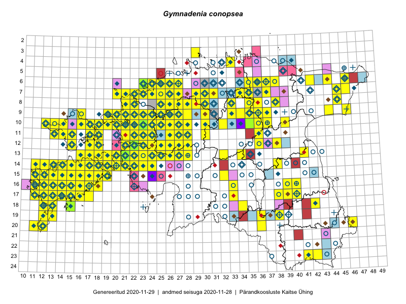

Gymnadenia conopsea — harilik käoraamat
Orchidaceae :: Gymnadenia conopsea (L.) R.Br. (2085); Gymnadenia conopsea subsp. conopsea (L.) R.Br. (31); Gymnadenia conopea auct. (3)

Kaart põhineb 3946 kirjel:
vaatlusi 1799
herbaareksemplare 320
PKÜ kirjeid1 486
ELFi kirjeid2 1082
LVA kirjeid3 169
EELISe kirjeid4 90
Taime kaasaegsed ja ajaloolised leiukohad asuvad 336 ruudus.
Tingmärgid ja leidudega ruutude arvud periooditi uues (u) ja 2005 andmestikus (v)
| █ | vahemik | u5 | v6 |
|---|---|---|---|
| █ | 2006–2020 | 260 | – |
| ◆/◇ | 1971–2005 | 208 | 207 |
| ○ | 1921–1970 | 167 | 38 |
| + | kuni 1920 | 32 | 0 |
| × | hävinud | – | 0 |
| ? | kaheldav | – | 0 |
| Ruut | Leidja(d) | Leiuaeg | Kirje |
|---|---|---|---|
| 10-22 | Kaili Kattai | 2020-09-25 | punkt: Gymnadenia conopsea (L.) R.Br. |
| 10-22 | Kaili Kattai | 2020-09-25 | punkt: Gymnadenia conopsea (L.) R.Br. |
| 17-15 | Anu Hansen | 2020-09-18 | LVA: -269204614 |
| 15-18 | Ott Luuk | 2020-09-12 | ruut/ala: Gymnadenia conopsea (L.) R.Br. |
| 17-16 | Meeli Mesipuu, Ott Luuk | 2020-09-12 | PKÜ: 20537 |
| 15-18 | Toomas Kukk | 2020-09-11 | PKÜ: 20966 |
| 09-29 | Toivo Sepp | 2020-09-11 | ELF: 9877 |
| 15-18 | Peedu Saar | 2020-09-11 | ruut/ala: Gymnadenia conopsea (L.) R.Br. |
| 15-18 | Peedu Saar | 2020-09-11 | PKÜ: 20976 |
| 15-18 | Peedu Saar | 2020-09-11 | PKÜ: 20979 |
| 17-16 | Ott Luuk, Meeli Mesipuu | 2020-09-11 | PKÜ: 21032 |
| 17-16 | Ott Luuk, Meeli Mesipuu | 2020-09-11 | PKÜ: 21033 |
| 17-16 | Ott Luuk, Meeli Mesipuu | 2020-09-11 | PKÜ: 21034 |
| 15-16 | Mari Reitalu, Sirje Azarov | 2020-09-07 | ruut/ala: Gymnadenia conopsea (L.) R.Br. |
| 11-28 | Toivo Sepp | 2020-09-05 | ELF: 2288 |
| 11-28 | Toivo Sepp | 2020-09-04 | ELF: 143 |
| 11-28 | Toivo Sepp | 2020-09-04 | ELF: 2986 |
| 16-14 | Mari Reitalu, Sirje Azarov | 2020-09-03 | ruut/ala: Gymnadenia conopsea (L.) R.Br. |
| 16-17 | Mari Reitalu, Sirje Azarov | 2020-08-31 | ruut/ala: Gymnadenia conopsea (L.) R.Br. |
| 14-22 | Peedu Saar | 2020-08-30 | PKÜ: 20594 |
| 14-22 | Peedu Saar | 2020-08-30 | PKÜ: 20596 |
| 14-22 | Peedu Saar | 2020-08-30 | PKÜ: 20599 |
| 14-22 | Ott Luuk, Meeli Mesipuu | 2020-08-30 | PKÜ: 20623 |
| 15-22 | Meeli Mesipuu | 2020-08-30 | PKÜ: 21253 |
| 15-17 | Mari Reitalu, Sirje Azarov | 2020-08-27–2020-09-06 | ruut/ala: Gymnadenia conopsea (L.) R.Br. |
| 06-36 | Toomas Kukk | 2020-08-27 | punkt: Gymnadenia conopsea (L.) R.Br. |
| 06-36 | Toomas Kukk | 2020-08-27 | PKÜ: 21022 |
| 11-28 | Toivo Sepp | 2020-08-27 | ELF: 2510 |
| 11-28 | Ott Luuk | 2020-08-26 | ELF: 144 |
| 11-28 | Ott Luuk | 2020-08-26 | ELF: 2941 |
| 11-28 | Ott Luuk | 2020-08-26 | ELF: 2388 |
| 11-28 | Ott Luuk | 2020-08-26 | ELF: 2262 |
| 14-15 | Mari Reitalu, Sirje Azarov | 2020-08-24 | ruut/ala: Gymnadenia conopsea (L.) R.Br. |
| 14-16 | Mari Reitalu, Sirje Azarov | 2020-08-19–2020-08-20 | ruut/ala: Gymnadenia conopsea (L.) R.Br. |
| 14-17 | Mari Reitalu, Sirje Azarov | 2020-08-18 | ruut/ala: Gymnadenia conopsea (L.) R.Br. |
| 04-39;04-40 | Jaan Spiegel | 2020-08-17 | ELF: 24903 |
| 14-19 | Meeli Mesipuu | 2020-08-12 | ruut/ala: Gymnadenia conopsea (L.) R.Br. |
| 14-19 | Meeli Mesipuu | 2020-08-12 | punkt: Gymnadenia conopsea (L.) R.Br. |
| 13-18 | Mari Reitalu, Sirje Azarov | 2020-08-11–2020-08-12 | ruut/ala: Gymnadenia conopsea (L.) R.Br. |
| 14-20 | Mari Reitalu, Sirje Azarov | 2020-08-11 | ruut/ala: Gymnadenia conopsea (L.) R.Br. |
| 07-29;07-30 | Eerik Leibak | 2020-08-10 | ELF: 24886 |
| 16-17 | Mari Reitalu, Sirje Azarov | 2020-08-08–2020-08-29 | ruut/ala: Gymnadenia conopsea (L.) R.Br. |
| 09-21 | Ott Luuk | 2020-08-07 | punkt: Gymnadenia conopsea (L.) R.Br. |
| 09-21 | Ott Luuk | 2020-08-07 | ruut/ala: Gymnadenia conopsea (L.) R.Br. |
| 10-17 | Peedu Saar | 2020-08-06 | PKÜ: 20609 |
| 15-16 | Peeter Tarlap | 2020-08-05 | punkt: Gymnadenia conopsea (L.) R.Br. |
| 10-23 | Peedu Saar | 2020-08-05 | punkt: Gymnadenia conopsea (L.) R.Br. |
| 10-23 | Ott Luuk | 2020-08-05 | punkt: Gymnadenia conopsea (L.) R.Br. |
| 10-23 | Ott Luuk | 2020-08-05 | punkt: Gymnadenia conopsea (L.) R.Br. |
| 10-23 | Ott Luuk | 2020-08-05 | ruut/ala: Gymnadenia conopsea (L.) R.Br. |
| 07-45 | Toomas Kukk | 2020-07-29 | punkt: Gymnadenia conopsea (L.) R.Br. |
| 08-45 | Peedu Saar | 2020-07-29 | punkt: Gymnadenia conopsea (L.) R.Br. |
| 08-45 | Peedu Saar | 2020-07-29 | PKÜ: 20503 |
| 17-13 | Ants Animägi | 2020-07-28 | LVA: 462229334 |
| 15-11 | Ants Animägi | 2020-07-26 | LVA: 1370733930 |
| 08-33 | Ulvi Selgis, Enn Selgis, Ester Valdvee, Laimdota Truus, Olev Abner, Arne Kivistik, Tiiu-Maie Laht, Aare Laht | 2020-07-25 | punkt: Gymnadenia conopsea (L.) R.Br. |
| 08-25 | Peedu Saar | 2020-07-23 | punkt: Gymnadenia conopsea (L.) R.Br. |
| 08-25 | Peedu Saar | 2020-07-23 | punkt: Gymnadenia conopsea (L.) R.Br. |
| 08-25 | Ott Luuk | 2020-07-23 | punkt: Gymnadenia conopsea (L.) R.Br. |
| 08-25 | Ott Luuk | 2020-07-23 | punkt: Gymnadenia conopsea (L.) R.Br. |
| 08-25 | Ott Luuk | 2020-07-22–2020-07-23 | ruut/ala: Gymnadenia conopsea (L.) R.Br. |
| 10-23 | Peedu Saar | 2020-07-22 | punkt: Gymnadenia conopsea (L.) R.Br. |
| 08-25 | Ott Luuk | 2020-07-22 | punkt: Gymnadenia conopsea (L.) R.Br. |
| 18-42 | Meeli Mesipuu | 2020-07-22 | punkt: Gymnadenia conopsea (L.) R.Br. |
| 16-17 | Mari Reitalu, Sirje Azarov, Anne Teigamägi | 2020-07-22 | ruut/ala: Gymnadenia conopsea (L.) R.Br. |
| 17-13 | Ants Animägi | 2020-07-22 | LVA: -34685270 |
| 14-11 | Ants Animägi | 2020-07-22 | LVA: 1976658486 |
| 15-14 | Sirje Azarov, Mari Reitalu | 2020-07-21 | punkt: Gymnadenia conopsea (L.) R.Br. |
| 15-14 | Sirje Azarov, Mari Reitalu | 2020-07-21 | punkt: Gymnadenia conopsea (L.) R.Br. |
| 09-25 | Peedu Saar | 2020-07-21 | punkt: Gymnadenia conopsea (L.) R.Br. |
| 09-25 | Peedu Saar | 2020-07-21 | punkt: Gymnadenia conopsea (L.) R.Br. |
| 09-26 | Ott Luuk | 2020-07-21 | punkt: Gymnadenia conopsea (L.) R.Br. |
| 15-14 | Mari Reitalu, Sirje Azarov | 2020-07-21 | ruut/ala: Gymnadenia conopsea (L.) R.Br. |
| 06-31 | Eerik Leibak | 2020-07-19 | ELF: 313 |
| 14-21 | Meeli Mesipuu, Ott Luuk | 2020-07-18 | PKÜ: 21235 |
| 14-21 | Meeli Mesipuu, Ott Luuk | 2020-07-18 | PKÜ: 21234 |
| 14-15 | Jaak Pärtel | 2020-07-18 | punkt: Gymnadenia conopsea (L.) R.Br. |
| 14-15 | Jaak Pärtel | 2020-07-18 | punkt: Gymnadenia conopsea (L.) R.Br. |
| 14-15 | Jaak Pärtel | 2020-07-18 | punkt: Gymnadenia conopsea (L.) R.Br. |
| 07-26 | Eerik Leibak | 2020-07-18 | ELF: 1355 |
| 07-26 | Eerik Leibak | 2020-07-18 | ELF: 1356 |
| 11-28 | Lauri Mällo | 2020-07-17 | punkt: Gymnadenia conopsea (L.) R.Br. |
| 09-35 | Ulvi Selgis, Enn Selgis | 2020-07-16 | punkt: Gymnadenia conopsea (L.) R.Br. |
| 14-38 | Meeli Mesipuu | 2020-07-16 | punkt: Gymnadenia conopsea (L.) R.Br. |
| 14-38 | Meeli Mesipuu | 2020-07-16 | ruut/ala: Gymnadenia conopsea (L.) R.Br. |
| 08-26 | Kaili Kattai | 2020-07-16 | punkt: Gymnadenia conopsea (L.) R.Br. |
| 08-26 | Kaili Kattai | 2020-07-16 | punkt: Gymnadenia conopsea (L.) R.Br. |
| 09-26 | Kaili Kattai | 2020-07-16 | punkt: Gymnadenia conopsea (L.) R.Br. |
| 09-35 | Enn Selgis | 2020-07-16 | LVA: -295021174 |
| 08-26 | Eerik Leibak | 2020-07-16 | ELF: 2655 |
| 08-26 | Eerik Leibak | 2020-07-16 | ELF: 33 |
| 08-26 | Eerik Leibak | 2020-07-16 | ELF: 24882 |
| 08-26 | Eerik Leibak | 2020-07-16 | ELF: 24883 |
| 08-26 | Eerik Leibak | 2020-07-15 | ELF: 2758 |
| 08-26 | Eerik Leibak | 2020-07-15 | ELF: 32 |
| 12-38 | Enn Selgis | 2020-07-14 | LVA: 419227640 |
| 07-31 | Eerik Leibak | 2020-07-14 | ELF: 308 |
| 10-21 | Thea Kull | 2020-07-12 | punkt: Gymnadenia conopsea (L.) R.Br. |
| 09-22 | Thea Kull | 2020-07-12 | punkt: Gymnadenia conopsea (L.) R.Br. |
| 10-21 | Thea Kull | 2020-07-12 | punkt: Gymnadenia conopsea (L.) R.Br. |
| 09-22 | Thea Kull | 2020-07-12 | punkt: Gymnadenia conopsea (L.) R.Br. |
| 07-29 | Meeli Mesipuu | 2020-07-10 | punkt: Gymnadenia conopsea (L.) R.Br. |
| 14-23 | Silvia Pihu | 2020-07-09 | ELF: 24910 |
| 19-41 | Avo Veermäe | 2020-07-09 | LVA: -184208908 |
| 13-23 | Kaili Kattai | 2020-07-08 | punkt: Gymnadenia conopsea (L.) R.Br. |
| 10-14 | Siret Lahemaa | 2020-07-07 | LVA: 183302128 |
| 12-21 | Kaili Kattai | 2020-07-07 | punkt: Gymnadenia conopsea (L.) R.Br. |
| 12-21 | Kaili Kattai | 2020-07-07 | punkt: Gymnadenia conopsea (L.) R.Br. |
| 07-22 | Villu Soon | 2020-07-06 | punkt: Gymnadenia conopsea (L.) R.Br. |
| 10-28 | Villu Soon | 2020-07-06 | punkt: Gymnadenia conopsea (L.) R.Br. |
| 10-23 | Kaili Kattai | 2020-07-06 | punkt: Gymnadenia conopsea (L.) R.Br. |
| 10-23 | Kaili Kattai | 2020-07-06 | punkt: Gymnadenia conopsea (L.) R.Br. |
| 10-24 | Kaili Kattai | 2020-07-06 | punkt: Gymnadenia conopsea (L.) R.Br. |
| 20-36 | Ulvi Selgis, Enn Selgis, Angelika Portsmuth, Hans Albert William Portsmuth | 2020-07-05 | punkt: Gymnadenia conopsea (L.) R.Br. |
| 20-36 | Ulvi Selgis, Angelika Portsmuth, Hans Albert William Portsmuth, Enn Selgis | 2020-07-05 | punkt: Gymnadenia conopsea (L.) R.Br. |
| 20-36 | Ulvi Selgis, Angelika Portsmuth, Hans Albert William Portsmuth, Enn Selgis | 2020-07-05 | punkt: Gymnadenia conopsea (L.) R.Br. |
| 20-36 | Ulvi Selgis, Angelika Portsmuth, Hans Albert William Portsmuth, Enn Selgis | 2020-07-05 | punkt: Gymnadenia conopsea (L.) R.Br. |
| 20-36 | Ulvi Selgis, Angelika Portsmuth, Hans Albert William Portsmuth, Enn Selgis | 2020-07-05 | punkt: Gymnadenia conopsea (L.) R.Br. |
| 20-36 | Ulvi Selgis, Angelika Portsmuth, Hans Albert William Portsmuth, Enn Selgis | 2020-07-05 | punkt: Gymnadenia conopsea (L.) R.Br. |
| 20-36 | Ulvi Selgis, Angelika Portsmuth, Hans Albert William Portsmuth, Enn Selgis | 2020-07-05 | punkt: Gymnadenia conopsea (L.) R.Br. |
| 20-36 | Ulvi Selgis, Angelika Portsmuth, Hans Albert William Portsmuth, Enn Selgis | 2020-07-05 | punkt: Gymnadenia conopsea (L.) R.Br. |
| 20-36 | Ulvi Selgis, Angelika Portsmuth, Hans Albert William Portsmuth, Enn Selgis | 2020-07-05 | punkt: Gymnadenia conopsea (L.) R.Br. |
| 20-36 | Ulvi Selgis, Angelika Portsmuth, Hans Albert William Portsmuth, Enn Selgis | 2020-07-05 | punkt: Gymnadenia conopsea (L.) R.Br. |
| 20-36 | Ulvi Selgis, Angelika Portsmuth, Hans Albert William Portsmuth, Enn Selgis | 2020-07-05 | punkt: Gymnadenia conopsea (L.) R.Br. |
| 20-36 | Ulvi Selgis, Angelika Portsmuth, Hans Albert William Portsmuth, Enn Selgis | 2020-07-05 | punkt: Gymnadenia conopsea (L.) R.Br. |
| 20-36 | Ulvi Selgis, Angelika Portsmuth, Hans Albert William Portsmuth, Enn Selgis | 2020-07-05 | punkt: Gymnadenia conopsea (L.) R.Br. |
| 20-36 | Ulvi Selgis, Angelika Portsmuth, Hans Albert William Portsmuth, Enn Selgis | 2020-07-05 | punkt: Gymnadenia conopsea (L.) R.Br. |
| 20-36 | Ulvi Selgis, Angelika Portsmuth, Hans Albert William Portsmuth, Enn Selgis | 2020-07-05 | punkt: Gymnadenia conopsea (L.) R.Br. |
| 19-36 | Ulvi Selgis, Angelika Portsmuth, Hans Albert William Portsmuth, Enn Selgis | 2020-07-05 | punkt: Gymnadenia conopsea (L.) R.Br. |
| 20-36 | Merit Otsus, Ester Valdvee, Aare Laht, Tiiu-Maie Laht | 2020-07-05 | punkt: Gymnadenia conopsea (L.) R.Br. |
| 20-36 | Merit Otsus, Ester Valdvee, Aare Laht, Tiiu-Maie Laht | 2020-07-05 | punkt: Gymnadenia conopsea (L.) R.Br. |
| 20-36 | Merit Otsus, Ester Valdvee, Aare Laht, Tiiu-Maie Laht | 2020-07-05 | punkt: Gymnadenia conopsea (L.) R.Br. |
| 20-36 | Merit Otsus, Ester Valdvee, Aare Laht, Tiiu-Maie Laht | 2020-07-05 | punkt: Gymnadenia conopsea (L.) R.Br. |
| 20-36 | Merit Otsus, Ester Valdvee, Aare Laht, Tiiu-Maie Laht | 2020-07-05 | punkt: Gymnadenia conopsea (L.) R.Br. |
| 20-36 | Merit Otsus, Ester Valdvee, Aare Laht, Tiiu-Maie Laht | 2020-07-05 | punkt: Gymnadenia conopsea (L.) R.Br. |
| 20-36 | Merit Otsus, Ester Valdvee, Aare Laht, Tiiu-Maie Laht | 2020-07-05 | punkt: Gymnadenia conopsea (L.) R.Br. |
| 20-36 | Merit Otsus, Ester Valdvee, Aare Laht, Tiiu-Maie Laht | 2020-07-05 | punkt: Gymnadenia conopsea (L.) R.Br. |
| 20-36 | Merit Otsus, Ester Valdvee, Aare Laht, Tiiu-Maie Laht | 2020-07-05 | punkt: Gymnadenia conopsea (L.) R.Br. |
| 20-36 | Merit Otsus, Ester Valdvee, Aare Laht, Tiiu-Maie Laht | 2020-07-05 | punkt: Gymnadenia conopsea (L.) R.Br. |
| 20-36 | Merit Otsus, Ester Valdvee, Aare Laht, Tiiu-Maie Laht | 2020-07-05 | punkt: Gymnadenia conopsea (L.) R.Br. |
| 20-36 | Merit Otsus, Ester Valdvee, Aare Laht, Tiiu-Maie Laht | 2020-07-05 | punkt: Gymnadenia conopsea (L.) R.Br. |
| 20-36 | Merit Otsus, Ester Valdvee, Aare Laht, Tiiu-Maie Laht | 2020-07-05 | punkt: Gymnadenia conopsea (L.) R.Br. |
| 20-36 | Merit Otsus, Ester Valdvee, Aare Laht, Tiiu-Maie Laht | 2020-07-05 | punkt: Gymnadenia conopsea (L.) R.Br. |
| 20-36 | Merit Otsus, Ester Valdvee, Aare Laht, Tiiu-Maie Laht | 2020-07-05 | punkt: Gymnadenia conopsea (L.) R.Br. |
| 20-36 | Merit Otsus, Ester Valdvee, Aare Laht, Tiiu-Maie Laht | 2020-07-05 | punkt: Gymnadenia conopsea (L.) R.Br. |
| 20-36 | Merit Otsus, Ester Valdvee, Aare Laht, Tiiu-Maie Laht | 2020-07-05 | punkt: Gymnadenia conopsea (L.) R.Br. |
| 20-36 | Merit Otsus, Ester Valdvee, Aare Laht, Tiiu-Maie Laht | 2020-07-05 | punkt: Gymnadenia conopsea (L.) R.Br. |
| 20-36 | Merit Otsus, Ester Valdvee, Aare Laht, Tiiu-Maie Laht | 2020-07-05 | punkt: Gymnadenia conopsea (L.) R.Br. |
| 20-36 | Merit Otsus, Ester Valdvee, Aare Laht, Tiiu-Maie Laht | 2020-07-05 | punkt: Gymnadenia conopsea (L.) R.Br. |
| 14-23 | Meeli Mesipuu | 2020-07-04 | punkt: Gymnadenia conopsea (L.) R.Br. |
| 13-21 | Kaili Kattai | 2020-07-04 | punkt: Gymnadenia conopsea (L.) R.Br. |
| 13-21 | Kaili Kattai | 2020-07-04 | punkt: Gymnadenia conopsea (L.) R.Br. |
| 19-38 | Jekaterina Aida, Kaisa Alla, Reet Ohna, Arto-Randel Servet, Tarmo Niitla | 2020-07-04 | punkt: Gymnadenia conopsea (L.) R.Br. |
| 17-14 | Toomas Kukk, Peedu Saar | 2020-07-03 | punkt: Gymnadenia conopsea (L.) R.Br. |
| 17-15 | Toomas Kukk | 2020-07-03 | punkt: Gymnadenia conopsea (L.) R.Br. |
| 17-15 | Toomas Kukk | 2020-07-03 | PKÜ: 21199 |
| 17-11 | Rein Kalamees, Ott Luuk | 2020-07-03 | punkt: Gymnadenia conopsea (L.) R.Br. |
| 17-11 | Rein Kalamees, Ott Luuk | 2020-07-03 | PKÜ: 20454 |
| 17-11 | Rein Kalamees, Ott Luuk | 2020-07-03 | PKÜ: 20460 |
| 17-11 | Rein Kalamees, Ott Luuk | 2020-07-03 | PKÜ: 20452 |
| 17-11 | Meeli Mesipuu | 2020-07-03 | PKÜ: 20184 |
| 17-11 | Meeli Mesipuu | 2020-07-03 | PKÜ: 20185 |
| 06-27 | Peeter Tarlap | 2020-07-02 | punkt: Gymnadenia conopsea (L.) R.Br. |
| 19-12 | Peedu Saar | 2020-07-02 | PKÜ: 20557 |
| 19-12 | Peedu Saar | 2020-07-02 | PKÜ: 20559 |
| 17-11 | Ott Luuk, Rein Kalamees | 2020-07-02 | PKÜ: 21180 |
| 16-15 | Mari Reitalu, Sirje Azarov | 2020-07-02 | ruut/ala: Gymnadenia conopsea (L.) R.Br. |
| 16-11 | Toomas Kukk | 2020-07-01 | punkt: Gymnadenia conopsea (L.) R.Br. |
| 17-11 | Meeli Mesipuu | 2020-07-01 | punkt: Gymnadenia conopsea (L.) R.Br. |
| 17-11 | Meeli Mesipuu | 2020-07-01 | PKÜ: 21060 |
| 17-11 | Meeli Mesipuu | 2020-07-01 | PKÜ: 21115 |
| 17-11 | Meeli Mesipuu | 2020-07-01 | PKÜ: 21116 |
| 08-29 | Arne Kivistik | 2020-07-01 | LVA: -1053340410 |
| 17-15 | Toomas Kukk | 2020-06-30 | punkt: Gymnadenia conopsea (L.) R.Br. |
| 17-15 | Toomas Kukk | 2020-06-30 | PKÜ: 20563 |
| 17-15 | Toomas Kukk | 2020-06-30 | PKÜ: 20567 |
| 14-22 | Ott Luuk, Rein Kalamees | 2020-06-30 | PKÜ: 20591 |
| 14-23 | Ants Animägi | 2020-06-30 | LVA: 121163906 |
| 06-47 | Triin Edovald | 2020-06-29 | LVA: -1688667150 |
| 10-24 | Thea Kull | 2020-06-27 | punkt: Gymnadenia conopsea (L.) R.Br. |
| 10-24 | Thea Kull | 2020-06-27 | punkt: Gymnadenia conopsea (L.) R.Br. |
| 10-24 | Thea Kull | 2020-06-27 | punkt: Gymnadenia conopsea (L.) R.Br. |
| 11-18 | Villu Soon | 2020-06-26 | punkt: Gymnadenia conopsea (L.) R.Br. |
| 10-26 | Thea Kull | 2020-06-26 | punkt: Gymnadenia conopsea (L.) R.Br. |
| 10-26 | Thea Kull | 2020-06-26 | punkt: Gymnadenia conopsea (L.) R.Br. |
| 10-26 | Thea Kull | 2020-06-26 | punkt: Gymnadenia conopsea (L.) R.Br. |
| 10-24 | Thea Kull | 2020-06-26 | punkt: Gymnadenia conopsea (L.) R.Br. |
| 10-24 | Thea Kull | 2020-06-26 | punkt: Gymnadenia conopsea (L.) R.Br. |
| 17-12 | Ants Animägi | 2020-06-26 | LVA: 930886686 |
| 17-12 | Ants Animägi | 2020-06-26 | LVA: -1740052460 |
| 13-19 | Villu Soon | 2020-06-25 | punkt: Gymnadenia conopsea (L.) R.Br. |
| 13-26 | Ants Animägi | 2020-06-25 | LVA: 1248782994 |
| 13-35 | Ülle Piirsalu | 2020-06-24 | LVA: -1542694222 |
| 17-38 | Jaak Pärtel | 2020-06-24 | punkt: Gymnadenia conopsea (L.) R.Br. |
| 13-21 | Reigo Roasto | 2020-06-21 | LVA: -2144571698 |
| 10-25 | Thea Kull | 2020-06-19 | punkt: Gymnadenia conopsea (L.) R.Br. |
| 12-21;13-21 | Toomas Kukk, Rein Kalamees, Martin Tikk | 2020-06-18 | PKÜ: 21101 |
| 13-21 | Toomas Kukk, Martin Tikk, Rein Kalamees | 2020-06-18 | punkt: Gymnadenia conopsea (L.) R.Br. |
| 13-21 | Toomas Kukk, Martin Tikk, Rein Kalamees | 2020-06-18 | punkt: Gymnadenia conopsea (L.) R.Br. |
| 12-21 | Toomas Kukk, Martin Tikk, Rein Kalamees | 2020-06-18 | punkt: Gymnadenia conopsea (L.) R.Br. |
| 13-21 | Toomas Kukk, Martin Tikk, Rein Kalamees | 2020-06-18 | punkt: Gymnadenia conopsea (L.) R.Br. |
| 13-21 | Toomas Kukk, Martin Tikk, Rein Kalamees | 2020-06-18 | punkt: Gymnadenia conopsea (L.) R.Br. |
| 13-21 | Toomas Kukk, Martin Tikk | 2020-06-18 | PKÜ: 21104 |
| 13-21 | Rein Kalamees | 2020-06-18 | PKÜ: 21107 |
| 14-21 | Ott Luuk, Meeli Mesipuu | 2020-06-18 | punkt: Gymnadenia conopsea (L.) R.Br. |
| 14-21 | Ott Luuk, Meeli Mesipuu | 2020-06-18 | punkt: Gymnadenia conopsea (L.) R.Br. |
| 12-24 | Thea Kull | 2020-06-17 | punkt: Gymnadenia conopsea (L.) R.Br. |
| 06-26 | Rein Kalamees | 2020-06-17 | PKÜ: 20760 |
| 06-26 | Rein Kalamees | 2020-06-17 | PKÜ: 20762 |
| 06-26 | Rein Kalamees | 2020-06-17 | PKÜ: 20756 |
| 10-17 | Ants Animägi | 2020-06-17 | LVA: -84069506 |
| 06-27 | Toomas Kukk, Rein Kalamees, Martin Tikk | 2020-06-16 | PKÜ: 20860 |
| 06-27 | Toomas Kukk, Rein Kalamees, Martin Tikk | 2020-06-16 | PKÜ: 20862 |
| 06-27 | Toomas Kukk, Rein Kalamees, Martin Tikk | 2020-06-16 | PKÜ: 20853 |
| 06-27 | Toomas Kukk, Rein Kalamees, Martin Tikk | 2020-06-16 | PKÜ: 20852 |
| 06-27 | Toomas Kukk, Martin Tikk, Rein Kalamees | 2020-06-16 | punkt: Gymnadenia conopsea (L.) R.Br. |
| 10-27 | Thea Kull | 2020-06-16 | punkt: Gymnadenia conopsea (L.) R.Br. |
| 14-21 | Meeli Mesipuu | 2020-06-16 | punkt: Gymnadenia conopsea (L.) R.Br. |
| 14-21 | Meeli Mesipuu | 2020-06-16 | PKÜ: 21233 |
| 08-27 | Toomas Kukk | 2020-06-15 | PKÜ: 20463 |
| 14-20 | Ants Animägi | 2020-06-15 | LVA: 544561300 |
| 13-21 | Kaili Kattai | 2020-06-05 | punkt: Gymnadenia conopsea (L.) R.Br. |
| 17-14 | Mari Reitalu, Triin Reitalu, Sirje Azarov | 2020-05-26 | ruut/ala: Gymnadenia conopsea (L.) R.Br. |
| 17-11 | Meeli Mesipuu | 2020-01-07 | punkt: Gymnadenia conopsea (L.) R.Br. |
| 10-23 | Tõnu Ploompuu | 2019-10-01 | ELF: 198 |
| 17-16 | Peedu Saar, Toomas Kukk | 2019-09-27 | ruut/ala: Gymnadenia conopsea (L.) R.Br. |
| 16-14 | Mari Reitalu, Sirje Azarov | 2019-09-23 | ruut/ala: Gymnadenia conopsea (L.) R.Br. |
| 15-14;16-14 | Mari Reitalu, Sirje Azarov | 2019-09-23 | ELF: 74 |
| 10-19 | Peedu Saar, Toomas Kukk | 2019-09-18 | punkt: Gymnadenia conopsea (L.) R.Br. |
| 10-19 | Peedu Saar, Toomas Kukk | 2019-09-18 | ruut/ala: Gymnadenia conopsea (L.) R.Br. |
| 09-20 | Ott Luuk | 2019-09-18 | punkt: Gymnadenia conopsea (L.) R.Br. |
| 09-20 | Ott Luuk | 2019-09-18 | ruut/ala: Gymnadenia conopsea (L.) R.Br. |
| 09-19 | Toomas Kukk, Peedu Saar | 2019-09-17 | ELF: 24836 |
| 09-19 | Peedu Saar, Toomas Kukk | 2019-09-17 | punkt: Gymnadenia conopsea (L.) R.Br. |
| 06-46 | Toomas Kukk, Thea Kull | 2019-09-11 | ruut/ala: Gymnadenia conopsea (L.) R.Br. |
| 06-44 | Ott Luuk, Meeli Mesipuu | 2019-09-11 | ruut/ala: Gymnadenia conopsea (L.) R.Br. |
| 06-44 | Meeli Mesipuu, Ott Luuk | 2019-09-11 | punkt: Gymnadenia conopsea (L.) R.Br. |
| 10-23 | Tõnu Ploompuu | 2019-09-07 | ELF: 199 |
| 10-23 | Tõnu Ploompuu | 2019-09-07 | ELF: 200 |
| 20-46 | Meeli Mesipuu | 2019-09-05 | punkt: Gymnadenia conopsea (L.) R.Br. |
| 09-22 | Peedu Saar | 2019-09-04 | ELF: 24812 |
| 09-22 | Ott Luuk | 2019-09-04 | ELF: 324 |
| 10-17 | Ants Animägi | 2019-09-04 | LVA: 569828986 |
| 09-22 | Ott Luuk | 2019-09-03–2019-09-04 | ruut/ala: Gymnadenia conopsea (L.) R.Br. |
| 09-22 | Ott Luuk | 2019-09-03 | punkt: Gymnadenia conopsea (L.) R.Br. |
| 09-22 | Ott Luuk | 2019-09-03 | ELF: 2330 |
| 08-27 | Eerik Leibak | 2019-09-02 | ELF: 261 |
| 08-27 | Eerik Leibak | 2019-09-02 | ELF: 24763 |
| 15-13 | Sirje Azarov, Mari Reitalu | 2019-08-31 | ELF: 9 |
| 15-13 | Mari Reitalu, Sirje Azarov | 2019-08-31 | ruut/ala: Gymnadenia conopsea (L.) R.Br. |
| 15-13 | Mari Reitalu, Sirje Azarov | 2019-08-31 | ELF: 20989 |
| 12-23 | Peedu Saar, Toomas Kukk | 2019-08-30 | ruut/ala: Gymnadenia conopsea (L.) R.Br. |
| 15-32 | Thea Kull, Mari Reitalu | 2019-08-29 | punkt: Gymnadenia conopsea (L.) R.Br. |
| 15-32 | Mari Reitalu, Thea Kull, Martin Tikk | 2019-08-29 | ruut/ala: Gymnadenia conopsea (L.) R.Br. |
| 16-33 | Thea Kull, Mari Reitalu | 2019-08-27 | punkt: Gymnadenia conopsea (L.) R.Br. |
| 12-36 | Ott Luuk, Eerik Leibak | 2019-08-27 | punkt: Gymnadenia conopsea (L.) R.Br. |
| 06-37 | Ulvi Selgis, Marilin Mõtlep | 2019-08-25 | punkt: Gymnadenia conopsea (L.) R.Br. |
| 17-13 | Sirje Azarov, Mari Reitalu | 2019-08-25 | ELF: 24 |
| 17-13 | Sirje Azarov, Mari Reitalu | 2019-08-25 | ELF: 25 |
| 17-13 | Mari Reitalu, Sirje Azarov | 2019-08-19 | ELF: 23 |
| 17-13 | Mari Reitalu, Sirje Azarov | 2019-08-19 | ELF: 16715 |
| 12-26 | Thea Kull | 2019-08-16 | punkt: Gymnadenia conopsea (L.) R.Br. |
| 12-26;13-26 | Thea Kull | 2019-08-16 | ELF: 20728 |
| 09-22 | Peedu Saar | 2019-08-16 | ruut/ala: Gymnadenia conopsea (L.) R.Br. |
| 09-22 | Peedu Saar | 2019-08-16 | ELF: 2034 |
| 16-13 | Mari Reitalu, Sirje Azarov | 2019-08-15 | ruut/ala: Gymnadenia conopsea (L.) R.Br. |
| 16-13 | Mari Reitalu, Sirje Azarov | 2019-08-15 | ELF: 14 |
| 11-36 | Peedu Saar | 2019-08-10 | ruut/ala: Gymnadenia conopsea (L.) R.Br. |
| 11-36 | Peedu Saar | 2019-08-10 | punkt: Gymnadenia conopsea (L.) R.Br. |
| 11-36 | Peedu Saar | 2019-08-10 | ELF: 12126 |
| 16-12 | Mari Reitalu, Sirje Azarov | 2019-08-09 | ELF: 51 |
| 16-12 | Mari Reitalu, Sirje Azarov | 2019-08-09 | ELF: 52 |
| 10-22 | Tõnu Ploompuu | 2019-08-08 | ELF: 227 |
| 10-36 | Timo Luhamäe, Peedu Saar | 2019-08-08 | punkt: Gymnadenia conopsea (L.) R.Br. |
| 10-36 | Peedu Saar, Timo Luhamäe | 2019-08-08 | ruut/ala: Gymnadenia conopsea (L.) R.Br. |
| 15-12 | Sirje Azarov, Mari Reitalu | 2019-08-06 | ELF: 106 |
| 15-12 | Sirje Azarov, Mari Reitalu | 2019-08-06 | ELF: 2627 |
| 15-12 | Mari Reitalu, Sirje Azarov | 2019-08-06 | ruut/ala: Gymnadenia conopsea (L.) R.Br. |
| 16-12 | Sirje Azarov, Mari Reitalu | 2019-08-05 | ELF: 56 |
| 16-12 | Sirje Azarov, Mari Reitalu | 2019-08-05 | ELF: 61 |
| 06-38 | Meeli Mesipuu | 2019-08-05 | ruut/ala: Gymnadenia conopsea (L.) R.Br. |
| 06-38 | Meeli Mesipuu | 2019-08-05 | punkt: Gymnadenia conopsea (L.) R.Br. |
| 06-37 | Meeli Mesipuu | 2019-08-05 | punkt: Gymnadenia conopsea (L.) R.Br. |
| 06-37 | Meeli Mesipuu | 2019-08-05 | punkt: Gymnadenia conopsea (L.) R.Br. |
| 06-37 | Meeli Mesipuu | 2019-08-05 | punkt: Gymnadenia conopsea (L.) R.Br. |
| 17-15 | Sirje Azarov | 2019-08-04 | ELF: 94 |
| 17-14 | Sirje Azarov | 2019-08-03 | ELF: 20 |
| 17-14 | Sirje Azarov | 2019-08-03 | ELF: 85 |
| 17-14 | Sirje Azarov | 2019-08-03 | ELF: 86 |
| 10-32 | Ott Luuk | 2019-07-31 | punkt: Gymnadenia conopsea (L.) R.Br. |
| 08-21 | Peedu Saar | 2019-07-26 | ruut/ala: Gymnadenia conopsea (L.) R.Br. |
| 08-21 | Peedu Saar | 2019-07-26 | ELF: 1486 |
| 08-21 | Peedu Saar | 2019-07-26 | ELF: 6084 |
| 08-21 | Peedu Saar | 2019-07-26 | ELF: 6087 |
| 06-37 | Ulvi Selgis | 2019-07-25 | LVA: 2057635578 |
| 07-21 | Peedu Saar | 2019-07-25 | ruut/ala: Gymnadenia conopsea (L.) R.Br. |
| 07-21 | Peedu Saar | 2019-07-25 | ELF: 5892 |
| 07-21 | Peedu Saar | 2019-07-25 | ELF: 5893 |
| 07-21 | Peedu Saar | 2019-07-25 | ELF: 24817 |
| 16-13 | Ants Animägi | 2019-07-25 | LVA: 2101680592 |
| 06-38 | Ulvi Selgis, Marilin Mõtlep | 2019-07-24 | punkt: Gymnadenia conopsea (L.) R.Br. |
| 06-37 | Ulvi Selgis, Marilin Mõtlep | 2019-07-24 | punkt: Gymnadenia conopsea (L.) R.Br. |
| 06-37 | Ulvi Selgis | 2019-07-24 | LVA: 752643476 |
| 07-21 | Peedu Saar | 2019-07-24 | punkt: Gymnadenia conopsea (L.) R.Br. |
| 07-21 | Peedu Saar | 2019-07-24 | ruut/ala: Gymnadenia conopsea (L.) R.Br. |
| 07-22 | Peedu Saar | 2019-07-24 | ruut/ala: Gymnadenia conopsea (L.) R.Br. |
| 07-21;07-22 | Peedu Saar | 2019-07-24 | ELF: 182 |
| 07-21;07-22 | Peedu Saar | 2019-07-24 | ELF: 2783 |
| 17-39 | Thea Kull | 2019-07-23 | punkt: Gymnadenia conopsea (L.) R.Br. |
| 16-12 | Mari Reitalu | 2019-07-23 | ELF: 734 |
| 13-19 | Helene Urva | 2019-07-22 | LVA: -1643708664 |
| 11-22 | Tõnu Ploompuu, Eliko Kõiv | 2019-07-21 | ELF: 232 |
| 11-22 | Tõnu Ploompuu, Eliko Kõiv | 2019-07-21 | ELF: 2220 |
| 07-34 | Enn Selgis | 2019-07-21 | LVA: 1772259930 |
| 13-32 | Eerik Leibak | 2019-07-20 | ELF: 1183 |
| 13-32 | Eerik Leibak | 2019-07-20 | ELF: 1184 |
| 16-12 | Sirje Azarov | 2019-07-19 | ELF: 9928 |
| 17-13 | Mari Reitalu, Sirje Azarov | 2019-07-18 | ELF: 1 |
| 18-42 | Avo Veermäe | 2019-07-18 | LVA: -801770688 |
| 10-26 | Rein Kalamees | 2019-07-17 | ruut/ala: Gymnadenia conopsea (L.) R.Br. |
| 09-27 | Eerik Leibak | 2019-07-17 | ELF: 871 |
| 08-27;09-27 | Eerik Leibak | 2019-07-17 | ELF: 875 |
| 09-27 | Eerik Leibak | 2019-07-17 | ELF: 2571 |
| 09-27 | Eerik Leibak | 2019-07-17 | ELF: 21307 |
| 06-35 | Urmas Ojango | 2019-07-15 | punkt: Gymnadenia conopsea (L.) R.Br. |
| 09-27 | Eerik Leibak | 2019-07-15 | ELF: 878 |
| 08-27 | Eerik Leibak | 2019-07-15 | ELF: 880 |
| 08-27;09-27 | Eerik Leibak | 2019-07-15 | ELF: 881 |
| 08-27 | Eerik Leibak | 2019-07-15 | ELF: 882 |
| 23-42 | Sirje Azarov, Jekaterina Aida, Riine Latserus, Ülle Jõgar, Hele Tulviste, Aiki Tibar | 2019-07-14 | punkt: Gymnadenia conopsea (L.) R.Br. |
| 08-27 | Eerik Leibak | 2019-07-14 | ELF: 865 |
| 18-42 | Meeli Mesipuu | 2019-07-12 | ruut/ala: Gymnadenia conopsea (L.) R.Br. |
| 18-42 | Meeli Mesipuu | 2019-07-12 | punkt: Gymnadenia conopsea (L.) R.Br. |
| 18-42 | Meeli Mesipuu | 2019-07-12 | punkt: Gymnadenia conopsea (L.) R.Br. |
| 08-27 | Eerik Leibak | 2019-07-12 | ELF: 861 |
| 19-38 | Thea Kull | 2019-07-11 | punkt: Gymnadenia conopsea (L.) R.Br. |
| 19-13 | Mari Reitalu, Sirje Azarov | 2019-07-11 | ruut/ala: Gymnadenia conopsea (L.) R.Br. |
| 19-13 | Mari Reitalu, Sirje Azarov | 2019-07-11 | ruut/ala: Gymnadenia conopsea (L.) R.Br. |
| 19-13 | Mari Reitalu, Sirje Azarov | 2019-07-11 | ELF: 16766 |
| 19-13 | Mari Reitalu, Sirje Azarov | 2019-07-11 | ELF: 16770 |
| 20-46 | Tiit Hallikma, Ott Luuk | 2019-07-10 | punkt: Gymnadenia conopsea (L.) R.Br. |
| 16-11 | Sirje Azarov, Mari Reitalu | 2019-07-10 | ELF: 24779 |
| 20-46 | Ott Luuk, Tiit Hallikma | 2019-07-10 | ruut/ala: Gymnadenia conopsea (L.) R.Br. |
| 15-18 | Kaile Eschbaum | 2019-07-10 | LVA: 359811272 |
| 10-22 | Enn Selgis | 2019-07-10 | LVA: 1258802368 |
| 10-26 | Enn Selgis | 2019-07-10 | LVA: 931014614 |
| 10-22 | Enn Selgis | 2019-07-10 | LVA: -896953734 |
| 17-40 | Avo Veermäe | 2019-07-09 | LVA: 942017082 |
| 10-22 | Ulvi Selgis | 2019-07-08 | LVA: -1100431806 |
| 15-15 | Toomas Kukk | 2019-07-05 | punkt: Gymnadenia conopsea (L.) R.Br. |
| 15-15 | Eerik Leibak | 2019-07-05 | punkt: Gymnadenia conopsea (L.) R.Br. |
| 16-11 | Helle Mäemets | 2019-07-04 | punkt: Gymnadenia conopsea (L.) R.Br. |
| 10-13 | Eerik Leibak | 2019-07-04 | ELF: 24697 |
| 20-12 | Sirje Azarov, Mari Reitalu | 2019-07-03 | ELF: 13409 |
| 20-12 | Sirje Azarov, Mari Reitalu | 2019-07-03 | ELF: 24780 |
| 11-15 | Toomas Kukk | 2019-07-02 | ruut/ala: Gymnadenia conopsea (L.) R.Br. |
| 11-15 | Toomas Kukk | 2019-07-02 | punkt: Gymnadenia conopsea (L.) R.Br. |
| 11-15 | Toomas Kukk | 2019-07-02 | punkt: Gymnadenia conopsea (L.) R.Br. |
| 11-15 | Toomas Kukk | 2019-07-02 | ELF: 612 |
| 11-15 | Toomas Kukk | 2019-07-02 | ELF: 24691 |
| 06-36 | Ulvi Selgis | 2019-07-01 | LVA: 694863112 |
| 10-17 | Toomas Kukk, Eerik Leibak | 2019-07-01 | ELF: 1977 |
| 10-17 | Toomas Kukk, Eerik Leibak | 2019-07-01 | ELF: 18800 |
| 10-17 | Toomas Kukk, Eerik Leibak | 2019-07-01 | ELF: 24688 |
| 17-12 | Mari Reitalu | 2019-07-01 | ELF: 4696 |
| 10-17 | Eerik Leibak, Toomas Kukk | 2019-07-01 | punkt: Gymnadenia conopsea (L.) R.Br. |
| 10-17 | Eerik Leibak, Toomas Kukk | 2019-07-01 | punkt: Gymnadenia conopsea (L.) R.Br. |
| 10-17 | Eerik Leibak, Toomas Kukk | 2019-07-01 | punkt: Gymnadenia conopsea (L.) R.Br. |
| 10-17 | Eerik Leibak, Toomas Kukk | 2019-07-01 | punkt: Gymnadenia conopsea (L.) R.Br. |
| 10-22 | Tõnu Ploompuu | 2019-07–2019-09 | ELF: 938 |
| 15-12 | Mari Reitalu, Triin Reitalu | 2019-06-27 | ruut/ala: Gymnadenia conopsea (L.) R.Br. |
| 15-12 | Mari Reitalu | 2019-06-27 | ELF: 108 |
| 15-11 | Mari Reitalu | 2019-06-27 | ELF: 125 |
| 15-11 | Mari Reitalu | 2019-06-27 | ELF: 129 |
| 15-12 | Ants Animägi | 2019-06-27 | LVA: 940371628 |
| 13-21 | Toomas Kukk, Ott Luuk, Thea Kull | 2019-06-25 | punkt: Gymnadenia conopsea (L.) R.Br. |
| 13-21 | Ott Luuk, Toomas Kukk, Thea Kull | 2019-06-25 | punkt: Gymnadenia conopsea (L.) R.Br. |
| 13-21 | Ott Luuk, Toomas Kukk, Thea Kull | 2019-06-25 | ruut/ala: Gymnadenia conopsea (L.) R.Br. |
| 13-23 | Ants Animägi | 2019-06-25 | LVA: 1139643996 |
| 13-21 | Reigo Roasto | 2019-06-23 | LVA: 2005162554 |
| 14-21 | Mirjam Roasto, Reigo Roasto | 2019-06-23 | LVA: -1368050242 |
| 13-21 | Reigo Roasto | 2019-06-22 | LVA: -1495723570 |
| 18-39 | Kadri Roos | 2019-06-16 | LVA: -1854567052 |
| 17-13 | Mari Reitalu | 2019-06-09 | punkt: Gymnadenia conopsea (L.) R.Br. |
| 11-23 | Tõnu Ploompuu | 2018-09-16 | ELF: 17892 |
| 11-23 | Tõnu Ploompuu | 2018-09-16 | ELF: 24609 |
| 10-25 | Tõnu Ploompuu, Marko Vainu | 2018-09-07 | ELF: 24608 |
| 09-37 | Rein Kalamees | 2018-09-07 | ruut/ala: Gymnadenia conopsea (L.) R.Br. |
| 08-27 | Thea Kull | 2018-09-06 | punkt: Gymnadenia conopsea (L.) R.Br. |
| 08-27 | Ott Luuk, Thea Kull | 2018-09-06 | ruut/ala: Gymnadenia conopsea (L.) R.Br. |
| 11-28 | Ott Luuk, Toivo Sepp | 2018-08-30 | ELF: 2688 |
| 11-27 | Ott Luuk, Toivo Sepp | 2018-08-30 | ELF: 20681 |
| 11-28 | Ott Luuk, Toivo Sepp | 2018-08-30 | ELF: 20692 |
| 11-28 | Ott Luuk, Toivo Sepp | 2018-08-30 | ELF: 24575 |
| 10-30 | Ott Luuk, Toivo Sepp | 2018-08-27 | ELF: 20394 |
| 11-28 | Ott Luuk, Toivo Sepp | 2018-08-24 | ELF: 3028 |
| 11-27;11-28 | Ott Luuk, Toivo Sepp | 2018-08-24 | ELF: 24573 |
| 10-28 | Meeli Mesipuu | 2018-08-24 | punkt: Gymnadenia conopsea (L.) R.Br. |
| 17-13 | Sirje Azarov, Mari Reitalu | 2018-08-23 | punkt: Gymnadenia conopsea (L.) R.Br. |
| 17-13 | Mari Reitalu, Sirje Azarov | 2018-08-23 | ELF: 2069 |
| 11-23 | Tõnu Ploompuu, Laura Paju | 2018-08-22 | ELF: 2431 |
| 16-17 | Sirje Azarov, Mari Reitalu | 2018-08-22 | punkt: Gymnadenia conopsea (L.) R.Br. |
| 16-17 | Sirje Azarov, Mari Reitalu | 2018-08-22 | punkt: Gymnadenia conopsea (L.) R.Br. |
| 16-17 | Mari Reitalu, Sirje Azarov | 2018-08-22 | ELF: 102 |
| 16-17 | Mari Reitalu, Sirje Azarov | 2018-08-22 | ELF: 103 |
| 08-21 | Tõnu Ploompuu, Priit Kukk | 2018-08-21 | ELF: 6083 |
| 08-21 | Tõnu Ploompuu, Priit Kukk | 2018-08-21 | ELF: 24601 |
| 10-27 | Ott Luuk, Toivo Sepp | 2018-08-21 | ELF: 1026 |
| 10-27 | Ott Luuk, Toivo Sepp | 2018-08-21 | ELF: 24572 |
| 13-21 | Indrek Tammekänd | 2018-08-21 | ELF: 24584 |
| 14-24 | Peedu Saar, Toomas Kukk, Ott Luuk, Kersti Tambets, Sten Mander | 2018-08-17 | ruut/ala: Gymnadenia conopsea (L.) R.Br. |
| 12-25 | Ott Luuk, Toomas Kukk, Peedu Saar, Sten Mander, Kersti Tambets | 2018-08-17 | punkt: Gymnadenia conopsea (L.) R.Br. |
| 10-27 | Toomas Kukk, Peedu Saar, Ott Luuk, Kersti Tambets, Sten Mander | 2018-08-16 | punkt: Gymnadenia conopsea (L.) R.Br. |
| 10-27 | Peedu Saar, Toomas Kukk, Ott Luuk, Kersti Tambets, Sten Mander | 2018-08-16 | ruut/ala: Gymnadenia conopsea (L.) R.Br. |
| 17-12 | Triin Reitalu, Mari Reitalu | 2018-08-11 | punkt: Gymnadenia conopsea (L.) R.Br. |
| 17-12 | Triin Reitalu, Mari Reitalu | 2018-08-11 | punkt: Gymnadenia conopsea (L.) R.Br. |
| 16-12 | Triin Reitalu, Mari Reitalu | 2018-08-09 | punkt: Gymnadenia conopsea (L.) R.Br. |
| 17-12 | Triin Reitalu, Mari Lepik | 2018-08-08 | punkt: Gymnadenia conopsea (L.) R.Br. |
| 17-12 | Triin Reitalu, Mari Lepik | 2018-08-08 | punkt: Gymnadenia conopsea (L.) R.Br. |
| 12-39 | Toomas Hirse | 2018-08-07 | ELF: 24640 |
| 13-19 | Mari Reitalu, Sirje Azarov | 2018-08-07 | ELF: 24039 |
| 07-27 | Eerik Leibak | 2018-08-07 | ELF: 24551 |
| 07-27 | Eerik Leibak | 2018-08-07 | ELF: 24552 |
| 17-12 | Triin Reitalu, Mari Lepik | 2018-08-06 | punkt: Gymnadenia conopsea (L.) R.Br. |
| 17-12 | Triin Reitalu, Mari Lepik | 2018-08-06 | punkt: Gymnadenia conopsea (L.) R.Br. |
| 15-12 | Sirje Azarov, Mari Reitalu | 2018-08-06 | punkt: Gymnadenia conopsea (L.) R.Br. |
| 15-12 | Mari Reitalu, Sirje Azarov | 2018-08-06 | ELF: 1303 |
| 17-15 | Mari Reitalu, Sirje Azarov | 2018-08-06 | ELF: 24663 |
| 17-15 | Mari Reitalu, Sirje Azarov | 2018-08-06 | ELF: 24664 |
| 07-25 | Eerik Leibak | 2018-08-06 | ELF: 21178 |
| 07-25 | Eerik Leibak | 2018-08-06 | ELF: 21179 |
| 07-25 | Eerik Leibak | 2018-08-06 | ELF: 24548 |
| 10-22 | Tõnu Ploompuu | 2018-08-05 | ELF: 24593 |
| 17-15 | Sirje Azarov, Mari Reitalu | 2018-08-05 | punkt: Gymnadenia conopsea (L.) R.Br. |
| 17-15 | Sirje Azarov, Mari Reitalu | 2018-08-05 | punkt: Gymnadenia conopsea (L.) R.Br. |
| 17-15 | Sirje Azarov, Mari Reitalu | 2018-08-05 | punkt: Gymnadenia conopsea (L.) R.Br. |
| 11-23;11-24 | Tõnu Ploompuu, Mart Tartlan, Helen Valts, Tanel Pihelgas | 2018-08-03 | ELF: 24591 |
| 16-12 | Triin Reitalu, Mari Reitalu | 2018-08-03 | punkt: Gymnadenia conopsea (L.) R.Br. |
| 16-12 | Triin Reitalu, Mari Reitalu | 2018-08-03 | punkt: Gymnadenia conopsea (L.) R.Br. |
| 13-27;13-28 | Indrek Tammekänd | 2018-08-02 | ELF: 1222 |
| 09-30 | Thea Kull | 2018-07-30 | punkt: Gymnadenia conopsea (L.) R.Br. |
| 07-29 | Thea Kull | 2018-07-30 | punkt: Gymnadenia conopsea (L.) R.Br. |
| 08-27 | Thea Kull | 2018-07-30 | punkt: Gymnadenia conopsea (L.) R.Br. |
| 17-13 | Sirje Azarov, Mari Reitalu | 2018-07-24 | punkt: Gymnadenia conopsea (L.) R.Br. |
| 17-13 | Sirje Azarov, Mari Reitalu | 2018-07-24 | punkt: Gymnadenia conopsea (L.) R.Br. |
| 17-13 | Sirje Azarov, Mari Reitalu | 2018-07-24 | punkt: Gymnadenia conopsea (L.) R.Br. |
| 17-13 | Sirje Azarov, Mari Reitalu | 2018-07-24 | punkt: Gymnadenia conopsea (L.) R.Br. |
| 17-13 | Mari Reitalu, Sirje Azarov | 2018-07-24 | ELF: 486 |
| 20-12 | Sirje Azarov, Mari Reitalu | 2018-07-23 | punkt: Gymnadenia conopsea (L.) R.Br. |
| 20-12 | Mari Reitalu, Sirje Azarov | 2018-07-23 | ELF: 942 |
| 17-13 | Mari Reitalu, Sirje Azarov | 2018-07-23 | ELF: 1449 |
| 10-22 | Meeli Mesipuu | 2018-07-18 | ruut/ala: Gymnadenia conopsea (L.) R.Br. |
| 10-22 | Meeli Mesipuu | 2018-07-18 | punkt: Gymnadenia conopsea (L.) R.Br. |
| 10-22 | Meeli Mesipuu | 2018-07-18 | punkt: Gymnadenia conopsea (L.) R.Br. |
| 10-22 | Meeli Mesipuu | 2018-07-18 | punkt: Gymnadenia conopsea (L.) R.Br. |
| 07-35 | Peeter Reiss | 2018-07-17 | LVA: 20881712 |
| 08-30 | Thea Kull | 2018-07-16 | punkt: Gymnadenia conopsea (L.) R.Br. |
| 10-27 | Thea Kull | 2018-07-15 | punkt: Gymnadenia conopsea (L.) R.Br. |
| 09-26 | Thea Kull | 2018-07-15 | punkt: Gymnadenia conopsea (L.) R.Br. |
| 08-26;09-26 | Thea Kull | 2018-07-15 | ELF: 1096 |
| 09-26 | Thea Kull | 2018-07-15 | ELF: 24566 |
| 13-20 | Ulvi Selgis, Enn Selgis | 2018-07-14 | punkt: Gymnadenia conopsea (L.) R.Br. |
| 09-26 | Thea Kull | 2018-07-14 | punkt: Gymnadenia conopsea (L.) R.Br. |
| 09-26 | Thea Kull | 2018-07-14 | ELF: 987 |
| 09-26 | Thea Kull | 2018-07-14 | ELF: 24564 |
| 13-20 | Enn Selgis | 2018-07-14 | LVA: 2001313170 |
| 15-12 | Triin Reitalu, Ansis Blaus | 2018-07-12 | punkt: Gymnadenia conopsea (L.) R.Br. |
| 15-12 | Triin Reitalu, Ansis Blaus | 2018-07-12 | punkt: Gymnadenia conopsea (L.) R.Br. |
| 20-12 | Mari Reitalu, Sirje Azarov | 2018-07-12 | ELF: 935 |
| 20-12 | Mari Reitalu, Sirje Azarov | 2018-07-12 | ELF: 936 |
| 17-12;17-13 | Mari Reitalu, Sirje Azarov | 2018-07-12 | ELF: 2473 |
| 15-13 | Triin Reitalu, Ansis Blaus | 2018-07-11 | punkt: Gymnadenia conopsea (L.) R.Br. |
| 15-13 | Triin Reitalu, Ansis Blaus | 2018-07-11 | punkt: Gymnadenia conopsea (L.) R.Br. |
| 06-31 | Eerik Leibak | 2018-07-11 | ELF: 315 |
| 14-13 | Triin Reitalu, Ansis Blaus | 2018-07-10 | punkt: Gymnadenia conopsea (L.) R.Br. |
| 14-13 | Triin Reitalu, Ansis Blaus | 2018-07-10 | punkt: Gymnadenia conopsea (L.) R.Br. |
| 10-18 | Toomas Kukk | 2018-07-10 | punkt: Gymnadenia conopsea (L.) R.Br. |
| 10-18 | Toomas Kukk | 2018-07-10 | punkt: Gymnadenia conopsea (L.) R.Br. |
| 08-26 | Thea Kull | 2018-07-10 | punkt: Gymnadenia conopsea (L.) R.Br. |
| 20-12 | Mari Reitalu, Sirje Azarov | 2018-07-10 | ELF: 13405 |
| 17-12 | Mari Reitalu, Sirje Azarov | 2018-07-10 | ELF: 16272 |
| 08-27 | Jana-Maria Habicht | 2018-07-10 | punkt: Gymnadenia conopsea (L.) R.Br. |
| 14-14 | Triin Reitalu, Ansis Blaus | 2018-07-09 | punkt: Gymnadenia conopsea (L.) R.Br. |
| 14-14 | Triin Reitalu, Ansis Blaus | 2018-07-09 | punkt: Gymnadenia conopsea (L.) R.Br. |
| 07-29 | Thea Kull | 2018-07-09 | punkt: Gymnadenia conopsea (L.) R.Br. |
| 07-29 | Thea Kull | 2018-07-09 | punkt: Gymnadenia conopsea (L.) R.Br. |
| 07-29 | Thea Kull | 2018-07-09 | punkt: Gymnadenia conopsea (L.) R.Br. |
| 07-29 | Thea Kull | 2018-07-09 | punkt: Gymnadenia conopsea (L.) R.Br. |
| 07-35 | Thea Kull, Katrin Kaldma | 2018-07-07 | ELF: 10537 |
| 07-35 | Thea Kull | 2018-07-07 | punkt: Gymnadenia conopsea (L.) R.Br. |
| 07-35 | Thea Kull | 2018-07-07 | punkt: Gymnadenia conopsea (L.) R.Br. |
| 20-46 | Toomas Kukk, Eerik Leibak | 2018-07-06 | ruut/ala: Gymnadenia conopsea (L.) R.Br. |
| 20-46 | Toomas Kukk, Eerik Leibak | 2018-07-06 | punkt: Gymnadenia conopsea (L.) R.Br. |
| 06-23 | Ott Luuk, Meeli Mesipuu | 2018-07-06 | punkt: Gymnadenia conopsea (L.) R.Br. |
| 16-11 | Mari Reitalu, Indrek Tammekänd | 2018-07-06 | punkt: Gymnadenia conopsea (L.) R.Br. |
| 06-23 | Ott Luuk, Meeli Mesipuu, Jaak-Albert Metsoja, Mari Metsoja | 2018-07-05 | ruut/ala: Gymnadenia conopsea (L.) R.Br. |
| 06-23 | Ott Luuk, Meeli Mesipuu | 2018-07-05 | punkt: Gymnadenia conopsea (L.) R.Br. |
| 12-22 | Marje Loide | 2018-07-05 | punkt: Gymnadenia conopsea (L.) R.Br. |
| 13-21 | Mari Reitalu | 2018-07-05 | punkt: Gymnadenia conopsea (L.) R.Br. |
| 06-23 | Ott Luuk, Meeli Mesipuu, Jaak-Albert Metsoja, Mari Metsoja, Peedu Saar | 2018-07-04–2018-07-06 | ruut/ala: Gymnadenia conopsea (L.) R.Br. |
| 06-23 | Peedu Saar | 2018-07-04 | ruut/ala: Gymnadenia conopsea (L.) R.Br. |
| 06-23 | Peedu Saar | 2018-07-04 | punkt: Gymnadenia conopsea (L.) R.Br. |
| 06-23 | Peedu Saar | 2018-07-04 | punkt: Gymnadenia conopsea (L.) R.Br. |
| 06-23 | Peedu Saar | 2018-07-04 | punkt: Gymnadenia conopsea (L.) R.Br. |
| 06-23 | Peedu Saar | 2018-07-04 | punkt: Gymnadenia conopsea (L.) R.Br. |
| 06-23 | Ott Luuk | 2018-07-04 | punkt: Gymnadenia conopsea (L.) R.Br. |
| 09-36 | Avo Veermäe | 2018-07-03 | LVA: -1976878636 |
| 09-36 | Avo Veermäe | 2018-07-03 | LVA: -2035491152 |
| 08-27 | Sirje Azarov, Arto-Randel Servet, Jekaterina Aida, Mari Reitalu | 2018-07-01 | punkt: Gymnadenia conopsea (L.) R.Br. |
| 08-27 | Mari Reitalu, Sirje Azarov | 2018-07-01 | ruut/ala: Gymnadenia conopsea (L.) R.Br. |
| 09-27 | Mari Reitalu, Sirje Azarov | 2018-07-01 | ruut/ala: Gymnadenia conopsea (L.) R.Br. |
| 05-25 | Helene Urva | 2018-06-30 | LVA: -1927506072 |
| 14-21 | Toomas Kukk, Sander Laherand, Thea Kull | 2018-06-27 | punkt: Gymnadenia conopsea (L.) R.Br. |
| 13-20 | Uudo Timm | 2018-06-26 | LVA: -872613786 |
| 13-21 | Reigo Roasto | 2018-06-23 | LVA: -1342295490 |
| 13-19 | Ulvi Selgis, Riine Latserus, Vilma Kuusk, Tiiu-Maie Laht, Aare Laht, Enn Selgis | 2018-06-17 | punkt: Gymnadenia conopsea (L.) R.Br. |
| 13-19 | Ulvi Selgis, Riine Latserus, Vilma Kuusk, Tiiu-Maie Laht, Aare Laht, Enn Selgis | 2018-06-17 | punkt: Gymnadenia conopsea (L.) R.Br. |
| 13-19 | Ulvi Selgis, Riine Latserus, Vilma Kuusk, Tiiu-Maie Laht, Aare Laht, Enn Selgis | 2018-06-17 | punkt: Gymnadenia conopsea (L.) R.Br. |
| 13-19 | Ulvi Selgis, Riine Latserus, Vilma Kuusk, Tiiu-Maie Laht, Aare Laht, Enn Selgis | 2018-06-17 | punkt: Gymnadenia conopsea (L.) R.Br. |
| 13-19 | Ulvi Selgis, Riine Latserus, Vilma Kuusk, Tiiu-Maie Laht, Aare Laht, Enn Selgis | 2018-06-17 | punkt: Gymnadenia conopsea (L.) R.Br. |
| 13-19 | Ulvi Selgis, Riine Latserus, Vilma Kuusk, Tiiu-Maie Laht, Aare Laht, Enn Selgis | 2018-06-17 | punkt: Gymnadenia conopsea (L.) R.Br. |
| 13-19 | Ulvi Selgis, Riine Latserus, Vilma Kuusk, Tiiu-Maie Laht, Aare Laht, Enn Selgis | 2018-06-17 | punkt: Gymnadenia conopsea (L.) R.Br. |
| 13-19 | Ulvi Selgis, Riine Latserus, Vilma Kuusk, Tiiu-Maie Laht, Aare Laht, Enn Selgis | 2018-06-17 | punkt: Gymnadenia conopsea (L.) R.Br. |
| 13-19 | Ulvi Selgis, Riine Latserus, Vilma Kuusk, Tiiu-Maie Laht, Aare Laht, Enn Selgis | 2018-06-17 | punkt: Gymnadenia conopsea (L.) R.Br. |
| 13-19 | Ulvi Selgis, Riine Latserus, Vilma Kuusk, Tiiu-Maie Laht, Aare Laht, Enn Selgis | 2018-06-17 | punkt: Gymnadenia conopsea (L.) R.Br. |
| 13-19 | Ulvi Selgis, Riine Latserus, Vilma Kuusk, Tiiu-Maie Laht, Aare Laht, Enn Selgis | 2018-06-17 | punkt: Gymnadenia conopsea (L.) R.Br. |
| 13-19 | Ulvi Selgis, Riine Latserus, Vilma Kuusk, Tiiu-Maie Laht, Aare Laht, Enn Selgis | 2018-06-17 | punkt: Gymnadenia conopsea (L.) R.Br. |
| 13-19 | Ulvi Selgis, Riine Latserus, Vilma Kuusk, Tiiu-Maie Laht, Aare Laht, Enn Selgis | 2018-06-17 | punkt: Gymnadenia conopsea (L.) R.Br. |
| 13-19 | Ulvi Selgis, Riine Latserus, Vilma Kuusk, Tiiu-Maie Laht, Aare Laht, Enn Selgis | 2018-06-17 | punkt: Gymnadenia conopsea (L.) R.Br. |
| 13-19 | Ulvi Selgis, Riine Latserus, Vilma Kuusk, Tiiu-Maie Laht, Aare Laht, Enn Selgis | 2018-06-17 | punkt: Gymnadenia conopsea (L.) R.Br. |
| 13-19 | Ulvi Selgis, Riine Latserus, Vilma Kuusk, Tiiu-Maie Laht, Aare Laht, Enn Selgis | 2018-06-17 | punkt: Gymnadenia conopsea (L.) R.Br. |
| 13-19 | Ulvi Selgis, Riine Latserus, Vilma Kuusk, Tiiu-Maie Laht, Aare Laht, Enn Selgis | 2018-06-17 | punkt: Gymnadenia conopsea (L.) R.Br. |
| 13-19 | Ulvi Selgis, Riine Latserus, Vilma Kuusk, Tiiu-Maie Laht, Aare Laht, Enn Selgis | 2018-06-17 | punkt: Gymnadenia conopsea (L.) R.Br. |
| 13-19 | Ulvi Selgis, Riine Latserus, Vilma Kuusk, Tiiu-Maie Laht, Aare Laht, Enn Selgis | 2018-06-17 | punkt: Gymnadenia conopsea (L.) R.Br. |
| 13-19 | Ulvi Selgis, Riine Latserus, Vilma Kuusk, Tiiu-Maie Laht, Aare Laht, Enn Selgis | 2018-06-17 | punkt: Gymnadenia conopsea (L.) R.Br. |
| 13-19 | Ulvi Selgis, Riine Latserus, Vilma Kuusk, Tiiu-Maie Laht, Aare Laht, Enn Selgis | 2018-06-17 | punkt: Gymnadenia conopsea (L.) R.Br. |
| 13-19 | Ulvi Selgis, Riine Latserus, Vilma Kuusk, Tiiu-Maie Laht, Aare Laht, Enn Selgis | 2018-06-17 | punkt: Gymnadenia conopsea (L.) R.Br. |
| 13-19 | Ulvi Selgis, Riine Latserus, Vilma Kuusk, Tiiu-Maie Laht, Aare Laht, Enn Selgis | 2018-06-17 | punkt: Gymnadenia conopsea (L.) R.Br. |
| 13-19 | Ulvi Selgis | 2018-06-17 | LVA: -1247824572 |
| 17-12 | Triin Edovald, Nele Jõessar, Katrin Kraav, Kairi Villak | 2018-06-17 | LVA: -1479857178 |
| 13-20 | Sirje Azarov, Arto-Randel Servet, Säde-Reete Servet, Jekaterina Aida, Ülle Püttsepp | 2018-06-17 | punkt: Gymnadenia conopsea (L.) R.Br. |
| 13-18 | Ulvi Selgis, Riine Latserus, Tiiu-Maie Laht, Aare Laht, Enn Selgis | 2018-06-16 | punkt: Gymnadenia conopsea (L.) R.Br. |
| 13-18 | Ulvi Selgis, Riine Latserus, Tiiu-Maie Laht, Aare Laht, Enn Selgis | 2018-06-16 | punkt: Gymnadenia conopsea (L.) R.Br. |
| 13-18 | Ulvi Selgis, Riine Latserus, Tiiu-Maie Laht, Aare Laht, Enn Selgis | 2018-06-16 | punkt: Gymnadenia conopsea (L.) R.Br. |
| 13-18 | Ulvi Selgis, Riine Latserus, Tiiu-Maie Laht, Aare Laht, Enn Selgis | 2018-06-16 | punkt: Gymnadenia conopsea (L.) R.Br. |
| 15-12 | Triin Edovald, Nele Jõessar, Katrin Kraav, Kairi Villak | 2018-06-16 | LVA: 234862160 |
| 15-12 | Triin Edovald, Nele Jõessar, Kairi Villak | 2018-06-16 | LVA: 2094596196 |
| 13-18 | Sirje Azarov, Arto-Randel Servet, Säde-Reete Servet, Jekaterina Aida, Ülle Püttsepp, Vilma Kuusk | 2018-06-16 | punkt: Gymnadenia conopsea (L.) R.Br. |
| 13-18 | Mari Reitalu, Merit Otsus | 2018-06-16 | punkt: Gymnadenia conopsea (L.) R.Br. |
| 13-19 | Ulvi Selgis, Riine Latserus, Vilma Kuusk, Enn Selgis | 2018-06-15 | punkt: Gymnadenia conopsea (L.) R.Br. |
| 13-19 | Ulvi Selgis, Riine Latserus, Vilma Kuusk, Enn Selgis | 2018-06-15 | punkt: Gymnadenia conopsea (L.) R.Br. |
| 13-19 | Ulvi Selgis, Riine Latserus, Vilma Kuusk, Enn Selgis | 2018-06-15 | punkt: Gymnadenia conopsea (L.) R.Br. |
| 13-19 | Ulvi Selgis, Riine Latserus, Vilma Kuusk, Enn Selgis | 2018-06-15 | punkt: Gymnadenia conopsea (L.) R.Br. |
| 13-19 | Ulvi Selgis, Riine Latserus, Vilma Kuusk, Enn Selgis | 2018-06-15 | punkt: Gymnadenia conopsea (L.) R.Br. |
| 13-19 | Ulvi Selgis, Riine Latserus, Vilma Kuusk, Enn Selgis | 2018-06-15 | punkt: Gymnadenia conopsea (L.) R.Br. |
| 13-19 | Ulvi Selgis, Riine Latserus, Vilma Kuusk, Enn Selgis | 2018-06-15 | punkt: Gymnadenia conopsea (L.) R.Br. |
| 13-19 | Ulvi Selgis, Riine Latserus, Vilma Kuusk, Enn Selgis | 2018-06-15 | punkt: Gymnadenia conopsea (L.) R.Br. |
| 13-19 | Ulvi Selgis, Riine Latserus, Vilma Kuusk, Enn Selgis | 2018-06-15 | punkt: Gymnadenia conopsea (L.) R.Br. |
| 13-19 | Ulvi Selgis, Riine Latserus, Vilma Kuusk, Enn Selgis | 2018-06-15 | punkt: Gymnadenia conopsea (L.) R.Br. |
| 13-19 | Ulvi Selgis, Riine Latserus, Vilma Kuusk, Enn Selgis | 2018-06-15 | punkt: Gymnadenia conopsea (L.) R.Br. |
| 13-19 | Ulvi Selgis, Riine Latserus, Vilma Kuusk, Enn Selgis | 2018-06-15 | punkt: Gymnadenia conopsea (L.) R.Br. |
| 13-19 | Ulvi Selgis, Riine Latserus, Vilma Kuusk, Enn Selgis | 2018-06-15 | punkt: Gymnadenia conopsea (L.) R.Br. |
| 13-19 | Ulvi Selgis, Riine Latserus, Vilma Kuusk, Enn Selgis | 2018-06-15 | punkt: Gymnadenia conopsea (L.) R.Br. |
| 13-19 | Ulvi Selgis, Riine Latserus, Vilma Kuusk, Enn Selgis | 2018-06-15 | punkt: Gymnadenia conopsea (L.) R.Br. |
| 13-19 | Ulvi Selgis, Riine Latserus, Vilma Kuusk, Enn Selgis | 2018-06-15 | punkt: Gymnadenia conopsea (L.) R.Br. |
| 13-19 | Ulvi Selgis, Riine Latserus, Vilma Kuusk, Enn Selgis | 2018-06-15 | punkt: Gymnadenia conopsea (L.) R.Br. |
| 13-19 | Ulvi Selgis, Riine Latserus, Vilma Kuusk, Enn Selgis | 2018-06-15 | punkt: Gymnadenia conopsea (L.) R.Br. |
| 13-19 | Ulvi Selgis, Riine Latserus, Vilma Kuusk, Enn Selgis | 2018-06-15 | punkt: Gymnadenia conopsea (L.) R.Br. |
| 13-19 | Ulvi Selgis, Riine Latserus, Vilma Kuusk, Enn Selgis | 2018-06-15 | punkt: Gymnadenia conopsea (L.) R.Br. |
| 13-19 | Ulvi Selgis, Riine Latserus, Vilma Kuusk, Enn Selgis | 2018-06-15 | punkt: Gymnadenia conopsea (L.) R.Br. |
| 13-19 | Ulvi Selgis, Riine Latserus, Vilma Kuusk, Enn Selgis | 2018-06-15 | punkt: Gymnadenia conopsea (L.) R.Br. |
| 13-19 | Ulvi Selgis, Riine Latserus, Vilma Kuusk, Enn Selgis | 2018-06-15 | punkt: Gymnadenia conopsea (L.) R.Br. |
| 13-19 | Ulvi Selgis, Riine Latserus, Vilma Kuusk, Enn Selgis | 2018-06-15 | punkt: Gymnadenia conopsea (L.) R.Br. |
| 13-19 | Ulvi Selgis, Riine Latserus, Vilma Kuusk, Enn Selgis | 2018-06-15 | punkt: Gymnadenia conopsea (L.) R.Br. |
| 13-19 | Ulvi Selgis, Riine Latserus, Vilma Kuusk, Enn Selgis | 2018-06-15 | punkt: Gymnadenia conopsea (L.) R.Br. |
| 13-19 | Ulvi Selgis, Riine Latserus, Vilma Kuusk, Enn Selgis | 2018-06-15 | punkt: Gymnadenia conopsea (L.) R.Br. |
| 13-19 | Ulvi Selgis, Riine Latserus, Vilma Kuusk, Enn Selgis | 2018-06-15 | punkt: Gymnadenia conopsea (L.) R.Br. |
| 13-19 | Ulvi Selgis, Riine Latserus, Vilma Kuusk, Enn Selgis | 2018-06-15 | punkt: Gymnadenia conopsea (L.) R.Br. |
| 13-19 | Ulvi Selgis, Riine Latserus, Vilma Kuusk, Enn Selgis | 2018-06-15 | punkt: Gymnadenia conopsea (L.) R.Br. |
| 13-19 | Ulvi Selgis, Riine Latserus, Vilma Kuusk, Enn Selgis | 2018-06-15 | punkt: Gymnadenia conopsea (L.) R.Br. |
| 13-19 | Ulvi Selgis, Riine Latserus, Vilma Kuusk, Enn Selgis | 2018-06-15 | punkt: Gymnadenia conopsea (L.) R.Br. |
| 13-19 | Ulvi Selgis, Riine Latserus, Vilma Kuusk, Enn Selgis | 2018-06-15 | punkt: Gymnadenia conopsea (L.) R.Br. |
| 13-19 | Ulvi Selgis, Riine Latserus, Vilma Kuusk, Enn Selgis | 2018-06-15 | punkt: Gymnadenia conopsea (L.) R.Br. |
| 13-19 | Ulvi Selgis, Riine Latserus, Vilma Kuusk, Enn Selgis | 2018-06-15 | punkt: Gymnadenia conopsea (L.) R.Br. |
| 13-19 | Ulvi Selgis, Riine Latserus, Vilma Kuusk, Enn Selgis | 2018-06-15 | punkt: Gymnadenia conopsea (L.) R.Br. |
| 13-19 | Ulvi Selgis, Riine Latserus, Vilma Kuusk, Enn Selgis | 2018-06-15 | punkt: Gymnadenia conopsea (L.) R.Br. |
| 13-19 | Ulvi Selgis, Riine Latserus, Vilma Kuusk, Enn Selgis | 2018-06-15 | punkt: Gymnadenia conopsea (L.) R.Br. |
| 13-19 | Ulvi Selgis, Riine Latserus, Vilma Kuusk, Enn Selgis | 2018-06-15 | punkt: Gymnadenia conopsea (L.) R.Br. |
| 13-19 | Ulvi Selgis, Riine Latserus, Vilma Kuusk, Enn Selgis | 2018-06-15 | punkt: Gymnadenia conopsea (L.) R.Br. |
| 13-19 | Ulvi Selgis, Riine Latserus, Vilma Kuusk, Enn Selgis | 2018-06-15 | punkt: Gymnadenia conopsea (L.) R.Br. |
| 13-19 | Ulvi Selgis, Riine Latserus, Vilma Kuusk, Enn Selgis | 2018-06-15 | punkt: Gymnadenia conopsea (L.) R.Br. |
| 13-19 | Ulvi Selgis, Riine Latserus, Vilma Kuusk, Enn Selgis | 2018-06-15 | punkt: Gymnadenia conopsea (L.) R.Br. |
| 13-19 | Ulvi Selgis, Riine Latserus, Vilma Kuusk, Enn Selgis | 2018-06-15 | punkt: Gymnadenia conopsea (L.) R.Br. |
| 13-19 | Ulvi Selgis, Riine Latserus, Vilma Kuusk, Enn Selgis | 2018-06-15 | punkt: Gymnadenia conopsea (L.) R.Br. |
| 13-19 | Ulvi Selgis, Riine Latserus, Vilma Kuusk, Enn Selgis | 2018-06-15 | punkt: Gymnadenia conopsea (L.) R.Br. |
| 13-19 | Ulvi Selgis, Riine Latserus, Vilma Kuusk, Enn Selgis | 2018-06-15 | punkt: Gymnadenia conopsea (L.) R.Br. |
| 13-19 | Ulvi Selgis | 2018-06-15 | LVA: -143077666 |
| 13-19 | Sirje Azarov, Arto-Randel Servet, Jekaterina Aida, Tiiu-Maie Laht, Aare Laht, Säde-Reete Servet | 2018-06-15 | punkt: Gymnadenia conopsea (L.) R.Br. |
| 13-19 | Sirje Azarov, Arto-Randel Servet, Jekaterina Aida, Tiiu-Maie Laht, Aare Laht, Säde-Reete Servet | 2018-06-15 | punkt: Gymnadenia conopsea (L.) R.Br. |
| 13-19 | Mari Reitalu, Merit Otsus | 2018-06-15 | punkt: Gymnadenia conopsea (L.) R.Br. |
| 11-18 | Liisi Mäeumbaed | 2018-06-15 | punkt: Gymnadenia conopsea (L.) R.Br. |
| 10-23 | Meeli Mesipuu | 2018-06-12 | punkt: Gymnadenia conopsea (L.) R.Br. |
| 10-23 | Meeli Mesipuu | 2018-06-12 | punkt: Gymnadenia conopsea (L.) R.Br. |
| 10-23 | Meeli Mesipuu | 2018-06-12 | punkt: Gymnadenia conopsea (L.) R.Br. |
| 09-27 | Marit Kivisild, Jüri Kõiv, Aat Sarv | 2018-06-12 | LVA: 568863446 |
| 03-29 | Toomas Kukk | 2017-09-29 | ruut/ala: Gymnadenia conopsea (L.) R.Br. |
| 03-29 | Toomas Kukk | 2017-09-29 | punkt: Gymnadenia conopsea (L.) R.Br. |
| 10-13 | Peedu Saar, Ott Luuk | 2017-09-14 | punkt: Gymnadenia conopsea (L.) R.Br. |
| 10-13 | Ott Luuk, Peedu Saar | 2017-09-14 | ruut/ala: Gymnadenia conopsea (L.) R.Br. |
| 10-30 | Peedu Saar, Ott Luuk | 2017-09-08 | punkt: Gymnadenia conopsea (L.) R.Br. |
| 04-33 | Sirje Azarov | 2017-08-27 | punkt: Gymnadenia conopsea (L.) R.Br. |
| 06-31 | Eerik Leibak | 2017-08-25 | ELF: 312 |
| 13-34 | Timo Luhamäe, Peedu Saar | 2017-08-14 | punkt: Gymnadenia conopsea (L.) R.Br. |
| 11-21 | Ott Luuk, Ilmar Uibopuu | 2017-08-10 | punkt: Gymnadenia conopsea (L.) R.Br. |
| 07-25 | Mari Reitalu, Indrek Tammekänd | 2017-08-10 | ruut/ala: Gymnadenia conopsea (L.) R.Br. |
| 07-23 | Mari Reitalu, Indrek Tammekänd | 2017-08-10 | ruut/ala: Gymnadenia conopsea (L.) R.Br. |
| 07-25 | Mari Reitalu, Indrek Tammekänd | 2017-08-10 | punkt: Gymnadenia conopsea (L.) R.Br. |
| 07-23 | Mari Reitalu, Indrek Tammekänd | 2017-08-10 | punkt: Gymnadenia conopsea (L.) R.Br. |
| 11-21 | Ilmar Uibopuu, Ott Luuk | 2017-08-10 | ruut/ala: Gymnadenia conopsea (L.) R.Br. |
| 08-30 | Thea Kull, Ott Luuk | 2017-08-09 | ruut/ala: Gymnadenia conopsea (L.) R.Br. |
| 08-29 | Thea Kull, Ott Luuk | 2017-08-09 | punkt: Gymnadenia conopsea (L.) R.Br. |
| 08-29 | Thea Kull, Ott Luuk | 2017-08-09 | punkt: Gymnadenia conopsea (L.) R.Br. |
| 08-29 | Thea Kull, Ott Luuk | 2017-08-09 | punkt: Gymnadenia conopsea (L.) R.Br. |
| 08-29 | Ott Luuk, Thea Kull | 2017-08-09 | ruut/ala: Gymnadenia conopsea (L.) R.Br. |
| 08-30 | Ott Luuk, Thea Kull | 2017-08-09 | punkt: Gymnadenia conopsea (L.) R.Br. |
| 08-30 | Ott Luuk, Thea Kull | 2017-08-09 | punkt: Gymnadenia conopsea (L.) R.Br. |
| 08-30 | Ott Luuk, Thea Kull | 2017-08-09 | punkt: Gymnadenia conopsea (L.) R.Br. |
| 08-30 | Ott Luuk, Thea Kull | 2017-08-09 | punkt: Gymnadenia conopsea (L.) R.Br. |
| 12-26 | Mari Reitalu, Eerik Leibak | 2017-08-09 | ruut/ala: Gymnadenia conopsea (L.) R.Br. |
| 12-26 | Mari Reitalu, Eerik Leibak | 2017-08-09 | punkt: Gymnadenia conopsea (L.) R.Br. |
| 06-29 | Käthlin Rillo | 2017-08-09 | EELIS: 1075190694 |
| 08-26 | Toomas Kukk, Ilmar Uibopuu, Kadri Kuusksalu | 2017-08-08 | ruut/ala: Gymnadenia conopsea (L.) R.Br. |
| 08-26 | Toomas Kukk, Ilmar Uibopuu, Kadri Kuusksalu | 2017-08-08 | punkt: Gymnadenia conopsea (L.) R.Br. |
| 07-27 | Timo Luhamäe, Peedu Saar | 2017-08-08 | punkt: Gymnadenia conopsea (L.) R.Br. |
| 07-27 | Timo Luhamäe, Peedu Saar | 2017-08-08 | punkt: Gymnadenia conopsea (L.) R.Br. |
| 11-28 | Thea Kull, Ott Luuk | 2017-08-08 | punkt: Gymnadenia conopsea (L.) R.Br. |
| 11-28 | Thea Kull, Ott Luuk | 2017-08-08 | punkt: Gymnadenia conopsea (L.) R.Br. |
| 07-27 | Peedu Saar, Timo Luhamäe | 2017-08-08 | ruut/ala: Gymnadenia conopsea (L.) R.Br. |
| 11-28 | Ott Luuk, Thea Kull | 2017-08-08 | ruut/ala: Gymnadenia conopsea (L.) R.Br. |
| 09-26 | Meeli Mesipuu, Indrek Tammekänd | 2017-08-08 | ruut/ala: Gymnadenia conopsea (L.) R.Br. |
| 08-27 | Mari Reitalu, Eerik Leibak | 2017-08-08 | ruut/ala: Gymnadenia conopsea (L.) R.Br. |
| 08-27 | Mari Reitalu, Eerik Leibak | 2017-08-08 | punkt: Gymnadenia conopsea (L.) R.Br. |
| 08-27 | Mari Reitalu, Eerik Leibak | 2017-08-08 | punkt: Gymnadenia conopsea (L.) R.Br. |
| 08-28 | Mari Reitalu, Eerik Leibak | 2017-08-08 | punkt: Gymnadenia conopsea (L.) R.Br. |
| 08-28 | Mari Reitalu, Eerik Leibak | 2017-08-08 | ruut/ala: Gymnadenia conopsea (L.) R.Br. |
| 13-34 | Peedu Saar, Timo Luhamäe | 2017-08-07 | ruut/ala: Gymnadenia conopsea (L.) R.Br. |
| 14-19 | Meeli Mesipuu | 2017-08-07 | ruut/ala: Gymnadenia conopsea (L.) R.Br. |
| 14-19 | Meeli Mesipuu | 2017-08-07 | punkt: Gymnadenia conopsea (L.) R.Br. |
| 14-20 | Meeli Mesipuu | 2017-08-07 | ruut/ala: Gymnadenia conopsea (L.) R.Br. |
| 13-18 | Meeli Mesipuu | 2017-08-06 | punkt: Gymnadenia conopsea (L.) R.Br. |
| 13-18 | Meeli Mesipuu | 2017-08-06 | ruut/ala: Gymnadenia conopsea (L.) R.Br. |
| 09-37 | Ulvi Selgis, Enn Selgis | 2017-08-05 | punkt: Gymnadenia conopsea (L.) R.Br. |
| 07-24 | Helene Urva | 2017-08-05 | LVA: -1525417018 |
| 09-37 | Enn Selgis | 2017-08-05 | LVA: -670283590 |
| 06-20 | Kaili Orav, Elle Roosaluste | 2017-08-04 | EELIS: 22741208 |
| 06-20 | Kaili Orav, Elle Roosaluste | 2017-08-04 | EELIS: 1363879868 |
| 07-20 | Elle Roosaluste, Kaili Orav | 2017-08-03–2017-08-05 | ruut/ala: Gymnadenia conopsea (L.) R.Br. |
| 08-33 | Ester Valdvee | 2017-08-03 | LVA: -1322475988 |
| 07-36 | Avo Veermäe | 2017-08-03 | LVA: -1605700066 |
| 09-36 | Avo Veermäe | 2017-08-03 | LVA: 216873250 |
| 07-36 | Avo Veermäe | 2017-08-03 | LVA: -757594966 |
| 07-36 | Avo Veermäe | 2017-08-03 | LVA: -2094571516 |
| 07-24 | Toomas Kukk, Ilmar Uibopuu | 2017-07-30 | ruut/ala: Gymnadenia conopsea (L.) R.Br. |
| 07-22 | Toomas Kukk, Ilmar Uibopuu | 2017-07-29 | ruut/ala: Gymnadenia conopsea (L.) R.Br. |
| 08-22 | Toomas Kukk, Ilmar Uibopuu | 2017-07-29 | ruut/ala: Gymnadenia conopsea (L.) R.Br. |
| 08-22 | Toomas Kukk, Ilmar Uibopuu | 2017-07-29 | punkt: Gymnadenia conopsea (L.) R.Br. |
| 13-19 | Annika Anton | 2017-07-29 | LVA: -1259255490 |
| 06-23 | Toomas Kukk | 2017-07-27 | ruut/ala: Gymnadenia conopsea (L.) R.Br. |
| 06-23 | Toomas Kukk | 2017-07-27 | punkt: Gymnadenia conopsea (L.) R.Br. |
| 06-23 | Ilmar Uibopuu, Kadri Kuusksalu | 2017-07-27 | punkt: Gymnadenia conopsea (L.) R.Br. |
| 06-23 | Toomas Kukk, Ilmar Uibopuu, Kadri Kuusksalu | 2017-07-26 | punkt: Gymnadenia conopsea (L.) R.Br. |
| 06-23 | Toomas Kukk, Ilmar Uibopuu, Kadri Kuusksalu | 2017-07-26 | punkt: Gymnadenia conopsea (L.) R.Br. |
| 16-14 | Ants Animägi | 2017-07-26 | LVA: 125705876 |
| 19-38 | Peedu Saar, Ott Luuk | 2017-07-25 | ruut/ala: Gymnadenia conopsea (L.) R.Br. |
| 19-38 | Ott Luuk, Peedu Saar | 2017-07-25 | punkt: Gymnadenia conopsea (L.) R.Br. |
| 15-12 | Jüri Kõiv | 2017-07-24 | LVA: 1300814318 |
| 13-32 | Kristo Keevend, Triinu Keevend | 2017-07-23 | LVA: -2129267420 |
| 08-33 | Ivi Kütismaa, Ester Valdvee | 2017-07-23 | LVA: -1059663782 |
| 12-38 | Kaili Kattai, Helen Toom, Ester Kattai | 2017-07-22 | punkt: Gymnadenia conopsea (L.) R.Br. |
| 12-38 | Kaili Kattai, Helen Toom, Ester Kattai | 2017-07-22 | punkt: Gymnadenia conopsea (L.) R.Br. |
| 12-38 | Kaili Kattai, Helen Toom, Ester Kattai | 2017-07-22 | punkt: Gymnadenia conopsea (L.) R.Br. |
| 12-38 | Kaili Kattai, Helen Toom, Ester Kattai | 2017-07-22 | punkt: Gymnadenia conopsea (L.) R.Br. |
| 12-38 | Kaili Kattai, Helen Toom, Ester Kattai | 2017-07-22 | punkt: Gymnadenia conopsea (L.) R.Br. |
| 12-38 | Kaili Kattai, Helen Toom, Ester Kattai | 2017-07-22 | punkt: Gymnadenia conopsea (L.) R.Br. |
| 10-39 | Ulvi Selgis, Enn Selgis | 2017-07-21 | punkt: Gymnadenia conopsea (L.) R.Br. |
| 10-39 | Ulvi Selgis, Enn Selgis | 2017-07-21 | punkt: Gymnadenia conopsea (L.) R.Br. |
| 10-39 | Ulvi Selgis, Enn Selgis | 2017-07-21 | punkt: Gymnadenia conopsea (L.) R.Br. |
| 10-39 | Ulvi Selgis | 2017-07-21 | LVA: -883516152 |
| 10-39 | Ulvi Selgis | 2017-07-21 | LVA: -880922458 |
| 10-39 | Ulvi Selgis | 2017-07-21 | LVA: -898712492 |
| 11-28 | Ants Animägi | 2017-07-21 | LVA: 671483794 |
| 17-12 | Karin Kaljund, Aigi Ilves | 2017-07-20 | punkt: Gymnadenia conopsea (L.) R.Br. |
| 14-32 | Enn Selgis | 2017-07-20 | LVA: 1120927060 |
| 06-35 | Peedu Saar, Ott Luuk | 2017-07-19 | punkt: Gymnadenia conopsea (L.) R.Br. |
| 06-35 | Ott Luuk, Peedu Saar | 2017-07-19 | ruut/ala: Gymnadenia conopsea (L.) R.Br. |
| 10-25 | Ants Animägi | 2017-07-19 | LVA: 931553650 |
| 10-25 | Ants Animägi | 2017-07-19 | LVA: 1007042394 |
| 13-19 | Annika Anton | 2017-07-19 | LVA: 416264126 |
| 08-38 | Ott Luuk, Peedu Saar | 2017-07-18 | ruut/ala: Gymnadenia conopsea (L.) R.Br. |
| 08-38 | Ott Luuk, Peedu Saar | 2017-07-18 | punkt: Gymnadenia conopsea (L.) R.Br. |
| 20-46 | Meeli Mesipuu | 2017-07-18 | punkt: Gymnadenia conopsea (L.) R.Br. |
| 20-46 | Meeli Mesipuu | 2017-07-18 | ruut/ala: Gymnadenia conopsea (L.) R.Br. |
| 14-21 | Ulvi Selgis, Enn Selgis | 2017-07-16 | punkt: Gymnadenia conopsea (L.) R.Br. |
| 14-21 | Ulvi Selgis | 2017-07-16 | LVA: -2109639630 |
| 13-19 | Helene Urva | 2017-07-16 | LVA: -1250739694 |
| 14-21 | Enn Selgis | 2017-07-16 | LVA: -1181191370 |
| 13-22 | Ulvi Selgis, Enn Selgis | 2017-07-15 | punkt: Gymnadenia conopsea (L.) R.Br. |
| 13-21 | Ulvi Selgis, Enn Selgis | 2017-07-15 | punkt: Gymnadenia conopsea (L.) R.Br. |
| 14-21 | Ulvi Selgis, Enn Selgis | 2017-07-15 | punkt: Gymnadenia conopsea (L.) R.Br. |
| 13-21 | Enn Selgis | 2017-07-15 | LVA: -1014015146 |
| 13-22 | Enn Selgis | 2017-07-15 | LVA: -1006438874 |
| 14-21 | Enn Selgis | 2017-07-15 | LVA: -1048779490 |
| 09-27 | Ants Animägi | 2017-07-15 | LVA: 1438954516 |
| 08-27 | Ants Animägi | 2017-07-14 | LVA: -541248224 |
| 18-42 | Avo Veermäe | 2017-07-11 | LVA: -425614044 |
| 18-42 | Avo Veermäe | 2017-07-11 | LVA: 481042262 |
| 18-42 | Avo Veermäe | 2017-07-11 | LVA: 225161602 |
| 18-41 | Avo Veermäe | 2017-07-11 | LVA: 1572181320 |
| 16-12 | Triin Reitalu, Mari Reitalu | 2017-07-10 | punkt: Gymnadenia conopsea (L.) R.Br. |
| 12-26 | Ranno Puumets | 2017-07-10 | punkt: Gymnadenia conopsea (L.) R.Br. |
| 12-38 | Ulvi Selgis | 2017-07-09 | LVA: 742228990 |
| 16-10 | Toomas Hirse, Rainar Kurbel | 2017-07-08 | EELIS: -947683546 |
| 16-10 | Toomas Hirse, Rainar Kurbel | 2017-07-08 | EELIS: -945220148 |
| 13-32 | Kristo Keevend, Triinu Keevend | 2017-07-07 | LVA: 547145392 |
| 14-40 | Ants Animägi | 2017-07-04 | LVA: -2083445074 |
| 14-21 | Ants Animägi | 2017-06-29 | LVA: -2073534706 |
| 14-11 | Ants Animägi | 2017-06-28 | LVA: 839223924 |
| 14-20 | Ants Animägi | 2017-06-25 | LVA: 570941676 |
| 13-21 | Reigo Roasto | 2017-06-23 | LVA: -929511860 |
| 13-21 | Reigo Roasto | 2017-06-23 | LVA: -96937828 |
| 05-25 | Helene Urva | 2017-06-22 | LVA: 1666659832 |
| 12-18 | Toomas Kukk, Peeter Pärn | 2017-06-15 | ruut/ala: Gymnadenia conopsea (L.) R.Br. |
| 12-18 | Toomas Kukk | 2017-06-15 | punkt: Gymnadenia conopsea (L.) R.Br. |
| 15-12 | Meeli Mesipuu, Toomas Kukk | 2016-10-18 | punkt: Gymnadenia conopsea (L.) R.Br. |
| 15-11 | Toomas Kukk, Meeli Mesipuu, Mari Reitalu | 2016-10-07 | punkt: Gymnadenia conopsea (L.) R.Br. |
| 15-11 | Meeli Mesipuu, Toomas Kukk, Mari Reitalu | 2016-10-07 | ruut/ala: Gymnadenia conopsea (L.) R.Br. |
| 14-13 | Toomas Kukk, Meeli Mesipuu, Mari Reitalu | 2016-10-06 | ruut/ala: Gymnadenia conopsea (L.) R.Br. |
| 14-13 | Meeli Mesipuu, Toomas Kukk, Mari Reitalu | 2016-10-06 | punkt: Gymnadenia conopsea (L.) R.Br. |
| 16-13 | Toomas Kukk, Meeli Mesipuu | 2016-10-05 | ruut/ala: Gymnadenia conopsea (L.) R.Br. |
| 16-13 | Meeli Mesipuu, Toomas Kukk | 2016-10-05 | punkt: Gymnadenia conopsea (L.) R.Br. |
| 20-11 | Meeli Mesipuu | 2016-09-25 | ruut/ala: Gymnadenia conopsea (L.) R.Br. |
| 20-11 | Meeli Mesipuu | 2016-09-25 | punkt: Gymnadenia conopsea (L.) R.Br. |
| 16-16 | Meeli Mesipuu | 2016-09-24 | ruut/ala: Gymnadenia conopsea (L.) R.Br. |
| 16-16 | Meeli Mesipuu | 2016-09-24 | punkt: Gymnadenia conopsea (L.) R.Br. |
| 15-15 | Meeli Mesipuu | 2016-09-23 | ruut/ala: Gymnadenia conopsea (L.) R.Br. |
| 15-15 | Meeli Mesipuu | 2016-09-23 | punkt: Gymnadenia conopsea (L.) R.Br. |
| 15-15 | Meeli Mesipuu | 2016-09-23 | punkt: Gymnadenia conopsea (L.) R.Br. |
| 15-15 | Meeli Mesipuu | 2016-09-23 | punkt: Gymnadenia conopsea (L.) R.Br. |
| 14-21 | Kadri Tali | 2016-09-10 | punkt: Gymnadenia conopsea (L.) R.Br. |
| 07-30 | Toomas Kukk, Peedu Saar | 2016-09-09 | ruut/ala: Gymnadenia conopsea (L.) R.Br. |
| 06-24 | Peedu Saar, Ott Luuk | 2016-09-06 | ruut/ala: Gymnadenia conopsea (L.) R.Br. |
| 10-25 | Ott Luuk, Peedu Saar | 2016-09-05 | punkt: Gymnadenia conopsea (L.) R.Br. |
| 10-25 | Ott Luuk, Peedu Saar | 2016-09-05 | punkt: Gymnadenia conopsea (L.) R.Br. |
| 17-13 | Mari Reitalu, Triin Reitalu | 2016-09-04 | ruut/ala: Gymnadenia conopsea (L.) R.Br. |
| 17-13 | Mari Reitalu, Triin Reitalu | 2016-09-04 | punkt: Gymnadenia conopsea (L.) R.Br. |
| 17-13 | Mari Reitalu, Triin Reitalu | 2016-09-04 | punkt: Gymnadenia conopsea (L.) R.Br. |
| 16-11 | Mari Reitalu, Triin Reitalu | 2016-09-02 | punkt: Gymnadenia conopsea (L.) R.Br. |
| 16-17 | Peedu Saar, Ott Luuk | 2016-09-01 | ruut/ala: Gymnadenia conopsea (L.) R.Br. |
| 16-17 | Ott Luuk, Peedu Saar | 2016-09-01 | punkt: Gymnadenia conopsea (L.) R.Br. |
| 16-17 | Ott Luuk, Peedu Saar | 2016-09-01 | punkt: Gymnadenia conopsea (L.) R.Br. |
| 16-17 | Ott Luuk, Peedu Saar | 2016-09-01 | punkt: Gymnadenia conopsea (L.) R.Br. |
| 16-17 | Ott Luuk, Peedu Saar | 2016-09-01 | punkt: Gymnadenia conopsea (L.) R.Br. |
| 16-17 | Ott Luuk, Peedu Saar | 2016-09-01 | punkt: Gymnadenia conopsea (L.) R.Br. |
| 13-16 | Peedu Saar, Ott Luuk | 2016-08-31 | ruut/ala: Gymnadenia conopsea (L.) R.Br. |
| 14-16 | Peedu Saar, Ott Luuk | 2016-08-31 | punkt: Gymnadenia conopsea (L.) R.Br. |
| 14-16 | Ott Luuk, Peedu Saar | 2016-08-31 | ruut/ala: Gymnadenia conopsea (L.) R.Br. |
| 13-16 | Ott Luuk, Peedu Saar | 2016-08-31 | punkt: Gymnadenia conopsea (L.) R.Br. |
| 13-16 | Ott Luuk, Peedu Saar | 2016-08-31 | punkt: Gymnadenia conopsea (L.) R.Br. |
| 09-46 | Meeli Mesipuu, Karin Kikas | 2016-08-31 | ruut/ala: Gymnadenia conopsea (L.) R.Br. |
| 09-46 | Karin Kikas, Meeli Mesipuu | 2016-08-31 | punkt: Gymnadenia conopsea (L.) R.Br. |
| 13-17 | Peedu Saar, Ott Luuk | 2016-08-29 | ruut/ala: Gymnadenia conopsea (L.) R.Br. |
| 14-17 | Peedu Saar, Ott Luuk | 2016-08-29 | punkt: Gymnadenia conopsea (L.) R.Br. |
| 14-17 | Ott Luuk, Peedu Saar | 2016-08-29 | ruut/ala: Gymnadenia conopsea (L.) R.Br. |
| 13-17 | Ott Luuk, Peedu Saar | 2016-08-29 | punkt: Gymnadenia conopsea (L.) R.Br. |
| 16-12 | Mari Reitalu | 2016-08-28 | punkt: Gymnadenia conopsea (L.) R.Br. |
| 15-18 | Mari Reitalu, Hannes Pehlak | 2016-08-26 | ruut/ala: Gymnadenia conopsea (L.) R.Br. |
| 15-18 | Mari Reitalu, Hannes Pehlak | 2016-08-26 | punkt: Gymnadenia conopsea (L.) R.Br. |
| 20-36 | Thea Kull, Ott Luuk | 2016-08-23 | ruut/ala: Gymnadenia conopsea (L.) R.Br. |
| 20-36 | Ott Luuk, Thea Kull | 2016-08-23 | punkt: Gymnadenia conopsea (L.) R.Br. |
| 14-20 | Sirje Azarov, Mari Reitalu | 2016-08-18 | punkt: Gymnadenia conopsea (L.) R.Br. |
| 14-19 | Sirje Azarov, Mari Reitalu | 2016-08-18 | punkt: Gymnadenia conopsea (L.) R.Br. |
| 14-19 | Sirje Azarov, Mari Reitalu | 2016-08-18 | punkt: Gymnadenia conopsea (L.) R.Br. |
| 14-19 | Mari Reitalu, Sirje Azarov | 2016-08-18 | ruut/ala: Gymnadenia conopsea (L.) R.Br. |
| 14-20 | Mari Reitalu, Sirje Azarov | 2016-08-17 | ruut/ala: Gymnadenia conopsea (L.) R.Br. |
| 13-19 | Sirje Azarov, Mari Reitalu | 2016-08-16 | punkt: Gymnadenia conopsea (L.) R.Br. |
| 17-17 | Meeli Mesipuu, Toomas Kukk | 2016-08-16 | punkt: Gymnadenia conopsea (L.) R.Br. |
| 13-19 | Mari Reitalu, Sirje Azarov | 2016-08-16 | ruut/ala: Gymnadenia conopsea (L.) R.Br. |
| 13-18 | Mari Reitalu, Triin Reitalu | 2016-08-15 | ruut/ala: Gymnadenia conopsea (L.) R.Br. |
| 13-18 | Mari Reitalu, Triin Reitalu | 2016-08-15 | punkt: Gymnadenia conopsea (L.) R.Br. |
| 13-18 | Mari Reitalu, Triin Reitalu | 2016-08-15 | punkt: Gymnadenia conopsea (L.) R.Br. |
| 15-19 | Mari Reitalu, Triin Reitalu | 2016-08-14 | ruut/ala: Gymnadenia conopsea (L.) R.Br. |
| 15-19 | Mari Reitalu, Triin Reitalu | 2016-08-14 | punkt: Gymnadenia conopsea (L.) R.Br. |
| 13-17 | Mari Reitalu, Triin Reitalu | 2016-08-14 | ruut/ala: Gymnadenia conopsea (L.) R.Br. |
| 13-17 | Mari Reitalu, Triin Reitalu | 2016-08-14 | punkt: Gymnadenia conopsea (L.) R.Br. |
| 13-17 | Mari Reitalu, Triin Reitalu | 2016-08-14 | punkt: Gymnadenia conopsea (L.) R.Br. |
| 15-17 | Toomas Kukk, Peedu Saar | 2016-08-13 | punkt: Gymnadenia conopsea (L.) R.Br. |
| 15-17 | Toomas Kukk, Peedu Saar | 2016-08-13 | punkt: Gymnadenia conopsea (L.) R.Br. |
| 15-17 | Peedu Saar, Toomas Kukk | 2016-08-13 | ruut/ala: Gymnadenia conopsea (L.) R.Br. |
| 15-16 | Meeli Mesipuu, Maret Gerz | 2016-08-13 | ruut/ala: Gymnadenia conopsea (L.) R.Br. |
| 15-16 | Meeli Mesipuu, Maret Gerz | 2016-08-13 | punkt: Gymnadenia conopsea (L.) R.Br. |
| 17-17 | Toomas Kukk, Meeli Mesipuu | 2016-08-12 | ruut/ala: Gymnadenia conopsea (L.) R.Br. |
| 17-16 | Toomas Kukk, Meeli Mesipuu | 2016-08-12 | ruut/ala: Gymnadenia conopsea (L.) R.Br. |
| 14-14 | Peedu Saar, Maret Gerz | 2016-08-12 | ruut/ala: Gymnadenia conopsea (L.) R.Br. |
| 15-14 | Peedu Saar, Maret Gerz | 2016-08-12 | punkt: Gymnadenia conopsea (L.) R.Br. |
| 17-16 | Meeli Mesipuu, Toomas Kukk | 2016-08-12 | punkt: Gymnadenia conopsea (L.) R.Br. |
| 17-16 | Meeli Mesipuu, Toomas Kukk | 2016-08-12 | punkt: Gymnadenia conopsea (L.) R.Br. |
| 14-14 | Maret Gerz, Peedu Saar | 2016-08-12 | punkt: Gymnadenia conopsea (L.) R.Br. |
| 15-14 | Maret Gerz, Peedu Saar | 2016-08-12 | ruut/ala: Gymnadenia conopsea (L.) R.Br. |
| 17-15 | Toomas Kukk, Meeli Mesipuu, Johannes Kõdar | 2016-08-11 | punkt: Gymnadenia conopsea (L.) R.Br. |
| 17-15 | Toomas Kukk, Meeli Mesipuu, Johannes Kõdar | 2016-08-11 | punkt: Gymnadenia conopsea (L.) R.Br. |
| 12-17 | Thea Kull, Sander Laherand | 2016-08-11 | ruut/ala: Gymnadenia conopsea (L.) R.Br. |
| 12-17 | Sander Laherand, Thea Kull, Nele Jõessar | 2016-08-11 | punkt: Gymnadenia conopsea (L.) R.Br. |
| 09-36 | Ott Luuk | 2016-08-11 | punkt: Gymnadenia conopsea (L.) R.Br. |
| 09-36 | Ott Luuk | 2016-08-11 | ruut/ala: Gymnadenia conopsea (L.) R.Br. |
| 17-15 | Meeli Mesipuu, Toomas Kukk, Johannes Kõdar | 2016-08-11 | ruut/ala: Gymnadenia conopsea (L.) R.Br. |
| 14-15 | Maret Gerz, Peedu Saar | 2016-08-11 | punkt: Gymnadenia conopsea (L.) R.Br. |
| 11-13 | Thea Kull, Peedu Saar | 2016-08-10 | ruut/ala: Gymnadenia conopsea (L.) R.Br. |
| 11-13 | Thea Kull, Peedu Saar | 2016-08-10 | punkt: Gymnadenia conopsea (L.) R.Br. |
| 16-18 | Sirje Azarov, Mari Reitalu | 2016-08-10 | punkt: Gymnadenia conopsea (L.) R.Br. |
| 16-18 | Sirje Azarov, Mari Reitalu | 2016-08-10 | punkt: Gymnadenia conopsea (L.) R.Br. |
| 14-18 | Mari Reitalu, Sirje Azarov | 2016-08-09–2016-08-10 | ruut/ala: Gymnadenia conopsea (L.) R.Br. |
| 11-14 | Thea Kull, Peedu Saar | 2016-08-09 | punkt: Gymnadenia conopsea (L.) R.Br. |
| 14-15 | Sirje Azarov, Mari Reitalu | 2016-08-09 | punkt: Gymnadenia conopsea (L.) R.Br. |
| 14-15 | Sirje Azarov, Mari Reitalu | 2016-08-09 | punkt: Gymnadenia conopsea (L.) R.Br. |
| 14-18 | Sirje Azarov, Mari Reitalu | 2016-08-09 | punkt: Gymnadenia conopsea (L.) R.Br. |
| 14-18 | Sirje Azarov, Mari Reitalu | 2016-08-09 | punkt: Gymnadenia conopsea (L.) R.Br. |
| 11-14 | Peedu Saar, Thea Kull | 2016-08-09 | ruut/ala: Gymnadenia conopsea (L.) R.Br. |
| 14-15 | Mari Reitalu, Sirje Azarov | 2016-08-09 | ruut/ala: Gymnadenia conopsea (L.) R.Br. |
| 16-18 | Mari Reitalu, Sirje Azarov | 2016-08-08 | ruut/ala: Gymnadenia conopsea (L.) R.Br. |
| 17-12 | Ants Animägi | 2016-08-05 | LVA: 1724341190 |
| 17-12 | Ants Animägi | 2016-08-02 | LVA: -1867121378 |
| 18-13 | Sirje Azarov, Mari Reitalu | 2016-07-31 | punkt: Gymnadenia conopsea (L.) R.Br. |
| 18-13 | Mari Reitalu, Sirje Azarov | 2016-07-31 | ruut/ala: Gymnadenia conopsea (L.) R.Br. |
| 08-36 | Timo Luhamäe, Thea Kull | 2016-07-27 | punkt: Gymnadenia conopsea (L.) R.Br. |
| 08-36 | Timo Luhamäe, Thea Kull | 2016-07-27 | punkt: Gymnadenia conopsea (L.) R.Br. |
| 08-36 | Thea Kull, Timo Luhamäe | 2016-07-27 | ruut/ala: Gymnadenia conopsea (L.) R.Br. |
| 15-11 | Mari Reitalu, Tiina Ojala | 2016-07-27 | punkt: Gymnadenia conopsea (L.) R.Br. |
| 15-11 | Mari Reitalu | 2016-07-27 | punkt: Gymnadenia conopsea (L.) R.Br. |
| 08-27 | Erkki Otsman, Sergei Smirnov | 2016-07-27 | ruut/ala: Gymnadenia conopsea (L.) R.Br. |
| 08-27 | Erkki Otsman, Sergei Smirnov | 2016-07-27 | punkt: Gymnadenia conopsea (L.) R.Br. |
| 08-27 | Erkki Otsman, Sergei Smirnov | 2016-07-27 | punkt: Gymnadenia conopsea (L.) R.Br. |
| 16-17 | Ants Animägi | 2016-07-27 | LVA: 430964972 |
| 14-14 | Sirje Azarov, Mari Reitalu | 2016-07-26 | punkt: Gymnadenia conopsea (L.) R.Br. |
| 14-14 | Mari Reitalu, Sirje Azarov | 2016-07-26 | ruut/ala: Gymnadenia conopsea (L.) R.Br. |
| 14-20 | Ants Animägi | 2016-07-26 | LVA: 168960046 |
| 10-35 | Toomas Kukk, Tiit Hallikma | 2016-07-25 | TAA0134513: Gymnadenia conopsea (L.) R.Br. |
| 08-36 | Peedu Saar, Liina Oja, Susanna Vain | 2016-07-25 | ruut/ala: Gymnadenia conopsea (L.) R.Br. |
| 10-37 | Peedu Saar, Liina Oja, Susanna Vain | 2016-07-25 | ruut/ala: Gymnadenia conopsea (L.) R.Br. |
| 10-37 | Peedu Saar, Liina Oja, Susanna Vain | 2016-07-25 | punkt: Gymnadenia conopsea (L.) R.Br. |
| 10-37 | Liina Oja, Peedu Saar, Susanna Vain | 2016-07-25 | punkt: Gymnadenia conopsea (L.) R.Br. |
| 10-37 | Liina Oja, Peedu Saar, Susanna Vain | 2016-07-25 | punkt: Gymnadenia conopsea (L.) R.Br. |
| 09-36 | Liina Oja, Peedu Saar, Susanna Vain | 2016-07-25 | punkt: Gymnadenia conopsea (L.) R.Br. |
| 09-36 | Liina Oja, Peedu Saar, Susanna Vain | 2016-07-25 | punkt: Gymnadenia conopsea (L.) R.Br. |
| 10-27 | Ulvi Selgis | 2016-07-23 | punkt: Gymnadenia conopsea (L.) R.Br. |
| 10-27 | Ulvi Selgis | 2016-07-23 | LVA: 1428581472 |
| 11-27 | Ranno Puumets | 2016-07-23 | punkt: Gymnadenia conopsea (L.) R.Br. |
| 10-27 | Enn Selgis | 2016-07-23 | LVA: 163807846 |
| 13-32 | Thea Kull, Raivo Kalle, Susanna Vain | 2016-07-21 | ruut/ala: Gymnadenia conopsea (L.) R.Br. |
| 13-32 | Susanna Vain, Thea Kull, Raivo Kalle | 2016-07-21 | punkt: Gymnadenia conopsea (L.) R.Br. |
| 07-27 | Erkki Otsman, Sergei Smirnov | 2016-07-21 | ruut/ala: Gymnadenia conopsea (L.) R.Br. |
| 07-27 | Erkki Otsman, Sergei Smirnov | 2016-07-21 | punkt: Gymnadenia conopsea (L.) R.Br. |
| 18-34 | Thea Kull, Indrek Tammekänd | 2016-07-19 | punkt: Gymnadenia conopsea (L.) R.Br. |
| 07-31 | Toivo Sepp, Peedu Saar | 2016-07-18 | punkt: Gymnadenia conopsea (L.) R.Br. |
| 07-31 | Toivo Sepp, Peedu Saar | 2016-07-18 | punkt: Gymnadenia conopsea (L.) R.Br. |
| 07-31 | Peedu Saar, Toivo Sepp | 2016-07-18 | ruut/ala: Gymnadenia conopsea (L.) R.Br. |
| 10-28 | Jüri Kõiv | 2016-07-18 | LVA: 1365899600 |
| 14-24 | Aat Sarv, Oliver Parrest | 2016-07-18 | ruut/ala: Gymnadenia conopsea (L.) R.Br. |
| 14-24 | Aat Sarv, Oliver Parrest | 2016-07-18 | punkt: Gymnadenia conopsea (L.) R.Br. |
| 08-28 | Erkki Otsman, Sergei Smirnov | 2016-07-17 | ruut/ala: Gymnadenia conopsea (L.) R.Br. |
| 08-28 | Erkki Otsman, Sergei Smirnov | 2016-07-17 | punkt: Gymnadenia conopsea (L.) R.Br. |
| 08-28 | Erkki Otsman, Sergei Smirnov | 2016-07-17 | punkt: Gymnadenia conopsea (L.) R.Br. |
| 08-28 | Erkki Otsman, Sergei Smirnov | 2016-07-17 | punkt: Gymnadenia conopsea (L.) R.Br. |
| 08-28 | Erkki Otsman, Sergei Smirnov | 2016-07-17 | punkt: Gymnadenia conopsea (L.) R.Br. |
| 06-26 | Ulvi Selgis | 2016-07-16 | punkt: Gymnadenia conopsea (L.) R.Br. |
| 06-26 | Ulvi Selgis | 2016-07-16 | punkt: Gymnadenia conopsea (L.) R.Br. |
| 12-21 | Meeli Mesipuu | 2016-07-16 | punkt: Gymnadenia conopsea (L.) R.Br. |
| 12-21 | Kaire Sirel | 2016-07-16 | LVA: 52970846 |
| 06-26 | Enn Selgis | 2016-07-16 | LVA: 1495550062 |
| 06-26 | Enn Selgis | 2016-07-16 | LVA: -1016337958 |
| 10-17 | Eeva-Maria Jeletsky, Tarmo Niitla | 2016-07-14 | punkt: Gymnadenia conopsea (L.) R.Br. |
| 10-17 | Eeva-Maria Jeletsky, Tarmo Niitla | 2016-07-14 | ruut/ala: Gymnadenia conopsea (L.) R.Br. |
| 14-11 | Maris Rattur | 2016-07-13 | punkt: Gymnadenia conopsea (L.) R.Br. |
| 14-11 | Maris Rattur | 2016-07-13 | punkt: Gymnadenia conopsea (L.) R.Br. |
| 09-37 | Mari Reitalu, Triin Reitalu | 2016-07-11 | ruut/ala: Gymnadenia conopsea (L.) R.Br. |
| 09-37 | Mari Reitalu, Triin Reitalu | 2016-07-11 | punkt: Gymnadenia conopsea (L.) R.Br. |
| 09-37 | Mari Reitalu, Triin Reitalu | 2016-07-11 | punkt: Gymnadenia conopsea (L.) R.Br. |
| 10-27 | Jüri Kõiv | 2016-07-11 | LVA: -2138028528 |
| 07-22 | Mari Reitalu, Triin Reitalu, Sirje Azarov | 2016-07-10 | punkt: Gymnadenia conopsea (L.) R.Br. |
| 07-21 | Mari Reitalu, Triin Reitalu, Sirje Azarov | 2016-07-09 | ruut/ala: Gymnadenia conopsea (L.) R.Br. |
| 07-21 | Mari Reitalu, Triin Reitalu, Sirje Azarov | 2016-07-09 | punkt: Gymnadenia conopsea (L.) R.Br. |
| 12-38 | Ulvi Selgis | 2016-07-08 | punkt: Gymnadenia conopsea (L.) R.Br. |
| 12-38 | Ulvi Selgis | 2016-07-08 | punkt: Gymnadenia conopsea (L.) R.Br. |
| 13-27 | Timo Luhamäe, Peedu Saar | 2016-07-08 | punkt: Gymnadenia conopsea (L.) R.Br. |
| 13-27 | Timo Luhamäe, Peedu Saar | 2016-07-08 | punkt: Gymnadenia conopsea (L.) R.Br. |
| 13-28 | Thea Kull, Tiit Hallikma | 2016-07-08 | ruut/ala: Gymnadenia conopsea (L.) R.Br. |
| 09-26 | Thea Kull, Oliver Parrest | 2016-07-08 | punkt: Gymnadenia conopsea (L.) R.Br. |
| 13-27 | Peedu Saar, Timo Luhamäe | 2016-07-08 | ruut/ala: Gymnadenia conopsea (L.) R.Br. |
| 07-22 | Mari Reitalu, Triin Reitalu, Sirje Azarov | 2016-07-08 | punkt: Gymnadenia conopsea (L.) R.Br. |
| 13-26 | Maret Gerz, Liina Oja | 2016-07-08 | ruut/ala: Gymnadenia conopsea (L.) R.Br. |
| 13-26 | Liina Oja, Maret Gerz | 2016-07-08 | punkt: Gymnadenia conopsea (L.) R.Br. |
| 13-26 | Liina Oja, Maret Gerz | 2016-07-08 | punkt: Gymnadenia conopsea (L.) R.Br. |
| 09-24 | Jaak-Albert Metsoja, Mari Metsoja | 2016-07-08 | ruut/ala: Gymnadenia conopsea (L.) R.Br. |
| 09-24 | Jaak-Albert Metsoja, Mari Metsoja | 2016-07-08 | punkt: Gymnadenia conopsea (L.) R.Br. |
| 12-38 | Enn Selgis | 2016-07-08 | LVA: 1631842058 |
| 12-38 | Enn Selgis | 2016-07-08 | LVA: 1333810682 |
| 07-22 | Mari Reitalu, Eerik Leibak | 2016-07-07–2016-07-10 | ruut/ala: Gymnadenia conopsea (L.) R.Br. |
| 09-20 | Timo Luhamäe, Peedu Saar | 2016-07-07 | punkt: Gymnadenia conopsea (L.) R.Br. |
| 06-24 | Thea Kull, Helle Mäemets | 2016-07-07 | ruut/ala: Gymnadenia conopsea (L.) R.Br. |
| 07-24 | Thea Kull, Helle Mäemets | 2016-07-07 | ruut/ala: Gymnadenia conopsea (L.) R.Br. |
| 06-24 | Thea Kull, Helle Mäemets | 2016-07-07 | punkt: Gymnadenia conopsea (L.) R.Br. |
| 10-22 | Sirje Azarov, Oliver Parrest | 2016-07-07 | ruut/ala: Gymnadenia conopsea (L.) R.Br. |
| 10-22 | Sirje Azarov, Oliver Parrest | 2016-07-07 | punkt: Gymnadenia conopsea (L.) R.Br. |
| 10-22 | Sirje Azarov, Oliver Parrest | 2016-07-07 | punkt: Gymnadenia conopsea (L.) R.Br. |
| 11-22 | Sirje Azarov, Oliver Parrest | 2016-07-07 | ruut/ala: Gymnadenia conopsea (L.) R.Br. |
| 11-22 | Sirje Azarov, Oliver Parrest | 2016-07-07 | punkt: Gymnadenia conopsea (L.) R.Br. |
| 09-20 | Peedu Saar, Timo Luhamäe | 2016-07-07 | ruut/ala: Gymnadenia conopsea (L.) R.Br. |
| 08-22 | Mari Reitalu, Eerik Leibak | 2016-07-07 | ruut/ala: Gymnadenia conopsea (L.) R.Br. |
| 08-22 | Mari Reitalu, Eerik Leibak | 2016-07-07 | punkt: Gymnadenia conopsea (L.) R.Br. |
| 09-21 | Jaak-Albert Metsoja, Mari Metsoja | 2016-07-07 | ruut/ala: Gymnadenia conopsea (L.) R.Br. |
| 10-21 | Jaak-Albert Metsoja, Mari Metsoja | 2016-07-07 | ruut/ala: Gymnadenia conopsea (L.) R.Br. |
| 10-21 | Jaak-Albert Metsoja, Mari Metsoja | 2016-07-07 | punkt: Gymnadenia conopsea (L.) R.Br. |
| 09-21 | Jaak-Albert Metsoja, Mari Metsoja | 2016-07-07 | punkt: Gymnadenia conopsea (L.) R.Br. |
| 10-27 | Timo Luhamäe, Peedu Saar | 2016-07-06 | punkt: Gymnadenia conopsea (L.) R.Br. |
| 09-25 | Thea Kull, Oliver Parrest | 2016-07-06 | ruut/ala: Gymnadenia conopsea (L.) R.Br. |
| 09-26 | Thea Kull, Oliver Parrest | 2016-07-06 | ruut/ala: Gymnadenia conopsea (L.) R.Br. |
| 09-25 | Thea Kull, Oliver Parrest | 2016-07-06 | punkt: Gymnadenia conopsea (L.) R.Br. |
| 10-25 | Sirje Azarov, Meeli Mesipuu | 2016-07-06 | ruut/ala: Gymnadenia conopsea (L.) R.Br. |
| 10-26 | Sirje Azarov, Meeli Mesipuu | 2016-07-06 | punkt: Gymnadenia conopsea (L.) R.Br. |
| 10-26 | Sirje Azarov, Meeli Mesipuu | 2016-07-06 | punkt: Gymnadenia conopsea (L.) R.Br. |
| 10-26 | Sirje Azarov, Meeli Mesipuu | 2016-07-06 | punkt: Gymnadenia conopsea (L.) R.Br. |
| 09-27 | Rein Kalamees, Liina Oja | 2016-07-06 | ruut/ala: Gymnadenia conopsea (L.) R.Br. |
| 10-27 | Peedu Saar, Timo Luhamäe, Johannes Kõdar | 2016-07-06 | ruut/ala: Gymnadenia conopsea (L.) R.Br. |
| 10-26 | Meeli Mesipuu, Sirje Azarov | 2016-07-06 | ruut/ala: Gymnadenia conopsea (L.) R.Br. |
| 10-25 | Meeli Mesipuu, Sirje Azarov | 2016-07-06 | punkt: Gymnadenia conopsea (L.) R.Br. |
| 12-28 | Mari Reitalu, Eerik Leibak | 2016-07-06 | ruut/ala: Gymnadenia conopsea (L.) R.Br. |
| 12-28 | Mari Reitalu, Eerik Leibak | 2016-07-06 | punkt: Gymnadenia conopsea (L.) R.Br. |
| 11-23 | Maret Gerz, Aat Sarv | 2016-07-06 | punkt: Gymnadenia conopsea (L.) R.Br. |
| 11-23 | Maret Gerz, Aat Sarv | 2016-07-06 | punkt: Gymnadenia conopsea (L.) R.Br. |
| 10-23 | Maret Gerz, Aat Sarv | 2016-07-06 | punkt: Gymnadenia conopsea (L.) R.Br. |
| 10-23 | Maret Gerz, Aat Sarv | 2016-07-06 | punkt: Gymnadenia conopsea (L.) R.Br. |
| 10-23 | Maret Gerz, Aat Sarv | 2016-07-06 | punkt: Gymnadenia conopsea (L.) R.Br. |
| 09-27 | Liina Oja, Rein Kalamees | 2016-07-06 | punkt: Gymnadenia conopsea (L.) R.Br. |
| 09-27 | Liina Oja, Rein Kalamees | 2016-07-06 | punkt: Gymnadenia conopsea (L.) R.Br. |
| 09-23 | Jaak-Albert Metsoja, Mari Metsoja | 2016-07-06 | ruut/ala: Gymnadenia conopsea (L.) R.Br. |
| 09-23 | Jaak-Albert Metsoja, Mari Metsoja | 2016-07-06 | punkt: Gymnadenia conopsea (L.) R.Br. |
| 10-24 | Helle Mäemets, Tiina Elvisto | 2016-07-06 | ruut/ala: Gymnadenia conopsea (L.) R.Br. |
| 10-24 | Helle Mäemets, Tiina Elvisto | 2016-07-06 | punkt: Gymnadenia conopsea (L.) R.Br. |
| 11-23 | Aat Sarv, Maret Gerz | 2016-07-06 | ruut/ala: Gymnadenia conopsea (L.) R.Br. |
| 10-23 | Aat Sarv, Maret Gerz | 2016-07-06 | ruut/ala: Gymnadenia conopsea (L.) R.Br. |
| 06-25 | Toomas Kukk, Sander Laherand | 2016-07-05 | ruut/ala: Gymnadenia conopsea (L.) R.Br. |
| 13-25 | Timo Luhamäe, Peedu Saar | 2016-07-05 | punkt: Gymnadenia conopsea (L.) R.Br. |
| 13-25 | Timo Luhamäe, Peedu Saar | 2016-07-05 | punkt: Gymnadenia conopsea (L.) R.Br. |
| 13-24 | Timo Luhamäe, Peedu Saar | 2016-07-05 | punkt: Gymnadenia conopsea (L.) R.Br. |
| 13-24 | Timo Luhamäe, Peedu Saar | 2016-07-05 | punkt: Gymnadenia conopsea (L.) R.Br. |
| 13-23 | Thea Kull, Eerik Leibak | 2016-07-05 | punkt: Gymnadenia conopsea (L.) R.Br. |
| 13-23 | Thea Kull, Eerik Leibak | 2016-07-05 | punkt: Gymnadenia conopsea (L.) R.Br. |
| 13-23 | Thea Kull, Eerik Leibak | 2016-07-05 | ruut/ala: Gymnadenia conopsea (L.) R.Br. |
| 12-24 | Sirje Azarov, Meeli Mesipuu | 2016-07-05 | ruut/ala: Gymnadenia conopsea (L.) R.Br. |
| 06-25 | Sander Laherand, Toomas Kukk | 2016-07-05 | punkt: Gymnadenia conopsea subsp. conopsea (L.) R.Br. |
| 06-25 | Sander Laherand, Toomas Kukk | 2016-07-05 | punkt: Gymnadenia conopsea subsp. conopsea (L.) R.Br. |
| 13-24 | Peedu Saar, Timo Luhamäe, Johannes Kõdar | 2016-07-05 | ruut/ala: Gymnadenia conopsea (L.) R.Br. |
| 13-25 | Peedu Saar, Timo Luhamäe, Johannes Kõdar | 2016-07-05 | ruut/ala: Gymnadenia conopsea (L.) R.Br. |
| 12-24 | Meeli Mesipuu, Sirje Azarov | 2016-07-05 | punkt: Gymnadenia conopsea (L.) R.Br. |
| 12-22 | Mari Reitalu, Oliver Parrest | 2016-07-05 | ruut/ala: Gymnadenia conopsea (L.) R.Br. |
| 12-23 | Mari Reitalu, Oliver Parrest | 2016-07-05 | ruut/ala: Gymnadenia conopsea (L.) R.Br. |
| 12-22 | Mari Reitalu, Oliver Parrest | 2016-07-05 | punkt: Gymnadenia conopsea (L.) R.Br. |
| 12-23 | Mari Reitalu, Oliver Parrest | 2016-07-05 | punkt: Gymnadenia conopsea (L.) R.Br. |
| 13-22 | Maret Gerz, Aat Sarv | 2016-07-05 | punkt: Gymnadenia conopsea (L.) R.Br. |
| 13-22 | Maret Gerz, Aat Sarv | 2016-07-05 | punkt: Gymnadenia conopsea (L.) R.Br. |
| 13-21 | Maret Gerz, Aat Sarv | 2016-07-05 | punkt: Gymnadenia conopsea (L.) R.Br. |
| 13-21 | Maret Gerz, Aat Sarv | 2016-07-05 | punkt: Gymnadenia conopsea (L.) R.Br. |
| 13-21 | Maret Gerz, Aat Sarv | 2016-07-05 | punkt: Gymnadenia conopsea (L.) R.Br. |
| 13-21 | Maret Gerz, Aat Sarv | 2016-07-05 | punkt: Gymnadenia conopsea (L.) R.Br. |
| 13-21 | Maret Gerz, Aat Sarv | 2016-07-05 | punkt: Gymnadenia conopsea (L.) R.Br. |
| 13-21 | Maret Gerz, Aat Sarv | 2016-07-05 | punkt: Gymnadenia conopsea (L.) R.Br. |
| 13-21 | Maret Gerz, Aat Sarv | 2016-07-05 | punkt: Gymnadenia conopsea (L.) R.Br. |
| 06-42 | Mare Leis | 2016-07-05 | punkt: Gymnadenia conopsea (L.) R.Br. |
| 06-42 | Mare Leis | 2016-07-05 | punkt: Gymnadenia conopsea (L.) R.Br. |
| 12-21 | Liina Oja, Rein Kalamees | 2016-07-05 | punkt: Gymnadenia conopsea (L.) R.Br. |
| 12-21 | Kaire Sirel | 2016-07-05 | LVA: -1669833042 |
| 12-27 | Jaak-Albert Metsoja, Mari Metsoja | 2016-07-05 | ruut/ala: Gymnadenia conopsea (L.) R.Br. |
| 12-27 | Jaak-Albert Metsoja, Mari Metsoja | 2016-07-05 | punkt: Gymnadenia conopsea (L.) R.Br. |
| 11-28 | Imbi Kõiv, Jüri Kõiv | 2016-07-05 | LVA: 1368953166 |
| 10-26 | Imbi Kõiv, Jüri Kõiv | 2016-07-05 | LVA: 570359720 |
| 08-25 | Helle Mäemets, Tiina Elvisto | 2016-07-05 | ruut/ala: Gymnadenia conopsea (L.) R.Br. |
| 08-25 | Helle Mäemets, Tiina Elvisto | 2016-07-05 | punkt: Gymnadenia conopsea (L.) R.Br. |
| 07-25 | Helle Mäemets, Tiina Elvisto | 2016-07-05 | ruut/ala: Gymnadenia conopsea (L.) R.Br. |
| 13-22 | Aat Sarv, Maret Gerz | 2016-07-05 | ruut/ala: Gymnadenia conopsea (L.) R.Br. |
| 13-21 | Aat Sarv, Maret Gerz | 2016-07-05 | ruut/ala: Gymnadenia conopsea (L.) R.Br. |
| 06-26 | Tiina Elvisto, Eerik Leibak | 2016-07-04 | ruut/ala: Gymnadenia conopsea (L.) R.Br. |
| 06-26 | Tiina Elvisto, Eerik Leibak | 2016-07-04 | punkt: Gymnadenia conopsea (L.) R.Br. |
| 06-26 | Tiina Elvisto, Eerik Leibak | 2016-07-04 | punkt: Gymnadenia conopsea (L.) R.Br. |
| 14-21 | Mari Reitalu, Oliver Parrest | 2016-07-04 | ruut/ala: Gymnadenia conopsea (L.) R.Br. |
| 14-22 | Mari Reitalu, Oliver Parrest | 2016-07-04 | ruut/ala: Gymnadenia conopsea (L.) R.Br. |
| 14-21 | Mari Reitalu, Oliver Parrest | 2016-07-04 | punkt: Gymnadenia conopsea (L.) R.Br. |
| 14-22 | Mari Reitalu, Oliver Parrest | 2016-07-04 | punkt: Gymnadenia conopsea (L.) R.Br. |
| 06-42 | Mare Leis | 2016-07-04 | punkt: Gymnadenia conopsea (L.) R.Br. |
| 06-27 | Jana-Maria Habicht, Aare Lindt | 2016-07-04 | LVA: -33883192 |
| 17-13 | Meeli Mesipuu | 2016-07-01 | punkt: Gymnadenia conopsea (L.) R.Br. |
| 07-20 | Jaak-Albert Metsoja, Mari Metsoja | 2016-07-01 | ruut/ala: Gymnadenia conopsea (L.) R.Br. |
| 09-31 | Ilmar Uibopuu | 2016-07-01 | LVA: -417161776 |
| 14-13 | Ulvi Selgis | 2016-06-30 | punkt: Gymnadenia conopsea (L.) R.Br. |
| 14-13 | Enn Selgis | 2016-06-30 | LVA: -1544459356 |
| 15-11 | Ulvi Selgis | 2016-06-29 | punkt: Gymnadenia conopsea (L.) R.Br. |
| 14-21 | Ott Luuk, Peedu Saar | 2016-06-29 | punkt: Gymnadenia conopsea (L.) R.Br. |
| 14-21 | Ott Luuk, Peedu Saar | 2016-06-29 | punkt: Gymnadenia conopsea (L.) R.Br. |
| 15-11 | Enn Selgis | 2016-06-29 | LVA: -638103076 |
| 16-15 | Meeli Mesipuu | 2016-06-28 | ruut/ala: Gymnadenia conopsea (L.) R.Br. |
| 16-15 | Meeli Mesipuu | 2016-06-28 | punkt: Gymnadenia conopsea (L.) R.Br. |
| 16-15 | Meeli Mesipuu | 2016-06-28 | punkt: Gymnadenia conopsea (L.) R.Br. |
| 16-15 | Meeli Mesipuu | 2016-06-28 | punkt: Gymnadenia conopsea (L.) R.Br. |
| 13-20 | Kadri Tali | 2016-06-28 | punkt: Gymnadenia conopsea (L.) R.Br. |
| 19-12 | Ulvi Selgis | 2016-06-27 | punkt: Gymnadenia conopsea (L.) R.Br. |
| 08-36 | Karin Kikas, Elle Rajandu | 2016-06-27 | punkt: Gymnadenia conopsea (L.) R.Br. |
| 19-12 | Enn Selgis | 2016-06-27 | LVA: 1183906878 |
| 13-19 | Ulvi Selgis | 2016-06-26 | punkt: Gymnadenia conopsea (L.) R.Br. |
| 11-27 | Jüri Kõiv | 2016-06-26 | LVA: -629266 |
| 10-26 | Jüri Kõiv | 2016-06-26 | LVA: 44106666 |
| 13-19 | Enn Selgis | 2016-06-26 | LVA: 13845186 |
| 13-19 | Meeli Mesipuu | 2016-06-25 | ruut/ala: Gymnadenia conopsea (L.) R.Br. |
| 14-21 | Erkki Otsman, Sergei Smirnov | 2016-06-24 | ruut/ala: Gymnadenia conopsea (L.) R.Br. |
| 14-21 | Erkki Otsman, Sergei Smirnov | 2016-06-24 | punkt: Gymnadenia conopsea (L.) R.Br. |
| 14-21 | Erkki Otsman, Sergei Smirnov | 2016-06-24 | punkt: Gymnadenia conopsea (L.) R.Br. |
| 14-21 | Erkki Otsman, Sergei Smirnov | 2016-06-24 | punkt: Gymnadenia conopsea (L.) R.Br. |
| 14-21 | Erkki Otsman, Sergei Smirnov | 2016-06-24 | punkt: Gymnadenia conopsea (L.) R.Br. |
| 14-11 | Ants Animägi | 2016-06-24 | LVA: -563793172 |
| 14-13 | Ene Tillmann | 2016-06-23 | LVA: 1660629170 |
| 14-11 | Ants Animägi | 2016-06-23 | LVA: -1176659332 |
| 13-25 | Thea Kull | 2016-06-22 | ruut/ala: Gymnadenia conopsea (L.) R.Br. |
| 13-25 | Thea Kull | 2016-06-22 | punkt: Gymnadenia conopsea (L.) R.Br. |
| 13-25 | Thea Kull | 2016-06-22 | punkt: Gymnadenia conopsea (L.) R.Br. |
| 14-23 | Erkki Otsman, Sergei Smirnov | 2016-06-22 | ruut/ala: Gymnadenia conopsea (L.) R.Br. |
| 14-23 | Erkki Otsman, Sergei Smirnov | 2016-06-22 | punkt: Gymnadenia conopsea (L.) R.Br. |
| 14-11 | Ants Animägi | 2016-06-22 | LVA: -971539710 |
| 06-42 | Mare Leis | 2016-06-21 | punkt: Gymnadenia conopsea (L.) R.Br. |
| 06-23 | Kaie Eha | 2016-06-21 | TALL C010302: Gymnadenia conopsea (L.) R.Br. |
| 06-23 | Kaie Eha | 2016-06-21 | TALL C010303: Gymnadenia conopsea (L.) R.Br. |
| 06-23 | Kaie Eha | 2016-06-21 | TALL C010304: Gymnadenia conopsea (L.) R.Br. |
| 06-23 | Kaie Eha | 2016-06-21 | TALL C010305: Gymnadenia conopsea (L.) R.Br. |
| 13-19 | Ants Animägi | 2016-06-21 | LVA: 1587083352 |
| 14-21 | Kadri Tali | 2016-06-19 | punkt: Gymnadenia conopsea (L.) R.Br. |
| 18-15 | Sirje Azarov | 2016-06-18 | punkt: Gymnadenia conopsea (L.) R.Br. |
| 16-15 | Meeli Mesipuu | 2016-06-18 | punkt: Gymnadenia conopsea (L.) R.Br. |
| 06-23 | Enda Pärisma | 2016-06-17 | LVA: 362928620 |
| 10-27 | Jüri Kõiv | 2016-06-16 | LVA: 1709569884 |
| 11-35 | Hermo Ausmeel, Triin Edovald, Evelin Laanest | 2016-06-14 | LVA: -287393114 |
| 17-12 | Mari Reitalu | 2016-06-01 | punkt: Gymnadenia conopsea (L.) R.Br. |
| 14-21 | Meeli Mesipuu | 2015-11-04 | PKÜ: 19624 |
| 16-16 | Ott Luuk, Jaak-Albert Metsoja | 2015-10-30 | PKÜ: 19453 |
| 16-16 | Jaak-Albert Metsoja | 2015-10-30 | PKÜ: 19446 |
| 16-16 | Jaak-Albert Metsoja | 2015-10-30 | PKÜ: 19447 |
| 15-17 | Peedu Saar | 2015-10-29 | PKÜ: 19324 |
| 15-17 | Peedu Saar | 2015-10-29 | PKÜ: 19332 |
| 15-17 | Meeli Mesipuu | 2015-10-29 | PKÜ: 19204 |
| 15-17 | Meeli Mesipuu | 2015-10-29 | PKÜ: 19221 |
| 15-17 | Meeli Mesipuu | 2015-10-29 | PKÜ: 19205 |
| 16-16 | Jaak-Albert Metsoja | 2015-10-29 | PKÜ: 19443 |
| 13-21 | Meeli Mesipuu | 2015-10-27 | PKÜ: 19054 |
| 13-21 | Meeli Mesipuu | 2015-10-27 | PKÜ: 19053 |
| 13-21 | Jaak-Albert Metsoja | 2015-10-27 | PKÜ: 19137 |
| 10-34 | Meeli Mesipuu | 2015-10-24 | PKÜ: 18746 |
| 14-21 | Meeli Mesipuu | 2015-10-20 | PKÜ: 18809 |
| 15-17 | Meeli Mesipuu | 2015-10-19 | PKÜ: 19640 |
| 15-17 | Meeli Mesipuu | 2015-10-19 | PKÜ: 19646 |
| 16-16 | Meeli Mesipuu | 2015-10-16 | PKÜ: 20019 |
| 17-16 | Ott Luuk | 2015-10-15 | PKÜ: 18826 |
| 17-16 | Ott Luuk | 2015-10-15 | PKÜ: 18833 |
| 16-11 | Ott Luuk, Peedu Saar | 2015-10-14 | PKÜ: 18975 |
| 17-12;18-12 | Ott Luuk | 2015-10-14 | PKÜ: 18960 |
| 17-16 | Peedu Saar | 2015-10-13 | PKÜ: 19253 |
| 17-16 | Peedu Saar | 2015-10-13 | PKÜ: 19251 |
| 09-26 | Ott Luuk | 2015-10-06 | PKÜ: 18426 |
| 09-26 | Ott Luuk | 2015-10-06 | PKÜ: 18429 |
| 09-26 | Ott Luuk | 2015-10-05 | PKÜ: 18442 |
| 09-26 | Ott Luuk | 2015-10-05 | PKÜ: 18444 |
| 17-12 | Mari Reitalu | 2015-09-25 | punkt: Gymnadenia conopsea (L.) R.Br. |
| 07-26 | Toomas Kukk, Rein Kalamees | 2015-09-24 | punkt: Gymnadenia conopsea (L.) R.Br. |
| 07-26 | Toomas Kukk, Rein Kalamees | 2015-09-24 | punkt: Gymnadenia conopsea (L.) R.Br. |
| 06-36 | Toomas Kukk, Rein Kalamees | 2015-09-23 | punkt: Gymnadenia conopsea (L.) R.Br. |
| 16-17 | Peedu Saar | 2015-09-18 | PKÜ: 19470 |
| 16-17 | Peedu Saar | 2015-09-18 | PKÜ: 19471 |
| 16-17 | Peedu Saar | 2015-09-18 | PKÜ: 19474 |
| 16-17 | Peedu Saar | 2015-09-18 | PKÜ: 19479 |
| 16-16 | Meeli Mesipuu | 2015-09-18 | PKÜ: 19404 |
| 16-16 | Eerik Leibak | 2015-09-18 | PKÜ: 19709 |
| 15-12 | Peedu Saar | 2015-09-17 | PKÜ: 18483 |
| 15-11 | Ott Luuk | 2015-09-17 | PKÜ: 19829 |
| 15-11 | Ott Luuk | 2015-09-17 | PKÜ: 19814 |
| 14-11 | Eerik Leibak | 2015-09-17 | PKÜ: 18274 |
| 15-11 | Meeli Mesipuu | 2015-09-16 | PKÜ: 18906 |
| 15-11 | Eerik Leibak | 2015-09-16 | PKÜ: 18903 |
| 15-11 | Ott Luuk | 2015-09-15 | PKÜ: 19848 |
| 15-11 | Ott Luuk | 2015-09-15 | PKÜ: 19849 |
| 15-11 | Ott Luuk | 2015-09-15 | PKÜ: 19852 |
| 15-11 | Meeli Mesipuu | 2015-09-15 | PKÜ: 18935 |
| 15-18 | Ott Luuk, Peedu Saar | 2015-09-14 | PKÜ: 18260 |
| 15-18 | Ott Luuk, Peedu Saar | 2015-09-14 | PKÜ: 18258 |
| 16-16 | Meeli Mesipuu | 2015-09-14 | PKÜ: 19436 |
| 16-16 | Meeli Mesipuu | 2015-09-14 | PKÜ: 19478 |
| 16-16 | Eerik Leibak | 2015-09-14 | PKÜ: 19729 |
| 16-16 | Eerik Leibak | 2015-09-14 | PKÜ: 19719 |
| 16-17 | Peedu Saar | 2015-09-11 | PKÜ: 18290 |
| 16-17 | Peedu Saar | 2015-09-11 | PKÜ: 18294 |
| 16-17 | Peedu Saar | 2015-09-10 | PKÜ: 18300 |
| 16-17 | Peedu Saar | 2015-09-10 | PKÜ: 18302 |
| 16-17 | Peedu Saar | 2015-09-09 | PKÜ: 18350 |
| 16-17 | Peedu Saar | 2015-09-09 | PKÜ: 18351 |
| 14-17 | Meeli Mesipuu | 2015-09-09 | PKÜ: 19573 |
| 15-18 | Tiit Hallikma, Ott Luuk | 2015-09-08 | PKÜ: 18569 |
| 16-17 | Peedu Saar | 2015-09-08 | PKÜ: 18337 |
| 16-17 | Peedu Saar | 2015-09-08 | PKÜ: 18340 |
| 16-17 | Peedu Saar | 2015-09-08 | PKÜ: 18342 |
| 16-17 | Peedu Saar | 2015-09-08 | PKÜ: 18343 |
| 16-17 | Peedu Saar | 2015-09-08 | PKÜ: 18344 |
| 16-17 | Peedu Saar | 2015-09-08 | PKÜ: 18345 |
| 16-17 | Peedu Saar | 2015-09-08 | PKÜ: 18348 |
| 14-18 | Meeli Mesipuu | 2015-09-08 | PKÜ: 19549 |
| 14-17 | Meeli Mesipuu | 2015-09-08 | PKÜ: 19572 |
| 14-17 | Meeli Mesipuu | 2015-09-08 | PKÜ: 19575 |
| 16-17 | Peedu Saar | 2015-09-07–2015-09-11 | ruut/ala: Gymnadenia conopsea (L.) R.Br. |
| 15-18 | Tiit Hallikma, Ott Luuk | 2015-09-07 | PKÜ: 18564 |
| 15-18 | Tiit Hallikma, Ott Luuk | 2015-09-07 | PKÜ: 18566 |
| 16-17 | Peedu Saar | 2015-09-07 | PKÜ: 18325 |
| 16-17 | Peedu Saar | 2015-09-07 | PKÜ: 18330 |
| 16-17 | Peedu Saar | 2015-09-07 | PKÜ: 18334 |
| 14-18 | Meeli Mesipuu | 2015-09-07 | PKÜ: 19543 |
| 06-30;07-30 | Ott Luuk, Peedu Saar | 2015-09-04 | PKÜ: 18676 |
| 10-22 | Maris Rattur | 2015-09-04 | punkt: Gymnadenia conopsea (L.) R.Br. |
| 10-22 | Maris Rattur | 2015-09-04 | punkt: Gymnadenia conopsea (L.) R.Br. |
| 16-12 | Mari Reitalu | 2015-09-03 | ruut/ala: Gymnadenia conopsea (L.) R.Br. |
| 16-13 | Mari Reitalu | 2015-08-29 | ruut/ala: Gymnadenia conopsea (L.) R.Br. |
| 12-21 | Tiit Hallikma, Toomas Kukk | 2015-08-28 | PKÜ: 18616 |
| 13-20;13-21 | Thea Kull, Eerik Leibak | 2015-08-28 | PKÜ: 19546 |
| 13-21 | Thea Kull, Eerik Leibak | 2015-08-28 | PKÜ: 19548 |
| 13-21 | Thea Kull, Eerik Leibak | 2015-08-28 | PKÜ: 19556 |
| 12-21;13-21 | Peedu Saar, Ott Luuk | 2015-08-28 | PKÜ: 19759 |
| 12-21 | Ott Luuk, Peedu Saar | 2015-08-28 | PKÜ: 19764 |
| 12-21 | Ott Luuk, Peedu Saar | 2015-08-28 | PKÜ: 19765 |
| 12-21 | Toomas Kukk, Tiit Hallikma | 2015-08-27 | punkt: Gymnadenia conopsea (L.) R.Br. |
| 12-21 | Tiit Hallikma, Toomas Kukk | 2015-08-27 | ruut/ala: Gymnadenia conopsea (L.) R.Br. |
| 12-22 | Thea Kull, Eerik Leibak | 2015-08-27 | ruut/ala: Gymnadenia conopsea (L.) R.Br. |
| 12-22 | Thea Kull, Eerik Leibak | 2015-08-27 | PKÜ: 19815 |
| 12-21 | Peedu Saar, Ott Luuk | 2015-08-27 | PKÜ: 19779 |
| 12-21 | Peedu Saar, Ott Luuk | 2015-08-27 | PKÜ: 19789 |
| 12-21 | Ott Luuk, Peedu Saar | 2015-08-27 | PKÜ: 19771 |
| 12-21 | Ott Luuk, Peedu Saar | 2015-08-27 | PKÜ: 19776 |
| 12-21 | Ott Luuk, Peedu Saar | 2015-08-27 | PKÜ: 19777 |
| 12-21 | Ott Luuk, Peedu Saar | 2015-08-27 | PKÜ: 19778 |
| 12-21 | Meeli Mesipuu, Maret Gerz | 2015-08-27 | PKÜ: 18686 |
| 12-21 | Meeli Mesipuu, Maret Gerz | 2015-08-27 | PKÜ: 18687 |
| 12-20 | Meeli Mesipuu, Maret Gerz | 2015-08-25 | PKÜ: 18628 |
| 14-21 | Kadri Tali | 2015-08-24 | punkt: Gymnadenia conopsea (L.) R.Br. |
| 16-12 | Mari Reitalu | 2015-08-23 | ruut/ala: Gymnadenia conopsea (L.) R.Br. |
| 16-12 | Mari Reitalu | 2015-08-23 | punkt: Gymnadenia conopsea (L.) R.Br. |
| 10-22 | Tõnu Ploompuu | 2015-08-21 | ruut/ala: Gymnadenia conopsea (L.) R.Br. |
| 11-30 | Toivo Sepp, Ott Luuk | 2015-08-20 | ruut/ala: Gymnadenia conopsea (L.) R.Br. |
| 11-30 | Ott Luuk, Toivo Sepp | 2015-08-20 | punkt: Gymnadenia conopsea (L.) R.Br. |
| 16-11 | Mari Reitalu, Triin Reitalu | 2015-08-19 | ruut/ala: Gymnadenia conopsea (L.) R.Br. |
| 16-11 | Mari Reitalu | 2015-08-19 | punkt: Gymnadenia conopsea (L.) R.Br. |
| 13-23 | Kirsi Loide, Marje Loide | 2015-08-19 | punkt: Gymnadenia conopsea (L.) R.Br. |
| 13-23 | Kirsi Loide, Marje Loide | 2015-08-18–2015-08-20 | ruut/ala: Gymnadenia conopsea (L.) R.Br. |
| 19-12 | Oliver Parrest | 2015-08-18 | ruut/ala: Gymnadenia conopsea (L.) R.Br. |
| 17-16 | Sirje Azarov, Aira Alasi | 2015-08-17 | punkt: Gymnadenia conopsea (L.) R.Br. |
| 17-16 | Sirje Azarov, Aira Alasi | 2015-08-17 | ruut/ala: Gymnadenia conopsea (L.) R.Br. |
| 17-16 | Sirje Azarov, Aira Alasi | 2015-08-17 | punkt: Gymnadenia conopsea (L.) R.Br. |
| 17-13 | Mari Reitalu | 2015-08-16 | punkt: Gymnadenia conopsea (L.) R.Br. |
| 13-22 | Kirsi Loide, Marje Loide | 2015-08-16 | punkt: Gymnadenia conopsea (L.) R.Br. |
| 14-13 | Mari Reitalu, Triin Reitalu | 2015-08-14 | ruut/ala: Gymnadenia conopsea (L.) R.Br. |
| 14-13 | Mari Reitalu | 2015-08-14 | punkt: Gymnadenia conopsea (L.) R.Br. |
| 12-21 | Kadri Tali | 2015-08-14 | punkt: Gymnadenia conopsea (L.) R.Br. |
| 17-12 | Mari Reitalu | 2015-08-13 | ruut/ala: Gymnadenia conopsea (L.) R.Br. |
| 17-12 | Mari Reitalu | 2015-08-13 | punkt: Gymnadenia conopsea (L.) R.Br. |
| 13-22 | Kirsi Loide, Marje Loide | 2015-08-13 | punkt: Gymnadenia conopsea (L.) R.Br. |
| 11-21 | Hanna-Eliisa Luts, Tõnu Ploompuu | 2015-08-13 | punkt: Gymnadenia conopsea (L.) R.Br. |
| 08-26 | Aat Sarv | 2015-08-13 | ruut/ala: Gymnadenia conopsea (L.) R.Br. |
| 10-17 | Toomas Kukk, Eerik Leibak | 2015-08-12 | ruut/ala: Gymnadenia conopsea (L.) R.Br. |
| 10-17 | Toomas Kukk, Eerik Leibak | 2015-08-12 | punkt: Gymnadenia conopsea (L.) R.Br. |
| 10-17 | Toomas Kukk, Eerik Leibak | 2015-08-12 | punkt: Gymnadenia conopsea (L.) R.Br. |
| 17-16 | Sirje Azarov, Aira Alasi | 2015-08-12 | ruut/ala: Gymnadenia conopsea (L.) R.Br. |
| 17-13 | Mari Reitalu, Oliver Parrest | 2015-08-12 | ruut/ala: Gymnadenia conopsea (L.) R.Br. |
| 10-26 | Aat Sarv | 2015-08-12 | ruut/ala: Gymnadenia conopsea (L.) R.Br. |
| 17-12 | Mari Reitalu | 2015-08-11–2015-08-25 | ruut/ala: Gymnadenia conopsea (L.) R.Br. |
| 17-12 | Mari Reitalu | 2015-08-11 | punkt: Gymnadenia conopsea (L.) R.Br. |
| 13-22 | Kirsi Loide, Marje Loide | 2015-08-10–2015-08-13 | ruut/ala: Gymnadenia conopsea (L.) R.Br. |
| 16-11 | Triin Reitalu, Mari Reitalu | 2015-08-09–2015-08-10 | ruut/ala: Gymnadenia conopsea (L.) R.Br. |
| 16-11 | Mari Reitalu, Triin Reitalu | 2015-08-09–2015-08-10 | ruut/ala: Gymnadenia conopsea (L.) R.Br. |
| 16-11 | Triin Reitalu, Mari Reitalu | 2015-08-09 | punkt: Gymnadenia conopsea (L.) R.Br. |
| 13-19 | Toomas Kukk, Eerik Leibak | 2015-08-07 | punkt: Gymnadenia conopsea (L.) R.Br. |
| 13-19 | Toomas Kukk, Eerik Leibak | 2015-08-07 | ELF: 24442 |
| 14-38 | Thea Kull | 2015-08-07 | ruut/ala: Gymnadenia conopsea (L.) R.Br. |
| 14-38 | Thea Kull | 2015-08-07 | punkt: Gymnadenia conopsea (L.) R.Br. |
| 17-11 | Triin Reitalu, Mari Reitalu | 2015-08-05 | punkt: Gymnadenia conopsea (L.) R.Br. |
| 17-14 | Toomas Kukk, Peedu Saar, Kersti Tambets, Sten Mander, Janika Sammasto | 2015-08-05 | ruut/ala: Gymnadenia conopsea (L.) R.Br. |
| 17-14 | Toomas Kukk, Peedu Saar | 2015-08-05 | punkt: Gymnadenia conopsea (L.) R.Br. |
| 17-11 | Mari Reitalu, Triin Reitalu | 2015-08-05 | ruut/ala: Gymnadenia conopsea (L.) R.Br. |
| 17-13 | Oliver Parrest, Mari Reitalu | 2015-08-04 | punkt: Gymnadenia conopsea (L.) R.Br. |
| 17-13 | Mari Reitalu, Oliver Parrest | 2015-08-04 | ruut/ala: Gymnadenia conopsea (L.) R.Br. |
| 23-41 | Eeva-Maria Jeletsky, Tarmo Niitla | 2015-08-04 | ruut/ala: Gymnadenia conopsea (L.) R.Br. |
| 23-41 | Eeva-Maria Jeletsky, Tarmo Niitla | 2015-08-03 | punkt: Gymnadenia conopsea (L.) R.Br. |
| 23-41 | Eeva-Maria Jeletsky, Tarmo Niitla | 2015-08-03 | punkt: Gymnadenia conopsea (L.) R.Br. |
| 18-12 | Oliver Parrest, Mari Reitalu, Sirje Azarov | 2015-08-02 | punkt: Gymnadenia conopsea (L.) R.Br. |
| 18-12 | Mari Reitalu, Sirje Azarov, Oliver Parrest | 2015-08-02 | ruut/ala: Gymnadenia conopsea (L.) R.Br. |
| 09-35 | Jana-Maria Habicht, Ester Valdvee, Kirke Pilvik, Anu Nurk | 2015-07-30 | ruut/ala: Gymnadenia conopsea (L.) R.Br. |
| 09-35 | Jana-Maria Habicht, Ester Valdvee, Kirke Pilvik, Anu Nurk | 2015-07-30 | punkt: Gymnadenia conopsea (L.) R.Br. |
| 09-35 | Jana-Maria Habicht, Ester Valdvee, Kirke Pilvik, Anu Nurk | 2015-07-30 | punkt: Gymnadenia conopsea (L.) R.Br. |
| 09-35 | Jana-Maria Habicht, Ester Valdvee, Kirke Pilvik, Anu Nurk | 2015-07-30 | punkt: Gymnadenia conopsea (L.) R.Br. |
| 09-35 | Jana-Maria Habicht, Ester Valdvee, Kirke Pilvik, Anu Nurk | 2015-07-30 | punkt: Gymnadenia conopsea (L.) R.Br. |
| 09-35 | Jana-Maria Habicht, Ester Valdvee, Kirke Pilvik, Anu Nurk | 2015-07-30 | punkt: Gymnadenia conopsea (L.) R.Br. |
| 09-35 | Jana-Maria Habicht, Ester Valdvee, Kirke Pilvik, Anu Nurk | 2015-07-30 | punkt: Gymnadenia conopsea (L.) R.Br. |
| 12-27 | Aat Sarv | 2015-07-30 | ruut/ala: Gymnadenia conopsea (L.) R.Br. |
| 16-13 | Sirje Azarov, Aira Alasi | 2015-07-28 | ruut/ala: Gymnadenia conopsea (L.) R.Br. |
| 16-13 | Sirje Azarov, Aira Alasi | 2015-07-28 | punkt: Gymnadenia conopsea (L.) R.Br. |
| 16-16 | Sirje Azarov, Aira Alasi | 2015-07-28 | ruut/ala: Gymnadenia conopsea (L.) R.Br. |
| 16-16 | Sirje Azarov, Aira Alasi | 2015-07-28 | punkt: Gymnadenia conopsea (L.) R.Br. |
| 16-16 | Sirje Azarov, Aira Alasi | 2015-07-28 | punkt: Gymnadenia conopsea (L.) R.Br. |
| 16-16 | Sirje Azarov, Aira Alasi | 2015-07-28 | punkt: Gymnadenia conopsea (L.) R.Br. |
| 16-12 | Mari Reitalu, Triin Reitalu | 2015-07-28 | punkt: Gymnadenia conopsea (L.) R.Br. |
| 11-26 | Hanna-Eliisa Luts, Tõnu Ploompuu | 2015-07-28 | punkt: Gymnadenia conopsea (L.) R.Br. |
| 11-26 | Hanna-Eliisa Luts, Tõnu Ploompuu | 2015-07-28 | punkt: Gymnadenia conopsea (L.) R.Br. |
| 16-13 | Mari Reitalu, Oliver Parrest | 2015-07-27 | ruut/ala: Gymnadenia conopsea (L.) R.Br. |
| 16-13 | Mari Reitalu, Oliver Parrest | 2015-07-27 | punkt: Gymnadenia conopsea (L.) R.Br. |
| 16-13 | Mari Reitalu, Oliver Parrest | 2015-07-27 | punkt: Gymnadenia conopsea (L.) R.Br. |
| 16-12 | Mari Reitalu | 2015-07-27 | ruut/ala: Gymnadenia conopsea (L.) R.Br. |
| 09-34 | Jana-Maria Habicht, Ester Valdvee, Kirke Pilvik | 2015-07-26 | punkt: Gymnadenia conopsea (L.) R.Br. |
| 09-34 | Jana-Maria Habicht, Ester Valdvee, Kirke Pilvik | 2015-07-26 | punkt: Gymnadenia conopsea (L.) R.Br. |
| 09-34 | Jana-Maria Habicht, Ester Valdvee, Kirke Pilvik | 2015-07-25–2015-07-26 | ruut/ala: Gymnadenia conopsea (L.) R.Br. |
| 06-25 | Mari Metsoja, Jaak-Albert Metsoja | 2015-07-25 | ruut/ala: Gymnadenia conopsea (L.) R.Br. |
| 11-27 | Aat Sarv | 2015-07-25 | ruut/ala: Gymnadenia conopsea (L.) R.Br. |
| 11-28 | Aat Sarv | 2015-07-25 | ruut/ala: Gymnadenia conopsea (L.) R.Br. |
| 09-44 | Ott Luuk, Hannes Pehlak | 2015-07-24 | ruut/ala: Gymnadenia conopsea (L.) R.Br. |
| 09-44 | Ott Luuk, Hannes Pehlak | 2015-07-24 | punkt: Gymnadenia conopsea (L.) R.Br. |
| 14-13 | Mari Reitalu, Oliver Parrest | 2015-07-24 | ruut/ala: Gymnadenia conopsea (L.) R.Br. |
| 15-13 | Mari Reitalu, Oliver Parrest | 2015-07-24 | ruut/ala: Gymnadenia conopsea (L.) R.Br. |
| 14-13 | Mari Reitalu, Oliver Parrest | 2015-07-24 | punkt: Gymnadenia conopsea (L.) R.Br. |
| 15-18 | Karin Kikas, Elle Rajandu | 2015-07-24 | ruut/ala: Gymnadenia conopsea (L.) R.Br. |
| 15-18 | Elle Rajandu, Karin Kikas | 2015-07-24 | punkt: Gymnadenia conopsea (L.) R.Br. |
| 15-18 | Elle Rajandu, Karin Kikas | 2015-07-24 | punkt: Gymnadenia conopsea (L.) R.Br. |
| 15-18 | Elle Rajandu, Karin Kikas | 2015-07-24 | punkt: Gymnadenia conopsea (L.) R.Br. |
| 15-18 | Elle Rajandu, Karin Kikas | 2015-07-24 | punkt: Gymnadenia conopsea (L.) R.Br. |
| 15-18 | Elle Rajandu, Karin Kikas | 2015-07-24 | punkt: Gymnadenia conopsea (L.) R.Br. |
| 09-27 | Aat Sarv | 2015-07-24 | ruut/ala: Gymnadenia conopsea (L.) R.Br. |
| 08-26 | Aat Sarv | 2015-07-24 | ruut/ala: Gymnadenia conopsea (L.) R.Br. |
| 07-46 | Peedu Saar, Liina Oja | 2015-07-23 | punkt: Gymnadenia conopsea (L.) R.Br. |
| 15-14 | Karin Kikas, Elle Rajandu | 2015-07-23 | ruut/ala: Gymnadenia conopsea (L.) R.Br. |
| 15-15 | Karin Kikas, Elle Rajandu | 2015-07-23 | ruut/ala: Gymnadenia conopsea (L.) R.Br. |
| 15-16 | Karin Kikas, Elle Rajandu | 2015-07-23 | punkt: Gymnadenia conopsea (L.) R.Br. |
| 15-16 | Karin Kikas, Elle Rajandu | 2015-07-23 | punkt: Gymnadenia conopsea (L.) R.Br. |
| 15-16 | Karin Kikas, Elle Rajandu | 2015-07-23 | punkt: Gymnadenia conopsea (L.) R.Br. |
| 15-15 | Karin Kikas, Elle Rajandu | 2015-07-23 | punkt: Gymnadenia conopsea (L.) R.Br. |
| 15-15 | Karin Kikas, Elle Rajandu | 2015-07-23 | punkt: Gymnadenia conopsea (L.) R.Br. |
| 15-15 | Karin Kikas, Elle Rajandu | 2015-07-23 | punkt: Gymnadenia conopsea (L.) R.Br. |
| 15-14 | Karin Kikas, Elle Rajandu | 2015-07-23 | punkt: Gymnadenia conopsea (L.) R.Br. |
| 15-14 | Karin Kikas, Elle Rajandu | 2015-07-23 | punkt: Gymnadenia conopsea (L.) R.Br. |
| 17-12 | Mari Reitalu, Triin Reitalu | 2015-07-22–2015-07-31 | ruut/ala: Gymnadenia conopsea (L.) R.Br. |
| 08-45 | Peedu Saar, Liina Oja | 2015-07-22 | ruut/ala: Gymnadenia conopsea (L.) R.Br. |
| 08-45 | Peedu Saar, Liina Oja | 2015-07-22 | punkt: Gymnadenia conopsea (L.) R.Br. |
| 08-45 | Peedu Saar, Liina Oja | 2015-07-22 | punkt: Gymnadenia conopsea (L.) R.Br. |
| 07-45 | Ott Luuk, Hannes Pehlak | 2015-07-22 | ruut/ala: Gymnadenia conopsea (L.) R.Br. |
| 07-45 | Ott Luuk, Hannes Pehlak | 2015-07-22 | punkt: Gymnadenia conopsea (L.) R.Br. |
| 07-45 | Ott Luuk, Hannes Pehlak | 2015-07-22 | punkt: Gymnadenia conopsea (L.) R.Br. |
| 17-12 | Mari Reitalu, Triin Reitalu | 2015-07-22 | punkt: Gymnadenia conopsea (L.) R.Br. |
| 17-12 | Mari Reitalu | 2015-07-22 | punkt: Gymnadenia conopsea (L.) R.Br. |
| 17-14 | Karin Kikas, Elle Rajandu | 2015-07-22 | ruut/ala: Gymnadenia conopsea (L.) R.Br. |
| 17-15 | Karin Kikas, Elle Rajandu | 2015-07-22 | punkt: Gymnadenia conopsea (L.) R.Br. |
| 17-15 | Karin Kikas, Elle Rajandu | 2015-07-22 | punkt: Gymnadenia conopsea (L.) R.Br. |
| 17-15 | Karin Kikas, Elle Rajandu | 2015-07-22 | punkt: Gymnadenia conopsea (L.) R.Br. |
| 13-28 | Indrek Tammekänd, Kadri Hänni, Tuuli Teppo | 2015-07-22 | ruut/ala: Gymnadenia conopsea (L.) R.Br. |
| 17-14 | Elle Rajandu, Karin Kikas | 2015-07-22 | punkt: Gymnadenia conopsea (L.) R.Br. |
| 17-14 | Elle Rajandu, Karin Kikas | 2015-07-22 | punkt: Gymnadenia conopsea (L.) R.Br. |
| 17-14 | Elle Rajandu, Karin Kikas | 2015-07-22 | punkt: Gymnadenia conopsea (L.) R.Br. |
| 10-26 | Aat Sarv | 2015-07-22 | ruut/ala: Gymnadenia conopsea (L.) R.Br. |
| 14-18 | Karin Kikas, Elle Rajandu | 2015-07-21–2015-07-24 | ruut/ala: Gymnadenia conopsea (L.) R.Br. |
| 14-13 | Mari Reitalu, Oliver Parrest | 2015-07-21 | ruut/ala: Gymnadenia conopsea (L.) R.Br. |
| 15-12 | Mari Reitalu, Oliver Parrest | 2015-07-21 | ruut/ala: Gymnadenia conopsea (L.) R.Br. |
| 14-12 | Mari Reitalu, Oliver Parrest | 2015-07-21 | ruut/ala: Gymnadenia conopsea (L.) R.Br. |
| 15-13 | Mari Reitalu, Oliver Parrest | 2015-07-21 | ruut/ala: Gymnadenia conopsea (L.) R.Br. |
| 14-13 | Mari Reitalu, Oliver Parrest | 2015-07-21 | punkt: Gymnadenia conopsea (L.) R.Br. |
| 15-17 | Karin Kikas, Elle Rajandu | 2015-07-21 | punkt: Gymnadenia conopsea (L.) R.Br. |
| 14-18 | Karin Kikas, Elle Rajandu | 2015-07-21 | punkt: Gymnadenia conopsea (L.) R.Br. |
| 14-18 | Karin Kikas, Elle Rajandu | 2015-07-21 | punkt: Gymnadenia conopsea (L.) R.Br. |
| 14-18 | Karin Kikas, Elle Rajandu | 2015-07-21 | punkt: Gymnadenia conopsea (L.) R.Br. |
| 14-18 | Karin Kikas, Elle Rajandu | 2015-07-21 | punkt: Gymnadenia conopsea (L.) R.Br. |
| 14-18 | Karin Kikas, Elle Rajandu | 2015-07-21 | punkt: Gymnadenia conopsea (L.) R.Br. |
| 09-35 | Kadi Palmik, Helle Mäemets | 2015-07-21 | ruut/ala: Gymnadenia conopsea (L.) R.Br. |
| 09-35 | Kadi Palmik, Helle Mäemets | 2015-07-21 | punkt: Gymnadenia conopsea (L.) R.Br. |
| 09-35 | Kadi Palmik, Helle Mäemets | 2015-07-21 | punkt: Gymnadenia conopsea (L.) R.Br. |
| 11-28 | Hanna-Eliisa Luts, Tõnu Ploompuu | 2015-07-21 | ruut/ala: Gymnadenia conopsea (L.) R.Br. |
| 11-26 | Aat Sarv | 2015-07-21 | ruut/ala: Gymnadenia conopsea (L.) R.Br. |
| 10-20 | Tõnu Ploompuu, Anna-Grete Rebane, Hanna-Eliisa Luts | 2015-07-20 | ruut/ala: Gymnadenia conopsea (L.) R.Br. |
| 16-13 | Sirje Azarov, Aira Alasi | 2015-07-20 | ruut/ala: Gymnadenia conopsea (L.) R.Br. |
| 16-13 | Sirje Azarov, Aira Alasi | 2015-07-20 | punkt: Gymnadenia conopsea (L.) R.Br. |
| 16-13 | Sirje Azarov, Aira Alasi | 2015-07-20 | punkt: Gymnadenia conopsea (L.) R.Br. |
| 16-12 | Mari Reitalu, Triin Reitalu | 2015-07-20 | ruut/ala: Gymnadenia conopsea (L.) R.Br. |
| 16-14 | Karin Kikas, Elle Rajandu | 2015-07-20 | ruut/ala: Gymnadenia conopsea (L.) R.Br. |
| 16-14 | Karin Kikas, Elle Rajandu | 2015-07-20 | punkt: Gymnadenia conopsea (L.) R.Br. |
| 07-34 | Jana-Maria Habicht, Ester Valdvee | 2015-07-20 | ruut/ala: Gymnadenia conopsea (L.) R.Br. |
| 07-34 | Jana-Maria Habicht, Ester Valdvee | 2015-07-20 | punkt: Gymnadenia conopsea (L.) R.Br. |
| 07-34 | Jana-Maria Habicht, Ester Valdvee | 2015-07-20 | punkt: Gymnadenia conopsea (L.) R.Br. |
| 11-28 | Hanna-Eliisa Luts, Tõnu Ploompuu | 2015-07-20 | punkt: Gymnadenia conopsea (L.) R.Br. |
| 11-28 | Hanna-Eliisa Luts, Tõnu Ploompuu | 2015-07-20 | punkt: Gymnadenia conopsea (L.) R.Br. |
| 20-11 | Mari Reitalu, Triin Reitalu | 2015-07-19 | ruut/ala: Gymnadenia conopsea (L.) R.Br. |
| 20-11 | Mari Reitalu, Triin Reitalu | 2015-07-19 | punkt: Gymnadenia conopsea (L.) R.Br. |
| 10-24 | Hanna-Eliisa Luts, Tõnu Ploompuu, Anna-Grete Rebane | 2015-07-19 | ruut/ala: Gymnadenia conopsea (L.) R.Br. |
| 10-28 | Aat Sarv | 2015-07-18 | punkt: Gymnadenia conopsea (L.) R.Br. |
| 07-25 | Erkki Otsman, Sergei Smirnov | 2015-07-17–2015-07-19 | ruut/ala: Gymnadenia conopsea (L.) R.Br. |
| 07-25 | Erkki Otsman, Sergei Smirnov | 2015-07-17–2015-07-19 | punkt: Gymnadenia conopsea (L.) R.Br. |
| 07-25 | Erkki Otsman, Sergei Smirnov | 2015-07-17–2015-07-19 | punkt: Gymnadenia conopsea (L.) R.Br. |
| 09-20 | Kadi-Liis Kesler | 2015-07-17 | punkt: Gymnadenia conopsea (L.) R.Br. |
| 15-11 | Mari Reitalu, Oliver Parrest | 2015-07-16 | ruut/ala: Gymnadenia conopsea (L.) R.Br. |
| 15-11 | Mari Reitalu, Oliver Parrest | 2015-07-16 | punkt: Gymnadenia conopsea (L.) R.Br. |
| 09-20 | Kadi-Liis Kesler | 2015-07-16 | punkt: Gymnadenia conopsea (L.) R.Br. |
| 09-23 | Hanna-Eliisa Luts, Tõnu Ploompuu | 2015-07-16 | ruut/ala: Gymnadenia conopsea (L.) R.Br. |
| 09-23 | Hanna-Eliisa Luts, Tõnu Ploompuu | 2015-07-16 | punkt: Gymnadenia conopsea (L.) R.Br. |
| 09-23 | Hanna-Eliisa Luts, Tõnu Ploompuu | 2015-07-16 | punkt: Gymnadenia conopsea (L.) R.Br. |
| 18-13 | Oliver Parrest | 2015-07-15 | ruut/ala: Gymnadenia conopsea (L.) R.Br. |
| 09-22 | Tõnu Ploompuu | 2015-07-14–2015-08-22 | ruut/ala: Gymnadenia conopsea (L.) R.Br. |
| 10-14 | Rita Miller, Andres Miller | 2015-07-14 | punkt: Gymnadenia conopsea (L.) R.Br. |
| 14-11 | Mari Reitalu, Oliver Parrest | 2015-07-14 | ruut/ala: Gymnadenia conopsea (L.) R.Br. |
| 15-12 | Mari Reitalu, Oliver Parrest | 2015-07-14 | ruut/ala: Gymnadenia conopsea (L.) R.Br. |
| 15-12 | Mari Reitalu, Oliver Parrest | 2015-07-14 | punkt: Gymnadenia conopsea (L.) R.Br. |
| 13-27 | Karl Ander Adami, Leena Gerz | 2015-07-14 | LVA: 2046371766 |
| 09-21 | Kadi-Liis Kesler, Tõnu Ploompuu | 2015-07-14 | ruut/ala: Gymnadenia conopsea (L.) R.Br. |
| 09-21 | Kadi-Liis Kesler, Tõnu Ploompuu | 2015-07-14 | punkt: Gymnadenia conopsea (L.) R.Br. |
| 13-20 | Meeli Mesipuu | 2015-07-13 | ruut/ala: Gymnadenia conopsea (L.) R.Br. |
| 13-20 | Meeli Mesipuu | 2015-07-13 | punkt: Gymnadenia conopsea (L.) R.Br. |
| 09-20 | Kadi-Liis Kesler | 2015-07-13 | punkt: Gymnadenia conopsea (L.) R.Br. |
| 09-20 | Kadi-Liis Kesler | 2015-07-13 | punkt: Gymnadenia conopsea (L.) R.Br. |
| 12-27 | Ranno Puumets | 2015-07-12 | punkt: Gymnadenia conopsea (L.) R.Br. |
| 13-20 | Peedu Saar, Elle Roosaluste | 2015-07-12 | ruut/ala: Gymnadenia conopsea (L.) R.Br. |
| 08-24 | Imbi Kõiv, Jüri Kõiv | 2015-07-12 | LVA: -1870947852 |
| 14-19 | Meeli Mesipuu | 2015-07-11 | ruut/ala: Gymnadenia conopsea (L.) R.Br. |
| 14-19 | Meeli Mesipuu | 2015-07-11 | punkt: Gymnadenia conopsea (L.) R.Br. |
| 14-19 | Meeli Mesipuu | 2015-07-11 | punkt: Gymnadenia conopsea (L.) R.Br. |
| 08-25 | Andrus Maimann, Tiina Topoleva | 2015-07-11 | LVA: -791145570 |
| 14-16 | Meeli Mesipuu | 2015-07-10 | ruut/ala: Gymnadenia conopsea (L.) R.Br. |
| 14-16 | Meeli Mesipuu | 2015-07-10 | punkt: Gymnadenia conopsea (L.) R.Br. |
| 14-16 | Meeli Mesipuu | 2015-07-10 | punkt: Gymnadenia conopsea (L.) R.Br. |
| 14-16 | Meeli Mesipuu | 2015-07-10 | punkt: Gymnadenia conopsea (L.) R.Br. |
| 13-16 | Meeli Mesipuu | 2015-07-09 | ruut/ala: Gymnadenia conopsea (L.) R.Br. |
| 13-16 | Meeli Mesipuu | 2015-07-09 | punkt: Gymnadenia conopsea (L.) R.Br. |
| 13-16 | Meeli Mesipuu | 2015-07-09 | punkt: Gymnadenia conopsea (L.) R.Br. |
| 13-16 | Meeli Mesipuu | 2015-07-09 | punkt: Gymnadenia conopsea (L.) R.Br. |
| 13-16 | Meeli Mesipuu | 2015-07-09 | punkt: Gymnadenia conopsea (L.) R.Br. |
| 16-12 | Triin Reitalu, Mari Reitalu | 2015-07-08 | punkt: Gymnadenia conopsea (L.) R.Br. |
| 13-17 | Meeli Mesipuu, Kadri Tali | 2015-07-08 | ruut/ala: Gymnadenia conopsea (L.) R.Br. |
| 14-17 | Meeli Mesipuu, Kadri Tali | 2015-07-08 | ruut/ala: Gymnadenia conopsea (L.) R.Br. |
| 16-12 | Mari Reitalu | 2015-07-08 | ruut/ala: Gymnadenia conopsea (L.) R.Br. |
| 21-40 | Maidu Kõoleht | 2015-07-07 | LVA: 1551660318 |
| 09-36 | Jana-Maria Habicht, Ester Valdvee, Tiiu Liimets | 2015-07-07 | ruut/ala: Gymnadenia conopsea (L.) R.Br. |
| 09-36 | Jana-Maria Habicht, Ester Valdvee, Tiiu Liimets | 2015-07-07 | ruut/ala: Gymnadenia conopsea (L.) R.Br. |
| 09-36 | Jana-Maria Habicht, Ester Valdvee, Tiiu Liimets | 2015-07-07 | punkt: Gymnadenia conopsea (L.) R.Br. |
| 09-36 | Jana-Maria Habicht, Ester Valdvee, Tiiu Liimets | 2015-07-07 | punkt: Gymnadenia conopsea (L.) R.Br. |
| 09-36 | Jana-Maria Habicht, Ester Valdvee, Tiiu Liimets | 2015-07-07 | punkt: Gymnadenia conopsea (L.) R.Br. |
| 09-36 | Jana-Maria Habicht, Ester Valdvee, Tiiu Liimets | 2015-07-07 | punkt: Gymnadenia conopsea (L.) R.Br. |
| 16-17 | Meeli Mesipuu, Kadri Tali | 2015-07-06 | ruut/ala: Gymnadenia conopsea (L.) R.Br. |
| 16-17 | Meeli Mesipuu, Kadri Tali | 2015-07-06 | punkt: Gymnadenia conopsea (L.) R.Br. |
| 16-18 | Meeli Mesipuu, Kadri Tali | 2015-07-06 | ruut/ala: Gymnadenia conopsea (L.) R.Br. |
| 16-12 | Mari Reitalu, Triin Reitalu | 2015-07-03 | ruut/ala: Gymnadenia conopsea (L.) R.Br. |
| 16-12 | Mari Reitalu, Triin Reitalu | 2015-07-03 | punkt: Gymnadenia conopsea (L.) R.Br. |
| 19-13 | Anneli Palo | 2015-07-02 | LVA: -692089550 |
| 10-27 | Aat Sarv | 2015-07-02 | ruut/ala: Gymnadenia conopsea (L.) R.Br. |
| 15-11 | Ott Luuk | 2015-07-01 | punkt: Gymnadenia conopsea (L.) R.Br. |
| 15-11 | Triin Reitalu, Mari Reitalu | 2015-06-29 | ruut/ala: Gymnadenia conopsea (L.) R.Br. |
| 14-17 | Toomas Kukk, Thea Kull, Timo Luhamäe, Ott Luuk, Peedu Saar | 2015-06-29 | ruut/ala: Gymnadenia conopsea (L.) R.Br. |
| 14-17 | Toomas Kukk, Ott Luuk, Thea Kull, Peedu Saar, Timo Luhamäe | 2015-06-29 | punkt: Gymnadenia conopsea (L.) R.Br. |
| 13-24 | Rein Kalamees, Kersti Püssa | 2015-06-29 | ruut/ala: Gymnadenia conopsea (L.) R.Br. |
| 13-21 | Rein Kalamees, Kersti Püssa | 2015-06-28 | ruut/ala: Gymnadenia conopsea (L.) R.Br. |
| 07-34 | Jana-Maria Habicht, Ester Valdvee | 2015-06-27 | ruut/ala: Gymnadenia conopsea (L.) R.Br. |
| 07-34 | Jana-Maria Habicht, Ester Valdvee | 2015-06-27 | punkt: Gymnadenia conopsea (L.) R.Br. |
| 07-34 | Jana-Maria Habicht, Ester Valdvee | 2015-06-27 | punkt: Gymnadenia conopsea (L.) R.Br. |
| 07-34 | Jana-Maria Habicht, Ester Valdvee | 2015-06-27 | punkt: Gymnadenia conopsea (L.) R.Br. |
| 07-34 | Jana-Maria Habicht, Ester Valdvee | 2015-06-27 | punkt: Gymnadenia conopsea (L.) R.Br. |
| 14-20 | Meeli Mesipuu, Kadri Tali | 2015-06-26 | ruut/ala: Gymnadenia conopsea (L.) R.Br. |
| 13-18 | Meeli Mesipuu, Kadri Tali | 2015-06-26 | punkt: Gymnadenia conopsea (L.) R.Br. |
| 13-18 | Meeli Mesipuu, Kadri Tali | 2015-06-26 | punkt: Gymnadenia conopsea (L.) R.Br. |
| 13-18 | Meeli Mesipuu, Kadri Tali | 2015-06-26 | punkt: Gymnadenia conopsea (L.) R.Br. |
| 10-12 | Eeva-Maria Jeletsky, Tarmo Niitla | 2015-06-26 | punkt: Gymnadenia conopsea (L.) R.Br. |
| 10-12 | Eeva-Maria Jeletsky, Tarmo Niitla | 2015-06-26 | ruut/ala: Gymnadenia conopsea (L.) R.Br. |
| 09-20 | Kadi-Liis Kesler | 2015-06-25–2015-10-11 | ruut/ala: Gymnadenia conopsea (L.) R.Br. |
| 13-18 | Meeli Mesipuu, Kadri Tali | 2015-06-25 | ruut/ala: Gymnadenia conopsea (L.) R.Br. |
| 12-15 | Eeva-Maria Jeletsky, Tarmo Niitla | 2015-06-25 | punkt: Gymnadenia conopsea (L.) R.Br. |
| 17-11 | Triin Reitalu, Mari Reitalu | 2015-06-24 | punkt: Gymnadenia conopsea (L.) R.Br. |
| 16-11 | Sirje Azarov, Mari Reitalu | 2015-06-24 | punkt: Gymnadenia conopsea (L.) R.Br. |
| 13-19 | Meeli Mesipuu, Kadri Tali | 2015-06-24 | ruut/ala: Gymnadenia conopsea (L.) R.Br. |
| 17-11 | Mari Reitalu, Triin Reitalu | 2015-06-24 | ruut/ala: Gymnadenia conopsea (L.) R.Br. |
| 14-21 | Helene Urva | 2015-06-24 | LVA: 1211157182 |
| 16-11 | Sirje Azarov, Mari Reitalu | 2015-06-22–2015-06-23 | ruut/ala: Gymnadenia conopsea (L.) R.Br. |
| 13-21 | Reigo Roasto | 2015-06-22 | LVA: 1674003034 |
| 16-11 | Mari Reitalu | 2015-06-22 | punkt: Gymnadenia conopsea (L.) R.Br. |
| 15-12 | Mari Reitalu, Oliver Parrest | 2015-06-21 | punkt: Gymnadenia conopsea (L.) R.Br. |
| 15-12 | Mari Reitalu, Oliver Parrest | 2015-06-21 | punkt: Gymnadenia conopsea (L.) R.Br. |
| 17-40 | Thea Kull, Peedu Saar | 2015-06-19 | ruut/ala: Gymnadenia conopsea (L.) R.Br. |
| 17-40 | Peedu Saar, Thea Kull | 2015-06-19 | punkt: Gymnadenia conopsea (L.) R.Br. |
| 11-17 | Eeva-Maria Jeletsky, Tarmo Niitla | 2015-06-17 | punkt: Gymnadenia conopsea (L.) R.Br. |
| 11-17 | Eeva-Maria Jeletsky, Tarmo Niitla | 2015-06-17 | punkt: Gymnadenia conopsea (L.) R.Br. |
| 11-17 | Eeva-Maria Jeletsky, Tarmo Niitla | 2015-06-17 | ruut/ala: Gymnadenia conopsea (L.) R.Br. |
| 14-16 | Ott Luuk, Elle Roosaluste, Jaak-Albert Metsoja | 2015-06-15 | ruut/ala: Gymnadenia conopsea (L.) R.Br. |
| 15-12 | Esa Ervasti | 2015-06-15 | punkt: Gymnadenia conopsea subsp. conopsea (L.) R.Br. |
| 15-12 | Esa Ervasti | 2015-06-15 | punkt: Gymnadenia conopsea subsp. conopsea (L.) R.Br. |
| 13-28 | Jaak-Albert Metsoja, Mari Metsoja | 2015-06-10 | ruut/ala: Gymnadenia conopsea (L.) R.Br. |
| 06-23 | Tõnu Ploompuu | 2015-06-08 | TALL C008760: Gymnadenia conopsea (L.) R.Br. |
| 13-20 | Kadri Tali | 2015-06-05–2015-07-30 | ruut/ala: Gymnadenia conopsea (L.) R.Br. |
| 06-23 | Jaak-Albert Metsoja, Mari Metsoja, Ott Luuk | 2015-06-05 | ruut/ala: Gymnadenia conopsea (L.) R.Br. |
| 06-23 | Jaak-Albert Metsoja, Mari Metsoja, Ott Luuk | 2015-06-05 | punkt: Gymnadenia conopsea (L.) R.Br. |
| 13-19 | Kadri Tali | 2015-06-03–2015-07-06 | ruut/ala: Gymnadenia conopsea (L.) R.Br. |
| 07-37 | Karin Kikas, Elle Rajandu | 2015-06-02–2015-06-05 | ruut/ala: Gymnadenia conopsea (L.) R.Br. |
| 07-37 | Karin Kikas, Elle Rajandu | 2015-06-02–2015-06-05 | punkt: Gymnadenia conopsea (L.) R.Br. |
| 07-37 | Elle Rajandu | 2015-06-02–2015-06-05 | punkt: Gymnadenia conopsea (L.) R.Br. |
| 20-11 | Oliver Parrest, Mari Reitalu | 2015-05-26 | punkt: Gymnadenia conopsea (L.) R.Br. |
| 20-11 | Mari Reitalu, Oliver Parrest | 2015-05-26 | ruut/ala: Gymnadenia conopsea (L.) R.Br. |
| 14-11 | Mari Reitalu, Triin Reitalu | 2015-05-25 | punkt: Gymnadenia conopsea (L.) R.Br. |
| 14-11 | Mari Reitalu, Triin Reitalu | 2015-05-24 | ruut/ala: Gymnadenia conopsea (L.) R.Br. |
| 09-26 | Tõnu Ploompuu | 2015-05-20 | ruut/ala: Gymnadenia conopsea (L.) R.Br. |
| 17-11 | Mari Reitalu, Triin Reitalu | 2015-05-19–2015-05-20 | ruut/ala: Gymnadenia conopsea (L.) R.Br. |
| 17-13 | Triin Reitalu, Mari Reitalu | 2015-05-18 | ruut/ala: Gymnadenia conopsea (L.) R.Br. |
| 17-13 | Triin Reitalu, Mari Reitalu | 2015-05-18 | punkt: Gymnadenia conopsea (L.) R.Br. |
| 09-22 | Tõnu Ploompuu, Sirje Lagle | 2015-05-15 | punkt: Gymnadenia conopsea (L.) R.Br. |
| 09-22 | Sirje Lagle, Tõnu Ploompuu | 2015-05-15 | ruut/ala: Gymnadenia conopsea (L.) R.Br. |
| 14-16 | Mari Reitalu, Sirje Azarov | 2015-05-09 | ruut/ala: Gymnadenia conopsea (L.) R.Br. |
| 14-16 | Mari Reitalu, Sirje Azarov | 2015-05-09 | punkt: Gymnadenia conopsea (L.) R.Br. |
| 17-12 | Mari Reitalu, Triin Reitalu | 2015-05-05 | ruut/ala: Gymnadenia conopsea (L.) R.Br. |
| 12-21;13-21 | Meeli Mesipuu | 2014-10-13 | PKÜ: 17708 |
| 12-21;13-21 | Meeli Mesipuu | 2014-10-13 | PKÜ: 17709 |
| 15-13 | Meeli Mesipuu | 2014-10-08 | PKÜ: 17845 |
| 16-11 | Meeli Mesipuu | 2014-10-06 | PKÜ: 17752 |
| 13-21 | Aat Sarv | 2014-09-29 | punkt: Gymnadenia conopsea (L.) R.Br. |
| 06-43 | Aat Sarv, Eerik Leibak | 2014-09-24 | ELF: 24182 |
| 15-13 | Meeli Mesipuu | 2014-09-08 | punkt: Gymnadenia conopsea (L.) R.Br. |
| 06-26 | Peedu Saar, Ott Luuk | 2014-09-03 | ruut/ala: Gymnadenia conopsea (L.) R.Br. |
| 10-27 | Maris Rattur, Sille Janson | 2014-09-03 | punkt: Gymnadenia conopsea (L.) R.Br. |
| 10-26 | Maris Rattur, Sille Janson | 2014-09-03 | punkt: Gymnadenia conopsea (L.) R.Br. |
| 10-26 | Maris Rattur, Sille Janson | 2014-09-03 | punkt: Gymnadenia conopsea (L.) R.Br. |
| 08-35 | Peedu Saar, Ott Luuk | 2014-09-02 | ruut/ala: Gymnadenia conopsea (L.) R.Br. |
| 17-12 | Mari Reitalu | 2014-09-02 | ruut/ala: Gymnadenia conopsea (L.) R.Br. |
| 17-12 | Mari Reitalu | 2014-08-31 | ruut/ala: Gymnadenia conopsea (L.) R.Br. |
| 13-23 | Ott Luuk, Peedu Saar | 2014-08-29 | ruut/ala: Gymnadenia conopsea (L.) R.Br. |
| 11-15 | Peedu Saar | 2014-08-28 | ruut/ala: Gymnadenia conopsea (L.) R.Br. |
| 10-16 | Ott Luuk | 2014-08-28 | ruut/ala: Gymnadenia conopsea (L.) R.Br. |
| 14-22 | Toomas Kukk, Ott Luuk, Sander Laherand | 2014-08-24 | ruut/ala: Gymnadenia conopsea (L.) R.Br. |
| 15-13 | Meeli Mesipuu | 2014-08-24 | punkt: Gymnadenia conopsea (L.) R.Br. |
| 15-13 | Meeli Mesipuu | 2014-08-24 | PKÜ: 17613 |
| 14-21 | Aat Sarv | 2014-08-24 | punkt: Gymnadenia conopsea (L.) R.Br. |
| 14-26 | Indrek Tammekänd | 2014-08-23 | EELIS: -1678962772 |
| 14-26 | Indrek Tammekänd | 2014-08-23 | EELIS: -905364940 |
| 09-19 | Elle Roosaluste | 2014-08-23 | punkt: Gymnadenia conopsea (L.) R.Br. |
| 10-23 | Toomas Kukk, Thea Kull | 2014-08-22 | punkt: Gymnadenia conopsea (L.) R.Br. |
| 10-23 | Toomas Kukk, Thea Kull | 2014-08-22 | ruut/ala: Gymnadenia conopsea (L.) R.Br. |
| 09-22 | Ott Luuk, Peedu Saar, Maret Gerz | 2014-08-21–2014-08-22 | ruut/ala: Gymnadenia conopsea (L.) R.Br. |
| 10-22 | Toomas Kukk, Thea Kull | 2014-08-21 | ruut/ala: Gymnadenia conopsea (L.) R.Br. |
| 11-22 | Toomas Kukk, Thea Kull | 2014-08-21 | ruut/ala: Gymnadenia conopsea (L.) R.Br. |
| 10-22 | Toomas Kukk, Thea Kull | 2014-08-21 | punkt: Gymnadenia conopsea (L.) R.Br. |
| 07-29 | Toomas Kukk, Thea Kull | 2014-08-20 | punkt: Gymnadenia conopsea (L.) R.Br. |
| 11-23 | Maret Gerz, Ott Luuk, Peedu Saar | 2014-08-20 | punkt: Gymnadenia conopsea (L.) R.Br. |
| 14-21 | Aat Sarv | 2014-08-20 | punkt: Gymnadenia conopsea (L.) R.Br. |
| 20-11 | Mari Reitalu, Triin Reitalu | 2014-08-15–2014-08-17 | ruut/ala: Gymnadenia conopsea (L.) R.Br. |
| 15-11 | Mari Reitalu | 2014-08-06 | ruut/ala: Gymnadenia conopsea (L.) R.Br. |
| 15-11 | Mari Reitalu | 2014-08-06 | punkt: Gymnadenia conopsea (L.) R.Br. |
| 15-11 | Mari Reitalu | 2014-08-06 | punkt: Gymnadenia conopsea (L.) R.Br. |
| 09-33 | Peedu Saar, Ott Luuk | 2014-08-05 | ruut/ala: Gymnadenia conopsea (L.) R.Br. |
| 10-36 | Ott Luuk, Peedu Saar | 2014-08-04 | punkt: Gymnadenia conopsea (L.) R.Br. |
| 06-37 | Ott Luuk, Peedu Saar | 2014-08-04 | punkt: Gymnadenia conopsea (L.) R.Br. |
| 06-37 | Ott Luuk, Peedu Saar | 2014-08-04 | punkt: Gymnadenia conopsea (L.) R.Br. |
| 15-18 | Meeli Mesipuu | 2014-07-28 | PKÜ: 17554 |
| 10-23 | Maris Rattur | 2014-07-27 | punkt: Gymnadenia conopsea (L.) R.Br. |
| 16-12 | Mari Reitalu | 2014-07-24 | punkt: Gymnadenia conopsea (L.) R.Br. |
| 15-11 | Aat Sarv | 2014-07-24 | punkt: Gymnadenia conopsea (L.) R.Br. |
| 15-11 | Aat Sarv, Eke Jaan Sarv | 2014-07-23 | punkt: Gymnadenia conopsea (L.) R.Br. |
| 16-12 | Mari Reitalu | 2014-07-22 | punkt: Gymnadenia conopsea (L.) R.Br. |
| 14-13 | Aat Sarv | 2014-07-22 | punkt: Gymnadenia conopsea (L.) R.Br. |
| 16-14 | Mari Reitalu | 2014-07-21 | ruut/ala: Gymnadenia conopsea (L.) R.Br. |
| 17-14 | Mari Reitalu | 2014-07-21 | ruut/ala: Gymnadenia conopsea (L.) R.Br. |
| 17-14 | Mari Reitalu | 2014-07-21 | punkt: Gymnadenia conopsea (L.) R.Br. |
| 16-13 | Mari Reitalu | 2014-07-21 | punkt: Gymnadenia conopsea (L.) R.Br. |
| 14-13 | Aat Sarv | 2014-07-21 | punkt: Gymnadenia conopsea (L.) R.Br. |
| 15-12 | Aat Sarv | 2014-07-21 | punkt: Gymnadenia conopsea (L.) R.Br. |
| 09-21 | Mirjam Metsare | 2014-07-20 | punkt: Gymnadenia conopsea (L.) R.Br. |
| 10-28 | Imbi Kõiv, Jüri Kõiv | 2014-07-19 | LVA: 380879650 |
| 09-33 | Ester Valdvee | 2014-07-19 | punkt: Gymnadenia conopsea (L.) R.Br. |
| 09-33 | Ester Valdvee | 2014-07-19 | punkt: Gymnadenia conopsea (L.) R.Br. |
| 08-33 | Ester Valdvee | 2014-07-19 | punkt: Gymnadenia conopsea (L.) R.Br. |
| 10-23 | Aat Sarv | 2014-07-19 | punkt: Gymnadenia conopsea (L.) R.Br. |
| 10-23 | Aat Sarv | 2014-07-19 | punkt: Gymnadenia conopsea (L.) R.Br. |
| 14-14 | Jüri Kõiv | 2014-07-18 | LVA: 1240831808 |
| 09-21 | Aat Sarv | 2014-07-18 | punkt: Gymnadenia conopsea (L.) R.Br. |
| 10-12 | Aat Sarv | 2014-07-17 | punkt: Gymnadenia conopsea (L.) R.Br. |
| 13-19 | Kadri Tali | 2014-07-15 | punkt: Gymnadenia conopsea (L.) R.Br. |
| 09-36 | Ulvi Selgis | 2014-07-14 | ruut/ala: Gymnadenia conopsea (L.) R.Br. |
| 09-36 | Ulvi Selgis | 2014-07-14 | LVA: -1787201860 |
| 11-17 | Rita Miller, Anni Miller, Liisu Miller, Sander Miller | 2014-07-12 | punkt: Gymnadenia conopsea (L.) R.Br. |
| 15-33 | Toomas Hirse | 2014-07-11 | EELIS: 752688721 |
| 10-22 | Mari Reitalu | 2014-07-11 | ruut/ala: Gymnadenia conopsea (L.) R.Br. |
| 09-35 | Enn Selgis, Ulvi Selgis | 2014-07-11 | LVA: 87340386 |
| 07-29 | Jüri Kõiv | 2014-07-09 | LVA: -1715296790 |
| 11-18 | Rita Miller | 2014-07-08 | punkt: Gymnadenia conopsea (L.) R.Br. |
| 14-21 | Ulvi Selgis | 2014-07-05 | punkt: Gymnadenia conopsea (L.) R.Br. |
| 14-21 | Ulvi Selgis | 2014-07-05 | LVA: -17860822 |
| 07-36 | Jana-Maria Habicht | 2014-07-05 | LVA: 205414764 |
| 07-36 | Jana-Maria Habicht | 2014-07-05 | LVA: -1642438412 |
| 13-21 | Enn Selgis, Ulvi Selgis | 2014-07-05 | LVA: 441677050 |
| 14-21 | Toomas Kukk, Peedu Saar | 2014-07-03 | ruut/ala: Gymnadenia conopsea (L.) R.Br. |
| 14-21 | Toomas Kukk, Peedu Saar | 2014-07-03 | punkt: Gymnadenia conopsea (L.) R.Br. |
| 12-37 | Toomas Hirse | 2014-07-03 | EELIS: -786516450 |
| 14-21 | Mirjam Metsare | 2014-07-03 | punkt: Gymnadenia conopsea (L.) R.Br. |
| 17-11 | Peedu Saar, Toomas Kukk, Ott Luuk, Thea Kull, Mari Reitalu | 2014-06-28 | ruut/ala: Gymnadenia conopsea (L.) R.Br. |
| 15-19 | Kaili Kattai | 2014-06-28 | punkt: Gymnadenia conopsea (L.) R.Br. |
| 07-26 | Kadi Tuul | 2014-06-27 | LVA: 441399412 |
| 17-14 | Meeli Mesipuu | 2014-06-25 | PKÜ: 17535 |
| 16-40 | Maret Gerz, Ott Luuk | 2014-06-25 | ruut/ala: Gymnadenia conopsea (L.) R.Br. |
| 16-12 | Toomas Kukk, Mari Reitalu | 2014-06-20 | ruut/ala: Gymnadenia conopsea (L.) R.Br. |
| 18-13 | Toomas Kukk | 2014-06-19 | punkt: Gymnadenia conopsea (L.) R.Br. |
| 19-13 | Toomas Kukk | 2014-06-18 | ruut/ala: Gymnadenia conopsea (L.) R.Br. |
| 09-16 | Rita Miller | 2014-06-16 | punkt: Gymnadenia conopsea (L.) R.Br. |
| 09-16 | Rita Miller | 2014-06-16 | punkt: Gymnadenia conopsea (L.) R.Br. |
| 07-29 | Maris Rattur, Sille Janson | 2014-06-16 | punkt: Gymnadenia conopsea (L.) R.Br. |
| 10-26 | Thea Kull, Meeli Mesipuu | 2014-06-12 | ruut/ala: Gymnadenia conopsea (L.) R.Br. |
| 09-25 | Thea Kull, Meeli Mesipuu, Eerik Leibak | 2014-06-11 | ruut/ala: Gymnadenia conopsea (L.) R.Br. |
| 16-15 | Meeli Mesipuu | 2014-06-03 | PKÜ: 17546 |
| 15-11 | Mari Reitalu | 2014-05-18 | ruut/ala: Gymnadenia conopsea (L.) R.Br. |
| 16-12 | Mari Reitalu | 2013-09-13 | punkt: Gymnadenia conopsea (L.) R.Br. |
| 17-13 | Elle Roosaluste | 2013-09-11 | punkt: Gymnadenia conopsea (L.) R.Br. |
| 16-12 | Mari Reitalu | 2013-09-08 | punkt: Gymnadenia conopsea (L.) R.Br. |
| 10-19 | Krista Kirotar, Kalle Kõllamaa, Olev Abner, Merlyn Pajur | 2013-09-05 | punkt: Gymnadenia conopsea (L.) R.Br. |
| 16-13 | Mari Reitalu, Triin Reitalu | 2013-09-04 | punkt: Gymnadenia conopsea (L.) R.Br. |
| 16-13 | Mari Reitalu | 2013-09-03 | punkt: Gymnadenia conopsea (L.) R.Br. |
| 17-12 | Mari Reitalu | 2013-08-29 | punkt: Gymnadenia conopsea (L.) R.Br. |
| 10-27 | Ruth Aguraiuja, Sille Janson, Mare Raidma | 2013-08-23 | punkt: Gymnadenia conopsea (L.) R.Br. |
| 10-27 | Ruth Aguraiuja, Sille Janson, Mare Raidma | 2013-08-23 | punkt: Gymnadenia conopsea (L.) R.Br. |
| 10-27 | Ruth Aguraiuja, Mare Raidma, Sille Janson | 2013-08-23 | punkt: Gymnadenia conopsea (L.) R.Br. |
| 16-12 | Mari Reitalu | 2013-08-23 | punkt: Gymnadenia conopsea (L.) R.Br. |
| 17-12 | Mari Reitalu | 2013-08-21 | punkt: Gymnadenia conopsea (L.) R.Br. |
| 17-12 | Mari Reitalu | 2013-08-21 | punkt: Gymnadenia conopsea (L.) R.Br. |
| 08-27 | Aat Sarv | 2013-08-19 | punkt: Gymnadenia conopsea (L.) R.Br. |
| 08-27 | Aat Sarv | 2013-08-19 | punkt: Gymnadenia conopsea (L.) R.Br. |
| 14-13 | Mari Reitalu, Triin Reitalu | 2013-08-18 | punkt: Gymnadenia conopsea (L.) R.Br. |
| 15-13 | Mari Reitalu, Triin Reitalu | 2013-08-18 | ruut/ala: Gymnadenia conopsea (L.) R.Br. |
| 16-13 | Mari Reitalu, Triin Reitalu | 2013-08-18 | punkt: Gymnadenia conopsea (L.) R.Br. |
| 14-20 | Aat Sarv | 2013-08-17 | punkt: Gymnadenia conopsea (L.) R.Br. |
| 15-11 | Aat Sarv | 2013-08-17 | punkt: Gymnadenia conopsea (L.) R.Br. |
| 10-14;10-15 | Rita Miller | 2013-08-16 | EELIS: -176186390 |
| 16-12 | Mari Reitalu | 2013-08-16 | punkt: Gymnadenia conopsea (L.) R.Br. |
| 17-12 | Mari Reitalu | 2013-08-15 | punkt: Gymnadenia conopsea (L.) R.Br. |
| 17-12 | Mari Reitalu | 2013-08-15 | punkt: Gymnadenia conopsea (L.) R.Br. |
| 17-12 | Mari Reitalu | 2013-08-14 | punkt: Gymnadenia conopsea (L.) R.Br. |
| 07-27 | Riina Martverk, Eerik Leibak | 2013-08-07 | ELF: 24030 |
| 16-12 | Mari Reitalu | 2013-08-07 | punkt: Gymnadenia conopsea (L.) R.Br. |
| 10-13 | Anneli Palo | 2013-08-07 | LVA: 317358462 |
| 09-21 | Uve Ramst | 2013-08-05 | punkt: Gymnadenia conopsea (L.) R.Br. |
| 09-26 | Uve Ramst | 2013-08-02 | punkt: Gymnadenia conopsea (L.) R.Br. |
| 09-26 | Uve Ramst | 2013-08-02 | punkt: Gymnadenia conopsea (L.) R.Br. |
| 09-26 | Uve Ramst | 2013-08-02 | punkt: Gymnadenia conopsea (L.) R.Br. |
| 14-16 | Meeli Mesipuu | 2013-08-02 | punkt: Gymnadenia conopsea (L.) R.Br. |
| 20-12 | Uve Ramst | 2013-08-01 | punkt: Gymnadenia conopsea (L.) R.Br. |
| 09-26 | Aat Sarv | 2013-08-01 | punkt: Gymnadenia conopsea (L.) R.Br. |
| 20-12 | Jana-Maria Habicht | 2013-07-31 | punkt: Gymnadenia conopsea (L.) R.Br. |
| 07-23 | Jana-Maria Habicht | 2013-07-26 | LVA: 1211443398 |
| 12-26 | Anneli Palo | 2013-07-24 | LVA: 1435610670 |
| 06-26 | Mari Reitalu | 2013-07-13 | punkt: Gymnadenia conopsea (L.) R.Br. |
| 14-14 | Anna Baklan | 2013-07-07 | punkt: Gymnadenia conopsea (L.) R.Br. |
| 18-15 | Uve Ramst | 2013-07-06 | punkt: Gymnadenia conopsea (L.) R.Br. |
| 09-21 | Mirjam Metsare | 2013-07-04 | punkt: Gymnadenia conopsea (L.) R.Br. |
| 10-14;10-15 | Rita Miller | 2013-07-02 | EELIS: -309617686 |
| 10-15 | Rita Miller | 2013-07-02 | EELIS: -199423886 |
| 10-15 | Rita Miller | 2013-07-02 | EELIS: 620993514 |
| 10-15 | Rita Miller | 2013-07-02 | EELIS: 1430559722 |
| 10-15 | Rita Miller | 2013-07-02 | EELIS: 1438292970 |
| 10-15 | Rita Miller | 2013-07-02 | EELIS: 1550780530 |
| 13-19 | Triinu Tšetšin | 2013-06-30 | LVA: -1553287262 |
| 13-19 | Kadri Tali | 2013-06-25 | punkt: Gymnadenia conopsea (L.) R.Br. |
| 13-21 | Reigo Roasto | 2013-06-22 | LVA: 1604567680 |
| 13-19 | Anna Baklan | 2013-06-22 | punkt: Gymnadenia conopsea (L.) R.Br. |
| 11-27 | Ott Luuk, Sander Laherand | 2013-06-20 | punkt: Gymnadenia conopsea (L.) R.Br. |
| 11-28 | Ott Luuk, Sander Laherand | 2013-06-20 | punkt: Gymnadenia conopsea (L.) R.Br. |
| 11-28 | Ott Luuk, Sander Laherand | 2013-06-20 | punkt: Gymnadenia conopsea (L.) R.Br. |
| 11-28 | Ott Luuk, Sander Laherand | 2013-06-19 | punkt: Gymnadenia conopsea (L.) R.Br. |
| 11-28 | Ott Luuk, Sander Laherand | 2013-06-19 | punkt: Gymnadenia conopsea (L.) R.Br. |
| 11-28 | Ott Luuk, Sander Laherand | 2013-06-19 | punkt: Gymnadenia conopsea (L.) R.Br. |
| 11-28 | Ott Luuk, Sander Laherand | 2013-06-19 | punkt: Gymnadenia conopsea (L.) R.Br. |
| 11-28 | Ott Luuk, Sander Laherand | 2013-06-19 | punkt: Gymnadenia conopsea (L.) R.Br. |
| 11-28 | Ott Luuk, Sander Laherand | 2013-06-19 | punkt: Gymnadenia conopsea (L.) R.Br. |
| 11-28 | Ott Luuk, Sander Laherand | 2013-06-19 | punkt: Gymnadenia conopsea (L.) R.Br. |
| 11-28 | Ott Luuk, Sander Laherand | 2013-06-19 | punkt: Gymnadenia conopsea (L.) R.Br. |
| 11-28 | Ott Luuk, Sander Laherand | 2013-06-19 | punkt: Gymnadenia conopsea (L.) R.Br. |
| 11-28 | Ott Luuk, Sander Laherand | 2013-06-19 | punkt: Gymnadenia conopsea (L.) R.Br. |
| 06-30 | Veiko Õunapuu | 2013-06-18 | LVA: -1793087788 |
| 07-29 | Ott Luuk, Maret Gerz | 2013-06-18 | punkt: Gymnadenia conopsea (L.) R.Br. |
| 07-29 | Maret Gerz, Ott Luuk, Peedu Saar | 2013-06-18 | punkt: Gymnadenia conopsea (L.) R.Br. |
| 14-27 | Raivo Endrekson, Helen Heinsoo, Marie Selberg, Indrek Tammekänd, Jaak Tammekänd | 2013-06-17 | EELIS: 1220229571 |
| 17-11 | Mari Reitalu, Triin Reitalu | 2013-06-13 | ruut/ala: Gymnadenia conopsea (L.) R.Br. |
| 07-29 | Ott Luuk, Peedu Saar | 2013-06-12 | punkt: Gymnadenia conopsea (L.) R.Br. |
| 07-29 | Ott Luuk, Peedu Saar | 2013-06-12 | punkt: Gymnadenia conopsea (L.) R.Br. |
| 07-29 | Ott Luuk, Peedu Saar | 2013-06-12 | punkt: Gymnadenia conopsea (L.) R.Br. |
| 09-28 | Ott Luuk, Peedu Saar | 2013-06-11 | punkt: Gymnadenia conopsea (L.) R.Br. |
| 10-27 | Toomas Kukk, Sander Laherand | 2013-06-10 | punkt: Gymnadenia conopsea (L.) R.Br. |
| 10-27 | Toomas Kukk, Sander Laherand | 2013-06-10 | punkt: Gymnadenia conopsea (L.) R.Br. |
| 10-27 | Toomas Kukk, Sander Laherand | 2013-06-10 | punkt: Gymnadenia conopsea (L.) R.Br. |
| 09-27 | Toomas Kukk, Sander Laherand | 2013-06-10 | punkt: Gymnadenia conopsea (L.) R.Br. |
| 10-26 | Ott Luuk, Peedu Saar | 2013-06-10 | punkt: Gymnadenia conopsea (L.) R.Br. |
| 09-26 | Ott Luuk, Peedu Saar | 2013-06-10 | punkt: Gymnadenia conopsea (L.) R.Br. |
| 16-13 | Mari Reitalu | 2012-09-17 | punkt: Gymnadenia conopsea (L.) R.Br. |
| 15-12 | Mari Reitalu | 2012-09-04 | ELF: 23032 |
| 15-11;16-11 | Mari Reitalu | 2012-09-04 | ELF: 1310 |
| 15-11 | Mari Reitalu | 2012-09-04 | ELF: 24004 |
| 09-22 | Tõnu Ploompuu, Annely Pruel, Mart Tartlan | 2012-09-02 | ELF: 23867 |
| 17-12 | Mari Reitalu | 2012-09-02 | ELF: 23998 |
| 17-12 | Mari Reitalu | 2012-09-02 | ELF: 23997 |
| 17-13 | Mari Reitalu | 2012-09-02 | ELF: 23026 |
| 17-13 | Mari Reitalu | 2012-09-02 | ELF: 23027 |
| 12-26 | Eerik Leibak | 2012-08-31 | ELF: 23526 |
| 12-26;12-27 | Eerik Leibak | 2012-08-31 | ELF: 23472 |
| 12-27 | Eerik Leibak | 2012-08-31 | ELF: 23524 |
| 15-16 | Sirje Azarov | 2012-08-28 | ELF: 1275 |
| 15-16 | Sirje Azarov | 2012-08-28 | ELF: 23963 |
| 16-17 | Sirje Azarov | 2012-08-28 | ELF: 23063 |
| 16-17 | Sirje Azarov | 2012-08-28 | ELF: 23062 |
| 16-12 | Mari Reitalu | 2012-08-28 | ELF: 1313 |
| 16-12 | Mari Reitalu | 2012-08-28 | ELF: 24001 |
| 16-12 | Mari Reitalu | 2012-08-28 | ELF: 24002 |
| 15-14 | Mari Reitalu | 2012-08-25 | ELF: 23037 |
| 15-13 | Mari Reitalu | 2012-08-24 | ELF: 1293 |
| 15-13 | Mari Reitalu | 2012-08-24 | ELF: 1295 |
| 15-13 | Mari Reitalu | 2012-08-24 | ELF: 23989 |
| 15-13 | Mari Reitalu | 2012-08-24 | ELF: 23986 |
| 15-13 | Mari Reitalu | 2012-08-24 | ELF: 23991 |
| 15-13 | Mari Reitalu | 2012-08-23 | ELF: 23984 |
| 15-12 | Toomas Kukk, Timo Luhamäe | 2012-08-22 | punkt: Gymnadenia conopsea (L.) R.Br. |
| 14-13 | Mari Reitalu | 2012-08-22 | punkt: Gymnadenia conopsea (L.) R.Br. |
| 14-13 | Mari Reitalu | 2012-08-22 | ruut/ala: Gymnadenia conopsea (L.) R.Br. |
| 14-13 | Mari Reitalu | 2012-08-22 | ELF: 1298 |
| 15-13 | Mari Reitalu | 2012-08-21 | punkt: Gymnadenia conopsea (L.) R.Br. |
| 15-13 | Mari Reitalu | 2012-08-21 | ruut/ala: Gymnadenia conopsea (L.) R.Br. |
| 14-13 | Mari Reitalu | 2012-08-21 | punkt: Gymnadenia conopsea (L.) R.Br. |
| 14-13 | Mari Reitalu | 2012-08-21 | ELF: 1307 |
| 13-23 | Eerik Leibak | 2012-08-21 | ELF: 23826 |
| 13-23 | Eerik Leibak | 2012-08-21 | ELF: 23827 |
| 08-21 | Eerik Leibak | 2012-08-20 | ELF: 21044 |
| 17-13 | Sirje Azarov | 2012-08-19 | ELF: 23024 |
| 14-11 | Mari Reitalu | 2012-08-18 | ELF: 29 |
| 14-11 | Mari Reitalu | 2012-08-18 | ELF: 23973 |
| 14-11 | Mari Reitalu | 2012-08-18 | ELF: 23974 |
| 14-11 | Mari Reitalu | 2012-08-18 | ELF: 69 |
| 14-11 | Mari Reitalu | 2012-08-18 | ELF: 23977 |
| 11-25 | Eerik Leibak | 2012-08-18 | ELF: 23522 |
| 17-13 | Mari Reitalu | 2012-08-15 | ELF: 6671 |
| 09-36 | Eerik Leibak | 2012-08-15 | ELF: 2106 |
| 16-12 | Mari Reitalu | 2012-08-10 | ELF: 1323 |
| 13-23 | Indrek Tammekänd | 2012-08-09 | ELF: 15954 |
| 13-25 | Indrek Tammekänd | 2012-08-07 | ELF: 23939 |
| 13-21 | Eerik Leibak | 2012-08-07 | ELF: 1559 |
| 13-18 | Eerik Leibak | 2012-08-06 | ELF: 2582 |
| 16-12 | Mari Reitalu | 2012-08-05 | ELF: 1316 |
| 16-12 | Mari Reitalu | 2012-08-05 | ELF: 1315 |
| 05-36 | Katrin Jürgens | 2012-08-05 | EELIS: -772153349 |
| 15-14 | Eerik Leibak | 2012-08-05 | ELF: 2611 |
| 15-14 | Eerik Leibak | 2012-08-05 | ELF: 23804 |
| 18-13 | Eerik Leibak | 2012-08-05 | ELF: 23809 |
| 14-15 | Eerik Leibak | 2012-08-04 | ELF: 23041 |
| 11-14 | Eerik Leibak | 2012-08-03 | ELF: 23794 |
| 11-15 | Eerik Leibak | 2012-08-03 | ELF: 23796 |
| 17-12 | Mari Reitalu | 2012-08-01 | ELF: 1312 |
| 17-12 | Mari Reitalu | 2012-08-01 | ELF: 23518 |
| 16-12 | Mari Reitalu | 2012-08-01 | ELF: 1314 |
| 16-12 | Mari Reitalu | 2012-08-01 | ELF: 23966 |
| 16-12 | Mari Reitalu | 2012-08-01 | ELF: 23971 |
| 08-27 | Eerik Leibak | 2012-07-30 | ELF: 23428 |
| 08-27;09-27 | Eerik Leibak | 2012-07-30 | ELF: 23426 |
| 09-27 | Eerik Leibak | 2012-07-30 | ELF: 23425 |
| 08-27 | Eerik Leibak | 2012-07-30 | ELF: 23427 |
| 15-11 | Mari Reitalu | 2012-07-26 | ruut/ala: Gymnadenia conopsea (L.) R.Br. |
| 15-11 | Mari Reitalu | 2012-07-26 | punkt: Gymnadenia conopsea (L.) R.Br. |
| 15-11 | Mari Reitalu | 2012-07-26 | punkt: Gymnadenia conopsea (L.) R.Br. |
| 14-11 | Mari Reitalu | 2012-07-26 | ELF: 70 |
| 14-11 | Mari Reitalu | 2012-07-26 | ELF: 23965 |
| 14-11 | Mari Reitalu | 2012-07-26 | ELF: 23190 |
| 15-12 | Mari Reitalu | 2012-07-26 | ELF: 23248 |
| 13-25 | Indrek Tammekänd | 2012-07-26 | ELF: 23550 |
| 13-25 | Indrek Tammekänd | 2012-07-26 | ELF: 23936 |
| 13-25 | Indrek Tammekänd | 2012-07-26 | ELF: 23937 |
| 14-17 | Sirje Azarov | 2012-07-22 | ELF: 23054 |
| 14-17 | Sirje Azarov | 2012-07-22 | ELF: 23055 |
| 10-23 | Ott Luuk, Kuldar Pärn | 2012-07-19 | punkt: Gymnadenia conopsea (L.) R.Br. |
| 10-23 | Ott Luuk, Kuldar Pärn | 2012-07-19 | punkt: Gymnadenia conopsea (L.) R.Br. |
| 10-23 | Ott Luuk, Kuldar Pärn | 2012-07-19 | punkt: Gymnadenia conopsea (L.) R.Br. |
| 10-23 | Ott Luuk, Kuldar Pärn | 2012-07-19 | punkt: Gymnadenia conopsea (L.) R.Br. |
| 10-23 | Ott Luuk, Kuldar Pärn | 2012-07-19 | punkt: Gymnadenia conopsea (L.) R.Br. |
| 09-23 | Kuldar Pärn, Ott Luuk | 2012-07-18 | punkt: Gymnadenia conopsea (L.) R.Br. |
| 10-24 | Peedu Saar, Ott Luuk | 2012-07-17 | punkt: Gymnadenia conopsea (L.) R.Br. |
| 10-24 | Peedu Saar, Ott Luuk | 2012-07-17 | punkt: Gymnadenia conopsea (L.) R.Br. |
| 10-24 | Peedu Saar, Ott Luuk | 2012-07-17 | punkt: Gymnadenia conopsea (L.) R.Br. |
| 10-24 | Peedu Saar, Ott Luuk | 2012-07-17 | punkt: Gymnadenia conopsea (L.) R.Br. |
| 10-24 | Peedu Saar, Ott Luuk | 2012-07-17 | punkt: Gymnadenia conopsea (L.) R.Br. |
| 09-24 | Peedu Saar, Ott Luuk | 2012-07-17 | punkt: Gymnadenia conopsea (L.) R.Br. |
| 10-24 | Ott Luuk, Peedu Saar | 2012-07-17 | punkt: Gymnadenia conopsea (L.) R.Br. |
| 10-24 | Ott Luuk, Peedu Saar | 2012-07-17 | punkt: Gymnadenia conopsea (L.) R.Br. |
| 10-24 | Ott Luuk, Peedu Saar | 2012-07-17 | punkt: Gymnadenia conopsea (L.) R.Br. |
| 10-24 | Ott Luuk, Peedu Saar | 2012-07-17 | punkt: Gymnadenia conopsea (L.) R.Br. |
| 10-24 | Ott Luuk, Peedu Saar | 2012-07-17 | punkt: Gymnadenia conopsea (L.) R.Br. |
| 10-24 | Ott Luuk, Peedu Saar | 2012-07-17 | punkt: Gymnadenia conopsea (L.) R.Br. |
| 10-24 | Ott Luuk, Peedu Saar | 2012-07-17 | punkt: Gymnadenia conopsea (L.) R.Br. |
| 10-24 | Ott Luuk, Peedu Saar | 2012-07-17 | punkt: Gymnadenia conopsea (L.) R.Br. |
| 10-24 | Ott Luuk, Peedu Saar | 2012-07-17 | punkt: Gymnadenia conopsea (L.) R.Br. |
| 10-24 | Ott Luuk, Peedu Saar | 2012-07-17 | punkt: Gymnadenia conopsea (L.) R.Br. |
| 10-24 | Ott Luuk, Peedu Saar | 2012-07-17 | punkt: Gymnadenia conopsea (L.) R.Br. |
| 09-24 | Ott Luuk, Peedu Saar | 2012-07-17 | punkt: Gymnadenia conopsea (L.) R.Br. |
| 09-24 | Ott Luuk, Peedu Saar | 2012-07-17 | punkt: Gymnadenia conopsea (L.) R.Br. |
| 09-24 | Ott Luuk, Peedu Saar | 2012-07-17 | punkt: Gymnadenia conopsea (L.) R.Br. |
| 10-24 | Ott Luuk, Peedu Saar | 2012-07-17 | punkt: Gymnadenia conopsea (L.) R.Br. |
| 10-23 | Mare Leis, Thea Kull | 2012-07-17 | punkt: Gymnadenia conopsea (L.) R.Br. |
| 10-23 | Mare Leis, Thea Kull | 2012-07-17 | punkt: Gymnadenia conopsea (L.) R.Br. |
| 10-23 | Mare Leis, Thea Kull | 2012-07-17 | punkt: Gymnadenia conopsea (L.) R.Br. |
| 10-23 | Mare Leis, Thea Kull | 2012-07-17 | punkt: Gymnadenia conopsea (L.) R.Br. |
| 10-23 | Mare Leis, Thea Kull | 2012-07-17 | punkt: Gymnadenia conopsea (L.) R.Br. |
| 10-23 | Mare Leis, Thea Kull | 2012-07-17 | punkt: Gymnadenia conopsea (L.) R.Br. |
| 10-23 | Mare Leis, Thea Kull | 2012-07-17 | punkt: Gymnadenia conopsea (L.) R.Br. |
| 10-23 | Mare Leis, Thea Kull | 2012-07-17 | punkt: Gymnadenia conopsea (L.) R.Br. |
| 10-23 | Mare Leis, Thea Kull | 2012-07-17 | punkt: Gymnadenia conopsea (L.) R.Br. |
| 10-23 | Mare Leis, Thea Kull | 2012-07-17 | punkt: Gymnadenia conopsea (L.) R.Br. |
| 10-23 | Mare Leis, Thea Kull | 2012-07-17 | punkt: Gymnadenia conopsea (L.) R.Br. |
| 10-23 | Mare Leis, Thea Kull | 2012-07-17 | punkt: Gymnadenia conopsea (L.) R.Br. |
| 10-23 | Mare Leis, Thea Kull | 2012-07-17 | punkt: Gymnadenia conopsea (L.) R.Br. |
| 10-23 | Mare Leis, Thea Kull | 2012-07-17 | punkt: Gymnadenia conopsea (L.) R.Br. |
| 10-23 | Mare Leis, Thea Kull | 2012-07-17 | punkt: Gymnadenia conopsea (L.) R.Br. |
| 10-23 | Mare Leis, Thea Kull | 2012-07-17 | punkt: Gymnadenia conopsea (L.) R.Br. |
| 10-23 | Mare Leis, Thea Kull | 2012-07-17 | punkt: Gymnadenia conopsea (L.) R.Br. |
| 10-23 | Mare Leis, Thea Kull | 2012-07-17 | punkt: Gymnadenia conopsea (L.) R.Br. |
| 10-23 | Mare Leis, Thea Kull | 2012-07-17 | punkt: Gymnadenia conopsea (L.) R.Br. |
| 10-23 | Mare Leis, Thea Kull | 2012-07-17 | punkt: Gymnadenia conopsea (L.) R.Br. |
| 10-23 | Mare Leis, Thea Kull | 2012-07-17 | punkt: Gymnadenia conopsea (L.) R.Br. |
| 10-23 | Mare Leis, Thea Kull | 2012-07-17 | punkt: Gymnadenia conopsea (L.) R.Br. |
| 10-23 | Mare Leis, Thea Kull | 2012-07-17 | punkt: Gymnadenia conopsea (L.) R.Br. |
| 10-24 | Toomas Kukk | 2012-07-16 | punkt: Gymnadenia conopsea (L.) R.Br. |
| 10-24 | Toomas Kukk | 2012-07-16 | punkt: Gymnadenia conopsea (L.) R.Br. |
| 10-24 | Toomas Kukk | 2012-07-16 | punkt: Gymnadenia conopsea (L.) R.Br. |
| 10-24 | Toomas Kukk | 2012-07-16 | punkt: Gymnadenia conopsea (L.) R.Br. |
| 10-24 | Toomas Kukk | 2012-07-16 | punkt: Gymnadenia conopsea (L.) R.Br. |
| 10-24 | Toomas Kukk | 2012-07-16 | punkt: Gymnadenia conopsea (L.) R.Br. |
| 10-24 | Toomas Kukk | 2012-07-16 | punkt: Gymnadenia conopsea (L.) R.Br. |
| 10-24 | Toomas Kukk | 2012-07-16 | punkt: Gymnadenia conopsea (L.) R.Br. |
| 10-24 | Toomas Kukk | 2012-07-16 | punkt: Gymnadenia conopsea (L.) R.Br. |
| 09-25 | Peedu Saar, Ott Luuk | 2012-07-16 | punkt: Gymnadenia conopsea (L.) R.Br. |
| 09-25 | Ott Luuk, Peedu Saar | 2012-07-16 | punkt: Gymnadenia conopsea (L.) R.Br. |
| 10-24 | Kuldar Pärn | 2012-07-16 | punkt: Gymnadenia conopsea (L.) R.Br. |
| 10-24 | Kuldar Pärn | 2012-07-16 | punkt: Gymnadenia conopsea (L.) R.Br. |
| 10-24 | Kuldar Pärn | 2012-07-16 | punkt: Gymnadenia conopsea (L.) R.Br. |
| 10-24 | Kuldar Pärn | 2012-07-16 | punkt: Gymnadenia conopsea (L.) R.Br. |
| 10-24 | Kuldar Pärn | 2012-07-16 | punkt: Gymnadenia conopsea (L.) R.Br. |
| 10-24 | Kuldar Pärn | 2012-07-16 | punkt: Gymnadenia conopsea (L.) R.Br. |
| 10-24 | Kuldar Pärn | 2012-07-16 | punkt: Gymnadenia conopsea (L.) R.Br. |
| 15-11 | Toomas Kukk | 2012-07-15 | punkt: Gymnadenia conopsea (L.) R.Br. |
| 15-11 | Toomas Kukk | 2012-07-15 | punkt: Gymnadenia conopsea (L.) R.Br. |
| 15-11 | Toomas Kukk | 2012-07-15 | punkt: Gymnadenia conopsea (L.) R.Br. |
| 15-11 | Toomas Kukk | 2012-07-15 | punkt: Gymnadenia conopsea (L.) R.Br. |
| 15-11 | Toomas Kukk | 2012-07-15 | punkt: Gymnadenia conopsea (L.) R.Br. |
| 15-11 | Toomas Kukk | 2012-07-15 | punkt: Gymnadenia conopsea (L.) R.Br. |
| 15-11 | Toomas Kukk | 2012-07-15 | punkt: Gymnadenia conopsea (L.) R.Br. |
| 15-11 | Toomas Kukk | 2012-07-15 | punkt: Gymnadenia conopsea (L.) R.Br. |
| 15-11 | Toomas Kukk | 2012-07-15 | punkt: Gymnadenia conopsea (L.) R.Br. |
| 15-11 | Toomas Kukk | 2012-07-15 | punkt: Gymnadenia conopsea (L.) R.Br. |
| 15-11 | Toomas Kukk | 2012-07-15 | punkt: Gymnadenia conopsea (L.) R.Br. |
| 10-23 | Thea Kull | 2012-07-15 | TAA0112586: Gymnadenia conopsea (L.) R.Br. |
| 15-11 | Sander Laherand | 2012-07-15 | punkt: Gymnadenia conopsea (L.) R.Br. |
| 15-11 | Sander Laherand | 2012-07-15 | punkt: Gymnadenia conopsea (L.) R.Br. |
| 15-11 | Sander Laherand | 2012-07-15 | punkt: Gymnadenia conopsea (L.) R.Br. |
| 15-11 | Sander Laherand | 2012-07-15 | punkt: Gymnadenia conopsea (L.) R.Br. |
| 15-11 | Sander Laherand | 2012-07-15 | punkt: Gymnadenia conopsea (L.) R.Br. |
| 15-11 | Sander Laherand | 2012-07-15 | punkt: Gymnadenia conopsea (L.) R.Br. |
| 15-11 | Sander Laherand | 2012-07-15 | punkt: Gymnadenia conopsea (L.) R.Br. |
| 15-11 | Sander Laherand | 2012-07-15 | punkt: Gymnadenia conopsea (L.) R.Br. |
| 15-11 | Sander Laherand | 2012-07-15 | punkt: Gymnadenia conopsea (L.) R.Br. |
| 15-11 | Peedu Saar | 2012-07-15 | punkt: Gymnadenia conopsea (L.) R.Br. |
| 15-11 | Peedu Saar | 2012-07-15 | punkt: Gymnadenia conopsea (L.) R.Br. |
| 15-11 | Peedu Saar | 2012-07-15 | punkt: Gymnadenia conopsea (L.) R.Br. |
| 15-11 | Peedu Saar | 2012-07-15 | punkt: Gymnadenia conopsea (L.) R.Br. |
| 15-11 | Peedu Saar | 2012-07-15 | punkt: Gymnadenia conopsea (L.) R.Br. |
| 15-11 | Ott Luuk | 2012-07-15 | punkt: Gymnadenia conopsea (L.) R.Br. |
| 15-11 | Ott Luuk | 2012-07-15 | punkt: Gymnadenia conopsea (L.) R.Br. |
| 15-11 | Ott Luuk | 2012-07-15 | punkt: Gymnadenia conopsea (L.) R.Br. |
| 15-11 | Ott Luuk | 2012-07-15 | punkt: Gymnadenia conopsea (L.) R.Br. |
| 15-11 | Ott Luuk | 2012-07-15 | punkt: Gymnadenia conopsea (L.) R.Br. |
| 15-11 | Ott Luuk | 2012-07-15 | punkt: Gymnadenia conopsea (L.) R.Br. |
| 15-11 | Ott Luuk | 2012-07-15 | punkt: Gymnadenia conopsea (L.) R.Br. |
| 15-11 | Ott Luuk | 2012-07-15 | punkt: Gymnadenia conopsea (L.) R.Br. |
| 15-11 | Ott Luuk | 2012-07-15 | punkt: Gymnadenia conopsea (L.) R.Br. |
| 15-11 | Ott Luuk | 2012-07-15 | punkt: Gymnadenia conopsea (L.) R.Br. |
| 15-11 | Ott Luuk | 2012-07-15 | punkt: Gymnadenia conopsea (L.) R.Br. |
| 11-22 | Tõnu Ploompuu | 2012-07-12 | ELF: 23255 |
| 10-22;11-22 | Tõnu Ploompuu | 2012-07-12 | ELF: 23865 |
| 10-23 | Peedu Saar, Ott Luuk | 2012-07-12 | punkt: Gymnadenia conopsea (L.) R.Br. |
| 10-23 | Peedu Saar, Ott Luuk | 2012-07-12 | punkt: Gymnadenia conopsea (L.) R.Br. |
| 10-23 | Peedu Saar, Ott Luuk | 2012-07-12 | punkt: Gymnadenia conopsea (L.) R.Br. |
| 10-23 | Peedu Saar, Ott Luuk | 2012-07-12 | punkt: Gymnadenia conopsea (L.) R.Br. |
| 10-23 | Ott Luuk, Peedu Saar | 2012-07-12 | punkt: Gymnadenia conopsea (L.) R.Br. |
| 10-23 | Ott Luuk, Peedu Saar | 2012-07-12 | punkt: Gymnadenia conopsea (L.) R.Br. |
| 10-23 | Ott Luuk, Peedu Saar | 2012-07-12 | punkt: Gymnadenia conopsea (L.) R.Br. |
| 10-23 | Ott Luuk, Peedu Saar | 2012-07-12 | punkt: Gymnadenia conopsea (L.) R.Br. |
| 10-23 | Ott Luuk, Peedu Saar | 2012-07-12 | punkt: Gymnadenia conopsea (L.) R.Br. |
| 10-23 | Ott Luuk, Peedu Saar | 2012-07-12 | punkt: Gymnadenia conopsea (L.) R.Br. |
| 10-23 | Ott Luuk, Peedu Saar | 2012-07-12 | punkt: Gymnadenia conopsea (L.) R.Br. |
| 10-23 | Ott Luuk, Peedu Saar | 2012-07-12 | punkt: Gymnadenia conopsea (L.) R.Br. |
| 10-23 | Ott Luuk, Peedu Saar | 2012-07-12 | punkt: Gymnadenia conopsea (L.) R.Br. |
| 10-23 | Ott Luuk, Peedu Saar | 2012-07-12 | punkt: Gymnadenia conopsea (L.) R.Br. |
| 09-23 | Toomas Kukk, Timo Luhamäe | 2012-07-11 | punkt: Gymnadenia conopsea (L.) R.Br. |
| 04-36 | Katrin Jürgens | 2012-07-11 | EELIS: -1956748411 |
| 04-36 | Katrin Jürgens | 2012-07-11 | EELIS: -1349747777 |
| 09-23 | Eerik Leibak, Ott Luuk | 2012-07-11 | punkt: Gymnadenia conopsea (L.) R.Br. |
| 10-23 | Thea Kull | 2012-07-10 | punkt: Gymnadenia conopsea (L.) R.Br. |
| 09-23 | Meelis Sepp, Peedu Saar | 2012-07-10 | punkt: Gymnadenia conopsea (L.) R.Br. |
| 09-23 | Meelis Sepp, Peedu Saar | 2012-07-10 | punkt: Gymnadenia conopsea (L.) R.Br. |
| 09-23 | Meelis Sepp, Peedu Saar | 2012-07-10 | punkt: Gymnadenia conopsea (L.) R.Br. |
| 09-23 | Meelis Sepp, Peedu Saar | 2012-07-10 | punkt: Gymnadenia conopsea (L.) R.Br. |
| 09-23 | Meelis Sepp, Peedu Saar | 2012-07-10 | punkt: Gymnadenia conopsea (L.) R.Br. |
| 10-24 | Thea Kull | 2012-07-09 | punkt: Gymnadenia conopsea (L.) R.Br. |
| 10-24 | Thea Kull | 2012-07-08 | punkt: Gymnadenia conopsea (L.) R.Br. |
| 10-24 | Thea Kull | 2012-07-08 | punkt: Gymnadenia conopsea (L.) R.Br. |
| 10-24 | Thea Kull | 2012-07-08 | punkt: Gymnadenia conopsea (L.) R.Br. |
| 10-24 | Thea Kull | 2012-07-08 | punkt: Gymnadenia conopsea (L.) R.Br. |
| 10-24 | Thea Kull | 2012-07-08 | punkt: Gymnadenia conopsea (L.) R.Br. |
| 10-24 | Thea Kull | 2012-07-08 | punkt: Gymnadenia conopsea (L.) R.Br. |
| 10-24 | Thea Kull | 2012-07-08 | punkt: Gymnadenia conopsea (L.) R.Br. |
| 11-23 | Thea Kull | 2012-07-06 | punkt: Gymnadenia conopsea (L.) R.Br. |
| 11-23 | Thea Kull | 2012-07-06 | punkt: Gymnadenia conopsea (L.) R.Br. |
| 09-23 | Ott Luuk, Meelis Sepp | 2012-07-06 | punkt: Gymnadenia conopsea (L.) R.Br. |
| 18-42 | Eerik Leibak | 2012-07-03 | ELF: 23493 |
| 11-23 | Pirje Pärna | 2012-07-02 | LVA: -11527615 |
| 14-21 | Toomas Kukk | 2012-06-29 | punkt: Gymnadenia conopsea (L.) R.Br. |
| 11-23 | Peedu Saar | 2012-06-29 | punkt: Gymnadenia conopsea (L.) R.Br. |
| 11-23 | Peedu Saar | 2012-06-29 | punkt: Gymnadenia conopsea (L.) R.Br. |
| 11-23 | Peedu Saar | 2012-06-29 | punkt: Gymnadenia conopsea (L.) R.Br. |
| 11-23 | Ott Luuk, Peedu Saar, Sander Laherand | 2012-06-29 | punkt: Gymnadenia conopsea (L.) R.Br. |
| 11-23 | Ott Luuk, Peedu Saar, Sander Laherand | 2012-06-29 | punkt: Gymnadenia conopsea (L.) R.Br. |
| 11-23 | Ott Luuk, Peedu Saar, Sander Laherand | 2012-06-29 | punkt: Gymnadenia conopsea (L.) R.Br. |
| 11-23 | Ott Luuk, Peedu Saar, Sander Laherand | 2012-06-29 | punkt: Gymnadenia conopsea (L.) R.Br. |
| 11-23 | Ott Luuk, Peedu Saar, Sander Laherand | 2012-06-29 | punkt: Gymnadenia conopsea (L.) R.Br. |
| 14-17 | Sirje Azarov | 2012-06-28 | ELF: 1277 |
| 14-17 | Sirje Azarov | 2012-06-28 | ELF: 23057 |
| 14-17 | Sirje Azarov | 2012-06-27 | ELF: 1282 |
| 14-17 | Sirje Azarov | 2012-06-26 | ELF: 23948 |
| 14-17 | Sirje Azarov | 2012-06-26 | ELF: 23953 |
| 14-17 | Sirje Azarov | 2012-06-26 | ELF: 23949 |
| 14-21 | Toomas Kukk | 2012-06-25 | ruut/ala: Gymnadenia conopsea (L.) R.Br. |
| 14-21 | Toomas Kukk | 2012-06-25 | ruut/ala: Gymnadenia conopsea (L.) R.Br. |
| 08-27 | Eerik Leibak | 2012-06-24 | ELF: 23779 |
| 08-27 | Eerik Leibak | 2012-06-24 | ELF: 23780 |
| 08-27 | Eerik Leibak | 2012-06-24 | ELF: 23781 |
| 08-27 | Eerik Leibak | 2012-06-24 | ELF: 23374 |
| 12-22 | Liina Eek, Meeli Mesipuu | 2012-06-21 | TAA0112398: Gymnadenia conopsea (L.) R.Br. |
| 10-24 | Ott Luuk, Triin Tanilas | 2012-06-17 | punkt: Gymnadenia conopsea (L.) R.Br. |
| 10-24 | Peedu Saar, Timo Luhamäe | 2012-06-15 | punkt: Gymnadenia conopsea (L.) R.Br. |
| 10-24 | Ott Luuk, Triin Tanilas, Geron Perens | 2012-06-15 | punkt: Gymnadenia conopsea (L.) R.Br. |
| 11-24 | Peedu Saar, Timo Luhamäe | 2012-06-14 | punkt: Gymnadenia conopsea (L.) R.Br. |
| 10-24 | Ott Luuk, Geron Perens | 2012-06-12 | punkt: Gymnadenia conopsea (L.) R.Br. |
| 10-23 | Peedu Saar | 2012-06-03 | punkt: Gymnadenia conopsea (L.) R.Br. |
| 10-23 | Ott Luuk | 2012-06-03 | punkt: Gymnadenia conopsea (L.) R.Br. |
| 10-23 | Ott Luuk | 2012-06-03 | punkt: Gymnadenia conopsea (L.) R.Br. |
| 10-23 | Ott Luuk | 2012-06-03 | punkt: Gymnadenia conopsea (L.) R.Br. |
| 10-23 | Ott Luuk | 2012-06-03 | punkt: Gymnadenia conopsea (L.) R.Br. |
| 10-23 | Ott Luuk | 2012-06-03 | punkt: Gymnadenia conopsea (L.) R.Br. |
| 19-35 | Toomas Kukk, Eerik Leibak | 2011-09-20 | ELF: 23622 |
| 13-23 | Indrek Tammekänd | 2011-08-23 | ELF: 23756 |
| 16-13 | Mari Reitalu | 2011-08-05 | punkt: Gymnadenia conopsea (L.) R.Br. |
| 15-24;16-24 | Indrek Tammekänd | 2011-07-29 | ELF: 23086 |
| 14-11 | Mari Reitalu | 2011-07-13 | punkt: Gymnadenia conopsea (L.) R.Br. |
| 04-35 | Meeli Mesipuu | 2011-07-11 | PKÜ: 17146 |
| 07-38 | Katrin Jürgens | 2011-07-10 | EELIS: 567150306 |
| 07-20 | Ulvi Selgis | 2011-07-09 | LVA: 821859083 |
| 14-13 | Mari Reitalu | 2011-07-09 | ruut/ala: Gymnadenia conopsea (L.) R.Br. |
| 14-13 | Mari Reitalu | 2011-07-09 | punkt: Gymnadenia conopsea (L.) R.Br. |
| 14-16 | Mari Reitalu | 2011-07-09 | ruut/ala: Gymnadenia conopsea (L.) R.Br. |
| 18-15 | Jana-Maria Habicht | 2011-07-06 | LVA: -14589878 |
| 18-15 | J.-M. Habicht | 2011-07-06 | TAM0030835: Gymnadenia conopsea (L.) R.Br. |
| 10-15;10-16;11-15 | Rita Miller | 2011-07-05 | EELIS: -1006553144 |
| 14-21 | Toomas Kukk, Meeli Mesipuu | 2011-07-01 | ruut/ala: Gymnadenia conopsea (L.) R.Br. |
| 14-21 | Toomas Kukk, Meeli Mesipuu | 2011-07-01 | ruut/ala: Gymnadenia conopsea (L.) R.Br. |
| 19-38 | Eerik Leibak | 2011-06-29 | ELF: 23222 |
| 13-21 | Reigo Roasto | 2011-06-24 | LVA: -251240218 |
| 13-21 | Reigo Roasto | 2011-06-24 | LVA: -440940331 |
| 14-14 | Eerik Leibak, Vilge Lahtmets | 2011-06-19 | ELF: 23372 |
| 10-39 | Tõnu Ploompuu | 2011 | ELF: 17757 |
| 14-16 | Kadri Tali | 2010-11-22 | ELF: 20373 |
| 16-17 | Kadri Tali | 2010-11-21 | ELF: 20346 |
| 08-27 | Aat Sarv | 2010-11-13 | ELF: 20201 |
| 08-27 | Aat Sarv | 2010-11-13 | ELF: 20202 |
| 16-23 | Marika Kose | 2010-11-06 | EELIS: 1445614106 |
| 08-27 | Aat Sarv | 2010-11-06 | ELF: 20192 |
| 08-27 | Aat Sarv | 2010-11-06 | ELF: 20193 |
| 08-27 | Aat Sarv | 2010-11-06 | ELF: 20198 |
| 11-28 | Eerik Leibak | 2010-11-01 | ELF: 19121 |
| 11-28 | Eerik Leibak | 2010-11-01 | ELF: 19124 |
| 11-28 | Eerik Leibak | 2010-11-01 | ELF: 19125 |
| 13-26 | Rein Kuresoo | 2010-10-31 | ELF: 21729 |
| 13-26 | Rein Kuresoo | 2010-10-31 | ELF: 21730 |
| 12-25;13-25 | Rein Kuresoo | 2010-10-31 | ELF: 21735 |
| 13-27 | Meelis Sepp | 2010-10-31 | ELF: 19047 |
| 13-27 | Meeli Mesipuu | 2010-10-31 | ELF: 19050 |
| 11-23 | Tõnu Ploompuu | 2010-10-30 | ELF: 17893 |
| 13-25 | Rein Kuresoo | 2010-10-30 | ELF: 21726 |
| 13-25 | Rein Kuresoo | 2010-10-30 | ELF: 23938 |
| 13-28 | Rein Kuresoo | 2010-10-30 | ELF: 21754 |
| 13-28 | Rein Kuresoo | 2010-10-30 | ELF: 21755 |
| 13-28 | Peedu Saar | 2010-10-30 | ELF: 19096 |
| 13-28 | Peedu Saar | 2010-10-30 | ELF: 19106 |
| 13-28 | Peedu Saar | 2010-10-30 | ELF: 19107 |
| 10-22 | Tõnu Ploompuu | 2010-10-27 | ELF: 17873 |
| 15-18 | Kadri Tali, Uku-Laur Tali | 2010-10-27 | ELF: 20354 |
| 13-22 | Kaja Lotman, Aleksei Lotman | 2010-10-24 | ELF: 20277 |
| 14-22 | Kaja Lotman, Aleksei Lotman | 2010-10-22 | ELF: 20282 |
| 08-26;09-26 | Aat Sarv | 2010-10-15 | ELF: 20184 |
| 08-26 | Aat Sarv | 2010-10-15 | ELF: 20186 |
| 19-37 | Rein Kuresoo | 2010-10-07 | ELF: 22747 |
| 16-13 | Mari Reitalu | 2010-10-07 | ELF: 17148 |
| 16-13 | Mari Reitalu | 2010-10-07 | ELF: 17149 |
| 07-28 | Lauri Klein | 2010-10-05 | EELIS: 1440108990 |
| 07-28 | Lauri Klein | 2010-10-05 | EELIS: 2116532481 |
| 13-18 | Meeli Mesipuu | 2010-10-03 | ELF: 18199 |
| 13-18 | Meeli Mesipuu | 2010-10-03 | ELF: 18200 |
| 13-18 | Meeli Mesipuu | 2010-10-03 | ELF: 18204 |
| 13-18 | Meeli Mesipuu | 2010-10-03 | ELF: 18205 |
| 10-26 | Aat Sarv | 2010-10-03 | ELF: 20156 |
| 10-26 | Aat Sarv | 2010-10-03 | ELF: 20160 |
| 16-13 | Sirje Azarov | 2010-10-02 | ELF: 15899 |
| 15-13 | Sirje Azarov | 2010-10-02 | ELF: 15900 |
| 15-13 | Sirje Azarov | 2010-10-02 | ELF: 15901 |
| 16-13 | Sirje Azarov | 2010-10-02 | ELF: 15905 |
| 16-13 | Sirje Azarov | 2010-10-02 | ELF: 15907 |
| 16-13 | Mari Reitalu | 2010-10-02 | ELF: 17175 |
| 10-26 | Aat Sarv | 2010-10-02 | ELF: 20151 |
| 10-26 | Aat Sarv | 2010-10-02 | ELF: 20153 |
| 16-13 | Mari Reitalu | 2010-10-01 | ELF: 17141 |
| 07-22 | Kaupo Kohv | 2010-10-01 | ELF: 20008 |
| 14-19 | Meeli Mesipuu | 2010-09-30 | ELF: 18265 |
| 14-19 | Meeli Mesipuu | 2010-09-30 | ELF: 18266 |
| 14-19 | Meeli Mesipuu | 2010-09-29 | punkt: Gymnadenia conopsea (L.) R.Br. |
| 14-19 | Meeli Mesipuu | 2010-09-29 | ELF: 18262 |
| 16-12 | Mari Reitalu | 2010-09-29 | ELF: 17077 |
| 16-12 | Mari Reitalu | 2010-09-29 | ELF: 17078 |
| 16-12 | Mari Reitalu | 2010-09-29 | ELF: 17080 |
| 15-12 | Mari Reitalu | 2010-09-29 | ELF: 1283 |
| 14-19 | Meeli Mesipuu | 2010-09-28 | punkt: Gymnadenia conopsea (L.) R.Br. |
| 15-12 | Mari Reitalu | 2010-09-28 | ELF: 17073 |
| 07-27 | Arne Kivistik | 2010-09-28 | ELF: 15884 |
| 07-27 | Arne Kivistik | 2010-09-28 | ELF: 15885 |
| 07-27 | Arne Kivistik | 2010-09-27 | ELF: 24030 |
| 08-27 | Arne Kivistik | 2010-09-27 | ELF: 3013 |
| 19-13 | Oliver Parrest | 2010-09-26 | ELF: 16767 |
| 19-13 | Oliver Parrest | 2010-09-26 | ELF: 16769 |
| 19-13 | Oliver Parrest | 2010-09-26 | ELF: 3046 |
| 14-19 | Meeli Mesipuu | 2010-09-26 | punkt: Gymnadenia conopsea (L.) R.Br. |
| 14-19 | Meeli Mesipuu | 2010-09-26 | punkt: Gymnadenia conopsea (L.) R.Br. |
| 14-19 | Meeli Mesipuu | 2010-09-26 | punkt: Gymnadenia conopsea (L.) R.Br. |
| 14-19 | Meeli Mesipuu | 2010-09-26 | ELF: 18257 |
| 14-19 | Meeli Mesipuu | 2010-09-26 | ELF: 18258 |
| 14-19 | Meeli Mesipuu | 2010-09-26 | ELF: 1924 |
| 16-12 | Mari Reitalu | 2010-09-26 | ELF: 17103 |
| 16-12 | Mari Reitalu | 2010-09-26 | ELF: 17108 |
| 16-12 | Mari Reitalu | 2010-09-26 | ELF: 17110 |
| 16-12 | Mari Reitalu | 2010-09-26 | ELF: 17111 |
| 20-12 | Eerik Leibak | 2010-09-26 | ELF: 16778 |
| 16-14 | Sirje Azarov | 2010-09-25 | ELF: 16698 |
| 17-15 | Sirje Azarov | 2010-09-25 | ELF: 16702 |
| 17-15 | Sirje Azarov | 2010-09-25 | ELF: 16703 |
| 16-13 | Mari Reitalu | 2010-09-25 | ELF: 17128 |
| 16-13 | Mari Reitalu, Elo Hermann | 2010-09-24 | ELF: 17125 |
| 16-15 | Sirje Azarov | 2010-09-23 | ELF: 16688 |
| 16-15 | Sirje Azarov | 2010-09-23 | ELF: 16689 |
| 14-19 | Meeli Mesipuu | 2010-09-23 | punkt: Gymnadenia conopsea (L.) R.Br. |
| 15-13 | Mari Reitalu, Elo Hermann | 2010-09-23 | ELF: 17164 |
| 15-13;16-13 | Mari Reitalu, Elo Hermann | 2010-09-23 | ELF: 17170 |
| 16-13 | Mari Reitalu, Elo Hermann | 2010-09-23 | ELF: 17171 |
| 15-13 | Mari Reitalu, Elo Hermann | 2010-09-23 | ELF: 1294 |
| 14-19 | Meeli Mesipuu | 2010-09-22 | punkt: Gymnadenia conopsea (L.) R.Br. |
| 14-19 | Meeli Mesipuu | 2010-09-22 | punkt: Gymnadenia conopea auct. |
| 14-19 | Meeli Mesipuu | 2010-09-22 | ELF: 18253 |
| 14-19 | Meeli Mesipuu | 2010-09-22 | ELF: 18255 |
| 14-19 | Meeli Mesipuu | 2010-09-22 | ELF: 18256 |
| 15-13 | Mari Reitalu, Elo Hermann | 2010-09-22 | ELF: 17156 |
| 15-13 | Mari Reitalu, Elo Hermann | 2010-09-22 | ELF: 17157 |
| 15-13 | Mari Reitalu, Elo Hermann | 2010-09-22 | ELF: 17158 |
| 16-12 | Mari Reitalu | 2010-09-20 | ELF: 17116 |
| 16-12 | Mari Reitalu | 2010-09-20 | ELF: 17117 |
| 15-17 | Sirje Azarov | 2010-09-19 | ELF: 16686 |
| 09-27 | Aat Sarv | 2010-09-19 | ELF: 17978 |
| 09-27 | Aat Sarv | 2010-09-19 | ELF: 872 |
| 15-17 | Sirje Azarov | 2010-09-18 | ELF: 16679 |
| 09-33 | Indrek Hiiesalu | 2010-09-18 | ELF: 18974 |
| 09-27 | Aat Sarv | 2010-09-18 | ELF: 17971 |
| 09-27 | Aat Sarv | 2010-09-18 | ELF: 17974 |
| 09-27 | Aat Sarv | 2010-09-18 | ELF: 17975 |
| 16-12 | Mari Reitalu | 2010-09-17 | ELF: 17092 |
| 16-12 | Mari Reitalu | 2010-09-17 | ELF: 17093 |
| 16-12 | Mari Reitalu | 2010-09-17 | ELF: 17095 |
| 16-12 | Mari Reitalu | 2010-09-17 | ELF: 17096 |
| 15-16 | Sirje Azarov | 2010-09-16 | ELF: 16667 |
| 15-12 | Mari Reitalu | 2010-09-16 | ELF: 19539 |
| 15-12 | Mari Reitalu | 2010-09-16 | ELF: 19540 |
| 15-12 | Mari Reitalu | 2010-09-15 | ELF: 19529 |
| 15-12 | Mari Reitalu | 2010-09-15 | ELF: 19536 |
| 14-17 | Kadri Tali | 2010-09-15 | ELF: 20333 |
| 14-17 | Kadri Tali | 2010-09-15 | ELF: 20334 |
| 08-25 | Egle Puusepp, Helena Tammik | 2010-09-15 | ELF: 21189 |
| 09-25 | Egle Puusepp, Helena Tammik | 2010-09-15 | ELF: 21241 |
| 15-12 | Mari Reitalu | 2010-09-14 | ELF: 19526 |
| 15-12 | Mari Reitalu | 2010-09-14 | ELF: 19528 |
| 14-15 | Daniel Savka, Ardo Aamer | 2010-09-12 | ELF: 19680 |
| 14-15 | Daniel Savka, Ardo Aamer | 2010-09-12 | ELF: 19682 |
| 14-15 | Daniel Savka, Ardo Aamer | 2010-09-12 | ELF: 19683 |
| 14-15 | Daniel Savka, Ardo Aamer | 2010-09-12 | ELF: 19684 |
| 14-15 | Daniel Savka, Ardo Aamer | 2010-09-12 | ELF: 19685 |
| 14-15 | Daniel Savka, Ardo Aamer | 2010-09-12 | ELF: 19686 |
| 07-27 | Arne Kivistik | 2010-09-12 | ELF: 15887 |
| 07-27 | Arne Kivistik | 2010-09-12 | ELF: 15888 |
| 19-33 | Tiit Hallikma | 2010-09-11 | ELF: 17032 |
| 09-33 | Indrek Hiiesalu | 2010-09-11 | ELF: 18973 |
| 16-12 | Mari Reitalu | 2010-09-10 | ELF: 16499 |
| 16-12 | Mari Reitalu | 2010-09-10 | ELF: 19511 |
| 16-12 | Mari Reitalu | 2010-09-10 | ELF: 19513 |
| 09-25 | Egle Puusepp, Helena Tammik | 2010-09-10 | ELF: 21237 |
| 09-25 | Egle Puusepp, Helena Tammik | 2010-09-10 | ELF: 21238 |
| 09-25 | Egle Puusepp, Helena Tammik | 2010-09-10 | ELF: 21239 |
| 15-12 | Mari Reitalu | 2010-09-09 | ELF: 16492 |
| 16-12 | Mari Reitalu | 2010-09-09 | ELF: 16495 |
| 16-12 | Mari Reitalu | 2010-09-09 | ELF: 16496 |
| 16-12 | Mari Reitalu | 2010-09-09 | ELF: 16497 |
| 08-25 | Egle Puusepp, Helena Tammik | 2010-09-09 | ELF: 21204 |
| 08-25 | Egle Puusepp, Helena Tammik | 2010-09-09 | ELF: 21205 |
| 08-25 | Egle Puusepp, Helena Tammik | 2010-09-09 | ELF: 21207 |
| 08-26 | Egle Puusepp, Helena Tammik | 2010-09-09 | ELF: 21208 |
| 14-15 | Daniel Savka, Ardo Aamer | 2010-09-09 | ELF: 19629 |
| 14-15 | Daniel Savka, Ardo Aamer | 2010-09-09 | ELF: 19631 |
| 14-16;15-16 | Mikk Puurmann | 2010-09-08 | ELF: 20899 |
| 16-12 | Mari Reitalu | 2010-09-08 | ELF: 19502 |
| 16-12 | Mari Reitalu | 2010-09-08 | ELF: 19504 |
| 16-12 | Mari Reitalu | 2010-09-08 | ELF: 19506 |
| 08-33 | Indrek Hiiesalu | 2010-09-08 | ELF: 19003 |
| 15-15 | Daniel Savka, Ardo Aamer | 2010-09-08 | ELF: 138 |
| 15-15;15-16 | Daniel Savka, Ardo Aamer | 2010-09-08 | ELF: 19620 |
| 15-14 | Daniel Savka, Ardo Aamer | 2010-09-07 | ELF: 19603 |
| 15-14 | Daniel Savka, Ardo Aamer | 2010-09-07 | ELF: 19604 |
| 15-14 | Daniel Savka, Ardo Aamer | 2010-09-07 | ELF: 19605 |
| 15-11 | Mari Reitalu | 2010-09-06 | ELF: 16473 |
| 15-11 | Mari Reitalu | 2010-09-06 | ELF: 16476 |
| 16-12 | Mari Reitalu | 2010-09-06 | ELF: 16480 |
| 09-33;10-33 | Indrek Hiiesalu | 2010-09-06 | ELF: 18955 |
| 15-14 | Daniel Savka, Ardo Aamer | 2010-09-06 | ELF: 19588 |
| 15-11 | Mari Reitalu | 2010-09-05 | ELF: 16464 |
| 15-11 | Mari Reitalu | 2010-09-05 | ELF: 16470 |
| 15-13 | Daniel Savka, Ardo Aamer | 2010-09-05 | ELF: 19572 |
| 14-22 | Heidi Öövel, Tiit Hallikma | 2010-09-04 | ELF: 15976 |
| 15-14 | Daniel Savka, Ardo Aamer | 2010-09-04 | ELF: 19556 |
| 08-26 | Egle Puusepp, Helena Tammik | 2010-09-03 | ELF: 21176 |
| 16-16 | Sirje Azarov | 2010-09-02 | ELF: 16644 |
| 16-16 | Sirje Azarov | 2010-09-02 | ELF: 16645 |
| 16-16 | Sirje Azarov | 2010-09-02 | ELF: 16646 |
| 16-16 | Sirje Azarov | 2010-09-02 | ELF: 16653 |
| 08-24;09-24 | Egle Puusepp, Helena Tammik | 2010-09-02 | ELF: 2999 |
| 08-25 | Egle Puusepp, Helena Tammik | 2010-09-02 | ELF: 21226 |
| 08-25 | Egle Puusepp, Helena Tammik | 2010-09-02 | ELF: 21228 |
| 15-11 | Mari Reitalu | 2010-09-01 | ELF: 16454 |
| 15-11 | Mari Reitalu | 2010-09-01 | ELF: 16459 |
| 15-11 | Mari Reitalu | 2010-09-01 | ELF: 16461 |
| 16-16 | Sirje Azarov | 2010-08-31 | ELF: 16638 |
| 16-16 | Sirje Azarov | 2010-08-31 | ELF: 16643 |
| 17-13 | Mari Reitalu | 2010-08-31 | ELF: 16374 |
| 17-13 | Mari Reitalu | 2010-08-31 | ELF: 16375 |
| 17-12;17-13 | Mari Reitalu | 2010-08-31 | ELF: 16378 |
| 17-13 | Mari Reitalu | 2010-08-31 | ELF: 16379 |
| 17-13 | Mari Reitalu | 2010-08-31 | ELF: 2068 |
| 17-13 | Mari Reitalu | 2010-08-31 | ELF: 226 |
| 08-25;08-26 | Egle Puusepp, Helena Tammik | 2010-08-31 | ELF: 21216 |
| 10-34 | Indrek Hiiesalu | 2010-08-30 | ELF: 18830 |
| 15-17 | Sirje Azarov | 2010-08-29 | ELF: 16626 |
| 15-17 | Sirje Azarov | 2010-08-29 | ELF: 16628 |
| 15-17 | Sirje Azarov | 2010-08-29 | ELF: 16629 |
| 15-17 | Sirje Azarov | 2010-08-29 | ELF: 16630 |
| 15-17 | Sirje Azarov | 2010-08-29 | ELF: 16635 |
| 09-25 | Egle Puusepp, Helena Tammik | 2010-08-29 | ELF: 21210 |
| 09-25 | Egle Puusepp, Helena Tammik | 2010-08-29 | ELF: 21212 |
| 09-25 | Egle Puusepp, Helena Tammik | 2010-08-29 | ELF: 21214 |
| 09-25 | Egle Puusepp, Helena Tammik | 2010-08-29 | ELF: 21215 |
| 16-17 | Sirje Azarov | 2010-08-28 | ELF: 16616 |
| 15-17;16-17 | Sirje Azarov | 2010-08-28 | ELF: 16618 |
| 15-17;16-17 | Sirje Azarov | 2010-08-28 | ELF: 16619 |
| 15-17 | Sirje Azarov | 2010-08-28 | ELF: 16623 |
| 09-26 | Egle Puusepp, Helena Tammik | 2010-08-28 | ELF: 21244 |
| 09-25 | Egle Puusepp, Helena Tammik | 2010-08-28 | ELF: 21246 |
| 09-25 | Egle Puusepp, Helena Tammik | 2010-08-28 | ELF: 21247 |
| 09-25 | Egle Puusepp, Helena Tammik | 2010-08-27 | ELF: 21248 |
| 17-13 | Oliver Parrest | 2010-08-24 | ELF: 6821 |
| 17-13 | Oliver Parrest | 2010-08-24 | ELF: 16724 |
| 15-18 | Kadri Tali | 2010-08-24 | ELF: 18661 |
| 17-16 | Sirje Azarov | 2010-08-23 | ELF: 16612 |
| 17-16 | Sirje Azarov | 2010-08-23 | ELF: 16615 |
| 15-11 | Mari Reitalu | 2010-08-23 | ELF: 16438 |
| 15-11 | Mari Reitalu | 2010-08-23 | ELF: 16439 |
| 15-11 | Mari Reitalu | 2010-08-23 | ELF: 16440 |
| 15-11 | Mari Reitalu | 2010-08-23 | ELF: 16441 |
| 14-11 | Mari Reitalu | 2010-08-23 | ELF: 16444 |
| 14-11 | Mari Reitalu | 2010-08-23 | ELF: 16446 |
| 15-12 | Mari Reitalu | 2010-08-23 | ELF: 16448 |
| 15-12 | Mari Reitalu | 2010-08-23 | ELF: 16449 |
| 09-27 | Egle Puusepp, Helena Tammik | 2010-08-23 | ELF: 21313 |
| 09-27 | Egle Puusepp, Helena Tammik | 2010-08-23 | ELF: 21314 |
| 09-27 | Egle Puusepp, Helena Tammik | 2010-08-23 | ELF: 21319 |
| 09-27 | Egle Puusepp, Helena Tammik | 2010-08-23 | ELF: 21322 |
| 15-11 | Eerik Leibak | 2010-08-23 | ELF: 15808 |
| 15-11 | Eerik Leibak | 2010-08-23 | ELF: 15811 |
| 10-22 | Tõnu Ploompuu | 2010-08-22 | ELF: 17840 |
| 09-27 | Egle Puusepp, Helena Tammik | 2010-08-22 | ELF: 21305 |
| 09-27 | Egle Puusepp, Helena Tammik | 2010-08-22 | ELF: 21308 |
| 09-27 | Egle Puusepp, Helena Tammik | 2010-08-22 | ELF: 21309 |
| 09-27 | Egle Puusepp, Helena Tammik | 2010-08-22 | ELF: 21310 |
| 08-26 | Egle Puusepp, Helena Tammik | 2010-08-20 | ELF: 21294 |
| 20-12 | Eerik Leibak | 2010-08-20 | ELF: 16839 |
| 20-12 | Eerik Leibak | 2010-08-20 | ELF: 16840 |
| 04-36 | Urmas Kaja | 2010-08-19 | EELIS: 1135471207 |
| 15-11 | Mari Reitalu | 2010-08-19 | ELF: 16437 |
| 20-12 | Eerik Leibak | 2010-08-19 | ELF: 16820 |
| 20-12 | Eerik Leibak | 2010-08-19 | ELF: 16821 |
| 20-12 | Eerik Leibak | 2010-08-19 | ELF: 16827 |
| 15-11 | Mari Reitalu | 2010-08-18 | ELF: 16402 |
| 20-12 | Eerik Leibak | 2010-08-18 | ELF: 16813 |
| 20-12 | Eerik Leibak | 2010-08-18 | ELF: 16854 |
| 08-35 | Anne Palm | 2010-08-18 | ELF: 19468 |
| 15-11 | Mari Reitalu | 2010-08-17 | ELF: 16419 |
| 15-11 | Mari Reitalu | 2010-08-17 | ELF: 16420 |
| 15-11 | Mari Reitalu | 2010-08-17 | ELF: 16428 |
| 15-11 | Mari Reitalu | 2010-08-17 | ELF: 16430 |
| 14-14 | Katre Halliko, Laine Opp | 2010-08-17 | ELF: 15927 |
| 19-12 | Eerik Leibak | 2010-08-17 | ELF: 16860 |
| 19-12 | Eerik Leibak | 2010-08-17 | ELF: 16861 |
| 19-12 | Eerik Leibak | 2010-08-17 | ELF: 16863 |
| 19-12 | Eerik Leibak | 2010-08-17 | ELF: 16865 |
| 16-17 | Uku-Laur Tali | 2010-08-16 | ELF: 18649 |
| 16-17 | Uku-Laur Tali | 2010-08-16 | ELF: 18650 |
| 15-13 | Raul Melsas | 2010-08-16 | ELF: 20989 |
| 15-13 | Raul Melsas | 2010-08-16 | ELF: 20990 |
| 14-18 | Meeli Mesipuu | 2010-08-16 | punkt: Gymnadenia conopsea (L.) R.Br. |
| 14-18 | Meeli Mesipuu | 2010-08-16 | punkt: Gymnadenia conopsea (L.) R.Br. |
| 15-11 | Mari Reitalu | 2010-08-16 | ELF: 16407 |
| 15-11 | Mari Reitalu | 2010-08-16 | ELF: 16409 |
| 15-11 | Mari Reitalu | 2010-08-16 | ELF: 16410 |
| 15-11 | Mari Reitalu | 2010-08-16 | ELF: 16411 |
| 15-11 | Mari Reitalu | 2010-08-16 | ELF: 16414 |
| 15-11 | Mari Reitalu | 2010-08-16 | ELF: 16415 |
| 16-17 | Kadri Tali, Uku-Laur Tali | 2010-08-16 | ELF: 18651 |
| 20-12 | Eerik Leibak | 2010-08-16 | ELF: 16807 |
| 20-12 | Eerik Leibak | 2010-08-16 | ELF: 16845 |
| 20-12 | Eerik Leibak | 2010-08-15 | ELF: 16794 |
| 20-12 | Eerik Leibak | 2010-08-15 | ELF: 16797 |
| 20-12 | Eerik Leibak | 2010-08-15 | ELF: 6353 |
| 09-27 | Aat Sarv | 2010-08-15 | ELF: 17967 |
| 15-11 | Eerik Leibak | 2010-08-14 | ELF: 15802 |
| 14-11 | Eerik Leibak | 2010-08-14 | ELF: 15805 |
| 14-19 | Meeli Mesipuu | 2010-08-13 | punkt: Gymnadenia conopsea (L.) R.Br. |
| 14-19 | Meeli Mesipuu | 2010-08-13 | punkt: Gymnadenia conopsea (L.) R.Br. |
| 14-19 | Meeli Mesipuu | 2010-08-13 | punkt: Gymnadenia conopsea (L.) R.Br. |
| 14-19 | Meeli Mesipuu | 2010-08-13 | punkt: Gymnadenia conopsea (L.) R.Br. |
| 14-19 | Meeli Mesipuu | 2010-08-13 | punkt: Gymnadenia conopsea (L.) R.Br. |
| 14-19 | Meeli Mesipuu | 2010-08-13 | punkt: Gymnadenia conopsea (L.) R.Br. |
| 14-19 | Meeli Mesipuu | 2010-08-13 | punkt: Gymnadenia conopsea (L.) R.Br. |
| 15-12;15-13 | Rein Nellis | 2010-08-11 | ELF: 20925 |
| 15-12;15-13 | Rein Nellis | 2010-08-11 | ELF: 20926 |
| 17-13 | Oliver Parrest | 2010-08-11 | ELF: 16715 |
| 17-13 | Oliver Parrest | 2010-08-11 | ELF: 16717 |
| 17-13 | Oliver Parrest | 2010-08-11 | ELF: 16718 |
| 14-20 | Meeli Mesipuu | 2010-08-11 | punkt: Gymnadenia conopsea (L.) R.Br. |
| 14-20 | Meeli Mesipuu | 2010-08-11 | punkt: Gymnadenia conopsea (L.) R.Br. |
| 14-20 | Meeli Mesipuu | 2010-08-11 | punkt: Gymnadenia conopsea (L.) R.Br. |
| 17-12 | Mari Reitalu | 2010-08-11 | ELF: 16370 |
| 08-24 | Eerik Leibak | 2010-08-11 | ELF: 15767 |
| 08-24 | Eerik Leibak | 2010-08-11 | ELF: 15769 |
| 07-26 | Arne Kivistik | 2010-08-11 | ELF: 15878 |
| 07-26 | Arne Kivistik | 2010-08-11 | ELF: 15879 |
| 13-18 | Meeli Mesipuu | 2010-08-10 | punkt: Gymnadenia conopea auct. |
| 13-18 | Meeli Mesipuu | 2010-08-10 | punkt: Gymnadenia conopsea (L.) R.Br. |
| 13-18 | Meeli Mesipuu | 2010-08-10 | punkt: Gymnadenia conopsea (L.) R.Br. |
| 13-18 | Meeli Mesipuu | 2010-08-10 | punkt: Gymnadenia conopsea (L.) R.Br. |
| 13-18 | Meeli Mesipuu | 2010-08-10 | punkt: Gymnadenia conopsea (L.) R.Br. |
| 13-18 | Meeli Mesipuu | 2010-08-10 | punkt: Gymnadenia conopsea (L.) R.Br. |
| 13-18 | Meeli Mesipuu | 2010-08-10 | punkt: Gymnadenia conopsea (L.) R.Br. |
| 13-18 | Meeli Mesipuu | 2010-08-10 | punkt: Gymnadenia conopsea (L.) R.Br. |
| 13-18 | Meeli Mesipuu | 2010-08-10 | punkt: Gymnadenia conopsea (L.) R.Br. |
| 13-18 | Meeli Mesipuu | 2010-08-10 | punkt: Gymnadenia conopsea (L.) R.Br. |
| 13-18 | Meeli Mesipuu | 2010-08-10 | punkt: Gymnadenia conopsea (L.) R.Br. |
| 13-18 | Meeli Mesipuu | 2010-08-10 | punkt: Gymnadenia conopsea (L.) R.Br. |
| 13-18 | Meeli Mesipuu | 2010-08-10 | punkt: Gymnadenia conopsea (L.) R.Br. |
| 13-18 | Meeli Mesipuu | 2010-08-10 | punkt: Gymnadenia conopsea (L.) R.Br. |
| 13-18 | Meeli Mesipuu | 2010-08-10 | punkt: Gymnadenia conopsea (L.) R.Br. |
| 13-18 | Meeli Mesipuu | 2010-08-10 | punkt: Gymnadenia conopsea (L.) R.Br. |
| 13-18 | Meeli Mesipuu | 2010-08-10 | punkt: Gymnadenia conopsea (L.) R.Br. |
| 13-18 | Meeli Mesipuu | 2010-08-10 | punkt: Gymnadenia conopsea (L.) R.Br. |
| 13-18 | Meeli Mesipuu | 2010-08-10 | ELF: 18213 |
| 13-18 | Meeli Mesipuu | 2010-08-10 | ELF: 18217 |
| 13-18 | Meeli Mesipuu | 2010-08-10 | ELF: 18218 |
| 13-18 | Meeli Mesipuu | 2010-08-10 | ELF: 18219 |
| 13-18 | Meeli Mesipuu | 2010-08-09 | punkt: Gymnadenia conopsea (L.) R.Br. |
| 13-18 | Meeli Mesipuu | 2010-08-09 | punkt: Gymnadenia conopsea (L.) R.Br. |
| 13-18 | Meeli Mesipuu | 2010-08-09 | punkt: Gymnadenia conopsea (L.) R.Br. |
| 13-18 | Meeli Mesipuu | 2010-08-09 | punkt: Gymnadenia conopsea (L.) R.Br. |
| 13-18 | Meeli Mesipuu | 2010-08-09 | punkt: Gymnadenia conopsea (L.) R.Br. |
| 13-18 | Meeli Mesipuu | 2010-08-09 | punkt: Gymnadenia conopsea (L.) R.Br. |
| 13-18 | Meeli Mesipuu | 2010-08-09 | punkt: Gymnadenia conopsea (L.) R.Br. |
| 13-18 | Meeli Mesipuu | 2010-08-09 | punkt: Gymnadenia conopsea (L.) R.Br. |
| 13-18 | Meeli Mesipuu | 2010-08-09 | punkt: Gymnadenia conopsea (L.) R.Br. |
| 13-18 | Meeli Mesipuu | 2010-08-09 | punkt: Gymnadenia conopsea (L.) R.Br. |
| 13-18 | Meeli Mesipuu | 2010-08-09 | punkt: Gymnadenia conopsea (L.) R.Br. |
| 13-18 | Meeli Mesipuu | 2010-08-09 | punkt: Gymnadenia conopsea (L.) R.Br. |
| 13-18 | Meeli Mesipuu | 2010-08-09 | punkt: Gymnadenia conopsea (L.) R.Br. |
| 13-18 | Meeli Mesipuu | 2010-08-09 | punkt: Gymnadenia conopsea (L.) R.Br. |
| 13-18 | Meeli Mesipuu | 2010-08-09 | punkt: Gymnadenia conopsea (L.) R.Br. |
| 13-18 | Meeli Mesipuu | 2010-08-09 | punkt: Gymnadenia conopsea (L.) R.Br. |
| 17-16 | Sirje Azarov | 2010-08-08 | ELF: 16602 |
| 17-16 | Sirje Azarov | 2010-08-08 | ELF: 16603 |
| 17-16 | Sirje Azarov | 2010-08-08 | ELF: 16605 |
| 17-16 | Sirje Azarov | 2010-08-08 | ELF: 16607 |
| 17-16 | Sirje Azarov | 2010-08-08 | ELF: 16609 |
| 09-27 | Aat Sarv | 2010-08-08 | ELF: 17935 |
| 15-14 | Sirje Azarov | 2010-08-07 | ELF: 16599 |
| 15-14 | Sirje Azarov | 2010-08-07 | ELF: 16601 |
| 06-34 | Vallo Valdmann, Ene Valdmann | 2010-08-05 | ELF: 22018 |
| 16-14 | Sirje Azarov | 2010-08-05 | ELF: 16589 |
| 16-11 | Mari Reitalu | 2010-08-05 | ELF: 4358 |
| 16-11 | Mari Reitalu | 2010-08-05 | ELF: 1854 |
| 10-21 | Tõnu Ploompuu | 2010-08-04 | ELF: 17850 |
| 10-21 | Tõnu Ploompuu | 2010-08-04 | ELF: 17851 |
| 10-21 | Tõnu Ploompuu | 2010-08-04 | ELF: 17852 |
| 10-21 | Tõnu Ploompuu | 2010-08-04 | ELF: 17853 |
| 16-14;16-15 | Sirje Azarov | 2010-08-04 | ELF: 16577 |
| 08-30 | Silver Sisask, Robert Laanpere | 2010-08-04 | ELF: 21975 |
| 14-11 | Mari Reitalu, Eerik Leibak | 2010-08-01 | ELF: 28 |
| 14-11 | Mari Reitalu | 2010-08-01 | ELF: 16383 |
| 14-11 | Mari Reitalu | 2010-08-01 | ELF: 16384 |
| 14-11;15-11 | Mari Reitalu | 2010-08-01 | ELF: 16386 |
| 14-11;15-11 | Mari Reitalu | 2010-08-01 | ELF: 16387 |
| 14-11 | Mari Reitalu | 2010-08-01 | ELF: 16389 |
| 14-11 | Mari Reitalu | 2010-08-01 | ELF: 16390 |
| 15-11 | Mari Reitalu | 2010-08-01 | ELF: 16392 |
| 15-11 | Mari Reitalu | 2010-08-01 | ELF: 16455 |
| 15-11 | Eerik Leibak | 2010-08-01 | ELF: 15800 |
| 15-12 | Mari Reitalu | 2010-07-30 | ELF: 17056 |
| 15-12 | Mari Reitalu | 2010-07-30 | ELF: 17057 |
| 15-12 | Mari Reitalu | 2010-07-30 | ELF: 17058 |
| 15-12 | Mari Reitalu | 2010-07-30 | ELF: 17059 |
| 15-12 | Mari Reitalu | 2010-07-30 | ELF: 17060 |
| 15-12 | Mari Reitalu | 2010-07-30 | ELF: 17061 |
| 07-33 | Indrek Hiiesalu | 2010-07-30 | ELF: 18866 |
| 13-21;14-21 | Heidi Öövel, Mihkel Tiido | 2010-07-30 | ELF: 18300 |
| 15-12 | Mari Reitalu | 2010-07-29 | ELF: 17048 |
| 15-15;16-15 | Sirje Azarov | 2010-07-28 | ELF: 1869 |
| 15-13 | Raul Melsas | 2010-07-28 | ELF: 20957 |
| 15-12 | Mari Reitalu | 2010-07-28 | ELF: 17047 |
| 16-17 | Kadri Tali | 2010-07-28 | ELF: 18644 |
| 16-17 | Kadri Tali | 2010-07-28 | ELF: 18645 |
| 16-17 | Kadri Tali | 2010-07-28 | ELF: 18646 |
| 19-12 | Eerik Leibak, Vilge Lahtmets | 2010-07-28 | ELF: 16858 |
| 20-12 | Eerik Leibak | 2010-07-28 | ELF: 16790 |
| 20-12 | Eerik Leibak | 2010-07-28 | ELF: 16792 |
| 20-12 | Eerik Leibak | 2010-07-28 | ELF: 16793 |
| 10-27 | Aat Sarv | 2010-07-28 | ELF: 17933 |
| 16-15 | Sirje Azarov | 2010-07-27 | ELF: 16562 |
| 16-15 | Sirje Azarov | 2010-07-27 | ELF: 16563 |
| 14-14 | Eerik Leibak, Katre Halliko, Vilge Lahtmets | 2010-07-27 | ELF: 15783 |
| 14-14 | Eerik Leibak, Katre Halliko, Vilge Lahtmets | 2010-07-27 | ELF: 15786 |
| 10-16;11-16 | Daniel Savka, Ardo Aamer | 2010-07-27 | ELF: 18821 |
| 10-27 | Aat Sarv | 2010-07-27 | ELF: 17925 |
| 10-27 | Aat Sarv | 2010-07-27 | ELF: 17927 |
| 10-27 | Aat Sarv | 2010-07-27 | ELF: 2362 |
| 15-15;15-16 | Sirje Azarov | 2010-07-26 | ELF: 16556 |
| 14-13 | Rein Nellis, Raul Melsas | 2010-07-26 | ELF: 20938 |
| 14-12;14-13;15-13 | Rein Nellis, Raul Melsas | 2010-07-26 | ELF: 20946 |
| 14-12;14-13 | Rein Nellis, Raul Melsas | 2010-07-26 | ELF: 20947 |
| 14-20 | Kadri Tali | 2010-07-26 | ELF: 1419 |
| 14-20 | Kadri Tali | 2010-07-26 | ELF: 20289 |
| 14-23 | Indrek Tammekänd | 2010-07-26 | ELF: 21568 |
| 20-12 | Eerik Leibak | 2010-07-26 | ELF: 16776 |
| 10-17 | Daniel Savka, Ardo Aamer | 2010-07-26 | ELF: 1971 |
| 10-17 | Daniel Savka, Ardo Aamer | 2010-07-26 | ELF: 2601 |
| 14-17 | Uku-Laur Tali, Kadri Tali | 2010-07-25 | ELF: 18616 |
| 17-12 | Mari Reitalu | 2010-07-25 | ELF: 16352 |
| 17-12 | Mari Reitalu | 2010-07-25 | ELF: 16353 |
| 17-12 | Mari Reitalu | 2010-07-25 | ELF: 16354 |
| 17-12 | Mari Reitalu | 2010-07-25 | ELF: 16355 |
| 17-12 | Mari Reitalu | 2010-07-25 | ELF: 16359 |
| 20-12 | Eerik Leibak | 2010-07-25 | ELF: 16772 |
| 10-16 | Daniel Savka, Ardo Aamer | 2010-07-24 | ELF: 18794 |
| 06-27 | Arne Kivistik | 2010-07-24 | ELF: 15871 |
| 14-13;15-13 | Rein Nellis, Raul Melsas | 2010-07-23 | ELF: 20935 |
| 15-13 | Rein Nellis, Raul Melsas | 2010-07-23 | ELF: 20954 |
| 17-12 | Mari Reitalu | 2010-07-23 | ELF: 16343 |
| 17-12 | Mari Reitalu | 2010-07-23 | ELF: 16345 |
| 17-12 | Mari Reitalu | 2010-07-23 | ELF: 16347 |
| 17-12 | Mari Reitalu | 2010-07-23 | ELF: 16351 |
| 08-24 | Eerik Leibak | 2010-07-23 | ELF: 15761 |
| 08-24 | Eerik Leibak | 2010-07-23 | ELF: 15762 |
| 06-25 | Liis Multer, Kuldar Pärn | 2010-07-22 | ELF: 21338 |
| 06-25 | Liis Multer, Kuldar Pärn | 2010-07-22 | ELF: 21341 |
| 06-25 | Liis Multer, Kuldar Pärn | 2010-07-22 | ELF: 21342 |
| 08-24 | Eerik Leibak | 2010-07-22 | ELF: 15753 |
| 07-28 | Uudo Timm | 2010-07-21 | EELIS: 41036452 |
| 16-40 | Peedu Saar | 2010-07-21 | punkt: Gymnadenia conopsea (L.) R.Br. |
| 16-40 | Peedu Saar | 2010-07-21 | punkt: Gymnadenia conopsea (L.) R.Br. |
| 16-40 | Peedu Saar | 2010-07-21 | punkt: Gymnadenia conopsea (L.) R.Br. |
| 16-40 | Ott Luuk, Peedu Saar | 2010-07-21 | punkt: Gymnadenia conopsea (L.) R.Br. |
| 16-40 | Ott Luuk, Peedu Saar | 2010-07-21 | punkt: Gymnadenia conopsea (L.) R.Br. |
| 07-28 | Uudo Timm | 2010-07-20 | EELIS: 1969280725 |
| 15-13 | Rein Nellis, Raul Melsas | 2010-07-20 | ELF: 2564 |
| 15-13 | Rein Nellis, Raul Melsas | 2010-07-20 | ELF: 20921 |
| 15-13 | Rein Nellis, Raul Melsas | 2010-07-19 | ELF: 20916 |
| 15-12 | Rein Nellis, Raul Melsas | 2010-07-19 | ELF: 20918 |
| 15-12;15-13 | Rein Nellis, Raul Melsas | 2010-07-19 | ELF: 20920 |
| 17-12 | Mari Reitalu | 2010-07-19 | ELF: 16281 |
| 03-36 | Meeli Mesipuu | 2010-07-18 | PKÜ: 17342 |
| 13-18 | Meeli Mesipuu | 2010-07-17 | punkt: Gymnadenia conopsea (L.) R.Br. |
| 13-18 | Meeli Mesipuu | 2010-07-17 | punkt: Gymnadenia conopsea (L.) R.Br. |
| 13-18 | Meeli Mesipuu | 2010-07-17 | punkt: Gymnadenia conopsea (L.) R.Br. |
| 07-25 | Egle Puusepp, Madis Avi | 2010-07-17 | ELF: 21178 |
| 07-25 | Egle Puusepp, Madis Avi | 2010-07-17 | ELF: 21179 |
| 06-26 | Eerik Leibak | 2010-07-17 | ELF: 1271 |
| 06-26 | Eerik Leibak | 2010-07-17 | ELF: 15742 |
| 06-25;06-26 | Eerik Leibak | 2010-07-17 | ELF: 15744 |
| 06-25;06-26 | Eerik Leibak | 2010-07-17 | ELF: 15745 |
| 10-13 | Daniel Savka, Ardo Aamer | 2010-07-17 | ELF: 18695 |
| 10-12 | Daniel Savka, Ardo Aamer | 2010-07-17 | ELF: 2096 |
| 10-15;10-16;11-15 | Rita Miller | 2010-07-16 | EELIS: 311133853 |
| 10-15;10-16 | Rita Miller | 2010-07-16 | EELIS: 725133919 |
| 16-40 | Maarja Kukk, Kertu Lõhmus | 2010-07-16 | punkt: Gymnadenia conopsea (L.) R.Br. |
| 16-18 | Kadri Tali | 2010-07-16 | ELF: 18630 |
| 10-12 | Daniel Savka, Ardo Aamer | 2010-07-16 | ELF: 18668 |
| 06-26 | Eerik Leibak | 2010-07-15 | ELF: 15736 |
| 06-26 | Eerik Leibak | 2010-07-15 | ELF: 15737 |
| 06-26 | Eerik Leibak | 2010-07-15 | ELF: 15739 |
| 13-25 | Aat Sarv | 2010-07-15 | ELF: 20225 |
| 13-25 | Aat Sarv | 2010-07-15 | ELF: 20230 |
| 13-18 | Meeli Mesipuu | 2010-07-14 | punkt: Gymnadenia conopsea (L.) R.Br. |
| 14-19 | Meeli Mesipuu | 2010-07-14 | punkt: Gymnadenia conopsea (L.) R.Br. |
| 14-19 | Meeli Mesipuu | 2010-07-14 | punkt: Gymnadenia conopsea (L.) R.Br. |
| 14-19 | Meeli Mesipuu | 2010-07-14 | punkt: Gymnadenia conopsea (L.) R.Br. |
| 14-19 | Meeli Mesipuu | 2010-07-14 | punkt: Gymnadenia conopsea (L.) R.Br. |
| 13-18 | Meeli Mesipuu | 2010-07-14 | punkt: Gymnadenia conopsea (L.) R.Br. |
| 13-18 | Meeli Mesipuu | 2010-07-14 | punkt: Gymnadenia conopsea (L.) R.Br. |
| 13-18 | Meeli Mesipuu | 2010-07-14 | punkt: Gymnadenia conopsea (L.) R.Br. |
| 13-18 | Meeli Mesipuu | 2010-07-14 | punkt: Gymnadenia conopsea (L.) R.Br. |
| 13-18 | Meeli Mesipuu | 2010-07-14 | punkt: Gymnadenia conopsea (L.) R.Br. |
| 13-18 | Meeli Mesipuu | 2010-07-14 | punkt: Gymnadenia conopsea (L.) R.Br. |
| 13-18 | Meeli Mesipuu | 2010-07-14 | punkt: Gymnadenia conopsea (L.) R.Br. |
| 13-18 | Meeli Mesipuu | 2010-07-14 | punkt: Gymnadenia conopsea (L.) R.Br. |
| 13-18 | Meeli Mesipuu | 2010-07-14 | punkt: Gymnadenia conopsea (L.) R.Br. |
| 13-18 | Meeli Mesipuu | 2010-07-14 | punkt: Gymnadenia conopsea (L.) R.Br. |
| 14-19 | Meeli Mesipuu | 2010-07-14 | punkt: Gymnadenia conopsea (L.) R.Br. |
| 13-18 | Meeli Mesipuu | 2010-07-14 | ELF: 18207 |
| 13-18 | Meeli Mesipuu | 2010-07-14 | ELF: 18210 |
| 13-18 | Meeli Mesipuu | 2010-07-14 | ELF: 18211 |
| 13-18 | Meeli Mesipuu | 2010-07-14 | ELF: 18209 |
| 10-13 | Liis Keerberg | 2010-07-14 | ELF: 2460 |
| 09-26 | Reet Merenäkk, Talvi Jusilo | 2010-07-13 | ELF: 19483 |
| 07-26 | Egle Puusepp, Egert Puusepp | 2010-07-13 | ELF: 21163 |
| 07-26 | Egle Puusepp, Egert Puusepp | 2010-07-13 | ELF: 21164 |
| 08-26 | Egle Puusepp, Egert Puusepp | 2010-07-13 | ELF: 21192 |
| 07-26 | Egle Puusepp, Egert Puusepp | 2010-07-13 | ELF: 21164 |
| 07-26 | Egle Puusepp, Egert Puusepp | 2010-07-12 | ELF: 21169 |
| 09-15 | Liina Remm | 2010-07-11 | ELF: 17255 |
| 09-15 | Liina Remm | 2010-07-11 | ELF: 17257 |
| 06-30 | Arne Kivistik | 2010-07-11 | ELF: 15869 |
| 09-31 | Toivo Sepp | 2010-07-10 | ELF: 20463 |
| 17-12 | Mari Reitalu, Ester Valdvee | 2010-07-10 | ruut/ala: Gymnadenia conopsea (L.) R.Br. |
| 14-24 | Aat Sarv | 2010-07-10 | ELF: 20211 |
| 14-24 | Aat Sarv | 2010-07-10 | ELF: 20214 |
| 07-38 | Katrin Jürgens, Mati Kose, Tõnis Muru, Kaija Pärtli, Eve Salumaa | 2010-07-08 | EELIS: -1966531948 |
| 07-38 | Katrin Jürgens, Mati Kose, Tõnis Muru, Kaija Pärtli, Eve Salumaa | 2010-07-08 | EELIS: -1300260326 |
| 07-38 | Katrin Jürgens, Mati Kose, Tõnis Muru, Kaija Pärtli, Eve Salumaa | 2010-07-08 | EELIS: 311360465 |
| 14-23 | Indrek Tammekänd | 2010-07-08 | ELF: 21565 |
| 14-23 | Indrek Tammekänd | 2010-07-08 | ELF: 21567 |
| 07-38 | Eve Salumaa | 2010-07-08 | EELIS: -1106640885 |
| 04-36 | Urmas Kaja | 2010-07-07 | EELIS: -51724772 |
| 04-36 | Urmas Kaja | 2010-07-07 | EELIS: 1460703981 |
| 05-44 | Katrin Jürgens | 2010-07-07 | EELIS: -358831548 |
| 07-26 | Arne Kivistik | 2010-07-07 | ELF: 15874 |
| 07-33;08-33 | Indrek Hiiesalu | 2010-07-06 | ELF: 14424 |
| 13-23 | Heidi Öövel | 2010-07-05 | ELF: 18287 |
| 13-23 | Heidi Öövel | 2010-07-05 | ELF: 18288 |
| 08-39 | Bert Holm, Meeli Mesipuu | 2010-07-05 | EELIS: 193443262 |
| 08-39 | Bert Holm, Meeli Mesipuu | 2010-07-05 | EELIS: 1968459057 |
| 08-35 | Anne Palm | 2010-07-05 | ELF: 19460 |
| 05-34 | Meeli Mesipuu, Thea Kull | 2010-07-04 | PKÜ: 16440 |
| 14-22;14-23 | Heidi Öövel, Mihkel Tiido | 2010-07-03 | ELF: 18278 |
| 07-37 | Viive Kiis | 2010-07-02 | LVA: -214352547 |
| 17-16 | Mari Reitalu | 2010-07-02 | ruut/ala: Gymnadenia conopsea (L.) R.Br. |
| 17-16 | Mari Reitalu | 2010-07-02 | punkt: Gymnadenia conopsea (L.) R.Br. |
| 16-16 | Jana-Maria Habicht | 2010-07-02 | LVA: 2046014890 |
| 09-27 | Aat Sarv | 2010-07-01 | ELF: 17914 |
| 09-27;10-27 | Aat Sarv | 2010-07-01 | ELF: 17916 |
| 20-44 | Maris Kelner, Allar Annusver | 2010-06-30 | ELF: 2547 |
| 11-20 | Anneli Palo | 2010-06-29 | EELIS: -1989240996 |
| 11-20 | Anneli Palo | 2010-06-29 | EELIS: -831437829 |
| 11-20 | Anneli Palo | 2010-06-29 | EELIS: 76908797 |
| 11-20 | Anneli Palo | 2010-06-29 | EELIS: 1645891759 |
| 15-17 | Meeli Mesipuu | 2010-06-28 | punkt: Gymnadenia conopsea (L.) R.Br. |
| 15-17 | Meeli Mesipuu | 2010-06-28 | punkt: Gymnadenia conopsea (L.) R.Br. |
| 15-17 | Meeli Mesipuu | 2010-06-28 | punkt: Gymnadenia conopsea (L.) R.Br. |
| 15-17 | Meeli Mesipuu | 2010-06-28 | punkt: Gymnadenia conopsea (L.) R.Br. |
| 15-17 | Meeli Mesipuu | 2010-06-28 | punkt: Gymnadenia conopsea (L.) R.Br. |
| 15-17 | Meeli Mesipuu | 2010-06-28 | punkt: Gymnadenia conopsea (L.) R.Br. |
| 15-17 | Meeli Mesipuu | 2010-06-28 | punkt: Gymnadenia conopsea (L.) R.Br. |
| 15-17 | Meeli Mesipuu | 2010-06-28 | punkt: Gymnadenia conopsea (L.) R.Br. |
| 15-17 | Meeli Mesipuu | 2010-06-28 | punkt: Gymnadenia conopsea (L.) R.Br. |
| 15-17 | Meeli Mesipuu | 2010-06-28 | punkt: Gymnadenia conopsea (L.) R.Br. |
| 17-11 | Mari Reitalu | 2010-06-28 | ELF: 16323 |
| 17-11 | Mari Reitalu | 2010-06-28 | ELF: 16325 |
| 17-11 | Mari Reitalu | 2010-06-28 | ELF: 16326 |
| 17-11 | Mari Reitalu | 2010-06-28 | ELF: 16329 |
| 17-11 | Mari Reitalu | 2010-06-28 | ELF: 16330 |
| 13-21 | Reigo Roasto | 2010-06-27 | LVA: 1680952545 |
| 14-19 | Meeli Mesipuu | 2010-06-27 | punkt: Gymnadenia conopsea (L.) R.Br. |
| 17-11 | Mari Reitalu | 2010-06-27 | ELF: 16299 |
| 16-11 | Mari Reitalu | 2010-06-27 | ELF: 16302 |
| 16-11 | Mari Reitalu | 2010-06-27 | ELF: 16303 |
| 17-11 | Mari Reitalu | 2010-06-27 | ELF: 16320 |
| 17-11 | Mari Reitalu | 2010-06-26 | ELF: 16286 |
| 14-19 | Meeli Mesipuu | 2010-06-24 | punkt: Gymnadenia conopsea (L.) R.Br. |
| 14-19 | Meeli Mesipuu | 2010-06-24 | punkt: Gymnadenia conopea auct. |
| 14-19 | Meeli Mesipuu | 2010-06-24 | punkt: Gymnadenia conopsea (L.) R.Br. |
| 14-19 | Meeli Mesipuu | 2010-06-24 | ELF: 18222 |
| 10-31 | Toivo Sepp | 2010-06-21 | ELF: 20416 |
| 16-11 | Mari Reitalu | 2010-06-21 | ELF: 16231 |
| 16-11 | Mari Reitalu | 2010-06-21 | ELF: 16232 |
| 16-11 | Mari Reitalu | 2010-06-21 | ELF: 16234 |
| 16-11 | Mari Reitalu | 2010-06-21 | ELF: 16237 |
| 17-12;18-12 | Oliver Parrest | 2010-06-18 | ELF: 16708 |
| 16-11 | Mari Reitalu | 2010-06-16 | ELF: 16221 |
| 16-11 | Mari Reitalu | 2010-06-16 | ELF: 16224 |
| 16-11 | Mari Reitalu | 2010-06-16 | ELF: 3576 |
| 13-22 | Jana-Maria Habicht | 2010-06-16 | LVA: -1263636762 |
| 13-21 | J.-M. Habicht | 2010-06-16 | TAM0021073: Gymnadenia conopsea subsp. conopsea (L.) R.Br. |
| 10-15;10-16 | Rita Miller | 2010-06-15 | EELIS: -829253332 |
| 10-15;10-16;11-15 | Rita Miller | 2010-06-15 | EELIS: 1876953282 |
| 17-12 | Mari Reitalu | 2010-06-14 | ELF: 16265 |
| 17-12 | Mari Reitalu | 2010-06-14 | ELF: 16272 |
| 22-43 | Daniel Savka, Ardo Aamer | 2010-06-11 | ELF: 2083 |
| 15-37 | Jaak Tammekänd | 2010-06-09 | ELF: 22081 |
| 22-43 | Daniel Savka, Ardo Aamer | 2010-06-09 | ELF: 17303 |
| 17-12 | Mari Reitalu | 2010-06-07 | ELF: 16260 |
| 16-12 | Mari Reitalu | 2010-06-06 | ELF: 16249 |
| 16-12 | Mari Reitalu | 2010-06-06 | ELF: 16251 |
| 16-12 | Mari Reitalu | 2010-06-06 | ELF: 16254 |
| 16-12 | Mari Reitalu | 2010-06-03 | ELF: 16245 |
| 13-18 | Meeli Mesipuu | 2010-06-02 | punkt: Gymnadenia conopsea (L.) R.Br. |
| 13-18 | Meeli Mesipuu | 2010-06-01 | ELF: 18273 |
| 13-18 | Meeli Mesipuu | 2010-05-31 | punkt: Gymnadenia conopsea (L.) R.Br. |
| 13-18 | Meeli Mesipuu | 2010-05-31 | punkt: Gymnadenia conopsea (L.) R.Br. |
| 13-18 | Meeli Mesipuu | 2010-05-31 | punkt: Gymnadenia conopsea (L.) R.Br. |
| 13-18 | Meeli Mesipuu | 2010-05-31 | punkt: Gymnadenia conopsea (L.) R.Br. |
| 14-17 | Kadri Tali | 2010-05-28 | ELF: 18604 |
| 08-27 | Arne Kivistik | 2009-10-11 | ELF: 266 |
| 08-27 | Arne Kivistik | 2009-10-11 | ELF: 11447 |
| 08-27 | Arne Kivistik | 2009-10-11 | ELF: 11451 |
| 08-27 | Arne Kivistik | 2009-10-10 | ELF: 264 |
| 08-27 | Arne Kivistik | 2009-10-10 | ELF: 11436 |
| 08-27 | Arne Kivistik | 2009-10-10 | ELF: 11441 |
| 08-27 | Arne Kivistik | 2009-10-10 | ELF: 11443 |
| 14-21 | Meeli Mesipuu | 2009-10-09 | PKÜ: 15647 |
| 15-24 | Meeli Mesipuu | 2009-10-02 | PKÜ: 15520 |
| 16-17 | Sirje Azarov | 2009-09-26 | ELF: 10221 |
| 16-17 | Sirje Azarov | 2009-09-26 | ELF: 10223 |
| 17-13 | Mari Reitalu | 2009-09-25 | ELF: 11147 |
| 17-13 | Mari Reitalu | 2009-09-24 | ELF: 2637 |
| 17-13 | Mari Reitalu | 2009-09-24 | ELF: 11139 |
| 17-13 | Mari Reitalu | 2009-09-24 | ELF: 11140 |
| 16-13 | Mari Reitalu | 2009-09-23 | ELF: 3691 |
| 17-13 | Mari Reitalu | 2009-09-23 | ELF: 11128 |
| 17-13 | Mari Reitalu | 2009-09-23 | ELF: 11129 |
| 07-25 | Eerik Leibak | 2009-09-21 | ELF: 11703 |
| 07-25 | Eerik Leibak | 2009-09-21 | ELF: 11704 |
| 07-26 | Eerik Leibak | 2009-09-20 | ELF: 11709 |
| 08-27 | Aat Sarv | 2009-09-20 | ELF: 13078 |
| 16-13 | Mari Reitalu | 2009-09-17 | ELF: 11112 |
| 16-13 | Mari Reitalu | 2009-09-17 | ELF: 11113 |
| 16-13 | Mari Reitalu | 2009-09-17 | ELF: 11114 |
| 16-13 | Mari Reitalu | 2009-09-17 | ELF: 11115 |
| 16-13 | Mari Reitalu | 2009-09-17 | ELF: 11117 |
| 09-27 | Aat Sarv | 2009-09-16 | ELF: 13070 |
| 15-24 | Toomas Kukk, Ott Luuk | 2009-09-11 | PKÜ: 15516 |
| 15-24;15-25 | Toomas Kukk, Ott Luuk | 2009-09-11 | PKÜ: 15514 |
| 08-27 | Arne Kivistik | 2009-09-10 | ELF: 11438 |
| 08-27 | Arne Kivistik | 2009-09-10 | ELF: 11439 |
| 08-27 | Meeli Mesipuu, Karin Kaljund | 2009-09-02 | PKÜ: 15463 |
| 08-24 | Eerik Leibak | 2009-09-02 | ELF: 11771 |
| 08-24 | Eerik Leibak | 2009-08-31 | ELF: 11754 |
| 08-24 | Eerik Leibak | 2009-08-31 | ELF: 11756 |
| 17-15 | Mari Reitalu | 2009-08-27 | ruut/ala: Gymnadenia conopsea (L.) R.Br. |
| 17-15 | Mari Reitalu | 2009-08-26 | ELF: 2951 |
| 17-15 | Mari Reitalu | 2009-08-26 | ELF: 11237 |
| 09-20 | Meeli Mesipuu, Vivika Meltsov | 2009-08-22 | PKÜ: 15246 |
| 09-20 | Meeli Mesipuu, Vivika Meltsov | 2009-08-22 | PKÜ: 15241 |
| 16-12 | Mari Reitalu | 2009-08-21 | ELF: 11206 |
| 16-12;17-12 | Mari Reitalu | 2009-08-20 | ELF: 11196 |
| 17-12 | Mari Reitalu | 2009-08-20 | ELF: 11199 |
| 17-15 | Sirje Azarov | 2009-08-19 | ELF: 10180 |
| 17-15 | Sirje Azarov | 2009-08-19 | ELF: 10181 |
| 10-17 | Meeli Mesipuu | 2009-08-19 | PKÜ: 15391 |
| 10-17 | Meeli Mesipuu | 2009-08-19 | PKÜ: 15390 |
| 17-12 | Mari Reitalu | 2009-08-19 | ELF: 11187 |
| 17-12 | Mari Reitalu | 2009-08-19 | ELF: 11189 |
| 16-12 | Mari Reitalu | 2009-08-19 | ELF: 11194 |
| 06-36 | Jaan Spiegel | 2009-08-19 | ELF: 13112 |
| 18-33 | Thea Kull | 2009-08-18 | EELIS: -242335645 |
| 17-12;18-12 | Meeli Mesipuu | 2009-08-17 | PKÜ: 15317 |
| 17-12 | Mari Reitalu | 2009-08-17 | ELF: 3045 |
| 17-12 | Mari Reitalu | 2009-08-17 | ELF: 11180 |
| 17-12 | Mari Reitalu | 2009-08-17 | ELF: 11182 |
| 17-12 | Mari Reitalu | 2009-08-17 | ELF: 11183 |
| 17-15 | Sirje Azarov | 2009-08-16 | ELF: 10170 |
| 17-15 | Sirje Azarov | 2009-08-16 | ELF: 10174 |
| 17-15 | Sirje Azarov | 2009-08-16 | ELF: 10175 |
| 17-15 | Sirje Azarov | 2009-08-16 | ELF: 10176 |
| 17-15 | Sirje Azarov | 2009-08-16 | ELF: 10179 |
| 14-16 | Meeli Mesipuu | 2009-08-14 | PKÜ: 15358 |
| 15-18 | Meeli Mesipuu, Bert Holm | 2009-08-11 | PKÜ: 15364 |
| 06-48 | Eerik Leibak | 2009-08-10 | ELF: 13619 |
| 06-48 | Eerik Leibak | 2009-08-10 | ELF: 13621 |
| 17-16 | Mari Reitalu | 2009-08-08 | ruut/ala: Gymnadenia conopsea (L.) R.Br. |
| 17-12 | Mari Reitalu | 2009-08-07 | ELF: 6798 |
| 07-36 | Jaan Spiegel | 2009-08-04 | ELF: 2127 |
| 16-15;17-15 | Sirje Azarov | 2009-07-31 | ELF: 10163 |
| 16-15 | Sirje Azarov | 2009-07-31 | ELF: 10164 |
| 16-15;17-15 | Sirje Azarov | 2009-07-31 | ELF: 10165 |
| 16-15;17-15 | Sirje Azarov | 2009-07-31 | ELF: 10166 |
| 17-15 | Sirje Azarov | 2009-07-31 | ELF: 10167 |
| 16-15 | Sirje Azarov | 2009-07-30 | ELF: 10155 |
| 16-15 | Sirje Azarov | 2009-07-30 | ELF: 10156 |
| 16-15 | Sirje Azarov | 2009-07-30 | ELF: 10161 |
| 16-15 | Sirje Azarov | 2009-07-30 | ELF: 10162 |
| 17-12;17-13 | Mari Reitalu | 2009-07-30 | ELF: 2128 |
| 17-12 | Mari Reitalu | 2009-07-30 | ELF: 11166 |
| 17-12 | Mari Reitalu | 2009-07-30 | ELF: 11169 |
| 17-12 | Mari Reitalu | 2009-07-30 | ELF: 11170 |
| 17-12 | Mari Reitalu | 2009-07-30 | ELF: 11171 |
| 17-12 | Mari Reitalu | 2009-07-30 | ELF: 11172 |
| 17-12 | Mari Reitalu | 2009-07-30 | ELF: 11173 |
| 17-12 | Mari Reitalu | 2009-07-30 | ELF: 11174 |
| 13-24 | Jaanus Paal, Eli Fremstad | 2009-07-30 | ELF: 13371 |
| 13-24 | Jaanus Paal, Eli Fremstad | 2009-07-30 | ELF: 13378 |
| 13-24 | Jaanus Paal, Eli Fremstad | 2009-07-30 | ELF: 13380 |
| 08-31 | Arne Kivistik | 2009-07-30 | ELF: 11481 |
| 10-30 | Toivo Sepp | 2009-07-28 | ELF: 12994 |
| 07-24 | Eerik Leibak | 2009-07-28 | ELF: 11719 |
| 13-19 | Meeli Mesipuu | 2009-07-27 | PKÜ: 15499 |
| 13-19 | Meeli Mesipuu | 2009-07-27 | PKÜ: 15502 |
| 13-21 | Mare Roasto, Reigo Roasto | 2009-07-27 | LVA: -1284850418 |
| 11-25 | Thea Kull | 2009-07-26 | ELF: 11073 |
| 10-24 | Thea Kull | 2009-07-26 | ELF: 11089 |
| 10-24 | Thea Kull | 2009-07-26 | ELF: 11090 |
| 10-24 | Thea Kull | 2009-07-26 | ELF: 11093 |
| 17-12 | Mari Reitalu | 2009-07-26 | ELF: 6797 |
| 17-12 | Mari Reitalu | 2009-07-26 | ELF: 11158 |
| 17-12 | Mari Reitalu | 2009-07-26 | ELF: 11159 |
| 17-12 | Mari Reitalu | 2009-07-26 | ELF: 11160 |
| 17-12 | Mari Reitalu | 2009-07-26 | ELF: 11164 |
| 17-12 | Mari Reitalu | 2009-07-26 | ELF: 11165 |
| 09-25 | Thea Kull | 2009-07-25 | ELF: 11103 |
| 10-25 | Thea Kull | 2009-07-24 | ELF: 11074 |
| 10-25 | Thea Kull | 2009-07-24 | ELF: 11075 |
| 10-25 | Thea Kull | 2009-07-24 | ELF: 11085 |
| 10-25 | Thea Kull | 2009-07-24 | ELF: 11086 |
| 10-25 | Thea Kull | 2009-07-24 | ELF: 11101 |
| 20-12 | Rein Kuresoo | 2009-07-24 | ELF: 13400 |
| 17-12 | Mari Reitalu | 2009-07-24 | ELF: 11154 |
| 13-21 | Meeli Mesipuu | 2009-07-23 | PKÜ: 15292 |
| 13-21 | Meeli Mesipuu | 2009-07-23 | PKÜ: 15291 |
| 17-12 | Mari Reitalu | 2009-07-23 | ELF: 1317 |
| 17-12 | Mari Reitalu | 2009-07-23 | ELF: 4708 |
| 17-12 | Mari Reitalu | 2009-07-23 | ELF: 6799 |
| 17-12 | Mari Reitalu | 2009-07-23 | ELF: 4711 |
| 17-12 | Mari Reitalu | 2009-07-23 | ELF: 11151 |
| 17-12 | Mari Reitalu | 2009-07-23 | ELF: 11152 |
| 17-12 | Mari Reitalu | 2009-07-23 | ELF: 11153 |
| 17-12 | Mari Reitalu | 2009-07-23 | ELF: 11155 |
| 16-39 | Maarja Kukk, Kertu Lõhmus | 2009-07-23 | punkt: Gymnadenia conopsea (L.) R.Br. |
| 11-18 | Triin Kelder | 2009-07-21 | LVA: 1551650468 |
| 11-18 | Triin Kelder | 2009-07-21 | LVA: -2019750468 |
| 14-21 | Meeli Mesipuu | 2009-07-21 | PKÜ: 15820 |
| 13-24 | Jaanus Paal, Eli Fremstad | 2009-07-21 | ELF: 13372 |
| 10-13 | Elle Roosaluste, Rita Miller | 2009-07-20 | ELF: 2084 |
| 10-13 | Elle Roosaluste, Rita Miller | 2009-07-20 | ELF: 12024 |
| 10-13 | Elle Roosaluste | 2009-07-19 | ELF: 12030 |
| 07-32 | Arne Kivistik | 2009-07-19 | ELF: 11495 |
| 10-13 | Elle Roosaluste | 2009-07-18 | ELF: 2398 |
| 10-30 | Toivo Sepp | 2009-07-17 | ELF: 12978 |
| 10-30 | Toivo Sepp | 2009-07-17 | ELF: 12979 |
| 23-43 | Jaanus Paal | 2009-07-17 | ELF: 12472 |
| 10-13 | Elle Roosaluste | 2009-07-16 | ELF: 12004 |
| 10-13 | Elle Roosaluste | 2009-07-16 | ELF: 12006 |
| 09-19 | Mikk Puurmann | 2009-07-14 | ELF: 13730 |
| 07-31 | Arne Kivistik | 2009-07-14 | ELF: 11467 |
| 07-31 | Arne Kivistik | 2009-07-14 | ELF: 11468 |
| 07-31 | Arne Kivistik | 2009-07-14 | ELF: 11469 |
| 07-31 | Arne Kivistik | 2009-07-14 | ELF: 11471 |
| 10-25 | Thea Kull | 2009-07-12 | ELF: 9893 |
| 10-25 | Thea Kull | 2009-07-12 | ELF: 9892 |
| 10-25 | Thea Kull | 2009-07-12 | ELF: 9898 |
| 16-12 | Mari Reitalu | 2009-07-12 | ELF: 1324 |
| 16-12 | Mari Reitalu | 2009-07-12 | ELF: 11281 |
| 16-12 | Mari Reitalu | 2009-07-12 | ELF: 11285 |
| 19-34 | Evi Piirsalu | 2009-07-12 | LVA: 2042550373 |
| 09-25 | Thea Kull | 2009-07-11 | ELF: 11064 |
| 16-14;17-14 | Sirje Azarov | 2009-07-11 | ELF: 10148 |
| 16-14 | Sirje Azarov | 2009-07-11 | ELF: 10149 |
| 17-14 | Sirje Azarov | 2009-07-11 | ELF: 10150 |
| 17-12 | Mari Reitalu | 2009-07-10 | ELF: 11274 |
| 17-12 | Mari Reitalu | 2009-07-10 | ELF: 11275 |
| 17-12 | Mari Reitalu | 2009-07-10 | ELF: 11276 |
| 08-30 | Johannes Vind | 2009-07-10 | ELF: 11336 |
| 09-21 | Thea Kull, Merit Otsus | 2009-07-08 | punkt: Gymnadenia conopsea (L.) R.Br. |
| 07-20 | Thea Kull | 2009-07-07 | punkt: Gymnadenia conopsea (L.) R.Br. |
| 15-42 | Kaupo Kohv | 2009-07-07 | ELF: 13204 |
| 13-18 | Eerik Leibak | 2009-07-06 | ELF: 2603 |
| 13-27 | Sille Janson | 2009-07-05 | LVA: 343050374 |
| 09-30 | Johannes Vind | 2009-07-04 | ELF: 11321 |
| 09-30 | Johannes Vind | 2009-07-04 | ELF: 11322 |
| 17-12 | Mari Reitalu | 2009-07-03 | ELF: 1322 |
| 16-12;17-12 | Mari Reitalu | 2009-07-03 | ELF: 11272 |
| 16-12 | Mari Reitalu | 2009-07-03 | ELF: 11273 |
| 17-12 | Mari Reitalu | 2009-07-02 | ELF: 11265 |
| 17-12 | Mari Reitalu | 2009-07-02 | ELF: 11266 |
| 16-12 | Mari Reitalu | 2009-07-02 | ELF: 11267 |
| 16-12 | Mari Reitalu | 2009-07-02 | ELF: 11270 |
| 12-24 | Meeli Mesipuu, Thea Kull | 2009-07-01 | PKÜ: 15235 |
| 17-14 | Mari Reitalu | 2009-07-01 | ruut/ala: Gymnadenia conopsea (L.) R.Br. |
| 12-24 | Meeli Mesipuu, Thea Kull | 2009-06-30 | PKÜ: 15228 |
| 12-24 | Meeli Mesipuu, Thea Kull | 2009-06-30 | PKÜ: 15229 |
| 12-24 | Meeli Mesipuu, Thea Kull | 2009-06-30 | PKÜ: 15230 |
| 17-12 | Mari Reitalu | 2009-06-30 | ELF: 11261 |
| 17-12 | Mari Reitalu | 2009-06-30 | ELF: 11262 |
| 17-12 | Mari Reitalu | 2009-06-30 | ELF: 11263 |
| 17-12 | Mari Reitalu | 2009-06-30 | ELF: 11264 |
| 07-30 | Arne Kivistik | 2009-06-30 | LVA: 472250368 |
| 07-30 | Arne Kivistik | 2009-06-30 | LVA: 36250368 |
| 07-30 | Arne Kivistik | 2009-06-30 | LVA: -1335650368 |
| 14-21 | Toomas Kukk, Ott Luuk | 2009-06-29 | ruut/ala: Gymnadenia conopsea (L.) R.Br. |
| 14-21 | Toomas Kukk, Ott Luuk | 2009-06-29 | ruut/ala: Gymnadenia conopsea (L.) R.Br. |
| 12-24 | Meeli Mesipuu, Thea Kull | 2009-06-29 | PKÜ: 15227 |
| 12-24 | Meeli Mesipuu, Thea Kull | 2009-06-29 | PKÜ: 15225 |
| 12-24 | Meeli Mesipuu, Thea Kull | 2009-06-29 | PKÜ: 15238 |
| 16-12 | Mari Reitalu | 2009-06-29 | ELF: 11260 |
| 17-15 | Mari Reitalu | 2009-06-27 | ELF: 11227 |
| 07-30 | Arne Kivistik | 2009-06-27 | ELF: 11455 |
| 17-16 | Mari Reitalu, Reet Viira | 2009-06-26 | ELF: 4314 |
| 17-16 | Mari Reitalu | 2009-06-25 | ruut/ala: Gymnadenia conopsea (L.) R.Br. |
| 20-11;20-12 | Rein Kuresoo | 2009-06-23 | ELF: 13385 |
| 16-14 | Sirje Azarov | 2009-06-21 | ELF: 10133 |
| 16-14 | Sirje Azarov | 2009-06-21 | ELF: 10136 |
| 17-12 | Mari Reitalu | 2009-06-18 | ELF: 11254 |
| 06-30;07-30 | Arne Kivistik | 2009-06-18 | ELF: 1208 |
| 06-30;07-30 | Arne Kivistik | 2009-06-18 | ELF: 11465 |
| 17-12 | Mari Reitalu | 2009-06-17 | ELF: 11255 |
| 16-14 | Sirje Azarov | 2009-06-15 | ELF: 10132 |
| 16-12 | Mari Reitalu | 2009-06-02 | ELF: 4698 |
| 16-12 | Mari Reitalu | 2009-06-02 | ELF: 11246 |
| 16-12 | Mari Reitalu | 2009-06-02 | ELF: 11248 |
| 16-12 | Mari Reitalu | 2009-06-02 | ELF: 11249 |
| 16-12 | Mari Reitalu | 2009-06-02 | ELF: 11253 |
| 16-12 | Mari Reitalu | 2009-06-01 | ELF: 11242 |
| 16-12 | Mari Reitalu | 2009-06-01 | ELF: 11243 |
| 16-12 | Mari Reitalu | 2009-06-01 | ELF: 11244 |
| 17-12 | Mari Reitalu | 2009-05-31 | ELF: 6786 |
| 07-27;08-27 | Arne Kivistik | 2009 | ELF: 2990 |
| 16-12 | Mari Reitalu, Eerik Leibak | 2008-10-04 | ELF: 9852 |
| 16-12 | Mari Reitalu, Eerik Leibak | 2008-10-04 | ELF: 9855 |
| 16-12 | Mari Reitalu, Eerik Leibak | 2008-10-04 | ELF: 9857 |
| 14-13 | Mari Reitalu, Eerik Leibak | 2008-10-03 | ELF: 9849 |
| 18-13 | Mari Reitalu, Eerik Leibak | 2008-10-02 | ELF: 9837 |
| 09-21 | Meeli Mesipuu, Bert Holm | 2008-09-20 | PKÜ: 14825 |
| 20-46 | Toomas Kukk | 2008-09-16 | punkt: Gymnadenia conopsea (L.) R.Br. |
| 10-25 | Meeli Mesipuu, Helen Toom | 2008-09-13 | PKÜ: 14748 |
| 13-24 | Elle Roosaluste | 2008-08-30 | PKÜ: 15133 |
| 13-24 | Elle Roosaluste | 2008-08-30 | PKÜ: 15134 |
| 13-24 | Elle Roosaluste | 2008-08-30 | PKÜ: 15166 |
| 13-24 | Elle Roosaluste | 2008-08-30 | PKÜ: 15135 |
| 13-24 | Elle Roosaluste | 2008-08-30 | PKÜ: 15178 |
| 16-16 | Mari Reitalu | 2008-08-29 | ruut/ala: Gymnadenia conopsea (L.) R.Br. |
| 14-18 | Mari Reitalu | 2008-08-28 | ruut/ala: Gymnadenia conopsea (L.) R.Br. |
| 13-16 | Mari Reitalu | 2008-08-26 | ruut/ala: Gymnadenia conopsea (L.) R.Br. |
| 13-16 | Mari Reitalu | 2008-08-26 | punkt: Gymnadenia conopsea (L.) R.Br. |
| 13-16 | Mari Reitalu | 2008-08-26 | punkt: Gymnadenia conopsea (L.) R.Br. |
| 12-22 | Meeli Mesipuu, Bert Holm | 2008-08-23 | PKÜ: 14764 |
| 12-21 | Meeli Mesipuu, Bert Holm | 2008-08-23 | PKÜ: 14747 |
| 15-11 | Mari Reitalu | 2008-08-22 | ruut/ala: Gymnadenia conopsea (L.) R.Br. |
| 13-21 | Meeli Mesipuu, Ott Luuk | 2008-08-19 | PKÜ: 14749 |
| 21-43 | Toomas Hirse, Margus Muts, Taavi Tattar | 2008-08-04 | EELIS: -1605298987 |
| 21-43 | Toomas Hirse, Margus Muts, Taavi Tattar | 2008-08-04 | EELIS: 535116369 |
| 21-43 | Toomas Hirse, Margus Muts, Taavi Tattar | 2008-08-04 | EELIS: 1358095409 |
| 21-43 | Toomas Hirse, Margus Muts, Taavi Tattar | 2008-08-04 | EELIS: 2053516331 |
| 07-39 | Toomas Talve | 2008-07-30 | EELIS: -324192851 |
| 07-39 | Toomas Talve | 2008-07-30 | EELIS: 49012074 |
| 14-13 | Mari Reitalu | 2008-07-28 | ruut/ala: Gymnadenia conopsea (L.) R.Br. |
| 07-39 | Toomas Talve | 2008-07-23 | EELIS: 260436183 |
| 06-23 | Karmen Kaukver | 2008-07-20 | LVA: 2054350112 |
| 20-12 | Jana-Maria Habicht | 2008-07-13 | LVA: 217651356 |
| 14-21 | Toomas Kukk | 2008-07-09 | ruut/ala: Gymnadenia conopsea (L.) R.Br. |
| 14-21 | Toomas Kukk | 2008-07-09 | PKÜ: 15170 |
| 16-17 | Mari Reitalu | 2008-07-08–2008-07-11 | ruut/ala: Gymnadenia conopsea (L.) R.Br. |
| 23-41 | Silvia Pihu, Nele Ingerpuu | 2008-07-08 | punkt: Gymnadenia conopsea (L.) R.Br. |
| 12-21 | Mare Toom, Kai Vellak, Aveliina Helm, I. Tool, Martin Silts | 2008-07-07 | punkt: Gymnadenia conopsea (L.) R.Br. |
| 11-20 | Toomas Kukk | 2008-07-06 | EELIS: -436699521 |
| 11-20 | Toomas Kukk | 2008-07-06 | EELIS: 1484225065 |
| 11-20 | Ott Luuk | 2008-07-06 | EELIS: -2078202633 |
| 13-21 | Toomas Kukk | 2008-07-04 | ruut/ala: Gymnadenia conopsea (L.) R.Br. |
| 13-21 | Toomas Kukk | 2008-07-04 | ruut/ala: Gymnadenia conopsea (L.) R.Br. |
| 14-21 | Toomas Kukk | 2008-07-03 | ruut/ala: Gymnadenia conopsea (L.) R.Br. |
| 14-21 | Toomas Kukk | 2008-07-03 | ruut/ala: Gymnadenia conopsea (L.) R.Br. |
| 14-21 | Toomas Kukk | 2008-07-03 | PKÜ: 15167 |
| 14-21 | Toomas Kukk | 2008-07-03 | PKÜ: 15169 |
| 15-12 | Mari Reitalu | 2008-06-25 | ruut/ala: Gymnadenia conopsea (L.) R.Br. |
| 17-11 | Mari Reitalu | 2008-05-04 | ruut/ala: Gymnadenia conopsea (L.) R.Br. |
| 13-41 | Mare Toom | 2008 | ruut/ala: Gymnadenia conopsea (L.) R.Br. |
| 17-11 | Mari Reitalu | 2007-09-07 | ruut/ala: Gymnadenia conopsea (L.) R.Br. |
| 14-13 | Mari Reitalu, Maarja Nõmm, Raul Melsas | 2007-08-27 | ruut/ala: Gymnadenia conopsea (L.) R.Br. |
| 16-11 | Mari Reitalu | 2007-08-09–2007-09-25 | ruut/ala: Gymnadenia conopsea (L.) R.Br. |
| 16-11 | Mari Reitalu | 2007-08-08 | ruut/ala: Gymnadenia conopsea (L.) R.Br. |
| 18-38 | Kalle Remm | 2007-08-05 | EELIS: 1743939075 |
| 09-19 | Mari Reitalu | 2007-07-26 | ruut/ala: Gymnadenia conopsea (L.) R.Br. |
| 18-38 | Kalle Remm | 2007-07-25 | EELIS: -1469756228 |
| 18-38 | Kalle Remm | 2007-07-25 | EELIS: 532636941 |
| 18-38 | Kalle Remm | 2007-07-25 | EELIS: 1269723466 |
| 10-19 | Toomas Kukk | 2007-07-24 | punkt: Gymnadenia conopsea (L.) R.Br. |
| 10-19 | Toomas Kukk | 2007-07-24 | punkt: Gymnadenia conopsea (L.) R.Br. |
| 10-19 | Mari Reitalu, Mare Leis | 2007-07-24 | punkt: Gymnadenia conopsea (L.) R.Br. |
| 09-19 | Mari Reitalu, Mare Leis | 2007-07-23 | ruut/ala: Gymnadenia conopsea (L.) R.Br. |
| 17-11 | Mari Reitalu | 2007-07-05 | ruut/ala: Gymnadenia conopsea (L.) R.Br. |
| 20-12 | Mari Reitalu, Triin Reitalu | 2007-07-03 | ruut/ala: Gymnadenia conopsea (L.) R.Br. |
| 09-20 | Toomas Kukk | 2007-06-08 | punkt: Gymnadenia conopsea (L.) R.Br. |
| 15-11 | Mari Reitalu | 2007-05-31–2007-09-14 | ruut/ala: Gymnadenia conopsea (L.) R.Br. |
| 17-33 | Maria Abakumova | 2007 | ruut/ala: Gymnadenia conopsea (L.) R.Br. |
| 05-40 | Toomas Kukk, Eerik Leibak | 2006-10-07 | PKÜ: 13349 |
| 05-39 | Toomas Kukk, Eerik Leibak | 2006-10-07 | PKÜ: 13252 |
| 15-11 | Mari Reitalu | 2006-09-19–2006-10-16 | ruut/ala: Gymnadenia conopsea (L.) R.Br. |
| 14-12 | Mari Reitalu | 2006-09-19 | ruut/ala: Gymnadenia conopsea (L.) R.Br. |
| 07-25 | Toomas Kukk, Eerik Leibak | 2006-09-15 | ELF: 1270 |
| 15-12 | Mari Reitalu | 2006-09-13–2006-09-21 | ruut/ala: Gymnadenia conopsea (L.) R.Br. |
| 06-36 | Toomas Kukk, Merit Otsus | 2006-09-11 | ELF: 2133 |
| 06-36 | Toomas Kukk, Merit Otsus | 2006-09-11 | PKÜ: 13663 |
| 17-11 | Mari Reitalu | 2006-09-06 | ruut/ala: Gymnadenia conopsea (L.) R.Br. |
| 16-13 | Mari Reitalu | 2006-08-30 | ruut/ala: Gymnadenia conopsea (L.) R.Br. |
| 16-22 | Meeli Mesipuu, Erki Uustalu | 2006-08-23 | PKÜ: 12653 |
| 16-22 | Meeli Mesipuu, Erki Uustalu | 2006-08-23 | PKÜ: 12650 |
| 16-22 | Meeli Mesipuu, Erki Uustalu | 2006-08-23 | PKÜ: 12655 |
| 09-22 | Mari Reitalu | 2006-08-16–2006-08-17 | ruut/ala: Gymnadenia conopsea (L.) R.Br. |
| 19-38 | Anneli Palo, Madli Linder | 2006-08-14 | ELF: 15623 |
| 19-38 | Anneli Palo | 2006-08-14 | ELF: 23222 |
| 13-25 | Marje Loide, Marja-Liisa Meriste | 2006-08-07 | PKÜ: 12714 |
| 13-25 | Marje Loide, Marja-Liisa Meriste | 2006-08-01 | ELF: 9987 |
| 13-24;13-25 | Marje Loide, Marja-Liisa Meriste | 2006-07-31 | PKÜ: 12707 |
| 15-22 | Toomas Kukk, Tõnu Feldmann | 2006-07-23 | PKÜ: 13555 |
| 09-37 | Silvia Pihu, Raul Pihu | 2006-07-23 | ELF: 790 |
| 09-37 | Silvia Pihu, Raul Pihu | 2006-07-23 | PKÜ: 13025 |
| 18-33 | Marek Sammul | 2006-07-18 | EELIS: -1150551464 |
| 16-16 | Mari Reitalu | 2006-07-13 | ruut/ala: Gymnadenia conopsea (L.) R.Br. |
| 16-11 | Mari Reitalu | 2006-07-06 | ruut/ala: Gymnadenia conopsea (L.) R.Br. |
| 21-43 | Margus Muts | 2006-07-01 | EELIS: 2062048007 |
| 15-11 | Mari Reitalu | 2006-06-25 | punkt: Gymnadenia conopsea (L.) R.Br. |
| 14-21 | Meeli Mesipuu, Karin Kikas | 2006-06-20 | PKÜ: 13542 |
| 14-21 | Meeli Mesipuu, Karin Kikas | 2006-06-20 | PKÜ: 13543 |
| 14-21 | Meeli Mesipuu, Karin Kikas | 2006-06-19 | PKÜ: 13540 |
| 13-25 | Toomas Kukk, Tõnu Feldmann | 2006-06-09 | PKÜ: 12567 |
| 13-25 | Toomas Kukk, Tõnu Feldmann | 2006-06-09 | PKÜ: 12569 |
| 13-24 | Toomas Kukk, Tõnu Feldmann | 2006-06-08 | PKÜ: 12571 |
| 13-23 | Meeli Mesipuu, Helen Toom | 2006-06-08 | PKÜ: 12354 |
| 16-18 | Mari Reitalu | 2006-05-20 | ruut/ala: Gymnadenia conopsea (L.) R.Br. |
| 19-39 | Kalle Remm | 2005-08-25 | ELF: 23271 |
| 16-13 | Mari Reitalu | 2005-08-23 | punkt: Gymnadenia conopsea (L.) R.Br. |
| 20-43 | Anneli Palo | 2005-08-17 | EELIS: -965384173 |
| 19-39 | Kalle Remm | 2005-08-13 | ELF: 22865 |
| 12-21 | Marje Loide, Marja-Liisa Meriste | 2005-08-12 | PKÜ: 12134 |
| 12-21;13-21 | Meeli Mesipuu, Helen Toom | 2005-08-06 | PKÜ: 12198 |
| 12-21;13-21 | Meeli Mesipuu, Helen Toom | 2005-08-06 | PKÜ: 12201 |
| 12-21;13-21 | Meeli Mesipuu, Helen Toom | 2005-08-06 | PKÜ: 12200 |
| 12-21;13-21 | Meeli Mesipuu, Helen Toom | 2005-08-06 | PKÜ: 12202 |
| 12-21;13-21 | Meeli Mesipuu, Helen Toom | 2005-08-06 | PKÜ: 12199 |
| 12-21;13-21 | Meeli Mesipuu, Helen Toom | 2005-08-06 | PKÜ: 12196 |
| 13-21 | Meeli Mesipuu, Helen Toom | 2005-08-05 | PKÜ: 12194 |
| 12-21;13-21 | Meeli Mesipuu, Helen Toom | 2005-08-04 | PKÜ: 12186 |
| 12-21 | Meeli Mesipuu, Helen Toom | 2005-08-04 | PKÜ: 12185 |
| 12-21 | Meeli Mesipuu, Helen Toom | 2005-08-04 | PKÜ: 12188 |
| 12-21 | Meeli Mesipuu, Helen Toom | 2005-08-04 | PKÜ: 12183 |
| 13-21 | Meeli Mesipuu, Helen Toom | 2005-08-04 | PKÜ: 12189 |
| 09-36 | Mari Reitalu, Triin Reitalu, Tiiu Maran | 2005-07-30 | ruut/ala: Gymnadenia conopsea (L.) R.Br. |
| 12-21 | Marje Loide, Marja-Liisa Meriste | 2005-07-28 | PKÜ: 12126 |
| 12-21 | Marje Loide, Marja-Liisa Meriste | 2005-07-26 | PKÜ: 12120 |
| 17-15 | Toomas Kukk | 2005-07-25 | ruut/ala: Gymnadenia conopsea (L.) R.Br. |
| 14-14 | Mari Reitalu, Triin Reitalu | 2005-07-24 | punkt: Gymnadenia conopsea (L.) R.Br. |
| 19-38 | Kalle Remm | 2005-07-20 | EELIS: -2077391677 |
| 19-38 | Kalle Remm | 2005-07-20 | EELIS: -1228692311 |
| 19-38 | Kalle Remm | 2005-07-20 | EELIS: -151393721 |
| 19-38 | Kalle Remm | 2005-07-18 | EELIS: -1605032995 |
| 19-38 | Kalle Remm | 2005-07-18 | EELIS: -1276768809 |
| 19-38 | Kalle Remm | 2005-07-18 | EELIS: -761292596 |
| 19-38 | Kalle Remm | 2005-07-18 | EELIS: 514818387 |
| 19-38 | Kalle Remm | 2005-07-17 | EELIS: 1771647997 |
| 11-18 | Toomas Kukk, Aleksander Sennikov, Rein Kalamees, Raul Sulbi | 2005-07-15 | ruut/ala: Gymnadenia conopsea (L.) R.Br. |
| 10-12 | Toomas Kukk, Aleksander Sennikov, Raul Sulbi, Rein Kalamees | 2005-07-11 | ruut/ala: Gymnadenia conopsea (L.) R.Br. |
| 20-45 | Ülle Kukk | 2005-07-06 | EELIS: 505891765 |
| 10-39 | Toomas Hirse, Ene Hurt | 2005-07-04 | EELIS: 25059904 |
| 14-21 | Tiiu Kull | 2005-06-30 | TAA0061180: Gymnadenia conopsea (L.) R.Br. |
| 13-35 | Toomas Hirse, Ene Hurt, Ülle Kukk | 2005-06-27 | EELIS: 1043834187 |
| 11-28 | Andrus Jair | 2005-06-26 | LVA: 1151639140 |
| 09-27 | Tõnu Ploompuu | 2005 | ruut/ala: Gymnadenia conopsea (L.) R.Br. |
| 17-13 | Rein Kalamees, Kersti Püssa | 2005 | punkt: Gymnadenia conopsea (L.) R.Br. |
| 17-13 | Rein Kalamees, Kersti Püssa | 2005 | punkt: Gymnadenia conopsea (L.) R.Br. |
| 10-34 | Ester Valdvee | 2005 | ruut/ala: Gymnadenia conopsea (L.) R.Br. |
| 07-33 | Ester Valdvee | 2005 | ruut/ala: Gymnadenia conopsea (L.) R.Br. |
| 09-35 | Ester Valdvee | 2005 | ruut/ala: Gymnadenia conopsea (L.) R.Br. |
| 09-33 | Ester Valdvee | 2005 | ruut/ala: Gymnadenia conopsea (L.) R.Br. |
| 08-33 | Ester Valdvee | 2005 | ruut/ala: Gymnadenia conopsea (L.) R.Br. |
| 07-34 | Ester Valdvee | 2005 | ruut/ala: Gymnadenia conopsea (L.) R.Br. |
| 16-13 | Mari Reitalu | 2004-08-04 | ruut/ala: Gymnadenia conopsea (L.) R.Br. |
| 14-13 | Mari Reitalu | 2004-07-29 | punkt: Gymnadenia conopsea (L.) R.Br. |
| 23-41 | Tõnu Ploompuu | 2004-07-27–2004-07-28 | punkt: Gymnadenia conopsea (L.) R.Br. |
| 14-11 | Anneli Palo | 2004-07-20 | ELF: 23190 |
| 10-23 | Jana-Maria Habicht | 2004-07-13 | LVA: -1449931536 |
| 13-21 | Tõnu Ploompuu | 2004-07-09 | ruut/ala: Gymnadenia conopsea (L.) R.Br. |
| 15-22 | Tõnu Ploompuu | 2004-07-09 | ruut/ala: Gymnadenia conopsea (L.) R.Br. |
| 09-37 | Annika Michelson | 2004-07 | ruut/ala: Gymnadenia conopsea (L.) R.Br. |
| 11-24 | Tõnu Ploompuu | 2004-06-30–2004-07-06 | ruut/ala: Gymnadenia conopsea (L.) R.Br. |
| 16-11 | Meeli Mesipuu, Katrin Jürgens | 2004-06-15 | PKÜ: 11807 |
| 12-27 | Ranno Puumets | 2004-06 | ruut/ala: Gymnadenia conopsea (L.) R.Br. |
| 11-36 | Eerik Leibak | 2004-05-22 | ELF: 2021 |
| 15-18 | Meeli Mesipuu, Katrin Jürgens | 2003-08-26 | PKÜ: 11639 |
| 16-12 | Meeli Mesipuu, Katrin Jürgens | 2003-08-24 | PKÜ: 11616 |
| 13-16 | Mari Reitalu, Triin Reitalu | 2003-08-17 | punkt: Gymnadenia conopsea (L.) R.Br. |
| 14-24 | Meeli Mesipuu, Katrin Jürgens | 2003-08-04 | PKÜ: 11447 |
| 14-25 | Meeli Mesipuu, Katrin Jürgens | 2003-08-04 | PKÜ: 11450 |
| 14-24 | Meeli Mesipuu, Katrin Jürgens | 2003-08-03 | PKÜ: 11445 |
| 13-26 | Meeli Mesipuu, Katrin Jürgens | 2003-08-02 | PKÜ: 11434 |
| 03-34 | Aveliina Helm, Katrin Jürgens | 2003-07-14 | PKÜ: 10916 |
| 05-41 | Aveliina Helm, Katrin Jürgens | 2003-07-12 | PKÜ: 10872 |
| 05-41 | Aveliina Helm, Katrin Jürgens | 2003-07-12 | PKÜ: 10868 |
| 18-15 | Mari Reitalu | 2003-07-08 | ruut/ala: Gymnadenia conopsea (L.) R.Br. |
| 17-40 | Toomas Hirse | 2003 | ELF: 2885 |
| 09-38 | Mari Reitalu | 2003 | ruut/ala: Gymnadenia conopsea (L.) R.Br. |
| 20-11 | Mari Reitalu | 2003 | ruut/ala: Gymnadenia conopsea (L.) R.Br. |
| 17-12 | Mari Reitalu | 2002-10-28 | ELF: 4696 |
| 16-17 | Toomas Kukk, Tõnu Feldmann | 2002-10-06 | PKÜ: 10102 |
| 09-37 | Mari Reitalu | 2002-10-06 | punkt: Gymnadenia conopsea (L.) R.Br. |
| 10-22 | Meeli Mesipuu, Tõnu Feldmann | 2002-09-27 | PKÜ: 9869 |
| 14-21 | Marek Sammul, Silvia Sepp | 2002-09-27 | PKÜ: 391 |
| 15-23 | Toomas Kukk, Aivo Lepp | 2002-09-26 | PKÜ: 1950 |
| 16-13;17-13 | Toomas Kukk, Tõnu Feldmann | 2002-09-22 | PKÜ: 9372 |
| 16-12 | Toomas Kukk, Tõnu Feldmann | 2002-09-21 | PKÜ: 9452 |
| 10-24 | Eerik Leibak | 2002-09-17 | ELF: 2741 |
| 10-24 | Eerik Leibak | 2002-09-17 | ELF: 2179 |
| 20-12 | Eerik Leibak | 2002-08-31 | ELF: 4291 |
| 20-12 | Eerik Leibak | 2002-08-31 | ELF: 2810 |
| 12-24 | Eerik Leibak | 2002-08-29 | ELF: 2381 |
| 15-18 | Toomas Kukk, Bert Holm | 2002-08-26 | PKÜ: 10607 |
| 15-18 | Toomas Kukk, Bert Holm | 2002-08-26 | PKÜ: 10602 |
| 13-19 | Toomas Kukk, Kadri Tali | 2002-08-21 | PKÜ: 6718 |
| 13-19 | Meeli Mesipuu, Katrin Jürgens | 2002-08-21 | PKÜ: 8900 |
| 12-22 | Marje Loide, Marja-Liisa Meriste | 2002-08-21 | PKÜ: 10244 |
| 13-19 | Meeli Mesipuu, Katrin Jürgens | 2002-08-20 | PKÜ: 8957 |
| 13-19 | Meeli Mesipuu, Katrin Jürgens | 2002-08-20 | PKÜ: 8894 |
| 13-19;14-19 | Meeli Mesipuu, Katrin Jürgens | 2002-08-19 | PKÜ: 8955 |
| 13-19 | Meeli Mesipuu, Katrin Jürgens | 2002-08-19 | PKÜ: 8956 |
| 14-19 | Meeli Mesipuu, Katrin Jürgens | 2002-08-18 | PKÜ: 8859 |
| 15-11 | Toomas Kukk, Bert Holm, Urmas Lambut | 2002-08-16 | PKÜ: 9090 |
| 16-18 | Toomas Kukk, Bert Holm, Mart Herman, Vello Raud | 2002-08-15 | PKÜ: 9227 |
| 14-16 | Mari Reitalu, Triin Reitalu | 2002-08-07 | ruut/ala: Gymnadenia conopsea (L.) R.Br. |
| 17-16 | Mari Reitalu | 2002-08-02 | punkt: Gymnadenia conopsea (L.) R.Br. |
| 11-13 | Taavi Tuulik | 2002-07-23 | EELIS: 593049055 |
| 06-44 | Ene Hurt, Ülle Kukk | 2002-07-09 | EELIS: 1243819758 |
| 10-23 | Eerik Leibak | 2002-07-05 | ELF: 7768 |
| 07-27 | Uudo Timm, Tiina Troškin, Eerik Leibak | 2002-07-04 | ELF: 3087 |
| 10-23 | Nele Ingerpuu, Kai Vellak | 2002-07-01–2002-07-04 | ELF: 200 |
| 13-25 | Nele Ingerpuu, Kai Vellak | 2002-07-01–2002-07-04 | ELF: 21726 |
| 12-25 | Tõnu Ploompuu | 2002-06-28–2002-06-29 | ruut/ala: Gymnadenia conopsea (L.) R.Br. |
| 14-22 | Meeli Mesipuu, Katrin Jürgens | 2002-06-23 | PKÜ: 10017 |
| 22-42 | Elle Meier, Katrin Jürgens | 2002-06-18 | PKÜ: 8501 |
| 14-19 | Meeli Mesipuu, Thea Kull | 2002-06-08 | PKÜ: 8554 |
| 11-28 | Eerik Leibak | 2002-06-05 | ELF: 3028 |
| 06-27 | Urmas Laansoo | 2002 | ruut/ala: Gymnadenia conopsea (L.) R.Br. |
| 07-24 | Eerik Leibak | 2002 | ruut/ala: Gymnadenia conopsea (L.) R.Br. |
| 09-30 | Elle Meier, Eerik Leibak | 2001-11-15 | PKÜ: 7365 |
| 14-16 | Toomas Kukk, Kaupo Kohv | 2001-10-26 | PKÜ: 7554 |
| 13-19 | Meeli Mesipuu, Katrin Jürgens | 2001-10-24 | PKÜ: 7787 |
| 11-28 | Eerik Leibak | 2001-10-19 | ELF: 2941 |
| 11-28 | Eerik Leibak | 2001-10-19 | ELF: 2944 |
| 08-21 | Eerik Leibak | 2001-09-07 | ELF: 6084 |
| 07-21;07-22 | Eerik Leibak | 2001-09-06 | ELF: 2783 |
| 07-21 | Eerik Leibak | 2001-09-06 | ELF: 2559 |
| 18-12 | Toomas Kukk, Kaupo Kohv | 2001-09-05 | PKÜ: 7298 |
| 17-12 | Toomas Kukk, Kaupo Kohv | 2001-09-05 | PKÜ: 7297 |
| 10-31 | Urmas Laansoo, Eerik Leibak | 2001-09-03 | PKÜ: 7414 |
| 08-27 | Elle Meier, Eerik Leibak | 2001-08-30 | ELF: 9924 |
| 08-27 | Elle Meier, Eerik Leibak | 2001-08-30 | PKÜ: 7398 |
| 08-27 | Elle Meier, Eerik Leibak | 2001-08-30 | PKÜ: 7396 |
| 09-30 | Elle Meier, Eerik Leibak | 2001-08-28 | ELF: 6634 |
| 09-22 | Eerik Leibak, Agu Leivits | 2001-08-17 | ELF: 3020 |
| 09-22 | Eerik Leibak, Agu Leivits | 2001-08-16 | ELF: 2034 |
| 10-28 | Toomas Kukk, Bert Holm | 2001-08-15 | PKÜ: 7135 |
| 09-25;09-26 | Thea Kull, Eerik Leibak | 2001-08-13 | ELF: 2298 |
| 10-26 | Thea Kull, Eerik Leibak | 2001-08-13 | ELF: 3078 |
| 10-26 | Thea Kull, Eerik Leibak | 2001-08-13 | ELF: 3079 |
| 08-26;08-27;09-26;09-27 | Toomas Kukk, Bert Holm | 2001-08-12 | ELF: 9918 |
| 08-26;08-27;09-26;09-27 | Toomas Kukk, Bert Holm | 2001-08-12 | PKÜ: 7131 |
| 10-25;11-25 | Thea Kull, Eerik Leibak | 2001-08-12 | ELF: 2446 |
| 10-24 | Thea Kull, Eerik Leibak | 2001-08-11 | ELF: 9923 |
| 10-24 | Thea Kull, Eerik Leibak | 2001-08-11 | PKÜ: 7230 |
| 12-26 | Meeli Mesipuu, Hannes Pehlak | 2001-08-09 | PKÜ: 7622 |
| 16-12 | Toomas Kukk, Eerik Leibak | 2001-07-27 | ELF: 9928 |
| 16-12 | Toomas Kukk, Eerik Leibak | 2001-07-27 | ELF: 9929 |
| 19-12 | Toomas Kukk, Eerik Leibak | 2001-07-27 | PKÜ: 7449 |
| 16-12 | Toomas Kukk, Eerik Leibak | 2001-07-27 | PKÜ: 7454 |
| 16-12 | Toomas Kukk, Eerik Leibak | 2001-07-27 | PKÜ: 7452 |
| 16-12 | Toomas Kukk, Eerik Leibak | 2001-07-27 | PKÜ: 7451 |
| 18-13 | Toomas Kukk, Eerik Leibak | 2001-07-25 | ELF: 9930 |
| 18-13 | Toomas Kukk, Eerik Leibak | 2001-07-25 | PKÜ: 7475 |
| 18-13 | Toomas Kukk | 2001-07-25 | PKÜ: 7478 |
| 08-27 | Tõnu Ploompuu, Katrin Jürgens | 2001-07-19 | PKÜ: 7059 |
| 16-17 | Toomas Kukk, Hannes Pehlak | 2001-07-19 | PKÜ: 7798 |
| 16-17 | Toomas Kukk, Hannes Pehlak | 2001-07-19 | PKÜ: 7799 |
| 16-17 | Toomas Kukk, Hannes Pehlak | 2001-07-19 | PKÜ: 7801 |
| 15-16 | Toomas Kukk, Hannes Pehlak | 2001-07-18 | PKÜ: 7812 |
| 16-17 | Toomas Kukk, Hannes Pehlak | 2001-07-18 | PKÜ: 7821 |
| 16-16 | Toomas Kukk, Hannes Pehlak | 2001-07-17 | PKÜ: 7807 |
| 15-17 | Toomas Kukk, Hannes Pehlak | 2001-07-17 | PKÜ: 7838 |
| 16-16 | Toomas Kukk, Hannes Pehlak | 2001-07-17 | PKÜ: 7806 |
| 16-16 | Toomas Kukk, Hannes Pehlak | 2001-07-17 | PKÜ: 7829 |
| 15-13 | Toomas Kukk, Eerik Leibak | 2001-07-15 | PKÜ: 8246 |
| 17-15 | Toomas Kukk, Eerik Leibak | 2001-07-13 | ELF: 9936 |
| 17-15 | Toomas Kukk, Eerik Leibak | 2001-07-13 | PKÜ: 8266 |
| 15-11 | Toomas Kukk, Eerik Leibak | 2001-07-12 | ELF: 126 |
| 11-27 | Silvia Sepp, Katrin Jürgens | 2001-07-09 | PKÜ: 7007 |
| 12-18 | Rita Miller | 2001-07-04 | EELIS: 316893881 |
| 12-27 | Kalev Tihkan | 2001-04-11 | EELIS: -1841511694 |
| 14-21 | Toomas Kukk | 2001-01-29 | PKÜ: 3517 |
| 09-26 | Tõnu Ploompuu | 2001–2005 | punkt: Gymnadenia conopsea (L.) R.Br. |
| 17-16 | Tõnu Ploompuu | 2001 | punkt: Gymnadenia conopsea (L.) R.Br. |
| 14-13;14-14 | Toomas Kukk, Bert Holm, Kaido Eigo | 2000-12-09 | PKÜ: 4134 |
| 09-21 | Toomas Kukk, Heikki Luhamaa | 2000-11-06 | PKÜ: 3073 |
| 13-24 | Aivo Lepp, Elle Roosaluste | 2000-11-05 | PKÜ: 2151 |
| 06-36 | Merit Otsus, Katrin Jürgens | 2000-10-24 | PKÜ: 5370 |
| 06-36 | Merit Otsus, Katrin Jürgens | 2000-10-23 | PKÜ: 5371 |
| 16-22 | Elle Roosaluste, Katrin Jürgens | 2000-10-15 | PKÜ: 4201 |
| 10-27 | Erki Uustalu, Ülle Reier | 2000-10-11 | PKÜ: 3316 |
| 09-21 | Tõnu Ploompuu | 2000-10-01 | PKÜ: 2825 |
| 13-25 | Elle Roosaluste, Urmas Vahur | 2000-10-01 | PKÜ: 4236 |
| 09-21 | Elle Meier, Meelis Muuga | 2000-10-01 | PKÜ: 2838 |
| 10-22 | Tõnu Ploompuu | 2000-09-28 | PKÜ: 2754 |
| 10-22 | Tõnu Ploompuu | 2000-09-28 | PKÜ: 2756 |
| 10-21;10-22 | Tõnu Ploompuu, Mats Ploompuu | 2000-09-17 | PKÜ: 2576 |
| 11-18 | Toomas Kukk, Bert Holm | 2000-09-11 | PKÜ: 3927 |
| 06-24 | Laimi Truus | 2000-09-10 | PKÜ: 5805 |
| 11-17 | Toomas Kukk, Bert Holm | 2000-09-09 | PKÜ: 3892 |
| 10-17;11-17 | Toomas Kukk, Bert Holm | 2000-09-09 | PKÜ: 3893 |
| 10-17 | Toomas Kukk, Bert Holm | 2000-09-09 | PKÜ: 3819 |
| 11-17 | Toomas Kukk, Bert Holm | 2000-09-09 | PKÜ: 3894 |
| 10-15 | Toomas Kukk, Bert Holm | 2000-09-05 | PKÜ: 3843 |
| 09-14 | Toomas Kukk, Bert Holm | 2000-09-05 | PKÜ: 3828 |
| 07-26 | Mari Tobias, Kersti Oras | 2000-08-29 | PKÜ: 6271 |
| 06-26 | Laimi Truus, Angelika Portsmuth | 2000-08-28 | PKÜ: 5704 |
| 10-25 | Aivi Raak, Eerik Leibak | 2000-08-23 | PKÜ: 2963 |
| 10-25 | Aivi Raak, Eerik Leibak | 2000-08-22 | ELF: 9894 |
| 10-25 | Aivi Raak, Eerik Leibak | 2000-08-22 | PKÜ: 2961 |
| 10-25 | Aivi Raak, Eerik Leibak | 2000-08-22 | PKÜ: 2957 |
| 10-26;11-26 | Toomas Kukk, Kalevi Kull | 2000-08-21 | PKÜ: 2613 |
| 09-21 | Elle Meier, Kaja Luks | 2000-08-21 | PKÜ: 2543 |
| 09-22 | Tõnu Ploompuu, Mats Ploompuu, Hannu Ploompuu | 2000-08-20 | PKÜ: 2814 |
| 14-12 | Mari Reitalu | 2000-08-19 | ruut/ala: Gymnadenia conopsea (L.) R.Br. |
| 13-24 | Aivo Lepp, Elle Roosaluste | 2000-08-17 | PKÜ: 2140 |
| 14-23 | Aivo Lepp, Elle Roosaluste | 2000-08-17 | PKÜ: 2162 |
| 13-18 | Mari Reitalu | 2000-08-12 | punkt: Gymnadenia conopsea (L.) R.Br. |
| 06-25 | Laimi Truus, Angelika Portsmuth | 2000-08-03 | PKÜ: 6768 |
| 07-28 | Loore Ehrlich, Uve Ramst | 2000-08-01 | PKÜ: 4438 |
| 10-24 | Toomas Kukk, Peter Veen, Bert Holm | 2000-07-28 | PKÜ: 2293 |
| 10-24 | Toomas Kukk, Bert Holm, Peter Veen | 2000-07-28 | PKÜ: 2288 |
| 12-23;12-24 | Toomas Kukk, Bert Holm | 2000-07-27 | PKÜ: 2371 |
| 13-21 | Toomas Kukk, Bert Holm | 2000-07-27 | PKÜ: 2333 |
| 15-11 | Mari Reitalu | 2000-07-27 | punkt: Gymnadenia conopsea (L.) R.Br. |
| 12-21;12-22 | Toomas Kukk, Bert Holm | 2000-07-26 | PKÜ: 2337 |
| 12-21 | Toomas Kukk, Bert Holm | 2000-07-26 | PKÜ: 2338 |
| 12-22 | Toomas Kukk, Bert Holm | 2000-07-25 | PKÜ: 2358 |
| 15-13 | Mari Reitalu, Tiina Ojala | 2000-07-25 | PKÜ: 1238 |
| 12-22;12-23 | Toomas Kukk, Bert Holm | 2000-07-24 | PKÜ: 2357 |
| 10-24 | Eerik Leibak | 2000-07-22 | PKÜ: 2927 |
| 10-25 | Helina Reino, Eerik Leibak | 2000-07-21 | ELF: 9899 |
| 10-25 | Helina Reino, Eerik Leibak | 2000-07-21 | ELF: 9900 |
| 10-25 | Helina Reino, Eerik Leibak | 2000-07-21 | PKÜ: 2973 |
| 10-25 | Helina Reino, Eerik Leibak | 2000-07-21 | PKÜ: 2971 |
| 10-25 | Helina Reino, Eerik Leibak | 2000-07-21 | PKÜ: 2974 |
| 06-27 | Uve Ramst, Loore Ehrlich | 2000-07-20 | PKÜ: 4761 |
| 10-24 | Helina Reino, Eerik Leibak | 2000-07-20 | ELF: 2407 |
| 10-25 | Helina Reino, Eerik Leibak | 2000-07-20 | ELF: 2029 |
| 10-24;10-25 | Helina Reino, Eerik Leibak | 2000-07-20 | PKÜ: 2950 |
| 10-25 | Helina Reino, Eerik Leibak | 2000-07-20 | PKÜ: 2947 |
| 15-22 | Toomas Kukk, Aivo Lepp | 2000-07-19 | PKÜ: 1920 |
| 15-22 | Toomas Kukk, Aivo Lepp | 2000-07-18 | PKÜ: 1914 |
| 14-21 | Toomas Kukk, Aivo Lepp | 2000-07-17 | PKÜ: 1901 |
| 14-21 | Toomas Kukk | 2000-07-17 | TAA0061178: Gymnadenia conopsea (L.) R.Br. |
| 09-29 | Helina Reino, Eerik Leibak | 2000-07-17 | ELF: 9877 |
| 09-29 | Helina Reino, Eerik Leibak | 2000-07-17 | PKÜ: 2898 |
| 13-18 | Kadri Tali | 2000-07-15 | PKÜ: 4175 |
| 17-24 | Elle Roosaluste, Aiki Undrits | 2000-07-08 | PKÜ: 1888 |
| 20-46 | Ülle Kukk | 2000-06-27 | EELIS: -418394131 |
| 14-19;14-20 | Toomas Kukk, Bert Holm | 2000-06-27 | PKÜ: 6629 |
| 14-19 | Toomas Kukk, Matis Mägi | 2000-06-25 | PKÜ: 6642 |
| 14-20 | Toomas Kukk, Kadri Tali | 2000-06-24 | PKÜ: 6608 |
| 14-20 | Toomas Kukk, Kadri Tali | 2000-06-24 | PKÜ: 6604 |
| 13-19 | Toomas Kukk, Kadri Tali | 2000-06-21 | PKÜ: 6736 |
| 13-19 | Toomas Kukk, Kadri Tali | 2000-06-21 | PKÜ: 6740 |
| 13-18 | Toomas Kukk, Kadri Tali | 2000-06-21 | PKÜ: 6743 |
| 13-18 | Toomas Kukk, Kadri Tali | 2000-06-21 | PKÜ: 6744 |
| 13-18 | Toomas Kukk, Kadri Tali | 2000-06-21 | PKÜ: 6746 |
| 13-19 | Toomas Kukk, Kadri Tali | 2000-06-21 | PKÜ: 6719 |
| 13-18 | Toomas Kukk, Kadri Tali | 2000-06-21 | PKÜ: 6745 |
| 13-18;13-19 | Toomas Kukk, Kadri Tali | 2000-06-20 | PKÜ: 6728 |
| 12-21 | Elle Meier, Katrin Heinsoo | 2000-06-15 | PKÜ: 2443 |
| 13-19 | Tiiu Kull, Kadri Tali | 2000-06-14 | PKÜ: 6714 |
| 13-19 | Tiiu Kull, Kadri Tali | 2000-06-12 | PKÜ: 6709 |
| 13-20;13-21 | Elle Meier, Katrin Heinsoo | 2000-06-12 | PKÜ: 2465 |
| 16-17 | Mari Reitalu | 2000 | ruut/ala: Gymnadenia conopsea (L.) R.Br. |
| 10-22 | Tõnu Ploompuu | 1999-11-20 | PKÜ: 470 |
| 10-22 | Tõnu Ploompuu | 1999-11-20 | PKÜ: 469 |
| 10-21 | Tõnu Ploompuu | 1999-11-12 | PKÜ: 992 |
| 10-21 | Tõnu Ploompuu | 1999-11-12 | PKÜ: 990 |
| 10-22 | Tõnu Ploompuu | 1999-11-12 | PKÜ: 993 |
| 14-13 | Mari Reitalu, Tõnu Talvi | 1999-11-03 | PKÜ: 1231 |
| 15-13 | Mari Reitalu, Tõnu Talvi | 1999-11-03 | PKÜ: 1235 |
| 14-13 | Toomas Kukk, Tõnu Feldmann | 1999-10-27 | PKÜ: 586 |
| 14-17 | Toomas Kukk, Tõnu Feldmann | 1999-10-26 | PKÜ: 606 |
| 10-22 | Tõnu Ploompuu | 1999-10-20 | PKÜ: 1001 |
| 14-14 | Mari Reitalu, Tõnu Talvi | 1999-10-20 | PKÜ: 575 |
| 10-23 | Tõnu Ploompuu | 1999-10-19 | PKÜ: 1009 |
| 10-23 | Tõnu Ploompuu | 1999-10-19 | PKÜ: 485 |
| 10-23 | Tõnu Ploompuu | 1999-10-18 | PKÜ: 1010 |
| 15-19 | Toomas Kukk, Bert Holm | 1999-10-15 | PKÜ: 1747 |
| 15-19 | Silvia Sepp, Eerik Leibak | 1999-10-15 | PKÜ: 505 |
| 15-17 | Toomas Kukk, Eerik Leibak | 1999-10-14 | PKÜ: 528 |
| 15-17 | Toomas Kukk, Eerik Leibak | 1999-10-14 | PKÜ: 529 |
| 15-18 | Reelika Rohtla, Eerik Leibak | 1999-10-13 | PKÜ: 1677 |
| 15-18 | Reelika Rohtla, Eerik Leibak | 1999-10-13 | PKÜ: 1679 |
| 10-23 | Tõnu Ploompuu | 1999-10-12 | ELF: 2606 |
| 10-23 | Tõnu Ploompuu | 1999-10-12 | PKÜ: 477 |
| 10-23 | Tõnu Ploompuu | 1999-10-12 | PKÜ: 478 |
| 16-18 | Reelika Rohtla, Eerik Leibak | 1999-10-12 | PKÜ: 1705 |
| 15-18 | Nele Ingerpuu, Aveliina Helm | 1999-10-12 | PKÜ: 1861 |
| 09-23 | Tõnu Ploompuu | 1999-10-11 | PKÜ: 375 |
| 09-23 | Tõnu Ploompuu | 1999-10-11 | PKÜ: 373 |
| 10-21 | Tõnu Ploompuu | 1999-10-08 | PKÜ: 451 |
| 10-22 | Tõnu Ploompuu | 1999-10-05 | PKÜ: 443 |
| 10-22 | Tõnu Ploompuu | 1999-10-05 | PKÜ: 445 |
| 10-22 | Tõnu Ploompuu | 1999-10-05 | PKÜ: 446 |
| 10-22 | Tõnu Ploompuu | 1999-10-05 | PKÜ: 450 |
| 10-22 | Tõnu Ploompuu | 1999-10-05 | PKÜ: 442 |
| 10-22 | Tõnu Ploompuu | 1999-10-05 | PKÜ: 449 |
| 10-21;10-22 | Tõnu Ploompuu | 1999-10-05 | PKÜ: 439 |
| 10-22 | Tõnu Ploompuu | 1999-10-05 | PKÜ: 447 |
| 10-21;10-22 | Tõnu Ploompuu | 1999-10-05 | PKÜ: 441 |
| 10-22 | Tõnu Ploompuu | 1999-10-05 | PKÜ: 448 |
| 10-22 | Tõnu Ploompuu | 1999-10-04 | PKÜ: 438 |
| 16-17 | Toomas Kukk, Bert Holm | 1999-09-24 | PKÜ: 1380 |
| 17-16 | Toomas Kukk, Bert Holm | 1999-09-24 | PKÜ: 1376 |
| 15-12 | Mari Reitalu, Tiina Ojala | 1999-09-24 | PKÜ: 1248 |
| 17-16 | Toomas Kukk, Bert Holm | 1999-09-23 | PKÜ: 1365 |
| 17-15;17-16 | Toomas Kukk, Bert Holm | 1999-09-23 | PKÜ: 1362 |
| 17-16 | Toomas Kukk, Bert Holm | 1999-09-23 | PKÜ: 1353 |
| 17-16 | Toomas Kukk, Bert Holm | 1999-09-23 | PKÜ: 1368 |
| 16-15 | Priit Holtsmann, Silvia Sepp | 1999-09-23 | PKÜ: 1821 |
| 15-12 | Mari Reitalu, Tiina Ojala | 1999-09-23 | ELF: 2627 |
| 15-12 | Mari Reitalu, Tiina Ojala | 1999-09-23 | PKÜ: 1244 |
| 15-12 | Mari Reitalu, Tiina Ojala | 1999-09-23 | PKÜ: 1242 |
| 15-12;15-13 | Mari Reitalu, Tiina Ojala | 1999-09-23 | PKÜ: 1237 |
| 15-12 | Mari Reitalu, Tiina Ojala | 1999-09-23 | PKÜ: 1241 |
| 15-12 | Mari Reitalu, Tiina Ojala | 1999-09-23 | PKÜ: 1243 |
| 17-16 | Toomas Kukk, Bert Holm | 1999-09-22 | PKÜ: 1348 |
| 17-16 | Toomas Kukk, Bert Holm | 1999-09-22 | PKÜ: 1359 |
| 17-16 | Toomas Kukk, Bert Holm | 1999-09-22 | PKÜ: 1364 |
| 17-15 | Toomas Kukk, Bert Holm | 1999-09-22 | PKÜ: 1357 |
| 17-16 | Silvia Sepp, Priit Holtsmann | 1999-09-22 | PKÜ: 1790 |
| 17-16 | Silvia Sepp, Priit Holtsmann | 1999-09-22 | PKÜ: 1789 |
| 11-22 | Tõnu Ploompuu | 1999-09-21 | PKÜ: 886 |
| 17-15 | Toomas Kukk, Bert Holm | 1999-09-21 | PKÜ: 1341 |
| 10-22 | Tõnu Ploompuu | 1999-09-20 | PKÜ: 880 |
| 10-22;11-22 | Tõnu Ploompuu | 1999-09-20 | PKÜ: 881 |
| 10-22 | Tõnu Ploompuu | 1999-09-20 | PKÜ: 877 |
| 10-22;11-22 | Tõnu Ploompuu | 1999-09-20 | PKÜ: 878 |
| 10-22 | Tõnu Ploompuu, Elle Meier, Maire Merilo | 1999-09-19 | PKÜ: 896 |
| 11-20 | Anneli Tamm, Kadri Tali | 1999-09-19 | PKÜ: 832 |
| 09-22;10-22 | Tõnu Ploompuu, Elle Meier, Maire Merilo | 1999-09-18 | PKÜ: 889 |
| 12-21 | Anneli Tamm, Kadri Tali | 1999-09-18 | PKÜ: 859 |
| 12-21 | Anneli Tamm, Kadri Tali | 1999-09-18 | PKÜ: 858 |
| 13-20 | Anneli Palo | 1999-09-18 | PKÜ: 1582 |
| 10-22 | Tõnu Ploompuu, Elle Meier | 1999-09-12 | PKÜ: 919 |
| 15-11 | Mari Reitalu, Tiina Ojala | 1999-09-12 | PKÜ: 1193 |
| 15-11 | Mari Reitalu, Tiina Ojala | 1999-09-12 | PKÜ: 1194 |
| 09-20 | Elle Puurmann | 1999-09-11 | PKÜ: 924 |
| 11-24 | Valdo Kuusemets, Anneli Tamm | 1999-09-04 | PKÜ: 718 |
| 11-23 | Valdo Kuusemets, Anneli Tamm | 1999-09-03 | PKÜ: 673 |
| 15-12 | Mari Reitalu, Toomas Kukk, Eerik Leibak | 1999-09-01 | PKÜ: 1105 |
| 14-21 | Kärt Padari, Tõnu Feldmann | 1999-08-27 | PKÜ: 386 |
| 14-21 | Marek Sammul, Silvia Sepp, Tõnu Feldmann, Kärt Padari | 1999-08-25 | PKÜ: 403 |
| 14-21 | Kärt Padari, Tõnu Feldmann | 1999-08-25 | PKÜ: 423 |
| 14-21 | Kärt Padari, Tõnu Feldmann | 1999-08-25 | PKÜ: 425 |
| 14-21 | Kärt Padari, Tõnu Feldmann | 1999-08-25 | PKÜ: 424 |
| 09-35 | Tiiu Kull, Malle Leht | 1999-08-24 | ruut/ala: Gymnadenia conopsea (L.) R.Br. |
| 14-21 | Kärt Padari, Tõnu Feldmann | 1999-08-24 | PKÜ: 412 |
| 17-12;18-12 | Toomas Kukk, Alexandr Sennikov | 1999-08-21 | PKÜ: 1470 |
| 09-19 | Elle Puurmann | 1999-08-21 | PKÜ: 944 |
| 14-21 | Toomas Kukk, Andres Luhamaa | 1999-08-20 | PKÜ: 434 |
| 09-23 | Tõnu Ploompuu | 1999-08-14–1999-10-11 | ruut/ala: Gymnadenia conopsea (L.) R.Br. |
| 09-23;10-23 | Tõnu Ploompuu | 1999-08-14 | PKÜ: 371 |
| 16-14 | Elle Meier, Tõnu Feldmann | 1999-08-13 | PKÜ: 1041 |
| 19-13 | Elle Meier, Tõnu Feldmann | 1999-08-13 | PKÜ: 1032 |
| 16-14 | Elle Meier, Tõnu Feldmann | 1999-08-13 | PKÜ: 1042 |
| 20-12 | Elle Meier, Eerik Leibak | 1999-08-12 | PKÜ: 1329 |
| 18-13 | Toomas Kukk, Tõnu Feldmann | 1999-08-10 | PKÜ: 1276 |
| 17-14 | Tõnu Feldmann, Elle Meier | 1999-08-09 | PKÜ: 1320 |
| 13-22 | Malle Leht, Heikki Luhamaa | 1999-08-05 | PKÜ: 636 |
| 13-21 | Malle Leht, Heikki Luhamaa | 1999-08-05 | PKÜ: 622 |
| 10-22 | Tõnu Ploompuu, Elle Meier | 1999-08-03 | PKÜ: 901 |
| 10-22 | Tõnu Ploompuu, Elle Meier | 1999-08-03 | PKÜ: 900 |
| 10-22 | Tõnu Ploompuu, Elle Meier | 1999-08-03 | PKÜ: 874 |
| 16-14 | Anneli Tamm, Andres Luhamaa | 1999-08-03 | PKÜ: 1048 |
| 10-22 | Tõnu Ploompuu, Elle Meier | 1999-08-01 | PKÜ: 912 |
| 10-22 | Tõnu Ploompuu, Elle Meier | 1999-08-01 | PKÜ: 911 |
| 16-12 | Anneli Tamm, Priit Holtsmann | 1999-08-01 | PKÜ: 1541 |
| 13-19 | Nele Ingerpuu, Aveliina Helm | 1999-07-27 | PKÜ: 1864 |
| 16-17 | Nele Ingerpuu, Aveliina Helm | 1999-07-25 | PKÜ: 1848 |
| 13-19 | Nele Ingerpuu, Aveliina Helm | 1999-07-24 | PKÜ: 1857 |
| 13-19 | N. Ingerpuu, A. Helm | 1999-07-24 | ruut/ala: Gymnadenia conopsea (L.) R.Br. |
| 15-16 | Elle Meier, Toomas Kukk | 1999-07-22 | PKÜ: 1153 |
| 15-17;16-17 | Tõnu Feldmann, Kärt Padari | 1999-07-21 | PKÜ: 1387 |
| 15-17;16-17 | Tõnu Feldmann, Kärt Padari | 1999-07-21 | PKÜ: 1388 |
| 15-17 | Tõnu Feldmann, Kärt Padari | 1999-07-21 | PKÜ: 1386 |
| 17-14 | Nele Ingerpuu, Aveliina Helm | 1999-07-21 | PKÜ: 1850 |
| 15-17 | Tõnu Feldmann, Kärt Padari, Ülle Püttsepp, Uku Püttsepp | 1999-07-20 | PKÜ: 1395 |
| 15-17 | Tõnu Feldmann, Kärt Padari | 1999-07-20 | PKÜ: 1382 |
| 14-11 | Nele Ingerpuu, Aveliina Helm | 1999-07-20 | PKÜ: 1851 |
| 17-15 | Eerik Leibak, Toomas Kukk, Andres Luhamaa, Peter Veen | 1999-07-20 | PKÜ: 1145 |
| 15-17 | Ülle Püttsepp, Kärt Padari, Tõnu Feldmann, Uku Püttsepp | 1999-07-19 | PKÜ: 1435 |
| 15-17 | Ülle Püttsepp, Kärt Padari, Tõnu Feldmann, Uku Püttsepp | 1999-07-19 | PKÜ: 1439 |
| 16-17 | Ülle Püttsepp, Kärt Padari, Tõnu Feldmann, Uku Püttsepp | 1999-07-19 | PKÜ: 1437 |
| 15-17 | Tõnu Feldmann, Kärt Padari, Ülle Püttsepp, Uku Püttsepp | 1999-07-19 | PKÜ: 1392 |
| 15-17 | Tõnu Feldmann, Kärt Padari, Ülle Püttsepp, Uku Püttsepp | 1999-07-19 | PKÜ: 1390 |
| 15-17 | Tõnu Feldmann, Kärt Padari, Ülle Püttsepp, Uku Püttsepp | 1999-07-19 | PKÜ: 1393 |
| 15-16;15-17;16-16;16-17 | Toomas Kukk, Eerik Leibak, Peter Veen | 1999-07-19 | PKÜ: 1163 |
| 16-16 | Toomas Kukk, Eerik Leibak | 1999-07-19 | PKÜ: 1165 |
| 15-16 | Toomas Kukk, Andres Luhamaa, Eerik Leibak, Peter Veen | 1999-07-19 | PKÜ: 1161 |
| 16-17 | Ülle Püttsepp, Tõnu Feldmann, Kärt Padari | 1999-07-18 | PKÜ: 1179 |
| 15-17 | Ülle Püttsepp, Kärt Padari, Tõnu Feldmann, Uku Püttsepp | 1999-07-18 | PKÜ: 1431 |
| 16-16 | Toomas Kukk, Ülle Püttsepp, Tõnu Feldmann, Kärt Padari | 1999-07-17 | PKÜ: 1175 |
| 15-16 | Anneli Tamm, Peeter Hõrak | 1999-07-17 | PKÜ: 1156 |
| 15-16 | Anneli Tamm, Peeter Hõrak | 1999-07-17 | PKÜ: 1155 |
| 14-15 | Anneli Tamm, Peeter Hõrak | 1999-07-15 | PKÜ: 1416 |
| 14-15 | Anneli Tamm | 1999-07-15 | PKÜ: 1414 |
| 14-15;15-15 | Anneli Tamm | 1999-07-14 | PKÜ: 1429 |
| 18-13 | Anneli Tamm, Andres Luhamaa | 1999-07-04 | PKÜ: 1063 |
| 17-11 | Anneli Palo | 1999-07-03 | PKÜ: 1577 |
| 16-14 | Anneli Tamm, Andres Luhamaa | 1999-07-02 | PKÜ: 1046 |
| 05-39 | Tõnu Ploompuu | 1999-07–2000-07 | ruut/ala: Gymnadenia conopsea (L.) R.Br. |
| 14-22 | Heljo Krall, Toomas Kukk, Eerik Leibak | 1999-06-22 | PKÜ: 1847 |
| 15-24 | Heljo Krall, Toomas Kukk, Eerik Leibak | 1999-06-22 | PKÜ: 1845 |
| 13-19 | Toomas Kukk | 1999-06-16–1999-06-17 | ruut/ala: Gymnadenia conopsea (L.) R.Br. |
| 14-20 | Toomas Kukk | 1999-06-14–1999-06-17 | ruut/ala: Gymnadenia conopsea (L.) R.Br. |
| 14-21 | Toomas Kukk | 1999-06-14 | ruut/ala: Gymnadenia conopsea (L.) R.Br. |
| 07-37 | Tõnu Ploompuu | 1999-06-12 | punkt: Gymnadenia conopsea (L.) R.Br. |
| 13-16 | M. Reitalu | 1999 | ruut/ala: Gymnadenia conopsea (L.) R.Br. |
| 14-18 | Elle Meier | 1999 | ruut/ala: Gymnadenia conopsea (L.) R.Br. |
| 16-15 | Elle Meier | 1999 | ruut/ala: Gymnadenia conopsea (L.) R.Br. |
| 08-27 | Eerik Leibak, Lauri Lutsar | 1998-08-05 | ELF: 20192 |
| 06-20 | Toomas Kukk, Vilma Kuusk | 1998-07-29 | ruut/ala: Gymnadenia conopsea (L.) R.Br. |
| 06-20;07-20 | Toomas Kukk, Vilma Kuusk | 1998-07-28 | PKÜ: 4389 |
| 07-20 | Toomas Kukk, Vilma Kuusk | 1998-07-27–1998-07-30 | ruut/ala: Gymnadenia conopsea (L.) R.Br. |
| 14-24 | Eerik Leibak | 1998-07-27 | ELF: 2161 |
| 14-24 | Eerik Leibak | 1998-07-27 | ELF: 8620 |
| 17-16 | Toomas Kukk, Marek Sammul | 1998-07-24 | ruut/ala: Gymnadenia conopsea (L.) R.Br. |
| 17-14 | Toomas Kukk, Marek Sammul | 1998-07-23 | ruut/ala: Gymnadenia conopsea (L.) R.Br. |
| 14-24 | Toomas Kukk | 1998-07-15 | ELF: 2974 |
| 13-26 | Eerik Leibak | 1998-07-05 | ELF: 5147 |
| 13-20 | T. Kull, V. Kuusk | 1998-06-25–1998-06-27 | ruut/ala: Gymnadenia conopsea (L.) R.Br. |
| 17-11 | Toomas Kukk | 1998-06-19 | ruut/ala: Gymnadenia conopsea (L.) R.Br. |
| 17-12 | Toomas Kukk | 1998-06-19 | ruut/ala: Gymnadenia conopsea (L.) R.Br. |
| 06-24 | Toomas Kukk, Marek Sammul | 1998-06-03 | ruut/ala: Gymnadenia conopsea (L.) R.Br. |
| 07-30 | Tiiu Kull, Vilma Kuusk | 1998-05-30 | ruut/ala: Gymnadenia conopsea (L.) R.Br. |
| 06-34 | Tõnu Ploompuu | 1998 | ruut/ala: Gymnadenia conopsea (L.) R.Br. |
| 11-28 | Tõnu Ploompuu | 1998 | ruut/ala: Gymnadenia conopsea (L.) R.Br. |
| 11-27 | Tõnu Ploompuu | 1998 | ruut/ala: Gymnadenia conopsea (L.) R.Br. |
| 07-23 | Eve Jakobson | 1998 | ruut/ala: Gymnadenia conopsea (L.) R.Br. |
| 08-25 | Tõnu Ploompuu | 1997-11-05 | ELF: 1030 |
| 08-25 | Tõnu Ploompuu | 1997-11-05 | ELF: 1044 |
| 08-25 | Tõnu Ploompuu | 1997-10-29 | ELF: 1031 |
| 08-25 | Tõnu Ploompuu | 1997-10-29 | ELF: 1041 |
| 10-34 | Nele Ingerpuu, Sulev Ingerpuu | 1997-10-03 | ELF: 252 |
| 10-34 | Nele Ingerpuu, Sulev Ingerpuu | 1997-10-03 | ELF: 253 |
| 19-37 | Jaanus Paal | 1997-10-03 | ELF: 479 |
| 08-27 | Ülle Püttsepp, Erki Uustalu | 1997-09-25 | ELF: 264 |
| 09-22 | Ülle Püttsepp, Erki Uustalu | 1997-09-24 | ELF: 283 |
| 09-26 | Mati Ilomets, Laimdota Truus | 1997-09-23 | ELF: 992 |
| 09-26 | Mati Ilomets, Laimdota Truus | 1997-09-23 | ELF: 1420 |
| 10-21 | Toomas Kukk, Leho Luigujõe | 1997-09-13 | ELF: 221 |
| 11-22 | Toomas Kukk, Leho Luigujõe | 1997-09-13 | ELF: 239 |
| 08-45 | Nele Ingerpuu, Valdo Kuusemets | 1997-08-27 | ELF: 907 |
| 08-44;09-44 | Eerik Leibak, Andrus Kuus | 1997-08-27 | ELF: 915 |
| 06-31 | Eerik Leibak, Mari Lahtmets | 1997-08-21 | ELF: 311 |
| 10-22 | Tõnu Ploompuu | 1997-08-20 | ELF: 937 |
| 07-31 | Eerik Leibak, Mari Lahtmets | 1997-08-20 | ELF: 302 |
| 07-31 | Eerik Leibak, Mari Lahtmets | 1997-08-20 | ELF: 308 |
| 10-22 | Tõnu Ploompuu | 1997-08-17 | ELF: 938 |
| 10-22 | Tõnu Ploompuu | 1997-08-17 | ELF: 941 |
| 10-21;10-22 | Tõnu Ploompuu | 1997-08-16 | ELF: 228 |
| 10-23 | Toomas Kukk, Leho Luigujõe | 1997-08-13 | ELF: 198 |
| 19-33 | Mati Ilomets, Laimdota Truus | 1997-08-02 | ELF: 1085 |
| 17-13 | Mari Reitalu, Indrek Ots, Andrus Kuus | 1997-07-24 | ELF: 23 |
| 17-13 | Mari Reitalu, Indrek Ots, Andrus Kuus | 1997-07-24 | ELF: 24 |
| 11-28 | Eerik Leibak, Piret Lõhmus, Valdo Kuusemets | 1997-07-23 | ELF: 147 |
| 14-11 | Indrek Ots, Andrus Kuus | 1997-07-22 | ELF: 28 |
| 11-28 | Eerik Leibak, Piret Lõhmus, Valdo Kuusemets | 1997-07-22 | ELF: 143 |
| 17-39 | Nele Ingerpuu, Ülle Püttsepp | 1997-07-16 | ELF: 695 |
| 17-39 | Nele Ingerpuu, Ülle Püttsepp | 1997-07-16 | ELF: 696 |
| 13-27 | Laimdota Truus, Mati Ilomets | 1997-07-11 | ELF: 983 |
| 15-12 | Ülle Püttsepp, Mart Jüssi, Andrus Kuus | 1997-06-21 | ELF: 108 |
| 15-14;16-14 | Nele Ingerpuu, Eerik Leibak | 1997-06-20 | ELF: 74 |
| 16-14 | Nele Ingerpuu, Eerik Leibak | 1997-06-20 | ELF: 93 |
| 13-19 | Eerik Leibak, Mart Jüssi, Andrus Kuus | 1997-06-19 | ELF: 84 |
| 14-22 | Ülle Püttsepp, Nele Ingerpuu, Laimdota Truus, Mati Ilomets, Eerik Leibak | 1997-06-18 | ELF: 43 |
| 08-26 | Jaanus Paal, Asbjørn Moen, Eli Fremstad, Aino Kalda, Eerik Leibak | 1997-06-17 | ELF: 32 |
| 08-26 | Jaanus Paal, Asbjørn Moen, Eli Fremstad, Aino Kalda, Eerik Leibak | 1997-06-17 | ELF: 33 |
| 17-13 | Ülle Püttsepp, Eerik Leibak, Lauri Lutsar | 1997-06-06 | ELF: 1 |
| 15-15 | M. Reitalu | 1997 | ruut/ala: Gymnadenia conopsea (L.) R.Br. |
| 06-23 | Toomas Kukk | 1996-10-13 | ruut/ala: Gymnadenia conopsea (L.) R.Br. |
| 06-23 | Toomas Kukk | 1996-10-12–1996-10-14 | ruut/ala: Gymnadenia conopsea (L.) R.Br. |
| 09-27 | Heinrich Aasamaa | 1996-07-25 | TAM0135826: Gymnadenia conopsea (L.) R.Br. |
| 09-27 | H. Aasamaa | 1996-07-25 | TAM0118912: Gymnadenia conopsea (L.) R.Br. |
| 07-39 | Eerik Leibak, Anneli Saks | 1996-07-18 | ELF: 3063 |
| 07-42 | Ülle Kukk | 1996-07-07 | EELIS: -475232942 |
| 10-28 | Toomas Kukk, Heikki Luhamaa, Urmas Vessin | 1996-07-04 | ELF: 6632 |
| 12-26 | Toomas Kukk, Heikki Luhamaa | 1996-06-28 | ELF: 6627 |
| 14-25 | Toomas Kukk, Heikki Luhamaa | 1996-06-26 | ELF: 6617 |
| 08-21;09-21 | Eerik Leibak | 1996-06-24 | ELF: 5521 |
| 10-21 | Eerik Leibak | 1996-06-23 | ELF: 1497 |
| 06-36 | Anneli Saks, Triin Laur | 1996-06-17 | ELF: 5533 |
| 15-11 | M. Reitalu | 1996–1999 | ruut/ala: Gymnadenia conopsea (L.) R.Br. |
| 10-25 | Toomas Kukk, Toomas Trapido | 1995-09-13 | ELF: 6460 |
| 10-25 | Toomas Kukk, Toomas Trapido | 1995-09-13 | ELF: 6606 |
| 11-23 | Toomas Kukk, Toomas Trapido, Urmas Vessin | 1995-09-11 | ELF: 6586 |
| 11-23 | Toomas Kukk, Toomas Trapido, Urmas Vessin | 1995-09-11 | ELF: 2431 |
| 09-26 | Toomas Kukk, Toomas Trapido | 1995-08-31 | ELF: 4949 |
| 10-27 | Toomas Kukk, Toomas Trapido, Aino Valgma, Milvi Muliin, Urmas Tulvik | 1995-08-30 | ELF: 6568 |
| 10-25 | Toomas Kukk, Toomas Trapido | 1995-08-29 | ELF: 6455 |
| 16-22 | Toomas Kukk, Toomas Trapido | 1995-08-28 | ELF: 6453 |
| 13-26 | Toomas Kukk, Toomas Trapido | 1995-08-27 | ELF: 6452 |
| 14-24 | Toomas Kukk, Heikki Luhamaa | 1995-08-26–1997-06-21 | ruut/ala: Gymnadenia conopsea (L.) R.Br. |
| 14-23 | Toomas Kukk, Toomas Trapido | 1995-08-26 | ELF: 6450 |
| 14-23 | Toomas Kukk, Toomas Trapido | 1995-08-26 | ELF: 6450 |
| 14-24 | Toomas Kukk, Toomas Trapido | 1995-08-26 | ELF: 6451 |
| 17-12 | Toomas Kukk, Toomas Trapido | 1995-08-19 | ELF: 6447 |
| 15-13 | Toomas Kukk, Toomas Trapido | 1995-08-18 | ELF: 6445 |
| 15-13 | Toomas Kukk, Toomas Trapido | 1995-08-18 | ELF: 6445 |
| 14-13 | Toomas Kukk, Toomas Trapido | 1995-08-18 | ELF: 6524 |
| 16-16 | Toomas Kukk, Toomas Trapido | 1995-08-16 | ELF: 6442 |
| 16-16 | Toomas Kukk, Toomas Trapido | 1995-08-16 | ELF: 6442 |
| 17-14 | Toomas Kukk, Elle Roosaluste | 1995-08-16 | ruut/ala: Gymnadenia conopsea (L.) R.Br. |
| 17-14 | Toomas Kukk, Toomas Trapido | 1995-08-14 | ELF: 6143 |
| 15-18 | Toomas Kukk, Toomas Trapido | 1995-08-04 | ELF: 6437 |
| 15-18 | Toomas Kukk, Toomas Trapido | 1995-08-04 | ELF: 6437 |
| 15-18 | Toomas Kukk, Toomas Trapido | 1995-08-04 | ELF: 6491 |
| 06-23 | Tõnu Ploompuu | 1995-08-01 | TALL C005634: Gymnadenia conopsea (L.) R.Br. |
| 15-18 | Toomas Kukk, Toomas Trapido | 1995-08-01 | ELF: 6466 |
| 14-19 | Toomas Kukk, Toomas Trapido, Matis Mägi | 1995-07-30 | ELF: 6423 |
| 14-19 | Toomas Kukk, Toomas Trapido, Matis Mägi | 1995-07-30 | ELF: 6432 |
| 14-19;14-20 | Toomas Kukk, Toomas Trapido, Matis Mägi | 1995-07-30 | ELF: 6434 |
| 13-21 | Toomas Kukk, Toomas Trapido | 1995-07-29 | ELF: 6418 |
| 10-15 | Toomas Kukk | 1995-07-22–1997-07-03 | ruut/ala: Gymnadenia conopsea (L.) R.Br. |
| 10-15 | Toomas Kukk, Toomas Trapido, Ülle Sillasoo | 1995-07-22 | ELF: 6407 |
| 10-15 | Toomas Kukk, Toomas Trapido, Ülle Sillasoo | 1995-07-22 | ELF: 6407 |
| 12-15 | Toomas Kukk, Toomas Trapido | 1995-07-21 | ELF: 1976 |
| 12-15;13-15 | Toomas Kukk, Toomas Trapido | 1995-07-21 | ELF: 6396 |
| 11-17 | Toomas Kukk, Toomas Trapido | 1995-07-19 | ELF: 6387 |
| 09-19 | Toomas Kukk | 1995-07-15–1996-07-13 | ruut/ala: Gymnadenia conopsea (L.) R.Br. |
| 09-19 | Toomas Kukk | 1995-07-15 | ELF: 6382 |
| 09-19 | Toomas Kukk, Elle Roosaluste | 1995-07-12 | ruut/ala: Gymnadenia conopsea (L.) R.Br. |
| 09-19 | Toomas Kukk, Elle Roosaluste | 1995-07-12 | ELF: 6378 |
| 10-19 | Toomas Kukk | 1995-07-09 | ruut/ala: Gymnadenia conopsea (L.) R.Br. |
| 10-19 | Toomas Kukk | 1995-07-09 | ELF: 6373 |
| 10-22 | Toomas Kukk, Toomas Trapido | 1995-07-03 | ELF: 6369 |
| 10-22 | Toomas Kukk, Toomas Trapido | 1995-07-03 | ELF: 6371 |
| 10-22 | Toomas Kukk, Toomas Trapido | 1995-07-03 | ELF: 6372 |
| 10-22;10-23 | Toomas Kukk, Toomas Trapido | 1995-07-02 | ELF: 6361 |
| 09-22;10-22 | Toomas Kukk, Toomas Trapido | 1995-07-02 | ELF: 6362 |
| 09-22;10-22 | Toomas Kukk, Toomas Trapido | 1995-07-02 | ELF: 6362 |
| 10-22 | Toomas Kukk, Toomas Trapido | 1995-07-02 | ELF: 6365 |
| 10-22 | Toomas Kukk, Toomas Trapido | 1995-07-02 | ELF: 6366 |
| 12-22 | Toomas Kukk, Kalevi Kull, Toomas Trapido | 1995-06-22 | ELF: 6359 |
| 12-22 | Toomas Kukk, Kalevi Kull, Toomas Trapido | 1995-06-22 | ELF: 6360 |
| 14-21 | Toomas Kukk, Toomas Trapido | 1995-06-21 | ELF: 6355 |
| 13-21;14-21 | Toomas Kukk, Toomas Trapido | 1995-06-21 | ELF: 6357 |
| 13-21;14-21 | Toomas Kukk, Toomas Trapido | 1995-06-21 | ELF: 6357 |
| 18-13 | M. Reitalu | 1995–1999 | ruut/ala: Gymnadenia conopsea (L.) R.Br. |
| 15-12 | Toomas Kukk, Marek Sammul | 1995–1998-07-25 | ruut/ala: Gymnadenia conopsea (L.) R.Br. |
| 17-14 | M. Reitalu | 1995–1996 | ruut/ala: Gymnadenia conopsea (L.) R.Br. |
| 08-27 | Avo Roosma | 1995 | ELF: 7626 |
| 08-30;09-30 | Eerik Leibak, Andrus Kuus | 1994-08-18 | ELF: 934 |
| 09-36 | Ülle Kukk | 1994-08 | ELF: 5177 |
| 07-35 | Ülle Kukk | 1994-08 | ELF: 5369 |
| 15-13 | Anneli Palo, Margus Ots | 1994-07-28 | ELF: 1846 |
| 14-17 | Helina Otsnik, Kimmo Mustonen, Janno Jõe | 1994-07-21 | ELF: 4565 |
| 16-16 | Helina Otsnik, Kimmo Mustonen, Janno Jõe | 1994-07-20 | ELF: 4561 |
| 17-15 | Helina Otsnik, Kimmo Mustonen, Janno Jõe | 1994-07-20 | ELF: 6830 |
| 16-15 | Helina Otsnik, Kimmo Mustonen, Janno Jõe | 1994-07-19 | ELF: 4558 |
| 10-27 | Orhideeklubi, Eerik Leibak | 1994-07-13 | ELF: 2362 |
| 16-12 | Ülle Püttsepp, Eerik Leibak | 1994-07-11 | ELF: 6749 |
| 16-12 | Ülle Püttsepp, Eerik Leibak | 1994-07-11 | ELF: 6753 |
| 17-12;17-13 | Tarmo Niitla, Erki Uustalu | 1994-07 | ELF: 3133 |
| 17-13 | Tarmo Niitla, Erki Uustalu | 1994-07 | ELF: 6813 |
| 14-17 | Tarmo Niitla, Erki Uustalu | 1994-07 | ELF: 6126 |
| 14-16 | Tarmo Niitla, Erki Uustalu | 1994-07 | ELF: 6826 |
| 14-16;14-17 | Tarmo Niitla, Erki Uustalu | 1994-07 | ELF: 6127 |
| 13-18 | Tarmo Niitla, Erki Uustalu | 1994-07 | ELF: 6129 |
| 13-18 | Tarmo Niitla, Erki Uustalu | 1994-07 | ELF: 6129 |
| 19-12 | Tarmo Niitla, Erki Uustalu | 1994-07 | ELF: 6708 |
| 17-14 | Tarmo Niitla, Erki Uustalu | 1994-07 | ELF: 6849 |
| 17-14 | Tarmo Niitla, Erki Uustalu | 1994-07 | ELF: 6143 |
| 17-14 | Tarmo Niitla, Erki Uustalu | 1994-07 | ELF: 6844 |
| 17-14 | Tarmo Niitla, Erki Uustalu | 1994-07 | ELF: 6841 |
| 17-14 | Tarmo Niitla, Erki Uustalu | 1994-07 | ELF: 6842 |
| 17-14 | Tarmo Niitla, Erki Uustalu | 1994-07 | ELF: 6840 |
| 19-13 | Tarmo Niitla, Erki Uustalu | 1994-07 | ELF: 3046 |
| 06-24 | Peeter Ernits | 1994-06-22 | TAM0024676: Gymnadenia conopsea subsp. conopsea (L.) R.Br. |
| 06-24 | Peeter Ernits | 1994-06-22 | TAM0024677: Gymnadenia conopsea subsp. conopsea (L.) R.Br. |
| 10-22 | Tõnu Ploompuu | 1994 | ruut/ala: Gymnadenia conopsea (L.) R.Br. |
| 09-18 | Toomas Kukk, Elle Roosaluste, Mare Leis | 1993-08-25–1998-09-21 | ruut/ala: Gymnadenia conopsea (L.) R.Br. |
| 16-11 | Rein Kalamees, Meelis Pärtel | 1993-08-22 | ELF: 1854 |
| 16-11 | Rein Kalamees, Meelis Pärtel | 1993-08-22 | ELF: 1854 |
| 09-19 | Toomas Kukk, Mare Leis | 1993-08-21–1998-09-22 | ruut/ala: Gymnadenia conopsea (L.) R.Br. |
| 16-11 | Rein Kalamees, Meelis Pärtel | 1993-08-20 | ELF: 4369 |
| 16-12 | Ülle Püttsepp, Illi Tarmu | 1993-08-07 | ELF: 1986 |
| 16-12 | Ülle Püttsepp, Illi Tarmu | 1993-08-06 | ELF: 1314 |
| 17-13 | Ülle Püttsepp, Illi Tarmu | 1993-08-04 | ELF: 6821 |
| 17-13 | Ülle Püttsepp, Illi Tarmu | 1993-08-03 | ELF: 2068 |
| 17-13 | Ülle Püttsepp, Illi Tarmu | 1993-08-03 | ELF: 4363 |
| 17-13 | Ülle Püttsepp, Illi Tarmu | 1993-08-03 | ELF: 486 |
| 17-13 | Ülle Püttsepp, Illi Tarmu | 1993-08-03 | ELF: 486 |
| 17-13 | Ülle Püttsepp, Illi Tarmu | 1993-08-03 | ELF: 486 |
| 13-19 | Urmas Tokko | 1993-07-20 | ELF: 1930 |
| 13-19 | Urmas Tokko | 1993-07-20 | ELF: 1931 |
| 20-12 | Erkki Otsman | 1993-07-19 | ELF: 942 |
| 20-12 | Erkki Otsman | 1993-07-19 | ELF: 942 |
| 09-19 | Toomas Kukk, Elle Roosaluste | 1993-07-18–1995-07-15 | ruut/ala: Gymnadenia conopsea (L.) R.Br. |
| 09-20 | Toomas Kukk, Elle Roosaluste, Mare Leis | 1993-07-17–1998-09-20 | ruut/ala: Gymnadenia conopsea (L.) R.Br. |
| 13-18 | Urmas Tokko | 1993-07-17 | ELF: 1927 |
| 15-12 | Herdis Fridolin | 1993-07-17 | ELF: 1303 |
| 20-12 | Erkki Otsman | 1993-07-17 | ELF: 6353 |
| 20-12 | Erkki Otsman | 1993-07-17 | ELF: 2518 |
| 13-19 | Urmas Tokko | 1993-07-16 | ELF: 1926 |
| 13-19 | Urmas Tokko | 1993-07-16 | ELF: 84 |
| 15-12 | Herdis Fridolin | 1993-07-16 | ELF: 1300 |
| 10-19 | Toomas Kukk, Mare Leis | 1993-07-15–1998-09-20 | ruut/ala: Gymnadenia conopsea (L.) R.Br. |
| 10-19 | Toomas Kukk, Elle Roosaluste | 1993-07-15–1994-08-17 | ruut/ala: Gymnadenia conopsea (L.) R.Br. |
| 15-13 | Herdis Fridolin | 1993-07-15 | ELF: 1294 |
| 20-11 | Erkki Otsman | 1993-07-15 | ELF: 5622 |
| 14-19 | Urmas Tokko | 1993-07-14 | ELF: 1924 |
| 19-13 | Erkki Otsman | 1993-07-14 | ELF: 6345 |
| 20-12 | Erkki Otsman | 1993-07-12 | ELF: 23521 |
| 20-12 | Erkki Otsman | 1993-07-12 | ELF: 935 |
| 20-12 | Erkki Otsman | 1993-07-12 | ELF: 936 |
| 20-12 | Erkki Otsman | 1993-07-11 | ELF: 6352 |
| 09-19 | Toomas Kukk, Elle Roosaluste | 1993-07-09–1996-07-13 | ruut/ala: Gymnadenia conopsea (L.) R.Br. |
| 18-13 | Erkki Otsman | 1993-07-08 | ELF: 6343 |
| 18-13 | Erkki Otsman | 1993-07-08 | ELF: 6344 |
| 10-19 | Toomas Kukk, Elle Roosaluste, Mare Leis | 1993-07-06–1998-09-21 | ruut/ala: Gymnadenia conopsea (L.) R.Br. |
| 16-11;17-11 | Rein Kalamees, Meelis Pärtel | 1993-06-30 | ELF: 4362 |
| 17-15 | Helina Otsnik | 1993-06-29 | ELF: 96 |
| 17-15 | Helina Otsnik | 1993-06-29 | ELF: 96 |
| 10-20 | Elle Roosaluste | 1993-06-29 | ruut/ala: Gymnadenia conopsea (L.) R.Br. |
| 17-11 | Rein Kalamees, Meelis Pärtel | 1993-06-27 | ELF: 1657 |
| 17-11 | Rein Kalamees, Meelis Pärtel | 1993-06-27 | ELF: 105 |
| 17-11 | Rein Kalamees, Meelis Pärtel | 1993-06-26 | ELF: 4354 |
| 15-16 | Herdis Fridolin | 1993-06-26 | ELF: 1275 |
| 17-12 | Ülle Püttsepp, Illi Tarmu | 1993-06-14 | ELF: 3128 |
| 10-19 | Toomas Kukk, Elle Roosaluste | 1993-06–1998-05-31 | ruut/ala: Gymnadenia conopsea (L.) R.Br. |
| 17-14 | Elle Roosaluste | 1993-05-22 | ELF: 6143 |
| 16-11 | Rein Kalamees, Meelis Pärtel | 1993 | ELF: 4365 |
| 14-17 | Herdis Fridolin | 1993 | ELF: 1282 |
| 15-14 | Herdis Fridolin | 1993 | ELF: 1285 |
| 15-14 | Herdis Fridolin | 1993 | ELF: 1288 |
| 15-13 | Herdis Fridolin | 1993 | ELF: 1292 |
| 14-13;15-13 | Herdis Fridolin | 1993 | ELF: 1306 |
| 14-13 | Herdis Fridolin | 1993 | ELF: 1307 |
| 14-14 | Herdis Fridolin | 1993 | ELF: 1308 |
| 15-11;16-11 | Herdis Fridolin | 1993 | ELF: 1310 |
| 06-23 | Tõnu Ploompuu | 1992–1999 | ruut/ala: Gymnadenia conopsea (L.) R.Br. |
| 06-23 | Tõnu Ploompuu | 1992–1999 | ruut/ala: Gymnadenia conopsea (L.) R.Br. |
| 14-21 | Toomas Kukk | 1992 | ruut/ala: Gymnadenia conopsea (L.) R.Br. |
| 09-31 | Olev Abner | 1992 | ruut/ala: Gymnadenia conopsea (L.) R.Br. |
| 09-27 | Olev Abner | 1992 | ruut/ala: Gymnadenia conopsea (L.) R.Br. |
| 10-29 | Olev Abner | 1992 | ruut/ala: Gymnadenia conopsea (L.) R.Br. |
| 09-26 | Lemmi Jõe | 1991-07-24 | TAM0024679: Gymnadenia conopsea subsp. conopsea (L.) R.Br. |
| 14-21 | Toomas Kukk | 1991-07-20 | TAA0061103: Gymnadenia conopsea (L.) R.Br. |
| 15-13 | M. Reitalu | 1991–1999 | ruut/ala: Gymnadenia conopsea (L.) R.Br. |
| 07-35 | Olev Abner | 1990-09 | ruut/ala: Gymnadenia conopsea (L.) R.Br. |
| 13-18 | Elle Roosaluste, Urmas Tokko | 1990-07–1991-07 | ELF: 1851 |
| 14-13 | Mari Reitalu | 1990–1998 | ruut/ala: Gymnadenia conopsea (L.) R.Br. |
| 17-13 | M. Reitalu | 1990–1998 | ruut/ala: Gymnadenia conopsea (L.) R.Br. |
| 15-12 | Mari Reitalu | 1989–1999 | ruut/ala: Gymnadenia conopsea (L.) R.Br. |
| 14-11 | Mari Reitalu | 1989–1998 | ruut/ala: Gymnadenia conopsea (L.) R.Br. |
| 10-14 | Uve Ramst | 1988-07-07 | TAM0024709: Gymnadenia conopsea subsp. conopsea (L.) R.Br. |
| 10-14 | Lemmi Jõe | 1988-07-07 | TAM0024708: Gymnadenia conopsea subsp. conopsea (L.) R.Br. |
| 10-14 | Lemmi Jõe | 1988-07-07 | TAM0024712: Gymnadenia conopsea subsp. conopsea (L.) R.Br. |
| 10-14 | Lemmi Jõe | 1988-07-07 | TAM0024713: Gymnadenia conopsea subsp. conopsea (L.) R.Br. |
| 11-18 | Lemmi Jõe | 1988-07-06 | TAM0024710: Gymnadenia conopsea subsp. conopsea (L.) R.Br. |
| 10-17 | Lemmi Jõe | 1988-07-06 | TAM0024711: Gymnadenia conopsea subsp. conopsea (L.) R.Br. |
| 17-11 | A. Kukk | 1988-06-26 | TU254555: Gymnadenia conopsea (L.) R.Br. |
| 14-21 | Toomas Kukk | 1988-06-15 | TAA0061102: Gymnadenia conopsea (L.) R.Br. |
| 09-26 | O. Schmeidt | 1987-08-14 | TAM0024707: Gymnadenia conopsea subsp. conopsea (L.) R.Br. |
| 10-17 | Lemmi Jõe | 1987-08-03 | TAM0024706: Gymnadenia conopsea (L.) R.Br. |
| 14-20 | Mari Reitalu | 1987–1997 | ruut/ala: Gymnadenia conopsea (L.) R.Br. |
| 13-25 | H. Krall, Soodla, K. Kull | 1986-07-31 | ruut/ala: Gymnadenia conopsea (L.) R.Br. |
| 14-23 | H. Krall | 1986-07-31 | ruut/ala: Gymnadenia conopsea (L.) R.Br. |
| 07-29 | T. Kull | 1986-07-26 | ruut/ala: Gymnadenia conopsea (L.) R.Br. |
| 11-25 | Tiiu Kull, Nele Ingerpuu, Leiti Kannukene | 1986-07-24 | ruut/ala: Gymnadenia conopsea (L.) R.Br. |
| 10-25 | H. Krall, M. Leht | 1986-07-24 | ruut/ala: Gymnadenia conopsea (L.) R.Br. |
| 09-24 | H. Krall, L. Viljasoo, M. Leht, L. Kannukene | 1986-07-22 | ruut/ala: Gymnadenia conopsea (L.) R.Br. |
| 07-27 | Linda Viljasoo, Tiiu Kull, Malle Leht | 1986-07-21 | ruut/ala: Gymnadenia conopsea (L.) R.Br. |
| 06-26 | H. Krall | 1986-07-21 | ruut/ala: Gymnadenia conopsea (L.) R.Br. |
| 07-26 | Linda Viljasoo, Malle Leht | 1986-07-18 | ruut/ala: Gymnadenia conopsea (L.) R.Br. |
| 08-26 | N. Ingerpuu, H. Krall, L. Kannukene | 1986-07-17 | ruut/ala: Gymnadenia conopsea (L.) R.Br. |
| 09-25 | H. Krall, N. Ingerpuu, L. Viljasoo, A. Saare | 1986-07-16 | ruut/ala: Gymnadenia conopsea (L.) R.Br. |
| 09-26 | N. Ingerpuu, T. Kull | 1986-06-22 | ruut/ala: Gymnadenia conopsea (L.) R.Br. |
| 15-11;15-12 | Elle Roosaluste | 1986-06-21–1986-07-07 | ELF: 6741 |
| 15-11 | Elle Roosaluste | 1986-06-21–1986-07-07 | ELF: 2426 |
| 14-11 | Elle Roosaluste | 1986-06-21–1986-07-07 | ELF: 23977 |
| 16-22 | H. Krall, N. Ingerpuu | 1986-06-21 | ruut/ala: Gymnadenia conopsea (L.) R.Br. |
| 15-24 | H. Krall, N. Ingerpuu | 1986-06-20–1986-07-30 | ruut/ala: Gymnadenia conopsea (L.) R.Br. |
| 13-24 | N. Ingerpuu, T. Nurmela | 1986-06-19 | ruut/ala: Gymnadenia conopsea (L.) R.Br. |
| 15-17 | L. Viljasoo, H. Krall | 1985-09-12 | ruut/ala: Gymnadenia conopsea (L.) R.Br. |
| 14-18 | Vilma Kuusk, Maria Abakumova, Linda Viljasoo, A. Saare | 1985-08-08 | ruut/ala: Gymnadenia conopsea (L.) R.Br. |
| 14-17 | Malle Leht, Tiiu Kull, Vilma Kuusk, Maria Abakumova | 1985-08-08 | ruut/ala: Gymnadenia conopsea (L.) R.Br. |
| 13-17 | M. Leht, T. Kull | 1985-08-08 | ruut/ala: Gymnadenia conopsea (L.) R.Br. |
| 19-12 | Malle Leht, Tiiu Kull, Linda Viljasoo, A. Saare | 1985-08-07 | ruut/ala: Gymnadenia conopsea (L.) R.Br. |
| 15-15 | M. Leht, T. Kull, V. Kuusk, M. Abakumova | 1985-08-07 | ruut/ala: Gymnadenia conopsea (L.) R.Br. |
| 15-16 | botaaniline ekspeditsioon ZBI | 1985-08-07 | ruut/ala: Gymnadenia conopsea (L.) R.Br. |
| 14-14 | Malle Leht, Tiiu Kull | 1985-08-06 | ruut/ala: Gymnadenia conopsea (L.) R.Br. |
| 15-14 | M. Leht, T. Kull, K. Kull | 1985-08-06 | ruut/ala: Gymnadenia conopsea (L.) R.Br. |
| 06-30 | Malle Leht, Tiiu Kull | 1985-08-01 | ruut/ala: Gymnadenia conopsea (L.) R.Br. |
| 09-37 | H. Krall, M. Abakumova | 1985-07-19 | ruut/ala: Gymnadenia conopsea (L.) R.Br. |
| 08-38 | H. Krall, M. Abakumova | 1985-07-18 | ruut/ala: Gymnadenia conopsea (L.) R.Br. |
| 06-36 | L. Viljasoo, M. Abakumova | 1985-07-17 | ruut/ala: Gymnadenia conopsea (L.) R.Br. |
| 06-37 | H. Krall, N. Ingerpuu, V. Kuusk, M. Kask | 1985-07-17 | ruut/ala: Gymnadenia conopsea (L.) R.Br. |
| 13-27 | M. Abakumova, V. Kuusk, L. Viljasoo, H. Krall | 1985-07-03 | ruut/ala: Gymnadenia conopsea (L.) R.Br. |
| 13-26 | M. Abakumova, V. Kuusk, L. Viljasoo, H. Krall | 1985-07-03 | ruut/ala: Gymnadenia conopsea (L.) R.Br. |
| 12-26 | H. Krall, V. Kuusk, L. Viljasoo, M. Abakumova | 1985-07-03 | ruut/ala: Gymnadenia conopsea (L.) R.Br. |
| 11-28 | H. Krall, Illi Tarmu, V. Kuusk, L. Viljasoo, M. Abakumova | 1985-07-01 | ruut/ala: Gymnadenia conopsea (L.) R.Br. |
| 09-26 | L. Org | 1985-07 | TAM0024698: Gymnadenia conopsea subsp. conopsea (L.) R.Br. |
| 18-12 | Lemmi Jõe | 1985-06-26 | TAM0024704: Gymnadenia conopsea subsp. conopsea (L.) R.Br. |
| 17-12 | Lemmi Jõe | 1985-06-26 | TAM0024705: Gymnadenia conopsea subsp. conopsea (L.) R.Br. |
| 13-36 | 1985-06-18 | ruut/ala: Gymnadenia conopsea (L.) R.Br. | |
| 15-38 | Ülo Niinemets | 1985–1986 | ruut/ala: Gymnadenia conopsea (L.) R.Br. |
| 16-15 | Maria Abakumova | 1984-08-28 | ruut/ala: Gymnadenia conopsea (L.) R.Br. |
| 17-16 | M. Abakumova | 1984-08-25 | ruut/ala: Gymnadenia conopsea (L.) R.Br. |
| 15-18 | M. Abakumova | 1984-08-24 | ruut/ala: Gymnadenia conopsea (L.) R.Br. |
| 12-28 | M. Abakumova, Heljo Krall | 1984-07-23 | ruut/ala: Gymnadenia conopsea (L.) R.Br. |
| 10-33 | Heljo Krall, Maria Abakumova | 1984-07-19 | ruut/ala: Gymnadenia conopsea (L.) R.Br. |
| 10-31 | Vilma Kuusk, Nele Ingerpuu | 1984-07-18 | ruut/ala: Gymnadenia conopsea (L.) R.Br. |
| 10-30 | M. Abakumova, H. Krall | 1984-07-18 | ruut/ala: Gymnadenia conopsea (L.) R.Br. |
| 14-15 | Heljo Krall, Vilma Kuusk, Maria Abakumova | 1984-06-28–1985-08-06 | ruut/ala: Gymnadenia conopsea (L.) R.Br. |
| 15-13 | botaaniline ekspeditsioon ZBI | 1984-06-27 | ruut/ala: Gymnadenia conopsea (L.) R.Br. |
| 11-20 | H.-E. Rebassoo | 1984-06-23 | ruut/ala: Gymnadenia conopsea (L.) R.Br. |
| 10-17 | Taavi Tuulik | 1984–1986 | ruut/ala: Gymnadenia conopsea (L.) R.Br. |
| 12-15 | Taavi Tuulik | 1984–1986 | ruut/ala: Gymnadenia conopsea (L.) R.Br. |
| 14-20 | Linda Viljasoo, Heljo Krall | 1983-08-25–1983-08-26 | ruut/ala: Gymnadenia conopsea (L.) R.Br. |
| 13-18 | M. Leht, M. Abakumova | 1983-08-23 | ruut/ala: Gymnadenia conopsea (L.) R.Br. |
| 13-19 | M. Leht, M. Abakumova | 1983-08-22–1983-08-24 | ruut/ala: Gymnadenia conopsea (L.) R.Br. |
| 12-20 | 1983-07-13 | ruut/ala: Gymnadenia conopsea (L.) R.Br. | |
| 10-24 | 1983-07-11 | ruut/ala: Gymnadenia conopsea (L.) R.Br. | |
| 13-21 | botaaniline ekspeditsioon ZBI | 1983-07-09–1986-06-19 | ruut/ala: Gymnadenia conopsea (L.) R.Br. |
| 14-22 | 1983-07-09 | ruut/ala: Gymnadenia conopsea (L.) R.Br. | |
| 10-22 | 1983-07-06 | ruut/ala: Gymnadenia conopsea (L.) R.Br. | |
| 14-14 | Mari Reitalu | 1983–1998 | ruut/ala: Gymnadenia conopsea (L.) R.Br. |
| 14-34 | 1983 | ruut/ala: Gymnadenia conopsea (L.) R.Br. | |
| 14-25 | M. Abakumova, V. Kuusk, L. Viljasoo | 1982-08-06 | ruut/ala: Gymnadenia conopsea (L.) R.Br. |
| 13-24 | M. Kask, M. Leht, L. Viljasoo | 1982-08-05 | ruut/ala: Gymnadenia conopsea (L.) R.Br. |
| 13-25 | M. Abakumova, M. Leht, L. Viljasoo | 1982-08-04 | ruut/ala: Gymnadenia conopsea (L.) R.Br. |
| 14-23 | M. Kask, L. Viljasoo, M. Abakumova, V. Kuusk | 1982-08-03 | ruut/ala: Gymnadenia conopsea (L.) R.Br. |
| 14-24 | Maria Abakumova, L. Viljasoo | 1982-07-31–1982-08-02 | ruut/ala: Gymnadenia conopsea (L.) R.Br. |
| 14-24 | Linda Viljasoo | 1982-07-31 | TAA0061174: Gymnadenia conopsea (L.) R.Br. |
| 09-26 | Õie Jaagomäe | 1982-07-22 | TAM0024696: Gymnadenia conopsea subsp. conopsea (L.) R.Br. |
| 06-41 | Maret Kask, Maria Abakumova | 1982-07-21 | ruut/ala: Gymnadenia conopsea (L.) R.Br. |
| 04-40 | 1982-07-19 | ruut/ala: Gymnadenia conopsea (L.) R.Br. | |
| 07-47 | botaaniline ekspeditsioon ZBI | 1982-07-16 | ruut/ala: Gymnadenia conopsea (L.) R.Br. |
| 19-13 | Ü. Kukk | 1982-07-07 | TU254520: Gymnadenia conopsea (L.) R.Br. |
| 10-19 | Linda Viljasoo, Maret Kask, M. Seping, A. Kaal, Ants Varblane | 1982-06-12 | ruut/ala: Gymnadenia conopsea (L.) R.Br. |
| 19-13 | Mari Reitalu | 1982–1996 | ruut/ala: Gymnadenia conopsea (L.) R.Br. |
| 09-20 | Maret Kask, Heljo Krall, Vilma Kuusk, Malle Leht, Liivia Laasimer, Tiina Ksenofontova, Linda Viljasoo | 1981-07-07 | ruut/ala: Gymnadenia conopsea (L.) R.Br. |
| 08-21 | botaaniline ekspeditsioon ZBI | 1981-07-04 | ruut/ala: Gymnadenia conopsea (L.) R.Br. |
| 09-21 | botaaniline ekspeditsioon ZBI | 1981-07-02 | ruut/ala: Gymnadenia conopsea (L.) R.Br. |
| 07-21 | botaaniline ekspeditsioon ZBI | 1981-06-30 | ruut/ala: Gymnadenia conopsea (L.) R.Br. |
| 07-22 | botaaniline ekspeditsioon ZBI | 1981-06-29–1981-06-30 | ruut/ala: Gymnadenia conopsea (L.) R.Br. |
| 08-22 | botaaniline ekspeditsioon ZBI | 1981-06–1981-07 | ruut/ala: Gymnadenia conopsea (L.) R.Br. |
| 07-36 | M. Kask, L. Viljasoo | 1980-09-10 | ruut/ala: Gymnadenia conopsea (L.) R.Br. |
| 07-36 | M. Kask | 1980-09-10 | TAA0061225: Gymnadenia conopsea (L.) R.Br. |
| 07-36 | Linda Viljasoo | 1980-09-10 | TAA0061224: Gymnadenia conopsea (L.) R.Br. |
| 16-11 | Maret Kask, Linda Viljasoo | 1980-08 | ruut/ala: Gymnadenia conopsea (L.) R.Br. |
| 16-13 | Maret Kask, A. Toomel | 1980-08 | ruut/ala: Gymnadenia conopsea (L.) R.Br. |
| 15-11 | M. Kask, L. Viljasoo, A. Frey, A. Toomel | 1980-08 | ruut/ala: Gymnadenia conopsea (L.) R.Br. |
| 16-12 | Linda Viljasoo, A. Toomel, Maret Kask | 1980-08 | ruut/ala: Gymnadenia conopsea (L.) R.Br. |
| 12-21 | H. Krall | 1980-06–1980-07 | ruut/ala: Gymnadenia conopsea (L.) R.Br. |
| 14-21 | V. Kuusk | 1980-06 | ruut/ala: Gymnadenia conopsea (L.) R.Br. |
| 17-12 | Tiiu Kull | 1980-06 | ruut/ala: Gymnadenia conopsea (L.) R.Br. |
| 16-12 | T. Veski, Kull | 1980-06 | ruut/ala: Gymnadenia conopsea (L.) R.Br. |
| 12-17 | Taavi Tuulik | 1980–2000 | ruut/ala: Gymnadenia conopsea (L.) R.Br. |
| 12-16 | Taavi Tuulik | 1980–2000 | ruut/ala: Gymnadenia conopsea (L.) R.Br. |
| 12-14 | Taavi Tuulik | 1980–2000 | ruut/ala: Gymnadenia conopsea (L.) R.Br. |
| 11-16 | Taavi Tuulik | 1980–2000 | ruut/ala: Gymnadenia conopsea (L.) R.Br. |
| 11-15 | Taavi Tuulik | 1980–2000 | ruut/ala: Gymnadenia conopsea (L.) R.Br. |
| 11-14 | Taavi Tuulik | 1980–2000 | ruut/ala: Gymnadenia conopsea (L.) R.Br. |
| 10-18 | Taavi Tuulik | 1980–2000 | ruut/ala: Gymnadenia conopsea (L.) R.Br. |
| 10-16 | Taavi Tuulik | 1980–2000 | ruut/ala: Gymnadenia conopsea (L.) R.Br. |
| 10-14 | Taavi Tuulik | 1980–2000 | ruut/ala: Gymnadenia conopsea (L.) R.Br. |
| 11-37 | Linda Viljasoo | 1979-07-11 | TAA0061223: Gymnadenia conopsea (L.) R.Br. |
| 08-26 | M. Kask, L. Laasimer, L. Viljasoo | 1979-07-04 | ruut/ala: Gymnadenia conopsea (L.) R.Br. |
| 10-26 | Liivia Laasimer, Linda Viljasoo | 1979-07-03 | TAA0061109: Gymnadenia conopsea (L.) R.Br. |
| 10-26 | Liivia Laasimer, Linda Viljasoo | 1979-07-03 | TAA0061110: Gymnadenia conopsea (L.) R.Br. |
| 10-26 | Liivia Laasimer, Linda Viljasoo | 1979-07-03 | TAA0061115: Gymnadenia conopsea (L.) R.Br. |
| 10-26 | Liivia Laasimer, Linda Viljasoo | 1979-07-03 | TAA0061116: Gymnadenia conopsea (L.) R.Br. |
| 08-28 | M. Kask, V. Kuusk, M. Leht | 1979-06-29 | ruut/ala: Gymnadenia conopsea (L.) R.Br. |
| 14-21 | Vilma Kuusk | 1979-06-27 | TAA0061131: Gymnadenia conopsea (L.) R.Br. |
| 10-26 | M. Kask, Malle Leht | 1979-06-26 | TAA0061114: Gymnadenia conopsea (L.) R.Br. |
| 10-28 | E. Laub | 1979-06-24 | TAM0024692: Gymnadenia conopsea subsp. conopsea (L.) R.Br. |
| 11-18 | H.-E. Rebassoo | 1979-06-23–1980-08-25 | ruut/ala: Gymnadenia conopsea (L.) R.Br. |
| 11-26 | botaaniline ekspeditsioon ZBI | 1979-06 | ruut/ala: Gymnadenia conopsea (L.) R.Br. |
| 12-22 | H. Krall | 1979–1980 | ruut/ala: Gymnadenia conopsea (L.) R.Br. |
| 09-26 | Õie Jaagomäe | 1978-07-27 | TAM0024680: Gymnadenia conopsea subsp. conopsea (L.) R.Br. |
| 09-26 | Õie Jaagomäe | 1978-07-27 | TAM0024694: Gymnadenia conopsea subsp. conopsea (L.) R.Br. |
| 09-26 | E. Peikel | 1978-07-27 | TAM0024681: Gymnadenia conopsea subsp. conopsea (L.) R.Br. |
| 09-26 | E. Peikel | 1978-07-27 | TAM0024682: Gymnadenia conopsea subsp. conopsea (L.) R.Br. |
| 16-13 | H. Timm | 1978-07-24 | TU254638: Gymnadenia conopsea (L.) R.Br. |
| 18-42 | Maret Kask, Linda Viljasoo | 1978–1979 | ruut/ala: Gymnadenia conopsea (L.) R.Br. |
| 16-16 | Liivia Laasimer | 1977-08-26 | ruut/ala: Gymnadenia conopsea (L.) R.Br. |
| 05-34 | Ülle Kukk | 1977-07-25 | EELIS: -1729644022 |
| 05-32 | botaaniline ekspeditsioon ZBI | 1977-07 | ruut/ala: Gymnadenia conopsea (L.) R.Br. |
| 09-26 | Õie Jaagomäe | 1977-06-30 | TAM0024695: Gymnadenia conopsea subsp. conopsea (L.) R.Br. |
| 10-27 | M. Kask | 1976-08–1979-07 | ruut/ala: Gymnadenia conopsea (L.) R.Br. |
| 08-27 | botaaniline ekspeditsioon ZBI | 1976-08 | ruut/ala: Gymnadenia conopsea (L.) R.Br. |
| 07-33 | botaaniline ekspeditsioon ZBI | 1976-07 | ruut/ala: Gymnadenia conopsea (L.) R.Br. |
| 09-36 | botaaniline ekspeditsioon ZBI | 1976-07 | ruut/ala: Gymnadenia conopsea (L.) R.Br. |
| 11-36 | botaaniline ekspeditsioon ZBI | 1976-07 | ruut/ala: Gymnadenia conopsea (L.) R.Br. |
| 06-32 | botaaniline ekspeditsioon ZBI | 1976-07 | ruut/ala: Gymnadenia conopsea (L.) R.Br. |
| 06-46 | Linda Viljasoo | 1975-09 | ruut/ala: Gymnadenia conopsea (L.) R.Br. |
| 14-24 | Õie Jaagomäe | 1974-07-11 | TAM0024683: Gymnadenia conopsea subsp. conopsea (L.) R.Br. |
| 04-32 | botaaniline ekspeditsioon ZBI | 1974-07–1977-07 | ruut/ala: Gymnadenia conopsea (L.) R.Br. |
| 04-33 | 1974–1977 | ruut/ala: Gymnadenia conopsea (L.) R.Br. | |
| 16-17 | M. Kask, E Miina | 1973-06-29 | TAA0061093: Gymnadenia conopsea (L.) R.Br. |
| 17-12 | M. Kask, Liivia Laasimer | 1973-06-25 | TAA0061106: Gymnadenia conopsea (L.) R.Br. |
| 17-11 | M. Kask, Liivia Laasimer | 1973-06-23 | TAA0061092: Gymnadenia conopsea (L.) R.Br. |
| 13-20 | H.-E. Rebassoo | 1973-06-19 | ruut/ala: Gymnadenia conopsea (L.) R.Br. |
| 17-14 | A. Roos | 1973-06-19 | TAA0061091: Gymnadenia conopsea (L.) R.Br. |
| 17-11 | M. Kask, L. Viljasoo, V. Kuusk | 1973-06 | ruut/ala: Gymnadenia conopsea (L.) R.Br. |
| 16-16 | botaaniline ekspeditsioon ZBI | 1973-06 | ruut/ala: Gymnadenia conopsea (L.) R.Br. |
| 15-19 | M. Reitalu | 1973–1997 | ruut/ala: Gymnadenia conopsea (L.) R.Br. |
| 17-11 | L. Laasimer | 1972-07-20 | ruut/ala: Gymnadenia conopsea (L.) R.Br. |
| 16-11 | Haide-Ene Rebassoo | 1972-07-20 | ruut/ala: Gymnadenia conopsea (L.) R.Br. |
| 19-12 | Liivia Laasimer | 1972-07-14 | TAA0061211: Gymnadenia conopsea (L.) R.Br. |
| 19-13 | Liivia Laasimer | 1972-07-13 | ruut/ala: Gymnadenia conopsea (L.) R.Br. |
| 06-25 | Märt Kruus | 1972-07-12 | TALL C009871: Gymnadenia conopsea (L.) R.Br. |
| 06-25 | Märt Kruus | 1972-07-12 | TALL C009872: Gymnadenia conopsea (L.) R.Br. |
| 17-14 | L. Pihlapuu | 1972-07-11 | TU254619: Gymnadenia conopsea (L.) R.Br. |
| 14-21 | M. Maido | 1972-06-25 | TALL C001886: Gymnadenia conopsea (L.) R.Br. |
| 16-11 | Mari Reitalu | 1972–2005 | ruut/ala: Gymnadenia conopsea (L.) R.Br. |
| 19-12 | Mari Reitalu | 1972–1999 | ruut/ala: Gymnadenia conopsea (L.) R.Br. |
| 15-16 | Liivia Laasimer | 1972 | ruut/ala: Gymnadenia conopsea (L.) R.Br. |
| 14-21 | Õie Jaagomäe | 1971-06-26 | TAM0024687: Gymnadenia conopsea subsp. conopsea (L.) R.Br. |
| 14-21 | Õie Jaagomäe | 1971-06-26 | TAM0024688: Gymnadenia conopsea subsp. conopsea (L.) R.Br. |
| 14-21 | E. Peikel | 1971-06-26 | TAM0024686: Gymnadenia conopsea subsp. conopsea (L.) R.Br. |
| 16-12 | Mari Reitalu | 1971–2005 | ruut/ala: Gymnadenia conopsea (L.) R.Br. |
| 17-11 | Mari Reitalu | 1971–1998 | ruut/ala: Gymnadenia conopsea (L.) R.Br. |
| 11-37 | L. Viljasoo, M. Kask | 1971–1979-07 | ruut/ala: Gymnadenia conopsea (L.) R.Br. |
| 17-12 | M. Reitalu | 1971 | ruut/ala: Gymnadenia conopsea (L.) R.Br. |
| 11-13 | botaaniline ekspeditsioon ZBI | 1970 | ruut/ala: Gymnadenia conopsea (L.) R.Br. |
| 15-12 | M. Kask | 1969-07-28 | TAA0061094: Gymnadenia conopsea (L.) R.Br. |
| 14-13 | 1969-07-28 | ruut/ala: Gymnadenia conopsea (L.) R.Br. | |
| 19-28 | Ellen Vilbaste | 1968-07-08 | TAA0115407: Gymnadenia conopsea (L.) R.Br. |
| 08-25 | H. Krall | 1968-06-17–1971-07-07 | ruut/ala: Gymnadenia conopsea (L.) R.Br. |
| 17-14 | L. Pihlapuu | 1967-07-19 | TU254620: Gymnadenia conopsea (L.) R.Br. |
| 14-21 | Linda Viljasoo | 1966-06-30 | TAA0061138: Gymnadenia conopsea (L.) R.Br. |
| 12-36 | N. Laasimer, Visolde Puusepp | 1966-06-22 | TAA0061136: Gymnadenia conopsea (L.) R.Br. |
| 19-28 | H. Vilbaste | 1965-07-03 | TAA0143835: Gymnadenia conopsea (L.) R.Br. |
| 14-33 | Vilma Kuusk | 1965-06-26 | TAA0061082: Gymnadenia conopsea (L.) R.Br. |
| 13-28 | Vilma Kuusk | 1964-07-06 | TAA0061111: Gymnadenia conopsea (L.) R.Br. |
| 13-28 | Visolde Puusepp, Agnes Ojaveer | 1964-07-02 | TAA0061071: Gymnadenia conopsea (L.) R.Br. |
| 13-43 | A. Saare, E Miina | 1964-06-29 | TAA0061205: Gymnadenia conopsea (L.) R.Br. |
| 09-25 | M. Kask, U. Nõmm | 1964-06-21 | TAA0061222: Gymnadenia conopsea (L.) R.Br. |
| 09-26 | U. Nõmm | 1964-06-18 | TAA0061212: Gymnadenia conopsea (L.) R.Br. |
| 09-26 | M. Kask, U. Nõmm | 1964-06-18 | TAA0061087: Gymnadenia conopsea (L.) R.Br. |
| 10-23 | Agnes Ojaveer, H. Paavle | 1963-08-06 | TAA0061099: Gymnadenia conopsea (L.) R.Br. |
| 10-23 | Agnes Ojaveer | 1963-08-06 | TAA0061073: Gymnadenia conopsea (L.) R.Br. |
| 15-11 | Mari Reitalu | 1963-07-02 | ruut/ala: Gymnadenia conopsea (L.) R.Br. |
| 09-42 | Vilma Kuusk | 1963-06-30 | TAA0061084: Gymnadenia conopsea (L.) R.Br. |
| 15-12 | Mari Reitalu | 1963-06-14–1963-06-18 | ruut/ala: Gymnadenia conopsea (L.) R.Br. |
| 15-11 | Mari Reitalu | 1963-06-14–1963-06-18 | ruut/ala: Gymnadenia conopsea (L.) R.Br. |
| 14-18 | Heinrich Aasamaa | 1963-06-12 | TAM0087704: Gymnadenia conopsea (L.) R.Br. |
| 10-36 | V. Masing | 1962-08-15 | TU254538: Gymnadenia conopsea (L.) R.Br. |
| 10-36 | V. Masing | 1962-08-15 | TU254539: Gymnadenia conopsea (L.) R.Br. |
| 10-22 | Heinrich Aasamaa | 1962-07-22 | TAM0087687: Gymnadenia conopsea (L.) R.Br. |
| 13-22 | Vilma Kuusk | 1962-07-17 | TAA0061101: Gymnadenia conopsea (L.) R.Br. |
| 12-22 | V. Paakspuu | 1962-07-13 | TAA0061220: Gymnadenia conopsea (L.) R.Br. |
| 11-20 | 1962-07-11–1962-07-12 | ruut/ala: Gymnadenia conopsea (L.) R.Br. | |
| 13-21 | Linda Viljasoo | 1962-07-11 | TAA0061100: Gymnadenia conopsea (L.) R.Br. |
| 14-21 | H. Tamm, Agnes Ojaveer | 1962-07-11 | TAA0061194: Gymnadenia conopsea (L.) R.Br. |
| 14-21 | Agnes Ojaveer, H. Tamm | 1962-07-11 | TAA0061072: Gymnadenia conopsea (L.) R.Br. |
| 17-38 | Linda Viljasoo | 1962-07-04 | TAA0061193: Gymnadenia conopsea (L.) R.Br. |
| 11-20 | E. Lellep | 1961-07-26 | ruut/ala: Gymnadenia conopsea (L.) R.Br. |
| 17-12 | A. Somann | 1961-07-18 | TU264050: Gymnadenia conopsea (L.) R.Br. |
| 20-44 | L. Pihlapuu | 1961-07-16 | TU254592: Gymnadenia conopsea (L.) R.Br. |
| 20-44 | L. Pihlapuu | 1961-07-16 | TU254622: Gymnadenia conopsea (L.) R.Br. |
| 07-42 | H. Tamm, S. Pärn | 1961-06-28 | TAA0061218: Gymnadenia conopsea (L.) R.Br. |
| 07-42 | Agnes Ojaveer | 1961-06-26 | TAA0061135: Gymnadenia conopsea (L.) R.Br. |
| 07-22 | Visolde Puusepp, A. Saare | 1960-07-22 | TAA0061083: Gymnadenia conopsea (L.) R.Br. |
| 09-23 | Vilma Kuusk, Liivia Laasimer | 1960-07-19 | TAA0061098: Gymnadenia conopsea (L.) R.Br. |
| 07-23 | K. Eichwald | 1960-07-16 | TU254527: Gymnadenia conopsea (L.) R.Br. |
| 10-20 | V. Hein, Malle Simson | 1960-07-08 | TAA0061134: Gymnadenia conopsea (L.) R.Br. |
| 08-22 | V. Hein, Malle Simson | 1960-07-06 | TAA0061107: Gymnadenia conopsea (L.) R.Br. |
| 09-23 | M. Kask | 1960-07-05 | TAA0061104: Gymnadenia conopsea (L.) R.Br. |
| 10-23 | K. Lang, Ella Tammemägi | 1960-07-05 | TAA0061097: Gymnadenia conopsea (L.) R.Br. |
| 09-16 | U. Kalamees, K. Kalamees | 1960-07-04 | TU254518: Gymnadenia conopsea (L.) R.Br. |
| 10-20 | U. Kalamees, K. Kalamees | 1960-07-04 | TU254519: Gymnadenia conopsea (L.) R.Br. |
| 09-16 | K. Kalamees, U. Kalamees | 1960-07-04 | TAA0061179: Gymnadenia conopsea (L.) R.Br. |
| 14-21 | L. Pihlapuu | 1959-07-18 | TU254617: Gymnadenia conopsea (L.) R.Br. |
| 17-12 | Haide-Ene Rebassoo | 1959-06-30 | TU265539: Gymnadenia conopsea (L.) R.Br. |
| 20-12 | Maret Kask, Vilma Kuusk, Liivia Laasimer, Linda Viljasoo | 1959–1980 | ruut/ala: Gymnadenia conopsea (L.) R.Br. |
| 06-32 | E. Kask, Visolde Puusepp | 1958-08-18 | TAA0061137: Gymnadenia conopsea (L.) R.Br. |
| 06-35 | S. Kask | 1958-08-11 | TAA0061213: Gymnadenia conopsea (L.) R.Br. |
| 08-35 | Visolde Puusepp, A. Saare | 1958-08-06 | TAA0061173: Gymnadenia conopsea (L.) R.Br. |
| 07-36 | Ella Tammemägi | 1958-08-06 | TAA0061175: Gymnadenia conopsea (L.) R.Br. |
| 07-36 | Ella Tammemägi | 1958-08-06 | TAA0061176: Gymnadenia conopsea (L.) R.Br. |
| 07-35 | E. Kask, Visolde Puusepp, A. Saare | 1958-08-05 | TAA0061140: Gymnadenia conopsea (L.) R.Br. |
| 19-28 | Visolde Puusepp, A. Saare | 1958-07-17 | TAA0061226: Gymnadenia conopsea (L.) R.Br. |
| 17-28 | Vilma Kuusk, Agnes Ojaveer | 1958-07-16 | TAA0061217: Gymnadenia conopsea (L.) R.Br. |
| 13-24 | A. Kalda | 1958-07-14 | TU254593: Gymnadenia conopsea (L.) R.Br. |
| 17-14 | A. Oolu | 1958-07-10 | TAM0024715: Gymnadenia conopsea subsp. conopsea (L.) R.Br. |
| 17-15 | H. Maran | 1958-07-09 | TAM0024714: Gymnadenia conopsea subsp. conopsea (L.) R.Br. |
| 08-30 | L. Karu | 1958-07-08 | TAA0061227: Gymnadenia conopsea (L.) R.Br. |
| 08-30 | Silvia Talts | 1958-07-07 | TAA0061112: Gymnadenia conopsea (L.) R.Br. |
| 08-31 | Linda Viljasoo, Agnes Ojaveer | 1958-07-07 | TAA0061096: Gymnadenia conopsea (L.) R.Br. |
| 07-30 | H. Karu | 1958-07-06 | ruut/ala: Gymnadenia conopsea (L.) R.Br. |
| 09-31 | S. Kask | 1958-07-05 | TAA0061195: Gymnadenia conopsea (L.) R.Br. |
| 06-31 | S. Kask, E. Muru | 1958-07-03 | TAA0061214: Gymnadenia conopsea (L.) R.Br. |
| 07-32 | Aino Sooman | 1958-07-03 | TAA0061113: Gymnadenia conopsea (L.) R.Br. |
| 18-13 | Vilma Kuusk, L. Aru | 1958-06-30 | TAA0061186: Gymnadenia conopsea (L.) R.Br. |
| 04-32 | H. Karu-Krall | 1958-06-21 | EELIS: -910541274 |
| 17-12 | E. Lellep | 1957-07-30 | TU254639: Gymnadenia conopsea (L.) R.Br. |
| 16-39 | A. Remmel | 1957-07-03 | TU254591: Gymnadenia conopsea (L.) R.Br. |
| 22-44 | H. Karu | 1957-06-27 | TAA0061086: Gymnadenia conopsea (L.) R.Br. |
| 14-21 | Agnes Ojaveer | 1957-06-20 | TAA0061188: Gymnadenia conopsea (L.) R.Br. |
| 21-43 | S. Kask | 1957-06-19 | TAA0061074: Gymnadenia conopsea (L.) R.Br. |
| 21-43 | A. Dessler | 1957-06-19 | TAA0061215: Gymnadenia conopsea (L.) R.Br. |
| 22-44 | E. Muru | 1957-06-18 | TAA0061216: Gymnadenia conopsea (L.) R.Br. |
| 09-15 | Haide-Ene Rebassoo | 1957–1984 | ruut/ala: Gymnadenia conopsea (L.) R.Br. |
| 09-16 | Haide-Ene Rebassoo | 1957–1984 | ruut/ala: Gymnadenia conopsea (L.) R.Br. |
| 10-12 | Haide-Ene Rebassoo | 1957–1984 | ruut/ala: Gymnadenia conopsea (L.) R.Br. |
| 10-13 | Haide-Ene Rebassoo | 1957–1984 | ruut/ala: Gymnadenia conopsea (L.) R.Br. |
| 11-13 | Haide-Ene Rebassoo | 1957–1984 | ruut/ala: Gymnadenia conopsea (L.) R.Br. |
| 11-17 | Haide-Ene Rebassoo | 1957–1984 | ruut/ala: Gymnadenia conopsea (L.) R.Br. |
| 11-18 | Haide-Ene Rebassoo | 1957–1984 | ruut/ala: Gymnadenia conopsea (L.) R.Br. |
| 12-18 | Haide-Ene Rebassoo | 1957–1984 | ruut/ala: Gymnadenia conopsea (L.) R.Br. |
| 12-18 | H. Rebassoo | 1957–1972 | ruut/ala: Gymnadenia conopsea (L.) R.Br. |
| 14-21 | 1957–1960 | ruut/ala: Gymnadenia conopsea (L.) R.Br. | |
| 21-43 | Heljo Karu | 1957 | ruut/ala: Gymnadenia conopsea (L.) R.Br. |
| 10-36 | Linda Viljasoo | 1956-08-09 | TAA0061108: Gymnadenia conopsea (L.) R.Br. |
| 09-40 | M. Kask | 1956-07-28 | TAA0061079: Gymnadenia conopsea (L.) R.Br. |
| 15-12 | E. Krall | 1956-07-26 | TAA0061187: Gymnadenia conopsea (L.) R.Br. |
| 16-40 | A. Remmel | 1956-07-20 | TU254598: Gymnadenia conopsea (L.) R.Br. |
| 08-25 | L. Pihlapuu | 1956-06-28 | TU254621: Gymnadenia conopsea (L.) R.Br. |
| 08-25 | L. Pihlapuu | 1956-06-28 | TU254641: Gymnadenia conopsea (L.) R.Br. |
| 12-15 | Erast Parmasto, Peeter Põldmaa, H. Rebane | 1956-06-26 | TAA0061089: Gymnadenia conopsea (L.) R.Br. |
| 12-15 | Erast Parmasto, Peeter Põldmaa, H. Rebane | 1956-06-26 | TAA0061090: Gymnadenia conopsea (L.) R.Br. |
| 11-17 | Visolde Puusepp | 1956-06-25 | TAA0061207: Gymnadenia conopsea (L.) R.Br. |
| 11-17 | Visolde Puusepp | 1956-06-25 | TAA0061208: Gymnadenia conopsea (L.) R.Br. |
| 14-21 | V. Hein | 1956-06-25 | TAA0061201: Gymnadenia conopsea (L.) R.Br. |
| 10-18 | M. Kask, A. Saare | 1956-06-25 | TAA0061088: Gymnadenia conopsea (L.) R.Br. |
| 12-18 | H. Rebassoo | 1956-06-23 | TAA0061206: Gymnadenia conopsea (L.) R.Br. |
| 13-20 | E. Paade | 1956 | ruut/ala: Gymnadenia conopsea (L.) R.Br. |
| 09-23 | K. Kalamees | 1955-08-04–1955-08-08 | ruut/ala: Gymnadenia conopsea (L.) R.Br. |
| 23-43 | Linda Viljasoo | 1955-07-22 | TAA0061081: Gymnadenia conopsea (L.) R.Br. |
| 23-43 | Linda Viljasoo | 1955-07-21 | TAA0061204: Gymnadenia conopsea (L.) R.Br. |
| 14-21 | Elsa Varep | 1955-07-21 | TAA0061219: Gymnadenia conopsea (L.) R.Br. |
| 06-23 | Haide-Ene Rebassoo, K. Kalamees | 1955-07-16–1955-07-17 | ruut/ala: Gymnadenia conopsea (L.) R.Br. |
| 06-23 | K. Kalamees | 1955-07-08 | TU254635: Gymnadenia conopsea (L.) R.Br. |
| 10-20 | K. Kalamees | 1955-07-07 | TU254549: Gymnadenia conopsea (L.) R.Br. |
| 16-13 | K. Kalamees | 1954-08-14 | TU254623: Gymnadenia conopsea (L.) R.Br. |
| 12-34 | 1954–1955 | ruut/ala: Gymnadenia conopsea (L.) R.Br. | |
| 14-40 | 1954 | ruut/ala: Gymnadenia conopsea (L.) R.Br. | |
| 14-41 | 1954 | ruut/ala: Gymnadenia conopsea (L.) R.Br. | |
| 15-41 | 1954 | ruut/ala: Gymnadenia conopsea (L.) R.Br. | |
| 15-42 | 1954 | ruut/ala: Gymnadenia conopsea (L.) R.Br. | |
| 14-22 | 1953-07-23 | TAA0061189: Gymnadenia conopsea (L.) R.Br. | |
| 06-41 | Kalju Pork, L. Lamp | 1953 | ruut/ala: Gymnadenia conopsea (L.) R.Br. |
| 13-35 | A. Tammeste | 1953 | ruut/ala: Gymnadenia conopsea (L.) R.Br. |
| 11-28 | V. Kuusk, K. Pork | 1952-08 | ruut/ala: Gymnadenia conopsea (L.) R.Br. |
| 11-27 | V. Kuusk, K. Pork | 1952-08 | ruut/ala: Gymnadenia conopsea (L.) R.Br. |
| 09-24 | H. Kurm (Krall) | 1952-07-20 | ruut/ala: Gymnadenia conopsea (L.) R.Br. |
| 10-23 | H. Kurm (Krall) | 1952-07-10–1952-08-09 | ruut/ala: Gymnadenia conopsea (L.) R.Br. |
| 13-27 | E. Parmasto, H. Trass | 1952-07 | ruut/ala: Gymnadenia conopsea (L.) R.Br. |
| 13-28 | E. Parmasto, H. Trass | 1952-07 | ruut/ala: Gymnadenia conopsea (L.) R.Br. |
| 10-21 | H. Kurm (Krall) | 1952-06-30–1952-08-10 | ruut/ala: Gymnadenia conopsea (L.) R.Br. |
| 09-22 | K. Kalamees, M. Kask | 1952-06-23–1955-08-08 | ruut/ala: Gymnadenia conopsea (L.) R.Br. |
| 09-21 | M. Kask | 1952-06-23–1952-06-25 | ruut/ala: Gymnadenia conopsea (L.) R.Br. |
| 11-24 | A. Kalda, L. Kruus | 1952 | ruut/ala: Gymnadenia conopsea (L.) R.Br. |
| 10-22 | A. Kalda | 1952 | ruut/ala: Gymnadenia conopsea (L.) R.Br. |
| 10-24 | A. Kalda | 1952 | ruut/ala: Gymnadenia conopsea (L.) R.Br. |
| 07-23 | Vilma Kuusk | 1951-07-09 | TAA0061202: Gymnadenia conopsea (L.) R.Br. |
| 08-23 | V. Läänemets | 1951-07 | TAA0061171: Gymnadenia conopsea (L.) R.Br. |
| 10-27 | K. Pork | 1951–1956 | ruut/ala: Gymnadenia conopsea (L.) R.Br. |
| 13-35 | V. Teder | 1950-06-25 | TAA0061085: Gymnadenia conopsea (L.) R.Br. |
| 12-22 | K. Pork | 1950–1960 | ruut/ala: Gymnadenia conopsea (L.) R.Br. |
| 12-36 | A. Tammeste, V. Teder | 1950–1954 | ruut/ala: Gymnadenia conopsea (L.) R.Br. |
| 12-37 | V. Teder | 1950 | ruut/ala: Gymnadenia conopsea (L.) R.Br. |
| 11-37 | H. Tuvikene | 1949-07-17 | TAA0061197: Gymnadenia conopsea (L.) R.Br. |
| 11-37 | H. Tuvikene | 1949-07-17 | TAA0061198: Gymnadenia conopsea (L.) R.Br. |
| 15-28 | A. Nõmmsalu, M. Reimo | 1949-07-14–1950 | ruut/ala: Gymnadenia conopsea (L.) R.Br. |
| 14-27 | L. Tehver | 1949-07-09 | TAA0061078: Gymnadenia conopsea (L.) R.Br. |
| 14-27 | L. Tehver | 1949-07 | ruut/ala: Gymnadenia conopsea (L.) R.Br. |
| 14-28 | L. Tehver | 1949-07 | ruut/ala: Gymnadenia conopsea (L.) R.Br. |
| 23-37 | E. Lellep | 1949-06-26 | TU254611: Gymnadenia conopsea (L.) R.Br. |
| 23-37 | E. Lellep | 1949-06-26 | TU254609: Gymnadenia conopsea (L.) R.Br. |
| 23-37 | E. Lellep | 1949-06-26 | TU254640: Gymnadenia conopsea (L.) R.Br. |
| 14-21 | Gustav Vilbaste | 1949-06-07 | TAM0051478: Gymnadenia conopsea (L.) R.Br. |
| 11-37 | M. Kask | 1949 | ruut/ala: Gymnadenia conopsea (L.) R.Br. |
| 06-23 | Gustav Vilbaste | 1948-08-05 | TAM0051477: Gymnadenia conopsea (L.) R.Br. |
| 16-35 | Leida Juhans | 1948-07-15 | TAA0061076: Gymnadenia conopsea (L.) R.Br. |
| 13-24 | Gustav Vilbaste | 1948-06-15 | TAM0051476: Gymnadenia conopsea (L.) R.Br. |
| 13-23 | Gustav Vilbaste | 1948-06-14 | TAM0051475: Gymnadenia conopsea (L.) R.Br. |
| 15-35 | L. Juhans, L. Parri | 1948 | ruut/ala: Gymnadenia conopsea (L.) R.Br. |
| 08-37 | 1947-07-25 | TAA0061077: Gymnadenia conopsea (L.) R.Br. | |
| 05-27 | Albert Üksip | 1947-07-02 | TU254588: Gymnadenia conopsea (L.) R.Br. |
| 07-25 | Elisabeth Peikel | 1945-07-01 | TAM0051473: Gymnadenia conopsea (L.) R.Br. |
| 07-25 | Elisabeth Peikel | 1945-07-01 | TAM0051474: Gymnadenia conopsea (L.) R.Br. |
| 10-37 | L. Viljasoo | 1944-07-15 | TU254544: Gymnadenia conopsea (L.) R.Br. |
| 10-37 | L. Viljasoo | 1944-07-15 | TU254546: Gymnadenia conopsea (L.) R.Br. |
| 10-37 | Linda Viljasoo | 1943-08-01 | TAA0061080: Gymnadenia conopsea (L.) R.Br. |
| 10-37 | Albert Üksip | 1942-07-30 | TU254606: Gymnadenia conopsea (L.) R.Br. |
| 10-37 | Albert Üksip | 1942-07-30 | TU254625: Gymnadenia conopsea (L.) R.Br. |
| 10-37 | A. Üksip | 1942-07-30 | TAA0061095: Gymnadenia conopsea (L.) R.Br. |
| 14-34 | S. Talts | 1939-07-23–1939-08-06 | ruut/ala: Gymnadenia conopsea (L.) R.Br. |
| 14-36 | S. Talts | 1939-07-23–1939-08-06 | ruut/ala: Gymnadenia conopsea (L.) R.Br. |
| 19-32 | A. Tamsalu | 1939-07–1939-08 | ruut/ala: Gymnadenia conopsea (L.) R.Br. |
| 17-32 | A. Tamsalu | 1939-07 | ruut/ala: Gymnadenia conopsea (L.) R.Br. |
| 18-32 | A. Tamsalu | 1939-07 | ruut/ala: Gymnadenia conopsea (L.) R.Br. |
| 09-26 | Heinrich Aasamaa | 1938-07-13 | TAM0087698: Gymnadenia conopsea (L.) R.Br. |
| 17-38 | A. Mathiesen | 1938-07-03 | TU254601: Gymnadenia conopsea (L.) R.Br. |
| 15-19 | B. Saarsoo | 1938-06-25–1938-06-27 | ruut/ala: Gymnadenia conopsea (L.) R.Br. |
| 14-14 | B. Saarsoo | 1938-05-28–1938-07-11 | ruut/ala: Gymnadenia conopsea (L.) R.Br. |
| 14-13 | B. Saarsoo | 1938-05-28–1938-07 | ruut/ala: Gymnadenia conopsea (L.) R.Br. |
| 09-31 | J. Lunts | 1938 | ruut/ala: Gymnadenia conopsea (L.) R.Br. |
| 09-26 | H. Aasamaa | 1938 | ruut/ala: Gymnadenia conopsea (L.) R.Br. |
| 07-26 | H. Aasamaa | 1938 | ruut/ala: Gymnadenia conopsea (L.) R.Br. |
| 17-38 | Albert Üksip | 1937-07-14 | TU254605: Gymnadenia conopsea (L.) R.Br. |
| 15-42 | Hugo Salasoo | 1937-07-11 | TAM0051471: Gymnadenia conopsea (L.) R.Br. |
| 14-21 | Gustav Vilbaste | 1937-07-10 | TAA0061154: Gymnadenia conopsea (L.) R.Br. |
| 04-29 | Gustav Vilbaste | 1937-06-23 | ruut/ala: Gymnadenia conopsea (L.) R.Br. |
| 17-14 | B. Saarsoo | 1937–1938 | ruut/ala: Gymnadenia conopsea (L.) R.Br. |
| 04-36 | A. Taim | 1936-07-22 | TU254533: Gymnadenia conopsea (L.) R.Br. |
| 16-13 | B. Saarsoo | 1936-07–1937-06 | ruut/ala: Gymnadenia conopsea (L.) R.Br. |
| 16-11 | B. Saarsoo | 1936-06–1937-08 | ruut/ala: Gymnadenia conopsea (L.) R.Br. |
| 16-14 | B. Saarsoo | 1936-06–1937-07 | ruut/ala: Gymnadenia conopsea (L.) R.Br. |
| 16-12 | B. Saarsoo | 1936-06–1936-09 | ruut/ala: Gymnadenia conopsea (L.) R.Br. |
| 17-28 | A. Tomson | 1936-06–1936-09 | ruut/ala: Gymnadenia conopsea (L.) R.Br. |
| 07-30 | J. Eplik | 1936-06 | ruut/ala: Gymnadenia conopsea (L.) R.Br. |
| 17-13 | B. Saarsoo | 1936–1938 | ruut/ala: Gymnadenia conopsea (L.) R.Br. |
| 07-33 | J. Eplik | 1936 | ruut/ala: Gymnadenia conopsea (L.) R.Br. |
| 07-35 | Julius Lunts | 1935-08-14 | TAM0094082: Gymnadenia conopsea (L.) R.Br. |
| 07-32 | Gustav Vilbaste | 1935-07-25 | TAA0061153: Gymnadenia conopsea (L.) R.Br. |
| 09-27 | Heinrich Aasamaa | 1935-07-14 | TAM0087676: Gymnadenia conopsea (L.) R.Br. |
| 09-27 | Heinrich Aasamaa | 1935-07-14 | TAM0087681: Gymnadenia conopsea (L.) R.Br. |
| 09-27 | Heinrich Aasamaa | 1935-07-14 | TAM0087683: Gymnadenia conopsea (L.) R.Br. |
| 09-27 | Heinrich Aasamaa | 1935-07-14 | TAM0087699: Gymnadenia conopsea (L.) R.Br. |
| 09-27 | Heinrich Aasamaa | 1935-07-14 | TAM0087701: Gymnadenia conopsea (L.) R.Br. |
| 09-27 | Heinrich Aasamaa | 1935-07-14 | TAM0097672: Gymnadenia conopsea (L.) R.Br. |
| 07-33 | Julius Lunts | 1935-07-07 | TAM0094081: Gymnadenia conopsea (L.) R.Br. |
| 09-27 | Heinrich Aasamaa | 1935-07-07 | TAM0087677: Gymnadenia conopsea (L.) R.Br. |
| 09-27 | Heinrich Aasamaa | 1935-07-07 | TAM0087679: Gymnadenia conopsea (L.) R.Br. |
| 07-42 | 1935-07-03 | TU261192: Gymnadenia conopsea (L.) R.Br. | |
| 08-38 | J. Talts | 1935-07–1936-07 | ruut/ala: Gymnadenia conopsea (L.) R.Br. |
| 09-35 | 1935-06–1936-09 | ruut/ala: Gymnadenia conopsea (L.) R.Br. | |
| 10-17 | A. Tomson, B. Stein | 1935-04-27–1937-06-28 | ruut/ala: Gymnadenia conopsea (L.) R.Br. |
| 11-23 | E. Sits, A. Kalda | 1935–1952 | ruut/ala: Gymnadenia conopsea (L.) R.Br. |
| 08-35 | J. Talts, S. Talts | 1935–1936 | ruut/ala: Gymnadenia conopsea (L.) R.Br. |
| 15-22 | A. Rühl | 1935–1936 | ruut/ala: Gymnadenia conopsea (L.) R.Br. |
| 08-33 | 1935–1936 | ruut/ala: Gymnadenia conopsea (L.) R.Br. | |
| 11-20 | E. Sits | 1935 | ruut/ala: Gymnadenia conopsea (L.) R.Br. |
| 11-22 | E. Sits | 1935 | ruut/ala: Gymnadenia conopsea (L.) R.Br. |
| 10-20 | Gustav Vilbaste | 1934-07-04 | TAA0061152: Gymnadenia conopsea (L.) R.Br. |
| 09-19 | Gustav Vilbaste | 1934-07-01 | TAA0061165: Gymnadenia conopsea (L.) R.Br. |
| 09-19 | Gustav Vilbaste | 1934-07-01 | TAA0061168: Gymnadenia conopsea (L.) R.Br. |
| 17-11 | B. Saarsoo | 1934-07–1934-10 | ruut/ala: Gymnadenia conopsea (L.) R.Br. |
| 10-20 | Gustav Vilbaste | 1934-06-26 | TAA0061160: Gymnadenia conopsea (L.) R.Br. |
| 05-39 | 1934–1956 | ruut/ala: Gymnadenia conopsea (L.) R.Br. | |
| 17-12 | B. Saarsoo | 1934–1938 | ruut/ala: Gymnadenia conopsea (L.) R.Br. |
| 06-35 | S. Kaaber | 1934–1937-08 | ruut/ala: Gymnadenia conopsea (L.) R.Br. |
| 13-23 | E. Sits | 1934–1937 | ruut/ala: Gymnadenia conopsea (L.) R.Br. |
| 13-22 | A. Tomson, E. Sits | 1934–1937 | ruut/ala: Gymnadenia conopsea (L.) R.Br. |
| 12-23 | E. Sits | 1934–1936 | ruut/ala: Gymnadenia conopsea (L.) R.Br. |
| 06-24 | V. Sirgo | 1934–1935 | ruut/ala: Gymnadenia conopsea (L.) R.Br. |
| 06-25 | V. Sirgo | 1934–1935 | ruut/ala: Gymnadenia conopsea (L.) R.Br. |
| 14-39 | H. Salasoo | 1934–1935 | ruut/ala: Gymnadenia conopsea (L.) R.Br. |
| 09-27 | H. Hendrikson | 1934 | ruut/ala: Gymnadenia conopsea (L.) R.Br. |
| 12-21 | E. Sits | 1934 | ruut/ala: Gymnadenia conopsea (L.) R.Br. |
| 12-22 | E. Sits | 1934 | ruut/ala: Gymnadenia conopsea (L.) R.Br. |
| 15-11 | E. Pastak | 1934 | ruut/ala: Gymnadenia conopsea (L.) R.Br. |
| 14-17 | B. Saarsoo, A. Tomson | 1934 | ruut/ala: Gymnadenia conopsea (L.) R.Br. |
| 09-19 | Gustav Vilbaste | 1933-08-14 | TAA0061167: Gymnadenia conopsea (L.) R.Br. |
| 06-26 | Erik Sits | 1933-07-17 | TAM0051468: Gymnadenia conopsea (L.) R.Br. |
| 04-31 | Gustav Vilbaste | 1933 | ruut/ala: Gymnadenia conopsea (L.) R.Br. |
| 10-25 | Gustav Vilbaste | 1932-07-16 | TAA0061169: Gymnadenia conopsea (L.) R.Br. |
| 10-25 | Gustav Vilbaste | 1932-07-16 | TAA0061170: Gymnadenia conopsea (L.) R.Br. |
| 05-46 | Hugo Salasoo | 1932-07-12 | TAM0051461: Gymnadenia conopsea (L.) R.Br. |
| 11-20 | Albert Üksip | 1932-07-10 | TU254522: Gymnadenia conopsea (L.) R.Br. |
| 11-20 | Albert Üksip | 1932-07-10 | TAM0129155: Gymnadenia conopsea (L.) R.Br. |
| 16-11 | 1932-07-05 | TAA0061209: Gymnadenia conopsea (L.) R.Br. | |
| 16-11 | 1932-07-05 | TAA0061210: Gymnadenia conopsea (L.) R.Br. | |
| 13-42 | Gustav Vilbaste | 1932-07-04 | TAA0061147: Gymnadenia conopsea (L.) R.Br. |
| 09-20 | Gustav Vilbaste | 1932-07-04 | TAA0061148: Gymnadenia conopsea (L.) R.Br. |
| 06-36 | Gustav Vilbaste | 1932-07-04 | TAA0061149: Gymnadenia conopsea (L.) R.Br. |
| 17-12 | Bernhard Saarson | 1932-07-02 | TAA0061177: Gymnadenia conopsea (L.) R.Br. |
| 12-35 | Gustav Vilbaste | 1932-06-21 | TAA0061146: Gymnadenia conopsea (L.) R.Br. |
| 10-20 | Gustav Vilbaste | 1931-08-13 | TAA0061161: Gymnadenia conopsea (L.) R.Br. |
| 10-20 | Gustav Vilbaste | 1931-08-13 | TAA0061162: Gymnadenia conopsea (L.) R.Br. |
| 10-20 | Gustav Vilbaste | 1931-08-13 | TAA0061163: Gymnadenia conopsea (L.) R.Br. |
| 10-21 | Gustav Vilbaste | 1931-08-03 | TAA0061157: Gymnadenia conopsea (L.) R.Br. |
| 07-33 | Th. Nenjukov | 1931-07-19 | TAM0051456: Gymnadenia conopsea (L.) R.Br. |
| 10-21 | Gustav Vilbaste | 1931-07-19 | TAA0061150: Gymnadenia conopsea (L.) R.Br. |
| 07-33 | Julius Lunts | 1931-07-08 | TAM0094080: Gymnadenia conopsea (L.) R.Br. |
| 16-33 | Ellen Vilbaste, Gustav Vilbaste | 1930-07-20 | TAA0061142: Gymnadenia conopsea (L.) R.Br. |
| 06-29 | Albert Üksip | 1930-06-30 | TU254521: Gymnadenia conopsea (L.) R.Br. |
| 06-30 | Albert Üksip | 1930-06-28 | TU254589: Gymnadenia conopsea (L.) R.Br. |
| 09-15 | Gustav Vilbaste | 1930-06-26 | TAA0061166: Gymnadenia conopsea (L.) R.Br. |
| 14-39 | Hugo Sogenbits | 1930-06-24 | TAA0061172: Gymnadenia conopsea (L.) R.Br. |
| 16-15 | G. Stange | 1930-06-24 | TAA0061203: Gymnadenia conopsea (L.) R.Br. |
| 06-29 | Albert Üksip | 1930-06-21 | TU254607: Gymnadenia conopsea (L.) R.Br. |
| 10-20 | V. Lao | 1930-06 | TU255504: Gymnadenia conopsea (L.) R.Br. |
| 10-20 | Gustav Vilbaste | 1930–1939 | ruut/ala: Gymnadenia conopsea (L.) R.Br. |
| 14-21 | G. Vilbaste | 1930–1939 | ruut/ala: Gymnadenia conopsea (L.) R.Br. |
| 16-15 | G. Stange | 1929-07-18 | TAA0061133: Gymnadenia conopsea (L.) R.Br. |
| 08-45 | Gustav Vilbaste | 1929-07-16 | TAA0061145: Gymnadenia conopsea (L.) R.Br. |
| 07-45 | Gustav Vilbaste | 1929-07-16 | TAA0061151: Gymnadenia conopsea (L.) R.Br. |
| 16-40 | Johannes Talts | 1929-07-15 | TAA0061075: Gymnadenia conopsea (L.) R.Br. |
| 10-20 | B. Fromhold-Treu | 1929-07-06 | TU254583: Gymnadenia conopsea (L.) R.Br. |
| 06-38 | Johannes Talts | 1929-06-25 | TAA0061191: Gymnadenia conopsea (L.) R.Br. |
| 06-46 | Gustav Vilbaste | 1929-06-21 | TAA0061143: Gymnadenia conopsea (L.) R.Br. |
| 16-38 | Gustav Vilbaste | 1928-08-19 | TAA0061144: Gymnadenia conopsea (L.) R.Br. |
| 16-33 | Ellen Vilbaste | 1928-07-27 | TAA0061159: Gymnadenia conopsea (L.) R.Br. |
| 17-14 | G. Stange | 1928-07-18 | TAA0061196: Gymnadenia conopsea (L.) R.Br. |
| 18-31 | Theodor Lippmaa | 1928–1932 | ruut/ala: Gymnadenia conopsea (L.) R.Br. |
| 17-29 | Theodor Lippmaa | 1928–1932 | ruut/ala: Gymnadenia conopsea (L.) R.Br. |
| 17-27 | Theodor Lippmaa | 1928–1932 | ruut/ala: Gymnadenia conopsea (L.) R.Br. |
| 12-29 | Theodor Lippmaa | 1928–1932 | ruut/ala: Gymnadenia conopsea (L.) R.Br. |
| 13-29 | Theodor Lippmaa | 1928–1932 | ruut/ala: Gymnadenia conopsea (L.) R.Br. |
| 15-25 | Theodor Lippmaa | 1928–1932 | ruut/ala: Gymnadenia conopsea (L.) R.Br. |
| 15-29 | Theodor Lippmaa | 1928–1932 | ruut/ala: Gymnadenia conopsea (L.) R.Br. |
| 16-28 | Theodor Lippmaa | 1928–1932 | ruut/ala: Gymnadenia conopsea (L.) R.Br. |
| 04-39 | Gustav Vilbaste | 1927-07-11 | TAA0061141: Gymnadenia conopsea (L.) R.Br. |
| 04-38 | Gustav Vilbaste | 1926-07 | TAA0061139: Gymnadenia conopsea (L.) R.Br. |
| 15-12 | J. Esser | 1925-08-24 | TAA0115906: Gymnadenia conopsea (L.) R.Br. |
| 06-34 | H. Freimann | 1925-08-06 | TU254541: Gymnadenia conopsea (L.) R.Br. |
| 06-34 | H. Freimann | 1925-08-06 | TU268286: Gymnadenia conopsea (L.) R.Br. |
| 14-19 | J. Esser | 1925-07-10 | TAA0115905: Gymnadenia conopsea (L.) R.Br. |
| 11-15 | K. Eichvald | 1925-06-28 | TU254627: Gymnadenia conopsea (L.) R.Br. |
| 16-11 | H. Mihkelson | 1925-06-25 | TU254608: Gymnadenia conopsea (L.) R.Br. |
| 12-18 | K. Eichvald | 1925-06-15 | TU254628: Gymnadenia conopsea (L.) R.Br. |
| 13-27 | E. Leis | 1924-07-29 | TU254633: Gymnadenia conopsea (L.) R.Br. |
| 13-25 | E. Leis | 1924-07-23 | TU254530: Gymnadenia conopsea (L.) R.Br. |
| 17-14 | R. Lehbert | 1924-07-19 | TAM0083721: Gymnadenia conopsea (L.) R.Br. |
| 17-14 | R. Lehbert | 1924-07-19 | TAM0083722: Gymnadenia conopsea (L.) R.Br. |
| 17-29 | Johannes Talts | 1924-07-10 | TAA0061105: Gymnadenia conopsea (L.) R.Br. |
| 17-29 | J. Talts | 1924-07-10 | TU254586: Gymnadenia conopsea (L.) R.Br. |
| 17-14 | R. Lehbert | 1924-07-09 | TAM0083720: Gymnadenia conopsea (L.) R.Br. |
| 06-38 | G. Mechmershausen | 1924-07-06 | TU254556: Gymnadenia conopsea (L.) R.Br. |
| 17-14 | Rudolph Lehbert | 1924-07 | TAA0061132: Gymnadenia conopsea (L.) R.Br. |
| 15-28 | Saarson | 1924-06-30 | TU254584: Gymnadenia conopsea (L.) R.Br. |
| 06-38 | G. Mechmershausen | 1924-06-26 | TU254582: Gymnadenia conopsea (L.) R.Br. |
| 06-38 | G. Mechmershausen | 1924-06-26 | TU254644: Gymnadenia conopsea (L.) R.Br. |
| 17-14 | Rudolph Lehbert | 1924-06-24–1924-07-20 | TAM0066565: Gymnadenia conopsea (L.) R.Br. |
| 05-31 | Gustav Vilbaste | 1923-08-23 | TAA0061155: Gymnadenia conopsea (L.) R.Br. |
| 05-31 | Gustav Vilbaste | 1923-08-23 | TAA0061156: Gymnadenia conopsea (L.) R.Br. |
| 06-34 | H. Freimann | 1923-08-04 | TU254626: Gymnadenia conopsea (L.) R.Br. |
| 15-34 | Ado Palm | 1923-07-10 | TU254634: Gymnadenia conopsea (L.) R.Br. |
| 15-31 | R. Birkental | 1923-07-09 | TU254645: Gymnadenia conopsea (L.) R.Br. |
| 10-21 | V. Lao | 1923 | TAA0061158: Gymnadenia conopsea (L.) R.Br. |
| 22-41 | E. Saarson | 1922-07-13 | TU254615: Gymnadenia conopsea (L.) R.Br. |
| 18-12 | Gustav Vilbaste | 1922-06 | TAA0061164: Gymnadenia conopsea (L.) R.Br. |
| 17-40 | A. Reeben | 1916-06-22 | TU254599: Gymnadenia conopsea (L.) R.Br. |
| 14-20 | Rudolph Lehbert | 1912-06-23–1912-07-05 | TAM0065445: Gymnadenia conopsea (L.) R.Br. |
| 10-22 | Rudolph Lehbert | 1912-06-21–1912-07-03 | TAM0065444: Gymnadenia conopsea (L.) R.Br. |
| 10-22 | Rudolph Lehbert | 1912-06-21–1912-07-03 | TAM0065449: Gymnadenia conopsea (L.) R.Br. |
| 10-22 | Rudolph Lehbert | 1912-06-21–1912-07-03 | TAM0065450: Gymnadenia conopsea (L.) R.Br. |
| 09-19 | Rudolph Lehbert | 1912-06-16–1912-06-28 | TAM0065447: Gymnadenia conopsea (L.) R.Br. |
| 15-28 | 1907-06-28 | TU254540: Gymnadenia conopsea (L.) R.Br. | |
| 17-14 | Rudolph Lehbert | 1907-05-10 | TAM0065459: Gymnadenia conopsea (L.) R.Br. |
| 06-25 | Joh. Aidas | 1906-06-24 | TU254536: Gymnadenia conopsea (L.) R.Br. |
| 06-37 | Rudolph Lehbert | 1903-06-05 | TAM0065462: Gymnadenia conopsea (L.) R.Br. |
| 05-26 | Rudolph Lehbert | 1901-07-07 | TAM0065467: Gymnadenia conopsea (L.) R.Br. |
| 16-17 | Rudolph Lehbert | 1900-07-04 | TAM0065469: Gymnadenia conopsea (L.) R.Br. |
| 18-12 | Rudolph Lehbert | 1900-07-03 | TAM0065477: Gymnadenia conopsea (L.) R.Br. |
| 17-14 | Rudolph Lehbert | 1900-07-01 | TAM0065475: Gymnadenia conopsea (L.) R.Br. |
| 16-11 | Rudolph Lehbert | 1900-06-21 | TAM0065478: Gymnadenia conopsea (L.) R.Br. |
| 16-11 | Rudolph Lehbert | 1900-06-21 | TAM0065479: Gymnadenia conopsea (L.) R.Br. |
| 17-14 | Rudolph Lehbert | 1900-06-17 | TAM0065480: Gymnadenia conopsea (L.) R.Br. |
| 06-25 | E. Niclasen | 1900-06 | TU254537: Gymnadenia conopsea (L.) R.Br. |
| 05-28 | Rudolph Lehbert | 1899-06 | TAM0065485: Gymnadenia conopsea (L.) R.Br. |
| 06-36 | J. Klinge | 1895-07-08 | TU254603: Gymnadenia conopsea (L.) R.Br. |
| 17-14 | Rudolph Lehbert | 1893-06-28 | TAM0065486: Gymnadenia conopsea (L.) R.Br. |
| 20-38 | 1891-07-02 | TAA0061184: Gymnadenia conopsea (L.) R.Br. | |
| 19-38 | Schrenk | 1884-09 | TAA0061123: Gymnadenia conopsea (L.) R.Br. |
| 05-47 | Paul Lackschewitz | 1881-07-27 | TAA0061120: Gymnadenia conopsea (L.) R.Br. |
| 05-47 | Paul Lackschewitz | 1881-07-27 | TAA0061121: Gymnadenia conopsea (L.) R.Br. |
| 19-44 | Theodor Lackschewitz | 1881-07-01 | TAA0061129: Gymnadenia conopsea (L.) R.Br. |
| 10-21 | Theodor Lackschewitz | 1881-07-01 | TAA0061130: Gymnadenia conopsea (L.) R.Br. |
| 06-46 | Paul Lackschewitz | 1881-06-29 | TAA0061118: Gymnadenia conopsea (L.) R.Br. |
| 19-44 | Paul Lackschewitz | 1881-06-21 | TAA0061126: Gymnadenia conopsea (L.) R.Br. |
| 19-44 | Paul Lackschewitz | 1881-06-17 | TAA0061128: Gymnadenia conopsea (L.) R.Br. |
| 19-44 | Paul Lackschewitz | 1880-06-30 | TAA0061127: Gymnadenia conopsea (L.) R.Br. |
| 05-47 | B. Schrenck | 1879 | TAA0061119: Gymnadenia conopsea (L.) R.Br. |
| 19-39 | Paul Lackschewitz | 1878-06 | TAA0061125: Gymnadenia conopsea (L.) R.Br. |
| 09-26 | G. Pahnsch | 1877-07-24 | TAM0095910: Gymnadenia conopsea (L.) R.Br. |
| 10-37 | Rudolph Lehbert | 1877-07-09 | TAM0065489: Gymnadenia conopsea (L.) R.Br. |
| 09-26 | G. Pahnsch | 1877-07-06 | TAM0095908: Gymnadenia conopsea (L.) R.Br. |
| 19-44 | Paul Lackschewitz | 1877 | TAA0061117: Gymnadenia conopsea (L.) R.Br. |
| 19-39 | Paul Lackschewitz | 1877 | TAA0061124: Gymnadenia conopsea (L.) R.Br. |
| 09-46 | Theodor Schmiedeberg | 1873 | TAA0061182: Gymnadenia conopsea (L.) R.Br. |
| 09-39 | G. Pahnsch | 1869-09-07 | TAM0095898: Gymnadenia conopsea (L.) R.Br. |
| 09-36 | G. Pahnsch | 1868-06-19 | TAM0095899: Gymnadenia conopsea (L.) R.Br. |
| 16-22 | J. Treboux | 1861–1915 | TAM0085981: Gymnadenia conopsea (L.) R.Br. |
| 18-23 | J. Treboux | 1861–1915 | TAM0085986: Gymnadenia conopsea (L.) R.Br. |
| 16-40 | Glehn | 1860–1938 | ruut/ala: Gymnadenia conopsea (L.) R.Br. |
| 16-40 | H. Kapp | 1856–1889 | TAA0061183: Gymnadenia conopsea (L.) R.Br. |
| 16-40 | G. Pahnsch | 1847-07-12 | TAM0095921: Gymnadenia conopsea (L.) R.Br. |
| 12-37 | Toomas Hirse, Ene Hurt, Ülle Kukk | EELIS: -1965011771 | |
| 12-38 | Toomas Hirse, Ene Hurt, Ülle Kukk | EELIS: 567424481 | |
| 11-39 | Toomas Hirse | EELIS: -1452683924 | |
| 05-46 | Seidlitz | TAM0095897: Gymnadenia conopsea (L.) R.Br. | |
| 16-40 | Jacobson | TAM0095922: Gymnadenia conopsea (L.) R.Br. | |
| 16-40 | Jacobson | TAA0061181: Gymnadenia conopsea (L.) R.Br. | |
| 13-28 | Hasselbladt | TAM0095923: Gymnadenia conopsea (L.) R.Br. | |
| 18-12 | Fr. Schmidt | TAM0095917: Gymnadenia conopsea (L.) R.Br. | |
| 06-44 | Ene Hurt, Ülle Kukk | EELIS: 395225379 | |
| 06-44 | Ene Hurt, Ülle Kukk | EELIS: 584108485 | |
| 07-45 | Ene Hurt, Ülle Kukk | EELIS: 1180681307 | |
| 08-31 | Arne Kivistik | EELIS: -757553752 | |
| 08-31 | Arne Kivistik | EELIS: -269052446 | |
| 06-27 | TAM0095904: Gymnadenia conopsea (L.) R.Br. | ||
| 10-37 | TAA0129643: Gymnadenia conopsea (L.) R.Br. | ||
| 10-37 | TAA0129644: Gymnadenia conopsea (L.) R.Br. |
Pärandkoosluste Kaitse Ühingu (PKÜ) andmebaas sisaldab inventeeritud koosluste kirjeldusi ja liigiloendeid. Kõige enam on andmeid niidutaimede kohta.↩︎
Eestimaa Looduse Fondi (ELF) andmebaas sisaldab inventeeritud koosluste kirjeldusi ja liigiloendeid. Eriti rohkesti on andmeid märgalade kohta.↩︎
Loodusvaatluste andmebaas. https://lva.eelis.ee, väljavõte seisuga 19.10.2020↩︎
EELIS (Eesti Looduse Infosüsteem - Keskkonnaregister): Keskkonnaagentuur; andmed seisuga 27.10.2020. Väljavõttest on tuletatud ruudu täpsusega kirjed seal, kus antud ruut/periood ei ole juba asustatud muude allikate järgi↩︎
Ruutude arv uue atlase andmekogu järgi. Muuhulgas arvestab vanemat herbaariumi, 2005. aasta atlase välitöölehtedelt uuesti digitaliseeritud andmeid jne. Uue atlase andmekogust pärinevad andmed on kaardile kantud siniste sümbolitega.↩︎
Ruutude arv 2005. aasta atlase (Kukk, T., Kull, T., Eesti taimede levikuatlas. Eesti Maaülikool, Põllumajandus- ja Keskkonnainstituut, Tartu, 2005) järgi. Andmeallikana on kasutatud levik.exe programmi, kus igas ruudus on registreeritud vaid uusim leid. Seetõttu on vanemate perioodide kohta andmed puudulikud. Kasutatud levik.exe andmestikus leidub mõningaid kõrvalekaldeid atlase trükis ilmunud versioonist, sagedamini tarnade ja käpaliste seas. Lisaks leidub selles andmestikus valik liike (peamiselt väheste leidudega tulnuktaimed), mille kaarte trükis ei avaldatud. Vana atlase andmed ruutudest, milles ei ole uue atlase andmekogus leide enne 2006. aastat, on kaardil esitatud punaste sümbolitega. Vana atlase andmetel hävinud ja kaheldavaid leiukohti pole hilisemate (taas)leidude põhjal korrigeeritud.↩︎